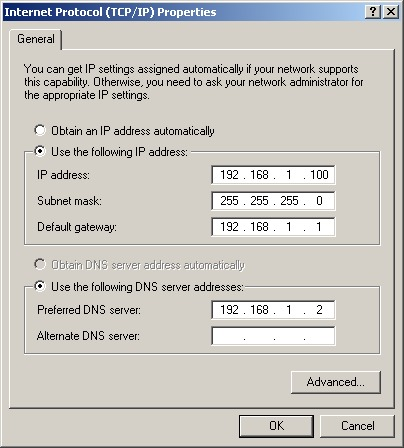
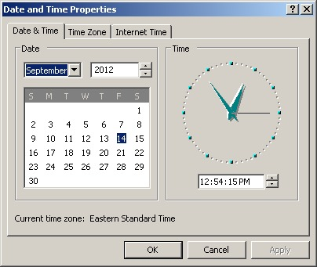

Themen
- Was ist Samba NICHT
- Was ist Samba
-
GeschichteWas kann SambaUnterstützung
- Vor-/Nachteile
- Was ist neu an Samba4
-
Windows
- Installation
-
Linux seitigWindows seitig
- Administration
-
Windows Remote Server Administration ToolsLinux commandline
-
Was ist Samba NICHT
-


-
Was ist Samba
-
- Software
- Verbindung von heterogenen Systemen
- Datei / Druckserver
- Authentifizierungsserver
- Windows Internet Name Service (WINS) Server
-
Was kann Samba sonst noch
-
- Emulieren eines Active Directory domain controllers
- Backup Server für Windows Active Directory
- Mitglied einer Active Directory domain
- SMART Card login
-
Was ist Samba
-
- Geschichte
-
- 1992 von Andrew Tridgell
- "SMB-Server" war patentiert
- Portierung auf Linux
- Dauerhafte Weiterentwicklung
- 2000 Abspaltung von Samba-TNG
- 20 Kernentwickler
- Momentane Version: 4.0.0rc6
-
Was ist Samba
-
- Unterstützung
-
- Windows (2000|XP|Vista|7|8)
- BSD (FreeBSD|OpenBSD)
- Linux (z.B. debian,SuSe,RetHat,Slackware,CentOS,...)
- OS X
- Novell Netware
- Solaris
Vor- und Nachteile
-
Vorteile
-
- Kostenlos
- Dauerhafte Weiterentwicklung
- Aktive Community
- Flexibel in der Anwendung
- Stabil
- Gut skalierbar
- Geringe Hardwareanforderungen
-
Nachteile
-
- Keine Garantie auf Support
- Möglicherweise lange Wartezeiten auf Bugfixes
Was ist neu
-
Was ist neu an Samba4
- Windows
-
- Active Directory Login Umgebung
- NTVFS als Alternative zu smbd
- Problemloser Domänenbeitritt
- Keine Scripts nötig
Samba installieren
Installation
- Vorraussetzungen
# apt-get install build-essential libacl1-dev libattr1-dev \ libblkid-dev libgnutls-dev libreadline-dev python-dev \ python-dnspython gdb pkg-config libpopt-dev libldap2-dev \ dnsutils libbsd-dev attr krb5-user docbook-xsl
root@download ~ # apt-get install build-essential libacl1-dev libattr1-dev \ libblkid-dev libgnutls-dev libreadline-dev python-dev \ python-dnspython gdb pkg-config libpopt-dev libldap2-dev \ dnsutils libbsd-dev attr krb5-user docbook-xsl Reading package lists... Done Building dependency tree Reading state information... Done The following extra packages will be installed: bind9-host gdbserver geoip-database krb5-config libbind9-60 libdns69 libgcrypt11-dev libgeoip1 libgpg-error-dev libisc62 libisccc60 libisccfg62 liblwres60 libpython2.6 libtasn1-3-dev lynx lynx-cur python-support python2.6-dev sgml-data The following NEW packages will be installed: attr bind9-host dnsutils krb5-config krb5-user libacl1-dev libattr1-dev libbind9-60 libblkid-dev libbsd-dev libdns69 libgcrypt11-dev libgnutls-dev libgpg-error-dev libisc62 libisccc60 libisccfg62 liblwres60 libpopt-dev libpython2.6 libreadline-dev libtasn1-3-dev lynx lynx-cur python-dev python-dnspython python-support python2.6-dev sgml-data 0 upgraded, 36 newly installed, 0 to remove and 0 not upgraded. Need to get 19.8 MB of archives. After this operation, 67.9 MB of additional disk space will be used. Do you want to continue [Y/n]?
Installation
- Herunterladen
$ git clone git://git.samba.org/samba.git samba-master $ cd samba-master
Cloning into 'samba-master'... remote: Counting objects: 1105381, done. remote: Compressing objects: 88% (215505/244892), receiving objects: 0% (1/1) remote: Compressing objects: 100% (244892/244892), done. Receiving objects: 100% (1105381/1105381), 215.44 MiB | 19.29 MiB/s, done. remote: Total 1105381 (delta 855035), reused 1105019 (delta 854764) Resolving deltas: 100% (855035/855035), done. Checking out files: 100% (7151/7151), done.
Installation
- Konfigurieren
$ ./configure --enable-debug --enable-selftest
Checking for program gcc or cc : /usr/bin/gcc Checking for program cpp : /usr/bin/cpp Checking for program ar : /usr/bin/ar Checking for program ranlib : /usr/bin/ranlib Checking for gcc : ok Checking for program git : /usr/bin/git Check for -MD : yes Checking for program gdb : not found Checking build system : Linux yoda 3.6.10-1-ARCH #1 SMP PREEMPT Tue Dec 11 10:19:36 CET 2012 i686 GNU/Linux Checking for header sys/utsname.h : yes Checking uname sysname type : Linux Checking uname machine type : i686 Checking uname release type : 3.6.10-1-ARCH Checking uname version type : #1 SMP PREEMPT Tue Dec 11 10:19:36 CET 2012 Checking for header stdio.h : yes Checking simple C program : ok Checking for rpath library support : ok Checking for -Wl,--version-script support : ok Checking compiler accepts -fPIC : yes Checking for inline : inline Checking for pkg-config version >= 0.0.0 : yes Checking for header sys/types.h : yes Checking for header sys/stat.h : yes Checking for header stdlib.h : yes Checking for header stddef.h : yes Checking for header memory.h : yes Checking for header string.h : yes Checking for header strings.h : yes Checking for header inttypes.h : yes Checking for header stdint.h : yes Checking for header unistd.h : yes Checking for header minix/config.h : no Checking for header ctype.h : yes Checking for header standards.h : no Checking for header stdbool.h : yes Checking for header stdarg.h : yes Checking for header vararg.h : no Checking for header limits.h : yes Checking for header assert.h : yes Checking getconf LFS_CFLAGS : -D_LARGEFILE_SOURCE -D_FILE_OFFSET_BITS=64 Checking getconf large file support flags work : ok Checking for large file support without additional flags : ok Checking for header sys/time.h : yes Checking for header time.h : yes Checking for WORDS_BIGENDIAN : not found Checking for header signal.h : yes Checking if signal handlers return int : not found Checking for variable __FUNCTION__ : ok Checking for va_copy : ok Checking for HAVE__VA_ARGS__MACRO : ok Checking compiler accepts [''] : yes Checking compiler accepts ['-Wstack-protector'] : yes Checking compiler accepts ['-Werror'] : yes Checking for header linux/types.h : yes Checking for header crypt.h : yes Checking for header locale.h : yes Checking for header acl/libacl.h : yes Checking for header compat.h : no Checking for header attr/xattr.h : yes Checking for header dustat.h : no Checking for header fcntl.h : yes Checking for header fnmatch.h : yes Checking for header glob.h : yes Checking for header history.h : no Checking for header krb5.h : yes Checking for header langinfo.h : yes Checking for header libaio.h : no Checking for header ndir.h : no Checking for header pwd.h : yes Checking for header shadow.h : yes Checking for header sys/acl.h : yes Checking for header sys/attributes.h : no Checking for header attr/attributes.h : yes Checking for header sys/capability.h : yes Checking for header sys/dir.h : yes Checking for header sys/epoll.h : yes Checking for header sys/fcntl.h : yes Checking for header sys/filio.h : no Checking for header sys/filsys.h : no Checking for header sys/fs/s5param.h : no Checking for header sys/fs/vx/quota.h : no Checking for header sys/id.h : no Checking for header sys/ioctl.h : yes Checking for header sys/ipc.h : yes Checking for header sys/mman.h : yes Checking for header sys/mode.h : no Checking for header sys/ndir.h : no Checking for header sys/priv.h : no Checking for header sys/resource.h : yes Checking for header sys/security.h : no Checking for header sys/shm.h : yes Checking for header sys/statfs.h : yes Checking for header sys/statvfs.h : yes Checking for header sys/termio.h : no Checking for header sys/vfs.h : yes Checking for header sys/xattr.h : yes Checking for header termio.h : yes Checking for header termios.h : yes Checking for header sys/file.h : yes Checking for header sys/wait.h : yes Checking for header malloc.h : yes Checking for header grp.h : yes Checking for header sys/select.h : yes Checking for header setjmp.h : yes Checking for header utime.h : yes Checking for header sys/syslog.h : yes Checking for header syslog.h : yes Checking for header sys/mount.h : yes Checking for header mntent.h : yes Checking for header stropts.h : yes Checking for header unix.h : no Checking for header sys/param.h : yes Checking for header sys/socket.h : yes Checking for header netinet/in.h : yes Checking for header netdb.h : yes Checking for header arpa/inet.h : yes Checking for header netinet/in_systm.h : yes Checking for header netinet/ip.h : yes Checking for header netinet/tcp.h : yes Checking for header netinet/in_ip.h : no Checking for header sys/sockio.h : no Checking for header sys/un.h : yes Checking for header sys/uio.h : yes Checking for header ifaddrs.h : yes Checking for header direct.h : no Checking for header dirent.h : yes Checking for header windows.h : no Checking for header winsock2.h : no Checking for header ws2tcpip.h : no Checking for header libintl.h : yes Checking for header errno.h : yes Checking for header gcrypt.h : yes Checking for header getopt.h : yes Checking for header iconv.h : yes Checking for header sys/inotify.h : yes Checking for header nss.h : yes Checking for header sasl/sasl.h : yes Checking for header security/pam_appl.h : yes Checking for header zlib.h : yes Checking for header asm/unistd.h : yes Checking for header aio.h : yes Checking for header sys/unistd.h : yes Checking for header rpc/rpc.h : yes Checking for header rpc/nettype.h : no Checking for header alloca.h : yes Checking for header float.h : yes Checking for header rpcsvc/nis.h : yes Checking for header rpcsvc/ypclnt.h : yes Checking for header sys/prctl.h : yes Checking for header sys/sysctl.h : yes Checking for header sys/fileio.h : no Checking for header sys/filesys.h : no Checking for header sys/dustat.h : no Checking for header sys/sysmacros.h : yes Checking for header xfs/libxfs.h : no Checking for header netgroup.h : no Checking for header rpcsvc/yp_prot.h : yes Checking for HAVE_RPCSVC_YP_PROT_H : ok Checking for header valgrind.h : no Checking for header valgrind/valgrind.h : no Checking for header valgrind/memcheck.h : no Checking for header nss_common.h : no Checking for header nsswitch.h : no Checking for header ns_api.h : no Checking for header sys/extattr.h : no Checking for header sys/ea.h : no Checking for header sys/proplist.h : no Checking for header sys/cdefs.h : yes Checking for header utmp.h : yes Checking for header utmpx.h : yes Checking for header lastlog.h : yes Checking for header syscall.h : yes Checking for header sys/syscall.h : yes Checking for long long : ok Checking for intptr_t : ok Checking for uintptr_t : ok Checking for ptrdiff_t : ok Checking for comparison_fn_t : ok Checking for _Bool : ok Checking for bool : ok Checking for int8_t : ok Checking for uint8_t : ok Checking for int16_t : ok Checking for uint16_t : ok Checking for int32_t : ok Checking for uint32_t : ok Checking for int64_t : ok Checking for uint64_t : ok Checking for size_t : ok Checking for ssize_t : ok Checking for ino_t : ok Checking for loff_t : ok Checking for offset_t : not found Checking for volatile int : ok Checking for uint_t : not found Checking for blksize_t : ok Checking for blkcnt_t : ok Checking size of bool : 1 Checking size of char : 1 Checking size of int : 4 Checking size of long long : 8 Checking size of long : 4 Checking size of short : 2 Checking size of size_t : 4 Checking size of ssize_t : 4 Checking size of int8_t : 1 Checking size of uint8_t : 1 Checking size of int16_t : 2 Checking size of uint16_t : 2 Checking size of int32_t : 4 Checking size of uint32_t : 4 Checking size of int64_t : 8 Checking size of uint64_t : 8 Checking size of void* : 4 Checking size of off_t : 8 Checking size of dev_t : 8 Checking size of ino_t : 8 Checking size of time_t : 4 Checking for socklen_t : ok Checking for struct ifaddrs : ok Checking for struct addrinfo : ok Checking for struct sockaddr : ok Checking for HAVE_STRUCT_SOCKADDR_IN6 : ok Checking for struct sockaddr_storage : ok Checking for sa_family_t : ok Checking for sig_atomic_t : ok Checking for inet_ntoa : ok Checking for inet_aton : ok Checking for inet_ntop : ok Checking for inet_pton : ok Checking for connect : ok Checking for gethostbyname : ok Checking for getaddrinfo : ok Checking for getnameinfo : ok Checking for freeaddrinfo : ok Checking for gai_strerror : ok Checking for socketpair : ok Checking for variable IPV6_V6ONLY : ok Checking for HAVE_IPV6 : ok Checking for strdup : ok Checking for memmem : ok Checking for printf : ok Checking for memset : ok Checking for memcpy : ok Checking for memmove : ok Checking for strcpy : ok Checking for strncpy : ok Checking for bzero : ok Checking for shl_load : not found Checking for shl_unload : not found Checking for shl_findsym : not found Checking for pipe : ok Checking for strftime : ok Checking for srandom : ok Checking for random : ok Checking for srand : ok Checking for rand : ok Checking for usleep : ok Checking for setbuffer : ok Checking for lstat : ok Checking for getpgrp : ok Checking for utime : ok Checking for utimes : ok Checking for setuid : ok Checking for seteuid : ok Checking for setreuid : ok Checking for setresuid : ok Checking for setgid : ok Checking for setegid : ok Checking for setregid : ok Checking for setresgid : ok Checking for chroot : ok Checking for strerror : ok Checking for vsyslog : ok Checking for setlinebuf : ok Checking for mktime : ok Checking for ftruncate : ok Checking for chsize : not found Checking for rename : ok Checking for waitpid : ok Checking for wait4 : ok Checking for initgroups : ok Checking for pread : ok Checking for pwrite : ok Checking for strndup : ok Checking for strcasestr : ok Checking for strtok_r : ok Checking for mkdtemp : ok Checking for dup2 : ok Checking for dprintf : ok Checking for vdprintf : ok Checking for isatty : ok Checking for chown : ok Checking for lchown : ok Checking for link : ok Checking for readlink : ok Checking for symlink : ok Checking for realpath : ok Checking for snprintf : ok Checking for vsnprintf : ok Checking for asprintf : ok Checking for vasprintf : ok Checking for setenv : ok Checking for unsetenv : ok Checking for strnlen : ok Checking for strtoull : ok Checking for __strtoull : not found Checking for strtouq : ok Checking for strtoll : ok Checking for __strtoll : not found Checking for strtoq : ok Checking for memalign : ok Checking for posix_memalign : ok Checking for strlcpy : not found Checking for strlcat : not found Checking for strlcpy : not found Checking for strlcat : not found Checking for library bsd : not found Checking for strlcpy : not found Checking for strlcat : not found Checking for getpeereid : not found Checking for library bsd : not found Checking for getpeereid : not found Checking for library bsd : not found Checking for setproctitle : not found Checking for library setproctitle : not found Checking for setproctitle : not found Checking whether we can use SO_PEERCRED to get socket credentials : ok Checking correct behavior of strtoll : not found Checking for if_nametoindex : ok Checking for strerror_r : ok Checking for getdirentries : ok Checking for getdents : not found Checking for syslog : ok Checking for gai_strerror : ok Checking for get_current_dir_name : ok Checking for timegm : ok Checking for getifaddrs : ok Checking for freeifaddrs : ok Checking for mmap : ok Checking for setgroups : ok Checking for syscall : ok Checking for setsid : ok Checking for getgrent_r : ok Checking for getgrgid_r : ok Checking for getgrnam_r : ok Checking for getgrouplist : ok Checking for getpagesize : ok Checking for getpwent_r : ok Checking for getpwnam_r : ok Checking for getpwuid_r : ok Checking for epoll_create : ok Checking for fgetxattr : ok Checking for flistea : not found Checking for flistxattr : ok Checking for fremovexattr : ok Checking for fsetxattr : ok Checking for getxattr : ok Checking for listxattr : ok Checking for removexattr : ok Checking for setxattr : ok Checking for library attr : yes Checking for flistea : not found Checking whether xattr interface takes additional options : not found Checking for dlopen : not found Checking for dlsym : not found Checking for dlerror : not found Checking for dlclose : not found Checking for library dl : yes Checking for dlopen : ok Checking for dlsym : ok Checking for dlerror : ok Checking for dlclose : ok Checking for declaration of dlopen : ok Checking C prototype for dlopen : not found Checking for fdatasync : ok Checking for declaration of fdatasync : ok Checking for clock_gettime : not found Checking for library rt : yes Checking for clock_gettime : ok Checking whether the clock_gettime clock ID CLOCK_MONOTONIC is available : ok Checking whether the clock_gettime clock ID CLOCK_PROCESS_CPUTIME_ID is available : ok Checking whether the clock_gettime clock ID CLOCK_REALTIME is available : ok Checking for struct timespec : ok Checking for header net/if.h : yes Checking for header arpa/nameser.h : yes Checking for header resolv.h : yes Checking for res_search : not found Checking for library resolv : yes Checking for res_search : ok Checking for gettext : ok Checking for library intl : not found Checking for dgettext : ok Checking for pthread_create : not found Checking for library pthread : yes Checking for pthread_create : ok Checking for crypt : not found Checking for library crypt : yes Checking for crypt : ok Checking for header readline.h : no Checking for header readline/readline.h : yes Checking for header readline/history.h : yes Checking for variable rl_event_hook : ok Checking for declaration of snprintf : ok Checking for declaration of vsnprintf : ok Checking for declaration of asprintf : ok Checking for declaration of vasprintf : ok Checking for declaration of errno : ok Checking for declaration of environ : ok Checking for declaration of getgrent_r : ok Checking for declaration of getpwent_r : ok Checking for declaration of pread : ok Checking for declaration of pwrite : ok Checking for declaration of setenv : ok Checking for declaration of setresgid : ok Checking for declaration of setresuid : ok Checking for header poll.h : yes Checking for poll : ok Checking for strptime : ok Checking for declaration of strptime : ok Checking for working strptime : ok Checking for HAVE_GETTIMEOFDAY_TZ : ok Checking for C99 vsnprintf : ok Checking for HAVE_SHARED_MMAP : ok Checking for HAVE_MREMAP : ok Checking for HAVE_INCOHERENT_MMAP : not found Checking for HAVE_IMMEDIATE_STRUCTURES : ok Checking for HAVE_MKDIR_MODE : ok Checking for member st_mtim.tv_nsec in struct stat : ok Checking for member st_rdev in struct stat : ok Checking for member st_rdev in struct stat : ok Checking for member ss_family in struct sockaddr_storage : ok Checking for member __ss_family in struct sockaddr_storage : not found Checking for member sa_len in struct sockaddr : not found Checking for member sin_len in struct sockaddr_in : not found Checking for HAVE_UNIXSOCKET : ok Checking for HAVE_SECURE_MKSTEMP : ok Checking compiler accepts -fvisibility=hidden : yes Checking for HAVE_VISIBILITY_ATTR : ok Checking for HAVE_IFACE_GETIFADDRS : ok Checking for getpwnam_r : ok Checking for getpwuid_r : ok Checking for getpwent_r : ok Checking for declaration of getpwent_r : ok Checking C prototype for getpwent_r : not found Checking for declaration of getgrent_r : ok Checking C prototype for getgrent_r : not found Checking C prototype for getpwent_r : not found Checking C prototype for getgrent_r : not found Checking for getgrouplist : ok Checking for program python : /usr/bin/python Checking for program perl : /usr/bin/perl Checking for program xsltproc : not found Checking for program python : /usr/bin/python Checking for Python version >= 2.4.2 : ok 2.7.3 Checking for library python2.7 : yes Checking for program python2.7-config : /usr/bin/python2.7-config Checking for custom code : yes Dynconfig[STATEDIR]: : '/usr/local/samba/var/locks' Dynconfig[SCRIPTSBINDIR]: : '/usr/local/samba/sbin' Dynconfig[PAMMODULESDIR]: : '/usr/local/samba/lib/security' Dynconfig[WINBINDD_SOCKET_DIR]: : '/usr/local/samba/var/run/winbindd' Dynconfig[PRIVATE_DIR]: : '/usr/local/samba/private' Dynconfig[SETUPDIR]: : '/usr/local/samba/share/setup' Dynconfig[PIDDIR]: : '/usr/local/samba/var/run' Dynconfig[PKGCONFIGDIR]: : '/usr/local/samba/lib/pkgconfig' Dynconfig[DATADIR]: : '/usr/local/samba/share' Dynconfig[CACHEDIR]: : '/usr/local/samba/var/cache' Dynconfig[SBINDIR]: : '/usr/local/samba/sbin' Dynconfig[NCALRPCDIR]: : '/usr/local/samba/var/run/ncalrpc' Dynconfig[LMHOSTSFILE]: : '/usr/local/samba/etc/lmhosts' Dynconfig[LOCKDIR]: : '/usr/local/samba/var/lock' Dynconfig[SWATDIR]: : '/usr/local/samba/share/swat' Dynconfig[PYTHONARCHDIR]: : '/usr/local/samba/lib/python2.7/site-packages' Dynconfig[LOGFILEBASE]: : '/usr/local/samba/var' Dynconfig[PYTHONDIR]: : '/usr/local/samba/lib/python2.7/site-packages' Dynconfig[NTP_SIGND_SOCKET_DIR]: : '/usr/local/samba/var/lib/ntp_signd' Dynconfig[CONFIGFILE]: : '/usr/local/samba/etc/smb.conf' Dynconfig[SOCKET_DIR]: : '/usr/local/samba/var/run' Dynconfig[MODULESDIR]: : '/usr/local/samba/lib' Dynconfig[WINBINDD_PRIVILEGED_SOCKET_DIR]: : '/usr/local/samba/var/lib/winbindd_privileged' Dynconfig[LIBDIR]: : '/usr/local/samba/lib' Dynconfig[LOCALEDIR]: : '/usr/local/samba/share/locale' Dynconfig[NMBDSOCKETDIR]: : '/usr/local/samba/var/run/nmbd' Dynconfig[INCLUDEDIR]: : '/usr/local/samba/include' Dynconfig[CODEPAGEDIR]: : '/usr/local/samba/share/codepages' Dynconfig[PRIVATELIBDIR]: : '/usr/local/samba/lib/private' Dynconfig[PRIVILEGED_SOCKET_DIR]: : '/usr/local/samba/var/lib' Dynconfig[LIBEXECDIR]: : '/usr/local/samba/libexec' Dynconfig[SMB_PASSWD_FILE]: : '/usr/local/samba/private/smbpasswd' Dynconfig[BINDIR]: : '/usr/local/samba/bin' Dynconfig[CONFIGDIR]: : '/usr/local/samba/etc' Checking for system tdb >= 1.2.11 : yes Checking for stylesheet http://docbook.sourceforge.net/release/xsl/current/manpages/docbook.xsl : not found Checking for program python : /usr/bin/python Checking for Python version >= 2.4.2 : ok 2.7.3 Checking for python headers : using cache Checking linker accepts -Wl,-no-undefined : yes Checking linker accepts ['-undefined', 'dynamic_lookup'] : no Checking for system talloc >= 2.0.8 : yes Checking for system pytalloc-util >= 2.0.8 : yes Checking for stylesheet http://docbook.sourceforge.net/release/xsl/current/manpages/docbook.xsl : not found Checking for program python : /usr/bin/python Checking for Python version >= 2.4.2 : ok 2.7.3 Checking for python headers : using cache Checking linker accepts -Wl,-no-undefined : yes Checking linker accepts ['-undefined', 'dynamic_lookup'] : no Checking for system tevent >= 0.9.17 : not found Checking for epoll_create : ok Checking for program python : /usr/bin/python Checking for Python version >= 2.4.2 : ok 2.7.3 Checking for python headers : using cache Checking linker accepts -Wl,-no-undefined : yes Checking linker accepts ['-undefined', 'dynamic_lookup'] : no Checking for system popt : yes Checking for header popt.h : yes Checking for library popt : yes Checking for poptGetContext : ok Checking for program python : /usr/bin/python Checking for program xsltproc : not found Checking for Python version >= 2.4.2 : ok 2.7.3 Checking for python headers : using cache Checking for system ldb >= 1.1.14 : not found Checking for system pyldb-util >= 1.1.14 : not found Checking linker accepts -Wl,-no-undefined : yes Checking linker accepts ['-undefined', 'dynamic_lookup'] : no Checking for u_char : ok Checking for u_int32_t : ok Checking for header err.h : yes Checking for header sys/bswap.h : no Checking for header sys/stropts.h : yes Checking for header sys/timeb.h : yes Checking for header sys/times.h : yes Checking for header timezone.h : no Checking for header ttyname.h : no Checking for header netinet/in6.h : no Checking for header netinet6/in6.h : no Checking for header curses.h : yes Checking for header term.h : yes Checking for header termcap.h : yes Checking for atexit : ok Checking for cgetent : not found Checking for getprogname : not found Checking for setprogname : not found Checking for gethostname : ok Checking for putenv : ok Checking for rcmd : ok Checking for readv : ok Checking for sendmsg : ok Checking for setitimer : ok Checking for strlwr : not found Checking for strncasecmp : ok Checking for strptime : ok Checking for strsep : ok Checking for strsep_copy : not found Checking for strtok_r : ok Checking for strupr : not found Checking for swab : ok Checking for umask : ok Checking for uname : ok Checking for unsetenv : ok Checking for closefrom : not found Checking for err : ok Checking for warn : ok Checking for errx : ok Checking for warnx : ok Checking for flock : ok Checking for writev : ok Checking for hstrerror : ok Checking for socket : ok Checking for getipnodebyname : not found Checking for gethostent : ok Checking for gethostent_r : ok Checking for sethostent : ok Checking for endhostent : ok Checking for getipnodebyaddr : not found Checking for freehostent : not found Checking for gethostbyname_r : ok Checking for gethostbyaddr : ok Checking for library socket : not found Checking for library nsl : yes Checking for getipnodebyname : not found Checking for getipnodebyaddr : not found Checking for freehostent : not found Checking for iruserok : ok Checking for bswap16 : not found Checking for bswap32 : not found Checking for header sys/termios.h : yes Checking for struct winsize : ok Checking for member ws_xpixel in struct winsize : ok Checking for member ws_ypixel in struct winsize : ok Checking for variable h_errno : ok Checking for declaration of h_errno : ok Checking for res_nsearch : not found Checking for res_ndestroy : not found Checking for dns_search : not found Checking for dn_expand : not found Checking for res_nsearch : ok Checking for res_ndestroy : not found Checking for dns_search : not found Checking for dn_expand : ok Checking for variable _res : ok Checking for declaration of _res : ok Checking for openpty : not found Checking for library util : yes Checking for openpty : ok Checking for dirfd : ok Checking for declaration of dirfd : ok Checking for member dd_fd in DIR : not found Using in-tree heimdal kerberos defines Checking for program krb5-config.heimdal : not found Checking for program krb5-config : /usr/bin/krb5-config Checking for system com_err : yes Checking for library com_err : yes Checking for com_right_r : ok Checking for gnutls >= 1.4.0 and broken versions : yes Checking for library gnutls : yes Checking for gnutls_global_init : ok Checking for header gnutls/x509.h : yes Checking for variable gnutls_x509_crt_set_version : ok Checking for variable gnutls_x509_crt_set_subject_key_id : ok Checking for gnutls_datum : ok Checking for gnutls_datum_t : ok Checking for library gcrypt : yes Checking for gcry_control : ok Checking for library gpg-error : yes Checking for gpg_err_code_from_errno : ok Checking for header linux/fcntl.h : yes Checking for declaration of F_SETLEASE : ok Checking for declaration of SA_SIGINFO : ok Checking for backtrace : ok Checking for backtrace_symbols : ok Checking for sigprocmask : ok Checking for sigblock : ok Checking for sigaction : ok Checking for member f_frsize in struct statvfs : ok Checking for statvfs (SVR4) : ok Checking if f_fsid is an integer : ok Checking whether statvfs.f_flag exists : ok Checking whether statvfs.f_flags exists : not found Checking for header byteswap.h : yes Checking for bswap_64 : ok Checking for HAVE_ATTRIBUTE_COLD : ok Checking for HAVE_ATTRIBUTE_CONST : ok Checking for HAVE_ATTRIBUTE_NORETURN : ok Checking for HAVE_ATTRIBUTE_PRINTF : ok Checking for HAVE_ATTRIBUTE_UNUSED : ok Checking for HAVE_ATTRIBUTE_USED : ok Checking for header endian.h : yes Checking for header sys/endian.h : no Checking for HAVE_LITTLE_ENDIAN : not found Checking for HAVE_BIG_ENDIAN : not found Checking for HAVE_LITTLE_ENDIAN - runtime : ok Checking for HAVE_BIG_ENDIAN - runtime : not found Checking for HAVE_BUILTIN_CHOOSE_EXPR : ok Checking for HAVE_BUILTIN_CLZ : ok Checking for HAVE_BUILTIN_CLZL : ok Checking for HAVE_BUILTIN_CLZLL : ok Checking for HAVE_BUILTIN_CONSTANT_P : ok Checking for HAVE_BUILTIN_EXPECT : ok Checking for HAVE_BUILTIN_POPCOUNTL : ok Checking for HAVE_BUILTIN_TYPES_COMPATIBLE_P : ok Checking for HAVE_COMPOUND_LITERALS : ok Checking for HAVE_FLEXIBLE_ARRAY_MEMBER : ok Checking for HAVE_ISBLANK : ok Checking for HAVE_TYPEOF : ok Checking for HAVE_WARN_UNUSED_RESULT : ok Checking for small off_t : yes Checking for -D_FILE_OFFSET_BITS=64 : yes Checking for system ntdb >= 0.9 : not found Checking for program python : /usr/bin/python Checking for Python version >= 2.4.2 : ok 2.7.3 Checking for python headers : using cache Checking for library z : yes Checking for zlibVersion : ok Checking for ZLIB_VERNUM >= 0x1230 and working link to zlib : ok Checking for library iconv : no Checking for library iconv : not found Checking for iconv_open : ok Checking for pam_start : not found Checking for library pam : yes Checking for pam_start : ok Checking for library sasl2 : yes Checking for sasl_client_init : ok Checking for header security/pam_modules.h : yes Checking for header pam/pam_modules.h : no Checking for header nss_dbdefs.h : no Checking for member ipnode.af_family in union nss_XbyY_key : not found Checking for member pw_comment in struct passwd : not found Checking for member pw_age in struct passwd : not found Checking for system iniparser : not found Checking for header iniparser.h : no Checking for system subunit : not found Checking for library ncurses : yes Checking for tgetent : ok Checking for rl_completion_t : not found Checking for CPPFunction : ok Checking for library readline : yes Checking for rl_completion_matches : ok Checking for history_list : ok Checking for MD5Init : not found Checking for library bsd : not found Checking for MD5Init : not found Checking for CC_MD5_Init : not found Checking for CC_MD5_Init : not found perl manpage generation : ok perl man1 extension : 1p perl man3 extension : 3pm Checking for program yapp : not found Checking for program pod2man : /usr/bin/core_perl/pod2man Checking linker accepts -Wl,--export-dynamic : yes Checking for header libexc.h : no Checking for header libunwind.h : no Checking for header linux/falloc.h : yes Checking for getcwd : ok Checking for fchown : ok Checking for chmod : ok Checking for fchmod : ok Checking for mknod : ok Checking for strtol : ok Checking for strchr : ok Checking for strupr : not found Checking for chflags : not found Checking for getrlimit : ok Checking for fsync : ok Checking for fdatasync : ok Checking for setpgid : ok Checking for setsid : ok Checking for glob : ok Checking for strpbrk : ok Checking for crypt16 : not found Checking for getauthuid : not found Checking for sigprocmask : ok Checking for sigblock : ok Checking for sigaction : ok Checking for sigset : ok Checking for innetgr : ok Checking for initgroups : ok Checking for select : ok Checking for poll : ok Checking for rdchk : not found Checking for getgrnam : ok Checking for getgrent : ok Checking for pathconf : ok Checking for setpriv : not found Checking for setgidx : not found Checking for setuidx : not found Checking for setgroups : ok Checking for syscall : ok Checking for sysconf : ok Checking for atexit : ok Checking for grantpt : ok Checking for fallocate : ok Checking for posix_fallocate : ok Checking for fseeko : ok Checking for setluid : not found Checking for getpwnam : ok Checking for fdopendir : ok Checking for getpwent_r : ok Checking for setenv : ok Checking for strcasecmp : ok Checking for fcvt : ok Checking for fcvtl : not found Checking for syslog : ok Checking for vsyslog : ok Checking for timegm : ok Checking for setlocale : ok Checking for nanosleep : ok Checking for lutimes : ok Checking for futimes : ok Checking for utimensat : ok Checking for futimens : ok Checking for mlock : ok Checking for munlock : ok Checking for mlockall : ok Checking for munlockall : ok Checking for memalign : ok Checking for posix_memalign : ok Checking for hstrerror : ok Checking for shmget : ok Checking for shm_open : not found Checking for shm_open : ok Checking for gettext : ok Checking for dgettext : ok Checking for bindtextdomain : ok Checking for textdomain : ok Checking for bind_textdomain_codeset : ok Checking for yp_get_default_domain : ok Checking for _dn_expand : not found Checking for __dn_expand : ok Checking for declaration of fdatasync : ok Checking for declaration of readahead : ok Checking for HAVE_LINUX_SPLICE : ok Checking for declaration of splice : ok Checking for kernel change notify support : ok Checking for Linux kernel oplocks : ok Checking for IRIX kernel oplock types : not found Checking for kernel share modes : ok Checking for DMAPI library existence Checking for library dm : not found Checking for dm_get_eventlist : not found Checking for library jfsdm : not found Checking for dm_get_eventlist : not found Checking for library dmapi : not found Checking for dm_get_eventlist : not found Checking for library xdsm : not found Checking for dm_get_eventlist : not found Checking for header sys/dmi.h : no Checking for header xfs/dmapi.h : no Checking for header sys/jfsdmapi.h : no Checking for header sys/dmapi.h : no Checking for header dmapi.h : no Checking whether DMAPI lib can be used : not found Checking for member st_blocks in struct stat : ok Checking for member st_blksize in struct stat : ok Checking for member st_flags in struct stat : not found Checking for header replace.h : no Checking whether blkcnt_t is 32 bit : not found Checking whether blkcnt_t is 64 bit : ok Checking for library cap : yes Checking for cap_get_proc : ok Checking whether POSIX capabilities are available : ok Checking for int16 typedef included by rpc/rpc.h : not found Checking for uint16 typedef included by rpc/rpc.h : not found Checking for int32 typedef included by rpc/rpc.h : not found Checking for uint32 typedef included by rpc/rpc.h : not found Checking for broken nisplus include files : ok Checking if the compiler will optimize out functions : ok Checking for LL suffix on long long integers : ok Checking for _acl : not found Checking for __acl : not found Checking for atexit : ok Checking for bindtextdomain : ok Checking for _chdir : not found Checking for __chdir : not found Checking for chflags : not found Checking for chmod : ok Checking for _close : not found Checking for __close : ok Checking for _closedir : not found Checking for __closedir : not found Checking for crypt16 : not found Checking for devnm : not found Checking for dgettext : ok Checking for dirfd : ok Checking for DNSServiceRegister : not found Checking for _dup : not found Checking for __dup : not found Checking for _dup2 : not found Checking for __dup2 : ok Checking for endmntent : ok Checking for execl : ok Checking for _facl : not found Checking for __facl : not found Checking for _fchdir : not found Checking for __fchdir : not found Checking for fchmod : ok Checking for fchown : ok Checking for _fcntl : not found Checking for __fcntl : ok Checking for fcvt : ok Checking for fcvtl : not found Checking for fdatasync : ok Checking for _fork : not found Checking for __fork : ok Checking for fseeko : ok Checking for fsetxattr : ok Checking for _fstat : not found Checking for __fstat : ok Checking for fsync : ok Checking for futimens : ok Checking for futimes : ok Checking for __fxstat : ok Checking for getauthuid : not found Checking for getcwd : ok Checking for _getcwd : not found Checking for __getcwd : not found Checking for getdents : not found Checking for __getdents : not found Checking for getdirentries : ok Checking for getgrent : ok Checking for getgrnam : ok Checking for getgrouplist : ok Checking for getgrset : not found Checking for getmntent : ok Checking for getpagesize : ok Checking for getpwanam : not found Checking for getpwent_r : ok Checking for getrlimit : ok Checking for gettext : ok Checking for glob : ok Checking for grantpt : ok Checking for hstrerror : ok Checking for initgroups : ok Checking for innetgr : ok Checking for llseek : ok Checking for _llseek : not found Checking for __llseek : not found Checking for _lseek : not found Checking for __lseek : ok Checking for _lstat : not found Checking for __lstat : ok Checking for lutimes : ok Checking for __lxstat : ok Checking for memalign : ok Checking for mknod : ok Checking for mlock : ok Checking for mlockall : ok Checking for munlock : ok Checking for munlockall : ok Checking for _open : not found Checking for __open : ok Checking for _opendir : not found Checking for __opendir : not found Checking for pathconf : ok Checking for poll : ok Checking for posix_fallocate : ok Checking for posix_memalign : ok Checking for prctl : ok Checking for pread : ok Checking for _pread : not found Checking for __pread : not found Checking for pwrite : ok Checking for _pwrite : not found Checking for __pwrite : not found Checking for rdchk : not found Checking for _read : not found Checking for __read : ok Checking for _readdir : not found Checking for __readdir : not found Checking for _seekdir : not found Checking for __seekdir : not found Checking for select : ok Checking for setenv : ok Checking for setgidx : not found Checking for setgroups : ok Checking for setlocale : ok Checking for setluid : not found Checking for setmntent : ok Checking for setpgid : ok Checking for setpriv : not found Checking for setsid : ok Checking for setuidx : not found Checking for shmget : ok Checking for shm_open : ok Checking for sigaction : ok Checking for sigblock : ok Checking for sigprocmask : ok Checking for sigset : ok Checking for _stat : not found Checking for __stat : ok Checking for statvfs : ok Checking for strcasecmp : ok Checking for strchr : ok Checking for strpbrk : ok Checking for strsignal : ok Checking for strtol : ok Checking for strupr : not found Checking for sysconf : ok Checking for sysctl : ok Checking for sysctlbyname : not found Checking for __sys_llseek : not found Checking for syslog : ok Checking for _telldir : not found Checking for __telldir : not found Checking for textdomain : ok Checking for timegm : ok Checking for utimensat : ok Checking for vsyslog : ok Checking for _write : not found Checking for __write : ok Checking for __xstat : ok Checking if can we convert from CP850 to UCS-2LE : ok Checking if can we convert from UTF-8 to UCS-2LE : ok building on linux2 Checking for library acl : yes Checking for acl_get_file : ok Checking for POSIX ACL support : ok Checking whether acl_get_perm_np() is available : not found Checking for dirfd : ok vfs_fileid: checking for statfs() and struct statfs.f_fsid : ok Checking whether the Linux 'fallocate' function is available : ok Checking whether Linux readahead is available : ok Checking for declaration of readahead : ok Checking for openat : ok Checking for library aio : not found Checking for aio_read : not found Checking for aio_read : ok Checking for asynchronous io support : ok Checking for aio_write : ok Checking for aio_fsync : ok Checking for aio_return : ok Checking for aio_error : ok Checking for aio_cancel : ok Checking for aio_suspend : ok Checking for library aio : not found Checking for io_submit : not found Checking for header sys/eventfd.h : yes Checking for header libaio.h : no Checking for header libaio.h : no Checking for linux kernel asynchronous io support : not found Checking if we can use msg_control for passing file descriptors : ok Checking if we can use msg_acctrights for passing file descriptors : not found Checking for program awk : /usr/bin/awk Checking for program perl : /usr/bin/perl Checking for header asm/types.h : yes Checking for major macro : ok Checking for minor macro : ok Checking for member d_off in struct dirent : ok Checking for setnetgrent : ok Checking for getnetgrent : ok Checking for endnetgrent : ok Checking compiler accepts -Werror-implicit-function-declaration : yes Checking for setnetgrent prototype : ok Checking for getnetgrent prototype : ok Checking for endnetgrent prototype : ok Checking for program cups-config : /usr/bin/cups-config Checking for /usr/bin/cups-config : yes Checking for header cups/cups.h : yes Checking for header cups/language.h : yes Checking for library cups : yes Checking for httpConnect : ok Checking for httpConnectEncrypt : ok Checking for header ldap.h : yes Checking for header lber.h : yes Checking for header ldap_pvt.h : no Checking for ber_tag_t : ok Checking for library lber : yes Checking for ber_scanf : ok Checking for ber_sockbuf_add_io : ok Checking for variable LDAP_OPT_SOCKBUF : ok Checking for variable LBER_OPT_LOG_PRINT_FN : ok Checking for library ldap : yes Checking for ldap_init : ok Checking for ldap_init_fd : ok Checking for ldap_initialize : ok Checking for ldap_set_rebind_proc : ok Checking for ldap_add_result_entry : ok Checking whether ldap_set_rebind_proc takes 3 arguments : ok Building with Active Directory support. Checking for pututline : ok Checking for pututxline : ok Checking for updwtmp : ok Checking for updwtmpx : ok Checking for getutmpx : ok Checking for getutxent : ok Checking for member ut_name in struct utmp : ok Checking for member ut_user in struct utmp : ok Checking for member ut_id in struct utmp : ok Checking for member ut_host in struct utmp : ok Checking for member ut_time in struct utmp : ok Checking for member ut_tv in struct utmp : ok Checking for member ut_type in struct utmp : ok Checking for member ut_pid in struct utmp : ok Checking for member ut_exit.e_exit in struct utmp : ok Checking for member ut_syslen in struct utmpx : not found Checking whether pututline returns pointer : ok Checking size of ((struct utmp *)NULL)->ut_line : 32 Checking for header avahi-common/watch.h : yes Checking for header avahi-client/client.h : yes Checking for library avahi-client : yes Checking for avahi_client_new : ok Checking for library avahi-common : yes Checking for avahi_strerror : ok Checking for header pam/pam_appl.h : no Checking for pam_get_data : ok Checking for header security/pam_ext.h : yes Checking for header security/_pam_macros.h : yes Checking for header pam/pam_ext.h : no Checking for header pam/_pam_macros.h : no Checking for pam_vsyslog : ok Checking whether PAM_RHOST is available : ok Checking whether PAM_TTY is available : ok Checking whether PAM_RADIO_TYPE is available : ok Checking whether Linux should use 32-bit credential calls : ok Checking whether we can use Linux thread-specific credentials with 32-bit system calls : ok Checking whether Linux netlink is available : ok Checking whether Linux rtnetlink is available : ok Checking whether fcntl locking is available : ok Checking for broken posix_fallocate : ok Checking for member st_mtim.tv_nsec in struct stat : ok Checking for member st_mtimensec in struct stat : not found Checking for member st_mtimespec.tv_nsec in struct stat : not found Checking for member st_mtime_n in struct stat : not found Checking for member st_umtime in struct stat : not found Checking for member st_birthtime in struct stat : not found Checking for member st_birthtimespec.tv_nsec in struct stat : not found Checking for member st_birthtimensec in struct stat : not found Checking whether posix_fadvise is available : ok Checking whether sysconf(_SC_NGROUPS_MAX) is available : ok Checking whether sysconf(_SC_NPROC_ONLN) is available : not found Checking whether sysconf(_SC_NPROCESSORS_ONLN) is available : ok Checking whether sysconf(_SC_PAGESIZE) is available : ok Checking whether to use the Darwin-specific initgroups system call : not found Checking whether struct utimbuf is available : ok Checking whether we have the struct sigevent : ok Checking for member sigev_value.sival_ptr in struct sigevent : ok Checking for member sigev_value.sigval_ptr in struct sigevent : not found Checking for the maximum value of the 'time_t' type : not found Checking whether the macro for makedev is available : ok Checking whether the realpath function allows a NULL argument : ok Checking for ftruncate extend : ok Checking for header sys/sendfile.h : yes Checking for linux sendfile support : ok getcwd takes a NULL argument : ok Checking for library gen : not found Checking for getspnam : ok Checking for header sys/fs/vx_quota.h : no Checking for header sys/quota.h : yes Checking for header ufs/ufs/quota.h : no Checking for header xfs/xqm.h : yes Checking for member dqb_fsoftlimit in struct dqblk : not found Checking for member dqb_curbytes in struct dqblk : not found Checking for header rpcsvc/rquota.h : yes Checking for member getquota_rslt_u in struct getquota_rslt : ok Checking for header ctdb.h : not found building without cluster support: ctdb.h is required for cluster support Checking whether we can compile with __attribute__((destructor)) : ok Checking whether seekdir returns void : ok Checking for pthread_attr_init : ok Checking for header gpfs_gpl.h : no Checking linker accepts -Wl,-no-undefined : yes Checking linker accepts ['-undefined', 'dynamic_lookup'] : no Checking linker accepts -Wl,--as-needed : yes Checking for -lc not needed : ok Checking configure summary : ok 'configure' finished successfully (1m1.837s)
Installation
- Bauen
$ make
WAF_MAKE=1 python ./buildtools/bin/waf build Waf: Entering directory `/root/samba-master/bin' Selected embedded Heimdal build [ 129/3738] Generating VERSION [ 164/3738] Generating smbd/build_options.c [ 178/3738] Compiling source4/heimdal/lib/roken/dumpdata.c [ 179/3738] Compiling source4/heimdal/lib/roken/emalloc.c [ 180/3738] Compiling source4/heimdal/lib/roken/ecalloc.c [ 181/3738] Compiling source4/heimdal/lib/roken/getarg.c [ 182/3738] Compiling source4/heimdal/lib/roken/get_window_size.c [ 183/3738] Compiling source4/heimdal/lib/roken/getdtablesize.c [ 184/3738] Compiling source4/heimdal/lib/roken/h_errno.c [ 185/3738] Compiling source4/heimdal/lib/roken/issuid.c [ 186/3738] Compiling source4/heimdal/lib/roken/net_read.c [ 187/3738] Compiling source4/heimdal/lib/roken/net_write.c [ 188/3738] Compiling source4/heimdal/lib/roken/parse_time.c [ 189/3738] Compiling source4/heimdal/lib/roken/parse_units.c [ 190/3738] Compiling source4/heimdal/lib/roken/vis.c [ 191/3738] Compiling source4/heimdal/lib/roken/strlwr.c [ 192/3738] Compiling source4/heimdal/lib/roken/strsep_copy.c [ 193/3738] Compiling source4/heimdal/lib/roken/strsep.c [ 194/3738] Compiling source4/heimdal/lib/roken/strupr.c [ 195/3738] Compiling source4/heimdal/lib/roken/strpool.c [ 196/3738] Compiling source4/heimdal/lib/roken/estrdup.c [ 197/3738] Compiling source4/heimdal/lib/roken/erealloc.c [ 198/3738] Compiling source4/heimdal/lib/roken/simple_exec.c [ 199/3738] Compiling source4/heimdal/lib/roken/strcollect.c [ 200/3738] Compiling source4/heimdal/lib/roken/rtbl.c [ 201/3738] Compiling source4/heimdal/lib/roken/rand.c [ 202/3738] Compiling source4/heimdal/lib/roken/cloexec.c [ 203/3738] Compiling source4/heimdal/lib/roken/xfree.c [ 204/3738] Compiling source4/heimdal_build/replace.c [ 205/3738] Compiling source4/heimdal/lib/roken/closefrom.c [ 206/3738] Compiling source4/heimdal/lib/vers/print_version.c [ 207/3738] Compiling source4/heimdal_build/version.c [ 208/3738] Compiling source4/heimdal/lib/vers/print_version.c [ 209/3738] Compiling source4/heimdal_build/version.c [ 210/3738] Compiling source4/heimdal/lib/asn1/main.c [ 211/3738] Compiling source4/heimdal/lib/asn1/gen.c [ 212/3738] Compiling source4/heimdal/lib/asn1/gen_copy.c [ 213/3738] Compiling source4/heimdal/lib/asn1/gen_decode.c [ 214/3738] Compiling source4/heimdal/lib/asn1/gen_encode.c [ 215/3738] Compiling source4/heimdal/lib/asn1/gen_free.c [ 216/3738] Compiling source4/heimdal/lib/asn1/gen_glue.c [ 217/3738] Compiling source4/heimdal/lib/asn1/gen_length.c [ 218/3738] Compiling source4/heimdal/lib/asn1/gen_seq.c [ 219/3738] Compiling source4/heimdal/lib/asn1/gen_template.c [ 220/3738] Compiling source4/heimdal/lib/asn1/hash.c [ 221/3738] Compiling source4/heimdal/lib/asn1/symbol.c [ 222/3738] Compiling source4/heimdal/lib/asn1/asn1parse.c [ 223/3738] Compiling source4/heimdal/lib/asn1/lex.c [ 224/3738] Compiling source4/heimdal/lib/com_err/parse.c [ 225/3738] Compiling source4/heimdal/lib/com_err/lex.c [ 226/3738] Compiling source4/heimdal/lib/com_err/compile_et.c [ 227/3738] Linking default/source4/heimdal_build/asn1_compile [ 228/3738] Linking default/source4/heimdal_build/compile_et [ 459/3738] Generating source4/torture/local/proto.h [ 608/3738] Compiling lib/replace/test/testsuite.c [ 609/3738] Compiling lib/replace/test/strptime.c [ 610/3738] Compiling lib/replace/test/os2_delete.c [ 611/3738] Compiling lib/replace/test/getifaddrs.c [ 612/3738] Compiling lib/socket/interfaces.c [ 613/3738] Compiling lib/tevent/tevent.c [ 614/3738] Compiling lib/tevent/tevent_debug.c [ 615/3738] Compiling lib/tevent/tevent_fd.c [ 616/3738] Compiling lib/tevent/tevent_immediate.c [ 617/3738] Compiling lib/tevent/tevent_queue.c [ 618/3738] Compiling lib/tevent/tevent_req.c [ 619/3738] Compiling lib/tevent/tevent_select.c [ 620/3738] Compiling lib/tevent/tevent_poll.c [ 621/3738] Compiling lib/tevent/tevent_signal.c [ 622/3738] Compiling lib/tevent/tevent_standard.c [ 623/3738] Compiling lib/tevent/tevent_timed.c [ 624/3738] Compiling lib/tevent/tevent_util.c [ 625/3738] Compiling lib/tevent/tevent_wakeup.c [ 626/3738] Compiling lib/tevent/tevent_epoll.c [ 627/3738] Compiling lib/tevent/pytevent.c ../lib/tevent/pytevent.c: In function 'py_tevent_context_new': ../lib/tevent/pytevent.c:639:2: warning: passing argument 4 of 'PyArg_ParseTupleAndKeywords' from incompatible pointer type [enabled by default] In file included from /usr/include/python2.7/Python.h:126:0, from ../lib/tevent/pytevent.c:25: /usr/include/python2.7/modsupport.h:28:17: note: expected 'char **' but argument is of type 'const char * const*' [ 628/3738] Compiling lib/addns/dnsquery.c [ 629/3738] Compiling lib/addns/dnsrecord.c [ 630/3738] Compiling lib/addns/dnsutils.c [ 631/3738] Compiling lib/addns/dnssock.c [ 632/3738] Compiling lib/addns/dnsgss.c [ 633/3738] Compiling lib/addns/dnsmarshall.c [ 634/3738] Compiling lib/addns/error.c [ 635/3738] Compiling lib/ccan/hash/hash.c [ 636/3738] Compiling lib/ccan/ilog/ilog.c [ 637/3738] Compiling lib/ccan/read_write_all/read_write_all.c [ 638/3738] Compiling lib/ccan/str/debug.c [ 639/3738] Compiling lib/ccan/str/str.c [ 640/3738] Compiling lib/ccan/tally/tally.c [ 641/3738] Compiling lib/ccan/likely/likely.c [ 642/3738] Compiling lib/ccan/err/err.c [ 643/3738] Compiling lib/tdb_compat/tdb_compat.c [ 644/3738] Compiling lib/ntdb/check.c [ 645/3738] Compiling lib/ntdb/free.c [ 646/3738] Compiling lib/ntdb/hash.c [ 647/3738] Compiling lib/ntdb/io.c [ 648/3738] Compiling lib/ntdb/lock.c [ 649/3738] Compiling lib/ntdb/open.c [ 650/3738] Compiling lib/ntdb/summary.c [ 651/3738] Compiling lib/ntdb/ntdb.c [ 652/3738] Compiling lib/ntdb/transaction.c [ 653/3738] Compiling lib/ntdb/traverse.c [ 654/3738] Compiling lib/ntdb/tools/ntdbtorture.c [ 655/3738] Compiling lib/ntdb/tools/ntdbtool.c [ 656/3738] Compiling lib/ntdb/tools/ntdbdump.c [ 657/3738] Compiling lib/ntdb/tools/ntdbrestore.c [ 658/3738] Compiling lib/ntdb/tools/ntdbbackup.c [ 659/3738] Compiling lib/ntdb/pyntdb.c [ 660/3738] Compiling lib/ldb/pyldb_util.c [ 661/3738] Compiling lib/ldb/common/ldb_modules.c [ 662/3738] Compiling lib/ldb/common/ldb_ldif.c [ 663/3738] Compiling lib/ldb/common/ldb_parse.c [ 664/3738] Compiling lib/ldb/common/ldb_msg.c [ 665/3738] Compiling lib/ldb/common/ldb_utf8.c [ 666/3738] Compiling lib/ldb/common/ldb_debug.c [ 667/3738] Compiling lib/ldb/common/ldb_dn.c [ 668/3738] Compiling lib/ldb/common/ldb_match.c [ 669/3738] Compiling lib/ldb/common/ldb_options.c [ 670/3738] Compiling lib/ldb/common/ldb_pack.c [ 671/3738] Compiling lib/ldb/common/ldb_attributes.c [ 672/3738] Compiling lib/ldb/common/attrib_handlers.c [ 673/3738] Compiling lib/ldb/common/ldb_controls.c [ 674/3738] Compiling lib/ldb/common/qsort.c [ 675/3738] Compiling lib/ldb/ldb_map/ldb_map.c ../lib/ldb/ldb_map/ldb_map.c: In function 'map_search_base_req': ../lib/ldb/ldb_map/ldb_map.c:895:6: warning: passing argument 6 of 'ldb_build_search_req_ex' discards 'const' qualifier from pointer target type [enabled by default] In file included from ../lib/ldb/include/ldb_module.h:36:0, from ../lib/ldb/ldb_map/ldb_map.h:29, from ../lib/ldb/ldb_map/ldb_map.c:41: ../lib/ldb/include/ldb.h:1159:5: note: expected 'struct ldb_parse_tree *' but argument is of type 'const struct ldb_parse_tree *' [ 676/3738] Compiling lib/ldb/ldb_map/ldb_map_inbound.c [ 677/3738] Compiling lib/ldb/ldb_map/ldb_map_outbound.c [ 678/3738] Compiling lib/ldb/pyldb.c [ 679/3738] Compiling lib/ldb/modules/paged_results.c [ 680/3738] Compiling lib/ldb/modules/asq.c [ 681/3738] Compiling lib/ldb/modules/sort.c [ 682/3738] Compiling lib/ldb/modules/paged_searches.c [ 683/3738] Compiling lib/ldb/modules/rdn_name.c [ 684/3738] Compiling lib/ldb/tests/sample_module.c ../lib/ldb/tests/sample_module.c: In function 'sample_add': ../lib/ldb/tests/sample_module.c:33:2: warning: passing argument 1 of 'ldb_msg_add_fmt' discards 'const' qualifier from pointer target type [enabled by default] In file included from default/include/public/ldb_module.h:36:0, from ../lib/ldb/tests/sample_module.c:27: default/include/public/ldb.h:1922:5: note: expected 'struct ldb_message *' but argument is of type 'const struct ldb_message *' [ 685/3738] Compiling lib/ldb/modules/skel.c [ 686/3738] Compiling lib/ldb/ldb_tdb/ldb_tdb.c ../lib/ldb/ldb_tdb/ldb_tdb.c: In function 'ltdb_store': ../lib/ldb/ldb_tdb/ldb_tdb.c:268:43: warning: passing argument 1 of 'ldb_pack_data' from incompatible pointer type [enabled by default] In file included from ../lib/ldb/ldb_tdb/ldb_tdb.c:53:0: ../lib/ldb/include/ldb_private.h:201:5: note: expected 'struct ldb_context *' but argument is of type 'struct ldb_module *' [ 687/3738] Compiling lib/ldb/ldb_tdb/ldb_search.c [ 688/3738] Compiling lib/ldb/ldb_tdb/ldb_index.c [ 689/3738] Compiling lib/ldb/ldb_tdb/ldb_cache.c [ 690/3738] Compiling lib/ldb/ldb_tdb/ldb_tdb_wrap.c [ 691/3738] Compiling lib/ldb/common/ldb.c ../lib/ldb/common/ldb.c: In function 'ldb_init': ../lib/ldb/common/ldb.c:116:3: warning: 'tevent_loop_allow_nesting' is deprecated (declared at default/include/public/tevent.h:1598) [-Wdeprecated-declarations] [ 692/3738] Compiling lib/ldb/tools/ldbadd.c [ 693/3738] Compiling lib/ldb/tools/ldbsearch.c [ 694/3738] Compiling lib/ldb/tools/ldbdel.c [ 695/3738] Compiling lib/ldb/tools/ldbmodify.c [ 696/3738] Compiling lib/ldb/tools/ldbedit.c [ 697/3738] Compiling lib/ldb/tools/ldbrename.c [ 698/3738] Compiling lib/ldb/tools/ldbtest.c [ 699/3738] Compiling lib/ldb/tools/ldbdump.c ../lib/ldb/tools/ldbdump.c: In function 'traverse_fn': ../lib/ldb/tools/ldbdump.c:47:2: warning: passing argument 2 of 'ldb_unpack_data' from incompatible pointer type [enabled by default] In file included from ../lib/ldb/tools/ldbdump.c:28:0: ../lib/ldb/include/ldb_private.h:204:5: note: expected 'const struct ldb_val *' but argument is of type 'struct TDB_DATA *' [ 700/3738] Compiling lib/ldb/tools/ldbutil.c [ 701/3738] Compiling lib/ldb/tools/cmdline.c [ 702/3738] Compiling lib/param/loadparm_server_role.c [ 703/3738] Compiling lib/param/loadparm.c In file included from ../lib/param/loadparm.c:322:0: ../lib/param/param_functions.c:66:8: warning: 'visibility' attribute ignored [-Wattributes] ../lib/param/param_functions.c:78:8: warning: 'visibility' attribute ignored [-Wattributes] [ 704/3738] Compiling lib/param/generic.c [ 705/3738] Compiling lib/param/util.c [ 706/3738] Compiling dynconfig/dynconfig.c [ 707/3738] Compiling lib/util/charset/iconv.c [ 708/3738] Compiling lib/util/charset/codepoints.c [ 709/3738] Compiling lib/util/charset/convert_string.c [ 710/3738] Compiling lib/util/charset/util_str.c [ 711/3738] Compiling lib/util/charset/util_unistr_w.c [ 712/3738] Compiling lib/util/charset/pull_push.c [ 713/3738] Compiling lib/util/charset/util_unistr.c [ 714/3738] Compiling lib/util/charset/weird.c [ 715/3738] Compiling lib/util/charset/charset_macosxfs.c [ 716/3738] Compiling source4/scripting/python/modules.c [ 717/3738] Compiling source4/scripting/python/pyglue.c [ 718/3738] Compiling source4/param/provision.c [ 719/3738] Compiling source4/param/pyparam.c [ 720/3738] Compiling source4/param/share.c [ 721/3738] Compiling source4/param/share_classic.c [ 722/3738] Compiling source4/param/share_ldb.c [ 723/3738] Compiling source4/param/secrets.c [ 724/3738] Compiling source4/param/pyparam.c [ 725/3738] Compiling source4/param/loadparm.c [ 726/3738] Compiling source4/param/pyparam_util.c [ 727/3738] Compiling librpc/tools/ndrdump.c [ 728/3738] Compiling default/source4/librpc/gen_ndr/ndr_winstation.c [ 729/3738] Compiling default/source4/librpc/gen_ndr/ndr_irpc.c [ 730/3738] Compiling default/source4/librpc/gen_ndr/ndr_sasl_helpers.c [ 731/3738] Compiling default/source4/librpc/gen_ndr/ndr_nfs4acl.c [ 732/3738] Compiling default/source4/librpc/gen_ndr/ndr_winsif.c default/source4/librpc/gen_ndr/ndr_winsif.c: In function 'ndr_pull_winsif_RecordAction': default/source4/librpc/gen_ndr/ndr_winsif.c:232:4: warning: passing argument 3 of 'ndr_pull_wrepl_nbt_name' from incompatible pointer type [enabled by default] In file included from ../bin/default/source4/librpc/gen_ndr/ndr_winsif.h:9:0, from default/source4/librpc/gen_ndr/ndr_winsif.c:4: ../source4/../libcli/nbt/libnbt.h:336:1: note: expected 'const struct nbt_name **' but argument is of type 'struct nbt_name **' default/source4/librpc/gen_ndr/ndr_winsif.c: In function 'ndr_pull_winsif_WinsGetDbRecsByName': default/source4/librpc/gen_ndr/ndr_winsif.c:2581:4: warning: passing argument 3 of 'ndr_pull_wrepl_nbt_name' from incompatible pointer type [enabled by default] In file included from ../bin/default/source4/librpc/gen_ndr/ndr_winsif.h:9:0, from default/source4/librpc/gen_ndr/ndr_winsif.c:4: ../source4/../libcli/nbt/libnbt.h:336:1: note: expected 'const struct nbt_name **' but argument is of type 'struct nbt_name **' [ 733/3738] Compiling default/source4/librpc/gen_ndr/ndr_opendb.c [ 734/3738] Compiling default/source4/librpc/gen_ndr/ndr_ntp_signd.c [ 735/3738] Compiling default/source4/librpc/gen_ndr/ndr_winsrepl.c default/source4/librpc/gen_ndr/ndr_winsrepl.c: In function 'ndr_pull_wrepl_wins_name': default/source4/librpc/gen_ndr/ndr_winsrepl.c:301:3: warning: passing argument 3 of 'ndr_pull_wrepl_nbt_name' from incompatible pointer type [enabled by default] In file included from ../bin/default/source4/librpc/gen_ndr/ndr_winsrepl.h:9:0, from default/source4/librpc/gen_ndr/ndr_winsrepl.c:4: ../source4/../libcli/nbt/libnbt.h:336:1: note: expected 'const struct nbt_name **' but argument is of type 'struct nbt_name **' [ 736/3738] Compiling default/source4/librpc/gen_ndr/ndr_winbind.c [ 737/3738] Compiling librpc/ndr/ndr_table.c [ 738/3738] Compiling default/source4/librpc/gen_ndr/tables.c [ 739/3738] Compiling default/source4/librpc/gen_ndr/ndr_irpc_c.c [ 740/3738] Compiling default/source4/librpc/gen_ndr/ndr_winbind_c.c [ 741/3738] Compiling default/source4/librpc/gen_ndr/ndr_winsif_c.c [ 742/3738] Compiling source4/librpc/rpc/dcerpc.c ../source4/librpc/rpc/dcerpc.c: In function 'dcerpc_pipe_binding_handle': ../source4/librpc/rpc/dcerpc.c:588:2: warning: 'dcerpc_binding_handle_set_sync_ev' is deprecated (declared at ../source4/../librpc/rpc/rpc_common.h:251) [-Wdeprecated-declarations] [ 743/3738] Compiling source4/librpc/rpc/dcerpc_auth.c [ 744/3738] Compiling source4/librpc/rpc/dcerpc_schannel.c [ 745/3738] Compiling source4/librpc/rpc/dcerpc_util.c [ 746/3738] Compiling source4/librpc/rpc/dcerpc_smb.c [ 747/3738] Compiling source4/librpc/rpc/dcerpc_smb2.c [ 748/3738] Compiling source4/librpc/rpc/dcerpc_sock.c [ 749/3738] Compiling source4/librpc/rpc/dcerpc_connect.c [ 750/3738] Compiling source4/librpc/rpc/dcerpc_secondary.c [ 751/3738] Compiling source4/librpc/rpc/pyrpc_util.c [ 752/3738] Compiling source4/librpc/rpc/pyrpc.c [ 753/3738] Compiling default/librpc/gen_ndr/py_srvsvc.c [ 754/3738] Compiling default/librpc/gen_ndr/py_echo.c [ 755/3738] Compiling default/librpc/gen_ndr/py_dns.c [ 756/3738] Compiling default/librpc/gen_ndr/py_auth.c [ 757/3738] Compiling default/librpc/gen_ndr/py_krb5pac.c [ 758/3738] Compiling default/librpc/gen_ndr/py_winreg.c default/librpc/gen_ndr/py_winreg.c: In function 'unpack_py_winreg_EnumValue_args_out': default/librpc/gen_ndr/py_winreg.c:1387:40: warning: comparison between pointer and integer [enabled by default] default/librpc/gen_ndr/py_winreg.c: In function 'unpack_py_winreg_QueryValue_args_out': default/librpc/gen_ndr/py_winreg.c:1861:38: warning: comparison between pointer and integer [enabled by default] [ 759/3738] Compiling default/librpc/gen_ndr/py_misc.c [ 760/3738] Compiling default/librpc/gen_ndr/py_initshutdown.c [ 761/3738] Compiling default/librpc/gen_ndr/py_epmapper.c [ 762/3738] Compiling default/librpc/gen_ndr/py_mgmt.c [ 763/3738] Compiling default/librpc/gen_ndr/py_atsvc.c [ 764/3738] Compiling default/librpc/gen_ndr/py_nbt.c [ 765/3738] Compiling default/librpc/gen_ndr/py_samr.c [ 766/3738] Compiling default/librpc/gen_ndr/py_svcctl.c [ 767/3738] Compiling default/librpc/gen_ndr/py_lsa.c [ 768/3738] Compiling default/librpc/gen_ndr/py_wkssvc.c [ 769/3738] Compiling default/librpc/gen_ndr/py_dfs.c [ 770/3738] Compiling default/librpc/gen_ndr/py_unixinfo.c [ 771/3738] Compiling default/source4/librpc/gen_ndr/py_irpc.c [ 772/3738] Compiling default/librpc/gen_ndr/py_server_id.c default/librpc/gen_ndr/py_server_id.c: In function 'initserver_id': default/librpc/gen_ndr/py_server_id.c:215:2: warning: overflow in implicit constant conversion [-Woverflow] [ 773/3738] Compiling default/source4/librpc/gen_ndr/py_winbind.c [ 774/3738] Compiling default/librpc/gen_ndr/py_idmap.c [ 775/3738] Compiling default/librpc/gen_ndr/py_drsuapi.c [ 776/3738] Compiling default/librpc/gen_ndr/py_security.c [ 777/3738] Compiling default/librpc/gen_ndr/py_drsblobs.c default/librpc/gen_ndr/py_drsblobs.c: In function 'py_package_PrimaryKerberosString_set_string': default/librpc/gen_ndr/py_drsblobs.c:4549:2: warning: passing argument 2 of 'talloc_unlink' discards 'const' qualifier from pointer target type [enabled by default] In file included from ../source4/include/includes.h:54:0, from default/librpc/gen_ndr/py_drsblobs.c:4: /usr/include/talloc.h:979:5: note: expected 'void *' but argument is of type 'const char *' [ 778/3738] Compiling default/librpc/gen_ndr/py_dnsp.c [ 779/3738] Compiling default/librpc/gen_ndr/py_xattr.c [ 780/3738] Compiling default/librpc/gen_ndr/py_idmap.c [ 781/3738] Compiling default/librpc/gen_ndr/py_netlogon.c [ 782/3738] Compiling default/librpc/gen_ndr/py_dnsserver.c [ 783/3738] Compiling default/librpc/gen_ndr/py_smb_acl.c [ 784/3738] Compiling source4/dsdb/samdb/ldb_modules/util.c [ 785/3738] Compiling source4/dsdb/samdb/ldb_modules/acl_util.c [ 786/3738] Compiling source4/dsdb/samdb/ldb_modules/schema_util.c [ 787/3738] Compiling source4/dsdb/samdb/ldb_modules/ridalloc.c ../source4/dsdb/samdb/ldb_modules/ridalloc.c: In function 'ridalloc_create_own_rid_set': ../source4/dsdb/samdb/ldb_modules/ridalloc.c:418:16: warning: assignment discards 'const' qualifier from pointer target type [enabled by default] [ 788/3738] Compiling source4/dsdb/samdb/ldb_modules/samba_dsdb.c [ 789/3738] Compiling source4/dsdb/samdb/ldb_modules/samba_secrets.c [ 790/3738] Compiling source4/dsdb/samdb/ldb_modules/objectguid.c [ 791/3738] Compiling source4/dsdb/samdb/ldb_modules/repl_meta_data.c [ 792/3738] Compiling source4/dsdb/samdb/ldb_modules/schema_load.c [ 793/3738] Compiling source4/dsdb/samdb/ldb_modules/schema_data.c [ 794/3738] Compiling source4/dsdb/samdb/ldb_modules/samldb.c [ 795/3738] Compiling source4/dsdb/samdb/ldb_modules/samba3sam.c [ 796/3738] Compiling source4/dsdb/samdb/ldb_modules/samba3sid.c [ 797/3738] Compiling source4/dsdb/samdb/ldb_modules/simple_ldap_map.c [ 798/3738] Compiling source4/dsdb/samdb/ldb_modules/rootdse.c [ 799/3738] Compiling source4/dsdb/samdb/ldb_modules/password_hash.c [ 800/3738] Compiling source4/dsdb/samdb/ldb_modules/local_password.c [ 801/3738] Compiling source4/dsdb/samdb/ldb_modules/extended_dn_in.c [ 802/3738] Compiling source4/dsdb/samdb/ldb_modules/extended_dn_out.c [ 803/3738] Compiling source4/dsdb/samdb/ldb_modules/extended_dn_store.c [ 804/3738] Compiling source4/dsdb/samdb/ldb_modules/show_deleted.c [ 805/3738] Compiling source4/dsdb/samdb/ldb_modules/partition.c [ 806/3738] Compiling source4/dsdb/samdb/ldb_modules/partition_init.c [ 807/3738] Compiling source4/dsdb/samdb/ldb_modules/partition_metadata.c [ 808/3738] Compiling source4/dsdb/samdb/ldb_modules/new_partition.c [ 809/3738] Compiling source4/dsdb/samdb/ldb_modules/update_keytab.c [ 810/3738] Compiling source4/dsdb/samdb/ldb_modules/secrets_tdb_sync.c [ 811/3738] Compiling source4/dsdb/samdb/ldb_modules/objectclass.c [ 812/3738] Compiling source4/dsdb/samdb/ldb_modules/objectclass_attrs.c [ 813/3738] Compiling source4/dsdb/samdb/ldb_modules/subtree_rename.c [ 814/3738] Compiling source4/dsdb/samdb/ldb_modules/subtree_delete.c [ 815/3738] Compiling source4/dsdb/samdb/ldb_modules/linked_attributes.c [ 816/3738] Compiling source4/dsdb/samdb/ldb_modules/ranged_results.c [ 817/3738] Compiling source4/dsdb/samdb/ldb_modules/anr.c [ 818/3738] Compiling source4/dsdb/samdb/ldb_modules/instancetype.c [ 819/3738] Compiling source4/dsdb/samdb/ldb_modules/operational.c [ 820/3738] Compiling source4/dsdb/samdb/ldb_modules/descriptor.c [ 821/3738] Compiling source4/dsdb/samdb/ldb_modules/resolve_oids.c [ 822/3738] Compiling source4/dsdb/samdb/ldb_modules/acl.c [ 823/3738] Compiling source4/dsdb/samdb/ldb_modules/lazy_commit.c [ 824/3738] Compiling source4/dsdb/samdb/ldb_modules/acl_read.c [ 825/3738] Compiling source4/dsdb/samdb/ldb_modules/simple_dn.c [ 826/3738] Compiling source4/dsdb/samdb/ldb_modules/dirsync.c [ 827/3738] Compiling source4/dsdb/samdb/samdb.c [ 828/3738] Compiling source4/dsdb/samdb/samdb_privilege.c [ 829/3738] Compiling source4/dsdb/samdb/cracknames.c [ 830/3738] Compiling source4/dsdb/repl/replicated_objects.c [ 831/3738] Compiling source4/dsdb/common/util.c [ 832/3738] Compiling source4/dsdb/common/util_groups.c [ 833/3738] Compiling source4/dsdb/common/util_samr.c [ 834/3738] Compiling source4/dsdb/common/dsdb_dn.c [ 835/3738] Compiling source4/dsdb/common/dsdb_access.c [ 836/3738] Compiling source4/dsdb/schema/schema_init.c [ 837/3738] Compiling source4/dsdb/schema/schema_set.c [ 838/3738] Compiling source4/dsdb/schema/schema_query.c [ 839/3738] Compiling source4/dsdb/schema/schema_syntax.c [ 840/3738] Compiling source4/dsdb/schema/schema_description.c [ 841/3738] Compiling source4/dsdb/schema/schema_convert_to_ol.c [ 842/3738] Compiling source4/dsdb/schema/schema_inferiors.c [ 843/3738] Compiling source4/dsdb/schema/schema_prefixmap.c [ 844/3738] Compiling source4/dsdb/schema/schema_info_attr.c [ 845/3738] Compiling source4/dsdb/schema/schema_filtered.c [ 846/3738] Compiling source4/dsdb/schema/dsdb_dn.c [ 847/3738] Compiling source4/dsdb/repl/drepl_service.c [ 848/3738] Compiling source4/dsdb/repl/drepl_periodic.c [ 849/3738] Compiling source4/dsdb/repl/drepl_partitions.c [ 850/3738] Compiling source4/dsdb/repl/drepl_out_pull.c [ 851/3738] Compiling source4/dsdb/repl/drepl_out_helpers.c [ 852/3738] Compiling source4/dsdb/repl/drepl_notify.c [ 853/3738] Compiling source4/dsdb/repl/drepl_ridalloc.c [ 854/3738] Compiling source4/dsdb/repl/drepl_extended.c [ 855/3738] Compiling source4/dsdb/repl/drepl_fsmo.c [ 856/3738] Compiling source4/dsdb/repl/drepl_secret.c [ 857/3738] Compiling source4/dsdb/repl/drepl_replica.c [ 858/3738] Compiling source4/dsdb/kcc/kcc_service.c [ 859/3738] Compiling source4/dsdb/kcc/kcc_connection.c [ 860/3738] Compiling source4/dsdb/kcc/kcc_topology.c [ 861/3738] Compiling source4/dsdb/kcc/kcc_deleted.c [ 862/3738] Compiling source4/dsdb/kcc/kcc_periodic.c [ 863/3738] Compiling source4/dsdb/kcc/kcc_drs_replica_info.c [ 864/3738] Compiling source4/dsdb/dns/dns_update.c [ 865/3738] Compiling source4/dsdb/pydsdb.c [ 866/3738] Compiling source4/smbd/service.c [ 867/3738] Compiling source4/smbd/service_stream.c [ 868/3738] Compiling source4/smbd/service_named_pipe.c [ 869/3738] Compiling source4/smbd/service_task.c [ 870/3738] Compiling source4/smbd/process_model.c [ 871/3738] Compiling source4/smbd/server.c [ 872/3738] Compiling source4/smbd/process_single.c [ 873/3738] Compiling source4/smbd/process_standard.c [ 874/3738] Compiling source4/smbd/process_prefork.c [ 875/3738] Compiling source4/smbd/process_onefork.c [ 876/3738] Compiling source4/cluster/cluster.c [ 877/3738] Compiling source4/cluster/local.c [ 878/3738] Compiling source4/libnet/libnet.c [ 879/3738] Compiling source4/libnet/libnet_passwd.c [ 880/3738] Compiling source4/libnet/libnet_time.c [ 881/3738] Compiling source4/libnet/libnet_rpc.c [ 882/3738] Compiling source4/libnet/libnet_join.c [ 883/3738] Compiling source4/libnet/libnet_site.c [ 884/3738] Compiling source4/libnet/libnet_become_dc.c [ 885/3738] Compiling source4/libnet/libnet_unbecome_dc.c [ 886/3738] Compiling source4/libnet/libnet_vampire.c [ 887/3738] Compiling source4/libnet/libnet_samdump.c [ 888/3738] Compiling source4/libnet/libnet_samsync_ldb.c [ 889/3738] Compiling source4/libnet/libnet_user.c [ 890/3738] Compiling source4/libnet/libnet_group.c [ 891/3738] Compiling source4/libnet/libnet_share.c [ 892/3738] Compiling source4/libnet/libnet_lookup.c [ 893/3738] Compiling source4/libnet/libnet_domain.c [ 894/3738] Compiling source4/libnet/userinfo.c [ 895/3738] Compiling source4/libnet/groupinfo.c [ 896/3738] Compiling source4/libnet/userman.c [ 897/3738] Compiling source4/libnet/groupman.c [ 898/3738] Compiling source4/libnet/prereq_domain.c [ 899/3738] Compiling source4/libnet/libnet_samsync.c [ 900/3738] Compiling source4/libnet/py_net.c [ 901/3738] Compiling source4/libnet/py_net_dckeytab.c [ 902/3738] Compiling source4/libnet/libnet_export_keytab.c [ 903/3738] Compiling source4/auth/gensec/socket.c [ 904/3738] Compiling source4/auth/gensec/gensec_tstream.c [ 905/3738] Compiling source4/auth/gensec/gensec_krb5.c [ 906/3738] Compiling source4/auth/gensec/gensec_krb5_util.c [ 907/3738] Compiling source4/auth/gensec/gensec_gssapi.c ../source4/auth/gensec/gensec_gssapi.c: In function 'gensec_gssapi_update': ../source4/auth/gensec/gensec_gssapi.c:458:4: warning: 'gsskrb5_set_send_to_kdc' is deprecated (declared at ../source4/heimdal/lib/gssapi/gssapi/gssapi_krb5.h:123) [-Wdeprecated-declarations] ../source4/auth/gensec/gensec_gssapi.c:485:4: warning: 'gsskrb5_set_send_to_kdc' is deprecated (declared at ../source4/heimdal/lib/gssapi/gssapi/gssapi_krb5.h:123) [-Wdeprecated-declarations] [ 908/3738] Compiling source4/auth/gensec/cyrus_sasl.c [ 909/3738] Compiling source4/auth/gensec/schannel.c [ 910/3738] Compiling source4/auth/gensec/pygensec.c [ 911/3738] Compiling source4/auth/kerberos/krb5_init_context.c [ 912/3738] Compiling source4/auth/kerberos/kerberos_pac.c In file included from ../source4/auth/kerberos/kerberos_pac.c:33:0: default/source4/auth/kerberos/kerberos_util.h:20:5: warning: 'enum credentials_obtained' declared inside parameter list [enabled by default] default/source4/auth/kerberos/kerberos_util.h:20:5: warning: its scope is only this definition or declaration, which is probably not what you want [enabled by default] [ 913/3738] Compiling source4/auth/kerberos/kerberos_util.c [ 914/3738] Compiling source4/auth/kerberos/srv_keytab.c [ 915/3738] Compiling source4/auth/ntlm/auth_sam.c [ 916/3738] Compiling source4/auth/ntlm/auth_anonymous.c [ 917/3738] Compiling source4/auth/ntlm/auth_winbind.c [ 918/3738] Compiling source4/auth/ntlm/auth_developer.c [ 919/3738] Compiling source4/auth/ntlm/auth_unix.c [ 920/3738] Compiling source4/auth/ntlm/auth.c [ 921/3738] Compiling source4/auth/ntlm/auth_util.c [ 922/3738] Compiling source4/auth/ntlm/auth_simple.c [ 923/3738] Compiling source4/auth/ntlm/auth_server_service.c [ 924/3738] Compiling source4/auth/session.c [ 925/3738] Compiling source4/auth/unix_token.c [ 926/3738] Compiling source4/auth/samba_server_gensec.c [ 927/3738] Compiling source4/auth/system_session.c [ 928/3738] Compiling source4/auth/sam.c [ 929/3738] Compiling source4/auth/pyauth.c [ 930/3738] Compiling auth/auth_sam_reply.c [ 931/3738] Compiling auth/gensec/gensec.c [ 932/3738] Compiling auth/gensec/gensec_start.c [ 933/3738] Compiling auth/gensec/gensec_util.c [ 934/3738] Compiling auth/gensec/spnego.c [ 935/3738] Compiling auth/ntlmssp/gensec_ntlmssp.c [ 936/3738] Compiling auth/ntlmssp/ntlmssp.c [ 937/3738] Compiling auth/ntlmssp/ntlmssp_util.c [ 938/3738] Compiling auth/ntlmssp/ntlmssp_ndr.c [ 939/3738] Compiling auth/ntlmssp/ntlmssp_client.c [ 940/3738] Compiling auth/ntlmssp/ntlmssp_server.c [ 941/3738] Compiling auth/ntlmssp/ntlmssp_sign.c [ 942/3738] Compiling auth/ntlmssp/gensec_ntlmssp_server.c [ 943/3738] Compiling auth/credentials/credentials.c [ 944/3738] Compiling auth/credentials/credentials_krb5.c [ 945/3738] Compiling auth/credentials/credentials_secrets.c [ 946/3738] Compiling auth/credentials/credentials_ntlm.c [ 947/3738] Compiling auth/credentials/pycredentials.c [ 948/3738] Compiling auth/kerberos/gssapi_pac.c [ 949/3738] Compiling auth/kerberos/kerberos_pac.c [ 950/3738] Compiling nsswitch/wb_common.c [ 951/3738] Compiling nsswitch/nsstest.c [ 952/3738] Compiling nsswitch/winbind_nss_linux.c [ 953/3738] Compiling nsswitch/winbind_nss_linux.c [ 954/3738] Compiling nsswitch/pam_winbind.c [ 955/3738] Compiling nsswitch/winbind_krb5_locator.c [ 956/3738] Compiling nsswitch/wb_reqtrans.c [ 957/3738] Compiling nsswitch/wbinfo.c [ 958/3738] Compiling nsswitch/libwbclient/wbc_guid.c [ 959/3738] Compiling nsswitch/libwbclient/wbc_idmap.c [ 960/3738] Compiling nsswitch/libwbclient/wbclient.c [ 961/3738] Compiling nsswitch/libwbclient/wbc_pam.c [ 962/3738] Compiling nsswitch/libwbclient/wbc_pwd.c [ 963/3738] Compiling nsswitch/libwbclient/wbc_sid.c [ 964/3738] Compiling nsswitch/libwbclient/wbc_util.c [ 965/3738] Compiling source4/lib/samba3/smbpasswd.c [ 966/3738] Compiling source4/lib/socket/interface.c [ 967/3738] Compiling source4/lib/socket/socket_ip.c [ 968/3738] Compiling source4/lib/socket/socket_unix.c [ 969/3738] Compiling source4/lib/socket/socket.c [ 970/3738] Compiling source4/lib/socket/access.c [ 971/3738] Compiling source4/lib/socket/connect_multi.c [ 972/3738] Compiling source4/lib/socket/connect.c [ 973/3738] Compiling lib/ldb-samba/ldif_handlers.c [ 974/3738] Compiling lib/ldb-samba/ldb_wrap.c [ 975/3738] Compiling lib/ldb-samba/pyldb.c [ 976/3738] Compiling lib/ldb-samba/samba_extensions.c [ 977/3738] Compiling lib/ldb-samba/ldb_ildap.c [ 978/3738] Compiling source4/lib/tls/tls.c ../source4/lib/tls/tls.c:41:2: warning: 'gnutls_certificate_credentials' is deprecated [-Wdeprecated-declarations] ../source4/lib/tls/tls.c:42:2: warning: 'gnutls_dh_params' is deprecated [-Wdeprecated-declarations] ../source4/lib/tls/tls.c:53:2: warning: 'gnutls_session' is deprecated [-Wdeprecated-declarations] ../source4/lib/tls/tls.c:60:2: warning: 'gnutls_certificate_credentials' is deprecated [-Wdeprecated-declarations] ../source4/lib/tls/tls.c:112:1: warning: 'gnutls_transport_ptr' is deprecated [-Wdeprecated-declarations] ../source4/lib/tls/tls.c:151:1: warning: 'gnutls_transport_ptr' is deprecated [-Wdeprecated-declarations] ../source4/lib/tls/tls.c: In function 'tls_init_server': ../source4/lib/tls/tls.c:518:2: warning: 'gnutls_transport_ptr' is deprecated [-Wdeprecated-declarations] ../source4/lib/tls/tls.c: In function 'tls_init_client': ../source4/lib/tls/tls.c:584:2: warning: 'gnutls_certificate_type_set_priority' is deprecated (declared at /usr/include/gnutls/compat.h:270) [-Wdeprecated-declarations] ../source4/lib/tls/tls.c:589:2: warning: 'gnutls_transport_ptr' is deprecated [-Wdeprecated-declarations] [ 979/3738] Compiling source4/lib/tls/tlscert.c ../source4/lib/tls/tlscert.c: In function 'tls_cert_generate': ../source4/lib/tls/tlscert.c:44:2: warning: 'gnutls_x509_crt' is deprecated [-Wdeprecated-declarations] ../source4/lib/tls/tlscert.c:44:2: warning: 'gnutls_x509_crt' is deprecated [-Wdeprecated-declarations] ../source4/lib/tls/tlscert.c:45:2: warning: 'gnutls_x509_privkey' is deprecated [-Wdeprecated-declarations] ../source4/lib/tls/tlscert.c:45:2: warning: 'gnutls_x509_privkey' is deprecated [-Wdeprecated-declarations] [ 980/3738] Compiling source4/lib/tls/tls_tstream.c ../source4/lib/tls/tls_tstream.c:45:2: warning: 'gnutls_session' is deprecated [-Wdeprecated-declarations] ../source4/lib/tls/tls_tstream.c:147:1: warning: 'gnutls_transport_ptr' is deprecated [-Wdeprecated-declarations] ../source4/lib/tls/tls_tstream.c:286:1: warning: 'gnutls_transport_ptr' is deprecated [-Wdeprecated-declarations] ../source4/lib/tls/tls_tstream.c:868:2: warning: 'gnutls_certificate_credentials' is deprecated [-Wdeprecated-declarations] ../source4/lib/tls/tls_tstream.c:869:2: warning: 'gnutls_dh_params' is deprecated [-Wdeprecated-declarations] ../source4/lib/tls/tls_tstream.c: In function '_tstream_tls_connect_send': ../source4/lib/tls/tls_tstream.c:1016:2: warning: 'gnutls_certificate_type_set_priority' is deprecated (declared at /usr/include/gnutls/compat.h:270) [-Wdeprecated-declarations] ../source4/lib/tls/tls_tstream.c:1027:2: warning: 'gnutls_transport_ptr' is deprecated [-Wdeprecated-declarations] ../source4/lib/tls/tls_tstream.c: In function '_tstream_tls_accept_send': ../source4/lib/tls/tls_tstream.c:1278:2: warning: 'gnutls_transport_ptr' is deprecated [-Wdeprecated-declarations] [ 981/3738] Compiling default/source4/lib/registry/tdr_regf.c [ 982/3738] Compiling source4/lib/registry/interface.c [ 983/3738] Compiling source4/lib/registry/util.c [ 984/3738] Compiling source4/lib/registry/samba.c [ 985/3738] Compiling source4/lib/registry/patchfile_dotreg.c [ 986/3738] Compiling source4/lib/registry/patchfile_preg.c [ 987/3738] Compiling source4/lib/registry/patchfile.c [ 988/3738] Compiling source4/lib/registry/regf.c [ 989/3738] Compiling source4/lib/registry/hive.c [ 990/3738] Compiling source4/lib/registry/local.c [ 991/3738] Compiling source4/lib/registry/ldb.c [ 992/3738] Compiling source4/lib/registry/rpc.c [ 993/3738] Compiling source4/lib/registry/tools/common.c [ 994/3738] Compiling source4/lib/registry/tools/regdiff.c [ 995/3738] Compiling source4/lib/registry/tools/regpatch.c [ 996/3738] Compiling source4/lib/registry/tools/regshell.c [ 997/3738] Compiling source4/lib/registry/tools/regtree.c [ 998/3738] Compiling source4/lib/registry/tests/generic.c [ 999/3738] Compiling source4/lib/registry/tests/hive.c [1000/3738] Compiling source4/lib/registry/tests/diff.c [1001/3738] Compiling source4/lib/registry/tests/registry.c [1002/3738] Compiling source4/lib/registry/pyregistry.c [1003/3738] Compiling source4/lib/messaging/messaging.c ../source4/lib/messaging/messaging.c: In function 'irpc_binding_handle': ../source4/lib/messaging/messaging.c:1402:2: warning: 'dcerpc_binding_handle_set_sync_ev' is deprecated (declared at ../source4/../librpc/rpc/rpc_common.h:251) [-Wdeprecated-declarations] [1004/3738] Compiling source4/lib/messaging/pymessaging.c [1005/3738] Compiling source4/lib/events/tevent_s4.c ../source4/lib/events/tevent_s4.c: In function 's4_event_context_init': ../source4/lib/events/tevent_s4.c:71:3: warning: 'tevent_loop_allow_nesting' is deprecated (declared at default/include/public/tevent.h:1598) [-Wdeprecated-declarations] [1006/3738] Compiling source4/lib/cmdline/credentials.c [1007/3738] Compiling source4/lib/cmdline/popt_common.c [1008/3738] Compiling source4/lib/cmdline/popt_credentials.c [1009/3738] Compiling lib/socket_wrapper/py_socket_wrapper.c [1010/3738] Compiling lib/nss_wrapper/nss_wrapper.c [1011/3738] Compiling lib/uid_wrapper/uid_wrapper.c [1012/3738] Compiling lib/iniparser_build/iniparser.c [1013/3738] Compiling lib/iniparser_build/dictionary.c [1014/3738] Compiling lib/iniparser_build/strlib.c [1015/3738] Compiling source4/lib/stream/packet.c [1016/3738] Compiling lib/util/talloc_stack.c [1017/3738] Compiling lib/util/smb_threads.c [1018/3738] Compiling lib/util/xfile.c [1019/3738] Compiling lib/util/data_blob.c [1020/3738] Compiling lib/util/util_file.c [1021/3738] Compiling lib/util/time.c [1022/3738] Compiling lib/util/rbtree.c [1023/3738] Compiling lib/util/rfc1738.c [1024/3738] Compiling lib/util/select.c [1025/3738] Compiling lib/util/getpass.c [1026/3738] Compiling lib/util/genrand.c [1027/3738] Compiling lib/util/fsusage.c [1028/3738] Compiling lib/util/blocking.c [1029/3738] Compiling lib/util/become_daemon.c [1030/3738] Compiling lib/util/signal.c [1031/3738] Compiling lib/util/system.c [1032/3738] Compiling lib/util/params.c [1033/3738] Compiling lib/util/util.c [1034/3738] Compiling lib/util/util_id.c [1035/3738] Compiling lib/util/util_net.c [1036/3738] Compiling lib/util/util_strlist.c [1037/3738] Compiling lib/util/util_paths.c [1038/3738] Compiling lib/util/idtree.c [1039/3738] Compiling lib/util/debug.c [1040/3738] Compiling lib/util/fault.c ../lib/util/fault.c: In function 'smb_panic': ../lib/util/fault.c:163:1: warning: 'noreturn' function does return [enabled by default] [1041/3738] Compiling lib/util/base64.c [1042/3738] Compiling lib/util/util_str.c [1043/3738] Compiling lib/util/util_str_common.c [1044/3738] Compiling lib/util/substitute.c [1045/3738] Compiling lib/util/ms_fnmatch.c [1046/3738] Compiling lib/util/server_id.c [1047/3738] Compiling lib/util/dprintf.c [1048/3738] Compiling lib/util/parmlist.c [1049/3738] Compiling lib/util/bitmap.c [1050/3738] Compiling lib/util/pidfile.c [1051/3738] Compiling lib/util/modules.c [1052/3738] Compiling lib/util/asn1.c [1053/3738] Compiling lib/util/unix_privs.c [1054/3738] Compiling lib/util/util_tdb.c [1055/3738] Compiling lib/util/util_ntdb.c [1056/3738] Compiling lib/util/tevent_unix.c [1057/3738] Compiling lib/util/tevent_ntstatus.c [1058/3738] Compiling lib/util/tevent_werror.c [1059/3738] Compiling lib/util/setid.c [1060/3738] Compiling lib/util/util_ldb.c [1061/3738] Compiling lib/util/util_runcmd.c [1062/3738] Compiling lib/util/util_pw.c [1063/3738] Compiling lib/tdb_wrap/tdb_wrap.c [1064/3738] Compiling lib/tdr/tdr.c [1065/3738] Compiling lib/tsocket/tsocket.c [1066/3738] Compiling lib/tsocket/tsocket_helpers.c [1067/3738] Compiling lib/tsocket/tsocket_bsd.c [1068/3738] Compiling lib/crypto/crc32.c [1069/3738] Compiling lib/crypto/hmacmd5.c [1070/3738] Compiling lib/crypto/md4.c [1071/3738] Compiling lib/crypto/arcfour.c [1072/3738] Compiling lib/crypto/sha256.c [1073/3738] Compiling lib/crypto/hmacsha256.c [1074/3738] Compiling lib/crypto/aes.c [1075/3738] Compiling lib/crypto/rijndael-alg-fst.c [1076/3738] Compiling lib/crypto/aes_cmac_128.c [1077/3738] Compiling lib/crypto/aes_ccm_128.c [1078/3738] Compiling lib/crypto/md5.c [1079/3738] Compiling lib/crypto/md4test.c [1080/3738] Compiling lib/crypto/md5test.c [1081/3738] Compiling lib/crypto/hmacmd5test.c [1082/3738] Compiling lib/crypto/aes_cmac_128_test.c [1083/3738] Compiling lib/torture/torture.c [1084/3738] Compiling lib/torture/subunit.c [1085/3738] Compiling lib/torture/simple.c [1086/3738] Compiling source4/lib/com/tables.c [1087/3738] Compiling source4/lib/com/rot.c [1088/3738] Compiling source4/lib/com/main.c ../source4/lib/com/main.c: In function 'com_create_object': ../source4/lib/com/main.c:67:2: warning: passing argument 1 of 'factory->vtable->Release' from incompatible pointer type [enabled by default] ../source4/lib/com/main.c:67:2: note: expected 'struct IUnknown *' but argument is of type 'struct IClassFactory *' [1089/3738] Compiling source4/lib/com/classes/simple.c ../source4/lib/com/classes/simple.c:95:2: warning: initialization from incompatible pointer type [enabled by default] ../source4/lib/com/classes/simple.c:95:2: warning: (near initialization for 'simple_classobject_vtable.CreateInstance') [enabled by default] ../source4/lib/com/classes/simple.c:106:2: warning: initialization from incompatible pointer type [enabled by default] ../source4/lib/com/classes/simple.c:106:2: warning: (near initialization for 'simple_IStream_vtable.Read') [enabled by default] ../source4/lib/com/classes/simple.c:108:1: warning: initialization from incompatible pointer type [enabled by default] ../source4/lib/com/classes/simple.c:108:1: warning: (near initialization for 'simple_IStream_vtable.Write') [enabled by default] [1090/3738] Compiling source4/lib/com/pycom.c [1091/3738] Compiling source4/dns_server/dns_server.c [1092/3738] Compiling source4/dns_server/dns_query.c [1093/3738] Compiling source4/dns_server/dns_update.c [1094/3738] Compiling source4/dns_server/dns_utils.c [1095/3738] Compiling source4/dns_server/dns_crypto.c [1096/3738] Compiling source4/dns_server/dlz_bind9.c [1097/3738] Compiling source4/dns_server/dlz_bind9.c [1098/3738] Compiling source4/dns_server/dlz_bind9.c [1099/3738] Compiling source4/echo_server/echo_server.c [1100/3738] Compiling source4/smb_server/service_smb.c [1101/3738] Compiling source4/smb_server/handle.c [1102/3738] Compiling source4/smb_server/tcon.c [1103/3738] Compiling source4/smb_server/session.c [1104/3738] Compiling source4/smb_server/blob.c [1105/3738] Compiling source4/smb_server/management.c [1106/3738] Compiling source4/smb_server/smb_server.c [1107/3738] Compiling source4/smb_server/smb/receive.c [1108/3738] Compiling source4/smb_server/smb/negprot.c [1109/3738] Compiling source4/smb_server/smb/nttrans.c [1110/3738] Compiling source4/smb_server/smb/reply.c [1111/3738] Compiling source4/smb_server/smb/request.c [1112/3738] Compiling source4/smb_server/smb/search.c [1113/3738] Compiling source4/smb_server/smb/service.c [1114/3738] Compiling source4/smb_server/smb/sesssetup.c [1115/3738] Compiling source4/smb_server/smb/srvtime.c [1116/3738] Compiling source4/smb_server/smb/trans2.c [1117/3738] Compiling source4/smb_server/smb/signing.c [1118/3738] Compiling source4/smb_server/smb2/receive.c [1119/3738] Compiling source4/smb_server/smb2/negprot.c [1120/3738] Compiling source4/smb_server/smb2/sesssetup.c [1121/3738] Compiling source4/smb_server/smb2/tcon.c [1122/3738] Compiling source4/smb_server/smb2/fileio.c [1123/3738] Compiling source4/smb_server/smb2/fileinfo.c [1124/3738] Compiling source4/smb_server/smb2/find.c [1125/3738] Compiling source4/smb_server/smb2/keepalive.c [1126/3738] Compiling source4/rpc_server/common/server_info.c [1127/3738] Compiling source4/rpc_server/common/share_info.c [1128/3738] Compiling source4/rpc_server/common/forward.c [1129/3738] Compiling source4/rpc_server/common/reply.c [1130/3738] Compiling source4/rpc_server/dcesrv_auth.c [1131/3738] Compiling source4/rpc_server/common/loadparm.c [1132/3738] Compiling source4/rpc_server/dcerpc_server.c [1133/3738] Compiling source4/rpc_server/dcesrv_mgmt.c [1134/3738] Compiling source4/rpc_server/handles.c [1135/3738] Compiling source4/rpc_server/echo/rpc_echo.c [1136/3738] Compiling source4/rpc_server/epmapper/rpc_epmapper.c [1137/3738] Compiling source4/rpc_server/remote/dcesrv_remote.c [1138/3738] Compiling source4/rpc_server/srvsvc/dcesrv_srvsvc.c [1139/3738] Compiling source4/rpc_server/srvsvc/srvsvc_ntvfs.c [1140/3738] Compiling source4/rpc_server/wkssvc/dcesrv_wkssvc.c [1141/3738] Compiling source4/rpc_server/unixinfo/dcesrv_unixinfo.c [1142/3738] Compiling source4/rpc_server/samr/dcesrv_samr.c [1143/3738] Compiling source4/rpc_server/samr/samr_password.c [1144/3738] Compiling source4/rpc_server/winreg/rpc_winreg.c [1145/3738] Compiling source4/rpc_server/netlogon/dcerpc_netlogon.c [1146/3738] Compiling source4/rpc_server/lsa/dcesrv_lsa.c [1147/3738] Compiling source4/rpc_server/lsa/lsa_init.c [1148/3738] Compiling source4/rpc_server/lsa/lsa_lookup.c [1149/3738] Compiling source4/rpc_server/backupkey/dcesrv_backupkey.c [1150/3738] Compiling source4/rpc_server/spoolss/dcesrv_spoolss.c [1151/3738] Compiling source4/rpc_server/drsuapi/dcesrv_drsuapi.c [1152/3738] Compiling source4/rpc_server/drsuapi/updaterefs.c [1153/3738] Compiling source4/rpc_server/drsuapi/getncchanges.c [1154/3738] Compiling source4/rpc_server/drsuapi/addentry.c [1155/3738] Compiling source4/rpc_server/drsuapi/writespn.c ../source4/rpc_server/drsuapi/writespn.c: In function 'writespn_check_spn': ../source4/rpc_server/drsuapi/writespn.c:123:12: warning: assignment discards 'const' qualifier from pointer target type [enabled by default] [1156/3738] Compiling source4/rpc_server/drsuapi/drsutil.c [1157/3738] Compiling source4/rpc_server/browser/dcesrv_browser.c [1158/3738] Compiling source4/rpc_server/eventlog/dcesrv_eventlog6.c [1159/3738] Compiling source4/rpc_server/dnsserver/dcerpc_dnsserver.c [1160/3738] Compiling source4/rpc_server/dnsserver/dnsutils.c [1161/3738] Compiling source4/rpc_server/dnsserver/dnsdata.c [1162/3738] Compiling source4/rpc_server/dnsserver/dnsdb.c [1163/3738] Compiling source4/rpc_server/service_rpc.c [1164/3738] Compiling source4/ldap_server/ldap_server.c [1165/3738] Compiling source4/ldap_server/ldap_backend.c [1166/3738] Compiling source4/ldap_server/ldap_bind.c [1167/3738] Compiling source4/ldap_server/ldap_extended.c [1168/3738] Compiling source4/web_server/wsgi.c [1169/3738] Compiling source4/web_server/web_server.c [1170/3738] Compiling source4/winbind/wb_server.c [1171/3738] Compiling source4/winbind/wb_irpc.c [1172/3738] Compiling source4/winbind/wb_samba3_protocol.c [1173/3738] Compiling source4/winbind/wb_samba3_cmd.c [1174/3738] Compiling source4/winbind/wb_init_domain.c [1175/3738] Compiling source4/winbind/wb_dom_info.c [1176/3738] Compiling source4/winbind/wb_dom_info_trusted.c [1177/3738] Compiling source4/winbind/wb_sid2domain.c [1178/3738] Compiling source4/winbind/wb_name2domain.c [1179/3738] Compiling source4/winbind/wb_sids2xids.c [1180/3738] Compiling source4/winbind/wb_xids2sids.c [1181/3738] Compiling source4/winbind/wb_gid2sid.c [1182/3738] Compiling source4/winbind/wb_sid2uid.c [1183/3738] Compiling source4/winbind/wb_sid2gid.c [1184/3738] Compiling source4/winbind/wb_uid2sid.c [1185/3738] Compiling source4/winbind/wb_connect_lsa.c [1186/3738] Compiling source4/winbind/wb_connect_sam.c [1187/3738] Compiling source4/winbind/wb_cmd_lookupname.c [1188/3738] Compiling source4/winbind/wb_cmd_lookupsid.c [1189/3738] Compiling source4/winbind/wb_cmd_getdcname.c [1190/3738] Compiling source4/winbind/wb_cmd_getgrnam.c [1191/3738] Compiling source4/winbind/wb_cmd_getgrgid.c [1192/3738] Compiling source4/winbind/wb_cmd_getpwnam.c [1193/3738] Compiling source4/winbind/wb_cmd_getpwuid.c [1194/3738] Compiling source4/winbind/wb_cmd_userdomgroups.c [1195/3738] Compiling source4/winbind/wb_cmd_usersids.c [1196/3738] Compiling source4/winbind/wb_cmd_list_groups.c [1197/3738] Compiling source4/winbind/wb_cmd_list_trustdom.c [1198/3738] Compiling source4/winbind/wb_cmd_list_users.c [1199/3738] Compiling source4/winbind/wb_cmd_setpwent.c [1200/3738] Compiling source4/winbind/wb_cmd_getpwent.c [1201/3738] Compiling source4/winbind/wb_cmd_getgrent.c [1202/3738] Compiling source4/winbind/wb_cmd_setgrent.c [1203/3738] Compiling source4/winbind/wb_cmd_getgroups.c [1204/3738] Compiling source4/winbind/wb_pam_auth.c [1205/3738] Compiling source4/winbind/wb_sam_logon.c [1206/3738] Compiling source4/winbind/wb_update_rodc_dns.c [1207/3738] Compiling source4/winbind/wb_async_helpers.c [1208/3738] Compiling source4/winbind/wb_utils.c [1209/3738] Compiling source4/winbind/idmap.c [1210/3738] Compiling source4/nbt_server/wins/winsdb.c [1211/3738] Compiling source4/nbt_server/wins/wins_hook.c [1212/3738] Compiling source4/nbt_server/wins/wins_ldb.c [1213/3738] Compiling source4/nbt_server/wins/winsserver.c [1214/3738] Compiling source4/nbt_server/wins/winsclient.c [1215/3738] Compiling source4/nbt_server/wins/winswack.c [1216/3738] Compiling source4/nbt_server/wins/wins_dns_proxy.c [1217/3738] Compiling source4/nbt_server/dgram/request.c [1218/3738] Compiling source4/nbt_server/dgram/netlogon.c [1219/3738] Compiling source4/nbt_server/dgram/browse.c [1220/3738] Compiling source4/nbt_server/interfaces.c [1221/3738] Compiling source4/nbt_server/register.c [1222/3738] Compiling source4/nbt_server/query.c [1223/3738] Compiling source4/nbt_server/nodestatus.c [1224/3738] Compiling source4/nbt_server/defense.c [1225/3738] Compiling source4/nbt_server/packet.c [1226/3738] Compiling source4/nbt_server/irpc.c [1227/3738] Compiling source4/nbt_server/nbt_server.c [1228/3738] Compiling source4/wrepl_server/wrepl_server.c [1229/3738] Compiling source4/wrepl_server/wrepl_in_connection.c [1230/3738] Compiling source4/wrepl_server/wrepl_in_call.c [1231/3738] Compiling source4/wrepl_server/wrepl_apply_records.c [1232/3738] Compiling source4/wrepl_server/wrepl_periodic.c [1233/3738] Compiling source4/wrepl_server/wrepl_scavenging.c [1234/3738] Compiling source4/wrepl_server/wrepl_out_pull.c [1235/3738] Compiling source4/wrepl_server/wrepl_out_push.c [1236/3738] Compiling source4/wrepl_server/wrepl_out_helpers.c [1237/3738] Compiling source4/cldap_server/cldap_server.c [1238/3738] Compiling source4/cldap_server/netlogon.c [1239/3738] Compiling source4/cldap_server/rootdse.c [1240/3738] Compiling source4/ntp_signd/ntp_signd.c [1241/3738] Compiling source4/utils/ntlm_auth.c [1242/3738] Compiling source4/utils/oLschema2ldif.c [1243/3738] Compiling source4/ntvfs/ntvfs_base.c [1244/3738] Compiling source4/ntvfs/ntvfs_generic.c [1245/3738] Compiling source4/ntvfs/ntvfs_interface.c [1246/3738] Compiling source4/ntvfs/ntvfs_util.c [1247/3738] Compiling source4/ntvfs/posix/pvfs_acl.c [1248/3738] Compiling source4/ntvfs/posix/pvfs_acl_xattr.c [1249/3738] Compiling source4/ntvfs/posix/pvfs_acl_nfs4.c [1250/3738] Compiling source4/ntvfs/posix/vfs_posix.c [1251/3738] Compiling source4/ntvfs/posix/pvfs_util.c [1252/3738] Compiling source4/ntvfs/posix/pvfs_search.c [1253/3738] Compiling source4/ntvfs/posix/pvfs_dirlist.c [1254/3738] Compiling source4/ntvfs/posix/pvfs_fileinfo.c [1255/3738] Compiling source4/ntvfs/posix/pvfs_unlink.c [1256/3738] Compiling source4/ntvfs/posix/pvfs_mkdir.c [1257/3738] Compiling source4/ntvfs/posix/pvfs_open.c [1258/3738] Compiling source4/ntvfs/posix/pvfs_read.c [1259/3738] Compiling source4/ntvfs/posix/pvfs_flush.c [1260/3738] Compiling source4/ntvfs/posix/pvfs_write.c [1261/3738] Compiling source4/ntvfs/posix/pvfs_fsinfo.c [1262/3738] Compiling source4/ntvfs/posix/pvfs_qfileinfo.c [1263/3738] Compiling source4/ntvfs/posix/pvfs_setfileinfo.c [1264/3738] Compiling source4/ntvfs/posix/pvfs_rename.c [1265/3738] Compiling source4/ntvfs/posix/pvfs_resolve.c [1266/3738] Compiling source4/ntvfs/posix/pvfs_shortname.c [1267/3738] Compiling source4/ntvfs/posix/pvfs_lock.c [1268/3738] Compiling source4/ntvfs/posix/pvfs_oplock.c [1269/3738] Compiling source4/ntvfs/posix/pvfs_wait.c [1270/3738] Compiling source4/ntvfs/posix/pvfs_seek.c [1271/3738] Compiling source4/ntvfs/posix/pvfs_ioctl.c [1272/3738] Compiling source4/ntvfs/posix/pvfs_xattr.c [1273/3738] Compiling source4/ntvfs/posix/pvfs_streams.c [1274/3738] Compiling source4/ntvfs/posix/pvfs_notify.c [1275/3738] Compiling source4/ntvfs/posix/pvfs_sys.c [1276/3738] Compiling source4/ntvfs/posix/xattr_system.c [1277/3738] Compiling source4/ntvfs/posix/python/pyxattr_native.c [1278/3738] Compiling source4/ntvfs/posix/posix_eadb.c [1279/3738] Compiling source4/ntvfs/posix/python/pyposix_eadb.c [1280/3738] Compiling source4/ntvfs/posix/python/pyxattr_tdb.c [1281/3738] Compiling source4/ntvfs/common/init.c [1282/3738] Compiling source4/ntvfs/common/brlock.c [1283/3738] Compiling source4/ntvfs/common/brlock_tdb.c [1284/3738] Compiling source4/ntvfs/common/opendb.c [1285/3738] Compiling source4/ntvfs/common/opendb_tdb.c [1286/3738] Compiling source4/ntvfs/common/notify.c [1287/3738] Compiling source4/ntvfs/unixuid/vfs_unixuid.c ../source4/ntvfs/unixuid/vfs_unixuid.c: In function 'unixuid_connect': ../source4/ntvfs/unixuid/vfs_unixuid.c:257:2: warning: 'tevent_loop_set_nesting_hook' is deprecated (declared at default/include/public/tevent.h:1599) [-Wdeprecated-declarations] [1288/3738] Compiling source4/ntvfs/sysdep/inotify.c [1289/3738] Compiling source4/ntvfs/sysdep/sys_notify.c [1290/3738] Compiling source4/ntvfs/sysdep/sys_lease_linux.c [1291/3738] Compiling source4/ntvfs/sysdep/sys_lease.c [1292/3738] Compiling source4/ntvfs/cifs/vfs_cifs.c [1293/3738] Compiling source4/ntvfs/smb2/vfs_smb2.c [1294/3738] Compiling source4/ntvfs/simple/vfs_simple.c [1295/3738] Compiling source4/ntvfs/simple/svfs_util.c [1296/3738] Compiling source4/ntvfs/cifs_posix_cli/vfs_cifs_posix.c [1297/3738] Compiling source4/ntvfs/cifs_posix_cli/svfs_util.c [1298/3738] Compiling source4/ntvfs/print/vfs_print.c [1299/3738] Compiling source4/ntvfs/ipc/vfs_ipc.c [1300/3738] Compiling source4/ntvfs/ipc/ipc_rap.c [1301/3738] Compiling source4/ntvfs/ipc/rap_server.c [1302/3738] Compiling source4/ntvfs/nbench/vfs_nbench.c [1303/3738] Compiling source4/ntptr/simple_ldb/ntptr_simple_ldb.c [1304/3738] Compiling source4/ntptr/ntptr_base.c [1305/3738] Compiling source4/ntptr/ntptr_interface.c [1306/3738] Compiling source4/torture/util_smb.c [1307/3738] Compiling source4/torture/basic/base.c [1308/3738] Compiling source4/torture/basic/misc.c [1309/3738] Compiling source4/torture/basic/scanner.c [1310/3738] Compiling source4/torture/basic/utable.c [1311/3738] Compiling source4/torture/basic/charset.c [1312/3738] Compiling source4/torture/basic/mangle_test.c [1313/3738] Compiling source4/torture/basic/denytest.c [1314/3738] Compiling source4/torture/basic/aliases.c [1315/3738] Compiling source4/torture/basic/locking.c [1316/3738] Compiling source4/torture/basic/secleak.c [1317/3738] Compiling source4/torture/basic/rename.c [1318/3738] Compiling source4/torture/basic/dir.c [1319/3738] Compiling source4/torture/basic/delete.c [1320/3738] Compiling source4/torture/basic/unlink.c [1321/3738] Compiling source4/torture/basic/disconnect.c [1322/3738] Compiling source4/torture/basic/delaywrite.c [1323/3738] Compiling source4/torture/basic/attr.c [1324/3738] Compiling source4/torture/basic/properties.c [1325/3738] Compiling source4/torture/raw/qfsinfo.c [1326/3738] Compiling source4/torture/raw/qfileinfo.c [1327/3738] Compiling source4/torture/raw/setfileinfo.c [1328/3738] Compiling source4/torture/raw/search.c [1329/3738] Compiling source4/torture/raw/close.c [1330/3738] Compiling source4/torture/raw/open.c [1331/3738] Compiling source4/torture/raw/mkdir.c [1332/3738] Compiling source4/torture/raw/oplock.c [1333/3738] Compiling source4/torture/raw/notify.c [1334/3738] Compiling source4/torture/raw/mux.c [1335/3738] Compiling source4/torture/raw/ioctl.c [1336/3738] Compiling source4/torture/raw/chkpath.c [1337/3738] Compiling source4/torture/raw/unlink.c [1338/3738] Compiling source4/torture/raw/read.c [1339/3738] Compiling source4/torture/raw/context.c [1340/3738] Compiling source4/torture/raw/session.c [1341/3738] Compiling source4/torture/raw/write.c [1342/3738] Compiling source4/torture/raw/lock.c [1343/3738] Compiling source4/torture/raw/pingpong.c [1344/3738] Compiling source4/torture/raw/lockbench.c [1345/3738] Compiling source4/torture/raw/lookuprate.c [1346/3738] Compiling source4/torture/raw/tconrate.c [1347/3738] Compiling source4/torture/raw/openbench.c [1348/3738] Compiling source4/torture/raw/rename.c [1349/3738] Compiling source4/torture/raw/eas.c [1350/3738] Compiling source4/torture/raw/streams.c [1351/3738] Compiling source4/torture/raw/acls.c [1352/3738] Compiling source4/torture/raw/seek.c [1353/3738] Compiling source4/torture/raw/samba3hide.c [1354/3738] Compiling source4/torture/raw/samba3misc.c [1355/3738] Compiling source4/torture/raw/composite.c [1356/3738] Compiling source4/torture/raw/raw.c [1357/3738] Compiling source4/torture/raw/offline.c [1358/3738] Compiling source4/torture/smb2/connect.c [1359/3738] Compiling source4/torture/smb2/scan.c [1360/3738] Compiling source4/torture/smb2/util.c [1361/3738] Compiling source4/torture/smb2/getinfo.c [1362/3738] Compiling source4/torture/smb2/setinfo.c [1363/3738] Compiling source4/torture/smb2/lock.c [1364/3738] Compiling source4/torture/smb2/notify.c [1365/3738] Compiling source4/torture/smb2/smb2.c [1366/3738] Compiling source4/torture/smb2/durable_open.c ../source4/torture/smb2/durable_open.c: In function 'test_durable_open_alloc_size': ../source4/torture/smb2/durable_open.c:1595:2: warning: cast from pointer to integer of different size [-Wpointer-to-int-cast] ../source4/torture/smb2/durable_open.c:1595:2: warning: cast from pointer to integer of different size [-Wpointer-to-int-cast] [1367/3738] Compiling source4/torture/smb2/durable_v2_open.c [1368/3738] Compiling source4/torture/smb2/oplock.c [1369/3738] Compiling source4/torture/smb2/dir.c [1370/3738] Compiling source4/torture/smb2/lease.c [1371/3738] Compiling source4/torture/smb2/create.c [1372/3738] Compiling source4/torture/smb2/acls.c [1373/3738] Compiling source4/torture/smb2/read.c [1374/3738] Compiling source4/torture/smb2/compound.c [1375/3738] Compiling source4/torture/smb2/streams.c [1376/3738] Compiling source4/torture/smb2/ioctl.c [1377/3738] Compiling source4/torture/smb2/rename.c [1378/3738] Compiling source4/torture/smb2/session.c [1379/3738] Compiling source4/torture/winbind/winbind.c [1380/3738] Compiling source4/torture/winbind/struct_based.c [1381/3738] Compiling nsswitch/libwbclient/tests/wbclient.c [1382/3738] Compiling source4/torture/libnetapi/libnetapi.c [1383/3738] Compiling source4/torture/libnetapi/libnetapi_user.c [1384/3738] Compiling source4/torture/libnetapi/libnetapi_group.c [1385/3738] Compiling source4/torture/libnetapi/libnetapi_server.c [1386/3738] Compiling source4/torture/libsmbclient/libsmbclient.c [1387/3738] Compiling source4/torture/ndr/ndr.c [1388/3738] Compiling source4/torture/ndr/winreg.c [1389/3738] Compiling source4/torture/ndr/atsvc.c [1390/3738] Compiling source4/torture/ndr/lsa.c [1391/3738] Compiling source4/torture/ndr/epmap.c [1392/3738] Compiling source4/torture/ndr/dfs.c [1393/3738] Compiling source4/torture/ndr/netlogon.c [1394/3738] Compiling source4/torture/ndr/drsuapi.c [1395/3738] Compiling source4/torture/ndr/spoolss.c [1396/3738] Compiling source4/torture/ndr/ntprinting.c [1397/3738] Compiling source4/torture/ndr/samr.c [1398/3738] Compiling source4/torture/ndr/dfsblob.c [1399/3738] Compiling source4/torture/ndr/drsblobs.c [1400/3738] Compiling source4/torture/ndr/nbt.c [1401/3738] Compiling source4/torture/ndr/ntlmssp.c [1402/3738] Compiling source4/torture/ndr/string.c [1403/3738] Compiling source4/torture/ndr/backupkey.c [1404/3738] Compiling source4/torture/rpc/join.c [1405/3738] Compiling source4/torture/rpc/lsa.c [1406/3738] Compiling source4/torture/rpc/forest_trust.c [1407/3738] Compiling source4/torture/rpc/lsa_lookup.c [1408/3738] Compiling source4/torture/rpc/session_key.c [1409/3738] Compiling source4/torture/rpc/echo.c [1410/3738] Compiling source4/torture/rpc/dfs.c [1411/3738] Compiling source4/torture/rpc/drsuapi.c [1412/3738] Compiling source4/torture/rpc/drsuapi_cracknames.c [1413/3738] Compiling source4/torture/rpc/dsgetinfo.c [1414/3738] Compiling source4/torture/rpc/spoolss.c [1415/3738] Compiling source4/torture/rpc/spoolss_access.c [1416/3738] Compiling source4/torture/rpc/unixinfo.c [1417/3738] Compiling source4/torture/rpc/samr.c [1418/3738] Compiling source4/torture/rpc/samr_accessmask.c [1419/3738] Compiling source4/torture/rpc/samr_priv.c [1420/3738] Compiling source4/torture/rpc/wkssvc.c [1421/3738] Compiling source4/torture/rpc/srvsvc.c [1422/3738] Compiling source4/torture/rpc/svcctl.c [1423/3738] Compiling source4/torture/rpc/atsvc.c [1424/3738] Compiling source4/torture/rpc/eventlog.c [1425/3738] Compiling source4/torture/rpc/epmapper.c [1426/3738] Compiling source4/torture/rpc/winreg.c [1427/3738] Compiling source4/torture/rpc/initshutdown.c [1428/3738] Compiling source4/torture/rpc/oxidresolve.c [1429/3738] Compiling source4/torture/rpc/remact.c [1430/3738] Compiling source4/torture/rpc/mgmt.c [1431/3738] Compiling source4/torture/rpc/scanner.c [1432/3738] Compiling source4/torture/rpc/autoidl.c [1433/3738] Compiling source4/torture/rpc/countcalls.c [1434/3738] Compiling source4/torture/rpc/testjoin.c [1435/3738] Compiling source4/torture/rpc/schannel.c [1436/3738] Compiling source4/torture/rpc/netlogon.c [1437/3738] Compiling source4/torture/rpc/remote_pac.c [1438/3738] Compiling source4/torture/rpc/samlogon.c [1439/3738] Compiling source4/torture/rpc/samsync.c [1440/3738] Compiling source4/torture/rpc/multi_bind.c [1441/3738] Compiling source4/torture/rpc/dssetup.c [1442/3738] Compiling source4/torture/rpc/alter_context.c [1443/3738] Compiling source4/torture/rpc/bench.c [1444/3738] Compiling source4/torture/rpc/samba3rpc.c [1445/3738] Compiling source4/torture/rpc/rpc.c [1446/3738] Compiling source4/torture/rpc/async_bind.c [1447/3738] Compiling source4/torture/rpc/handles.c [1448/3738] Compiling source4/torture/rpc/frsapi.c [1449/3738] Compiling source4/torture/rpc/object_uuid.c [1450/3738] Compiling source4/torture/rpc/ntsvcs.c [1451/3738] Compiling source4/torture/rpc/browser.c [1452/3738] Compiling source4/torture/rpc/bind.c [1453/3738] Compiling source4/torture/rpc/fsrvp.c [1454/3738] Compiling source4/torture/rpc/backupkey.c [1455/3738] Compiling source4/torture/rpc/spoolss_notify.c [1456/3738] Compiling source4/torture/rpc/spoolss_win.c [1457/3738] Compiling source4/torture/drs/drs_init.c [1458/3738] Compiling source4/torture/drs/drs_util.c [1459/3738] Compiling source4/torture/drs/unit/prefixmap_tests.c [1460/3738] Compiling source4/torture/drs/unit/schemainfo_tests.c [1461/3738] Compiling source4/torture/drs/rpc/dssync.c [1462/3738] Compiling source4/torture/drs/rpc/msds_intid.c [1463/3738] Compiling source4/torture/dns/dlz_bind9.c [1464/3738] Compiling source4/torture/dns/internal_dns.c [1465/3738] Compiling source4/torture/rap/rap.c [1466/3738] Compiling source4/torture/rap/rpc.c [1467/3738] Compiling source4/torture/rap/printing.c [1468/3738] Compiling source4/torture/rap/sam.c [1469/3738] Compiling source4/torture/dfs/domaindfs.c [1470/3738] Compiling source4/torture/dfs/common.c [1471/3738] Compiling source4/torture/auth/ntlmssp.c [1472/3738] Compiling source4/torture/auth/pac.c [1473/3738] Compiling source4/torture/auth/smbencrypt.c [1474/3738] Compiling lib/util/charset/tests/iconv.c [1475/3738] Compiling lib/talloc/testsuite.c [1476/3738] Compiling source4/lib/messaging/tests/messaging.c [1477/3738] Compiling source4/lib/messaging/tests/irpc.c [1478/3738] Compiling source4/librpc/tests/binding_string.c [1479/3738] Compiling lib/util/tests/idtree.c [1480/3738] Compiling lib/util/tests/dlinklist.c [1481/3738] Compiling source4/lib/socket/testsuite.c [1482/3738] Compiling source4/libcli/resolve/testsuite.c [1483/3738] Compiling lib/util/tests/strlist.c [1484/3738] Compiling lib/util/tests/parmlist.c [1485/3738] Compiling lib/util/tests/str.c [1486/3738] Compiling lib/util/tests/time.c [1487/3738] Compiling lib/util/tests/asn1_tests.c [1488/3738] Compiling lib/util/tests/data_blob.c [1489/3738] Compiling lib/util/tests/file.c [1490/3738] Compiling lib/util/tests/genrand.c [1491/3738] Compiling lib/compression/testsuite.c [1492/3738] Compiling lib/util/charset/tests/charset.c [1493/3738] Compiling lib/util/charset/tests/convert_string.c [1494/3738] Compiling source4/libcli/security/tests/sddl.c [1495/3738] Compiling lib/tdr/testsuite.c [1496/3738] Compiling lib/tevent/testsuite.c [1497/3738] Compiling source4/param/tests/share.c [1498/3738] Compiling source4/param/tests/loadparm.c [1499/3738] Compiling auth/credentials/tests/simple.c [1500/3738] Compiling source4/torture/local/local.c [1501/3738] Compiling source4/torture/local/dbspeed.c [1502/3738] Compiling source4/torture/local/torture.c [1503/3738] Compiling source4/torture/ldb/ldb.c [1504/3738] Compiling source4/dsdb/common/tests/dsdb_dn.c [1505/3738] Compiling source4/dsdb/schema/tests/schema_syntax.c [1506/3738] Compiling lib/util/tests/anonymous_shared.c [1507/3738] Compiling lib/nss_wrapper/testsuite.c [1508/3738] Compiling lib/socket_wrapper/testsuite.c [1509/3738] Compiling source4/torture/nbench/nbio.c [1510/3738] Compiling source4/torture/nbench/nbench.c [1511/3738] Compiling source4/torture/unix/unix.c [1512/3738] Compiling source4/torture/unix/whoami.c [1513/3738] Compiling source4/torture/unix/unix_info2.c [1514/3738] Compiling source4/torture/ldap/common.c [1515/3738] Compiling source4/torture/ldap/basic.c [1516/3738] Compiling source4/torture/ldap/schema.c [1517/3738] Compiling source4/torture/ldap/uptodatevector.c [1518/3738] Compiling source4/torture/ldap/cldap.c [1519/3738] Compiling source4/torture/ldap/cldapbench.c [1520/3738] Compiling source4/torture/ldap/ldap_sort.c [1521/3738] Compiling source4/torture/ldap/nested_search.c [1522/3738] Compiling source4/torture/nbt/query.c [1523/3738] Compiling source4/torture/nbt/register.c [1524/3738] Compiling source4/torture/nbt/wins.c [1525/3738] Compiling source4/torture/nbt/winsbench.c [1526/3738] Compiling source4/torture/nbt/winsreplication.c [1527/3738] Compiling source4/torture/nbt/dgram.c [1528/3738] Compiling source4/torture/nbt/nbt.c [1529/3738] Compiling source4/torture/libnet/libnet.c [1530/3738] Compiling source4/torture/libnet/utils.c [1531/3738] Compiling source4/torture/libnet/userinfo.c [1532/3738] Compiling source4/torture/libnet/userman.c [1533/3738] Compiling source4/torture/libnet/groupinfo.c [1534/3738] Compiling source4/torture/libnet/groupman.c [1535/3738] Compiling source4/torture/libnet/domain.c [1536/3738] Compiling source4/torture/libnet/libnet_lookup.c [1537/3738] Compiling source4/torture/libnet/libnet_user.c [1538/3738] Compiling source4/torture/libnet/libnet_group.c [1539/3738] Compiling source4/torture/libnet/libnet_share.c [1540/3738] Compiling source4/torture/libnet/libnet_rpc.c [1541/3738] Compiling source4/torture/libnet/libnet_domain.c [1542/3738] Compiling source4/torture/libnet/libnet_BecomeDC.c [1543/3738] Compiling source4/torture/ntp/ntp_signd.c [1544/3738] Compiling source4/torture/smbtorture.c [1545/3738] Compiling source4/torture/torture.c [1546/3738] Compiling source4/torture/shell.c [1547/3738] Compiling source4/torture/gentest.c [1548/3738] Compiling source4/torture/masktest.c [1549/3738] Compiling source4/torture/locktest.c [1550/3738] Compiling lib/compression/lzxpress.c [1551/3738] Compiling default/librpc/gen_ndr/ndr_audiosrv.c [1552/3738] Compiling default/librpc/gen_ndr/ndr_auth.c [1553/3738] Compiling librpc/ndr/ndr_auth.c [1554/3738] Compiling default/librpc/gen_ndr/ndr_atsvc.c [1555/3738] Compiling default/librpc/gen_ndr/ndr_named_pipe_auth.c [1556/3738] Compiling default/librpc/gen_ndr/ndr_dnsserver.c [1557/3738] Compiling librpc/ndr/ndr_dnsserver.c [1558/3738] Compiling default/librpc/gen_ndr/ndr_dns.c [1559/3738] Compiling librpc/ndr/ndr_dns.c [1560/3738] Compiling default/librpc/gen_ndr/ndr_dsbackup.c [1561/3738] Compiling default/librpc/gen_ndr/ndr_dfs.c [1562/3738] Compiling default/librpc/gen_ndr/ndr_winreg.c [1563/3738] Compiling default/librpc/gen_ndr/ndr_efs.c [1564/3738] Compiling default/librpc/gen_ndr/ndr_rot.c [1565/3738] Compiling librpc/ndr/ndr_frsrpc.c [1566/3738] Compiling default/librpc/gen_ndr/ndr_frsrpc.c [1567/3738] Compiling default/librpc/gen_ndr/ndr_frsapi.c [1568/3738] Compiling default/librpc/gen_ndr/ndr_frstrans.c [1569/3738] Compiling default/librpc/gen_ndr/ndr_dfsblobs.c [1570/3738] Compiling default/librpc/gen_ndr/ndr_policyagent.c [1571/3738] Compiling default/librpc/gen_ndr/ndr_unixinfo.c [1572/3738] Compiling default/librpc/gen_ndr/ndr_spoolss.c [1573/3738] Compiling librpc/ndr/ndr_spoolss_buf.c [1574/3738] Compiling default/librpc/gen_ndr/ndr_printcap.c [1575/3738] Compiling default/librpc/gen_ndr/ndr_epmapper.c [1576/3738] Compiling default/librpc/gen_ndr/ndr_dbgidl.c [1577/3738] Compiling default/librpc/gen_ndr/ndr_dssetup.c [1578/3738] Compiling default/librpc/gen_ndr/ndr_msgsvc.c [1579/3738] Compiling default/librpc/gen_ndr/ndr_mgmt.c [1580/3738] Compiling librpc/ndr/ndr_orpc.c [1581/3738] Compiling default/librpc/gen_ndr/ndr_orpc.c [1582/3738] Compiling default/librpc/gen_ndr/ndr_oxidresolver.c [1583/3738] Compiling default/librpc/gen_ndr/ndr_remact.c [1584/3738] Compiling default/librpc/gen_ndr/ndr_dcom.c [1585/3738] Compiling librpc/ndr/ndr_wmi.c [1586/3738] Compiling default/librpc/gen_ndr/ndr_wmi.c [1587/3738] Compiling default/librpc/gen_ndr/ndr_wzcsvc.c [1588/3738] Compiling default/librpc/gen_ndr/ndr_browser.c [1589/3738] Compiling default/librpc/gen_ndr/ndr_w32time.c [1590/3738] Compiling default/librpc/gen_ndr/ndr_scerpc.c [1591/3738] Compiling default/librpc/gen_ndr/ndr_server_id.c [1592/3738] Compiling default/librpc/gen_ndr/ndr_trkwks.c [1593/3738] Compiling default/librpc/gen_ndr/ndr_keysvc.c [1594/3738] Compiling default/librpc/gen_ndr/ndr_rap.c [1595/3738] Compiling librpc/ndr/ndr_rap.c [1596/3738] Compiling default/librpc/gen_ndr/ndr_idmap.c [1597/3738] Compiling default/librpc/gen_ndr/ndr_notify.c [1598/3738] Compiling librpc/ndr/ndr_ntlmssp.c [1599/3738] Compiling default/librpc/gen_ndr/ndr_ntlmssp.c [1600/3738] Compiling default/librpc/gen_ndr/ndr_dnsp.c [1601/3738] Compiling librpc/ndr/ndr_dnsp.c [1602/3738] Compiling default/librpc/gen_ndr/ndr_ntprinting.c [1603/3738] Compiling librpc/ndr/ndr_ntprinting.c [1604/3738] Compiling default/librpc/gen_ndr/ndr_samr.c [1605/3738] Compiling default/librpc/gen_ndr/ndr_lsa.c [1606/3738] Compiling default/librpc/gen_ndr/ndr_security.c [1607/3738] Compiling librpc/ndr/ndr_sec_helper.c [1608/3738] Compiling default/librpc/gen_ndr/ndr_smb_acl.c [1609/3738] Compiling default/librpc/gen_ndr/ndr_svcctl.c [1610/3738] Compiling librpc/ndr/ndr_svcctl.c [1611/3738] Compiling default/librpc/gen_ndr/ndr_srvsvc.c [1612/3738] Compiling default/librpc/gen_ndr/ndr_netlogon.c [1613/3738] Compiling librpc/ndr/ndr_netlogon.c [1614/3738] Compiling default/librpc/gen_ndr/ndr_eventlog.c [1615/3738] Compiling default/librpc/gen_ndr/ndr_ntsvcs.c [1616/3738] Compiling default/librpc/gen_ndr/ndr_wkssvc.c [1617/3738] Compiling default/librpc/gen_ndr/ndr_echo.c [1618/3738] Compiling default/librpc/gen_ndr/ndr_initshutdown.c [1619/3738] Compiling librpc/ndr/ndr_compression.c [1620/3738] Compiling default/librpc/gen_ndr/ndr_fsrvp.c [1621/3738] Compiling default/librpc/gen_ndr/ndr_dcerpc.c [1622/3738] Compiling librpc/ndr/ndr_drsuapi.c [1623/3738] Compiling default/librpc/gen_ndr/ndr_drsuapi.c [1624/3738] Compiling librpc/ndr/ndr_drsblobs.c [1625/3738] Compiling default/librpc/gen_ndr/ndr_drsblobs.c [1626/3738] Compiling librpc/ndr/ndr_krb5pac.c [1627/3738] Compiling default/librpc/gen_ndr/ndr_krb5pac.c [1628/3738] Compiling default/librpc/gen_ndr/ndr_eventlog6.c [1629/3738] Compiling librpc/ndr/ndr_xattr.c [1630/3738] Compiling default/librpc/gen_ndr/ndr_xattr.c [1631/3738] Compiling librpc/ndr/ndr_schannel.c [1632/3738] Compiling default/librpc/gen_ndr/ndr_schannel.c [1633/3738] Compiling default/librpc/gen_ndr/ndr_nbt.c [1634/3738] Compiling librpc/ndr/ndr_nbt.c [1635/3738] Compiling librpc/ndr/ndr_backupkey.c [1636/3738] Compiling default/librpc/gen_ndr/ndr_backupkey.c [1637/3738] Compiling default/librpc/gen_ndr/ndr_preg.c [1638/3738] Compiling librpc/ndr/ndr_preg.c [1639/3738] Compiling default/librpc/gen_ndr/ndr_file_id.c [1640/3738] Compiling default/librpc/gen_ndr/ndr_xattr_c.c [1641/3738] Compiling default/librpc/gen_ndr/ndr_idmap_c.c [1642/3738] Compiling default/librpc/gen_ndr/ndr_smb_acl_c.c [1643/3738] Compiling default/librpc/gen_ndr/ndr_rot_c.c [1644/3738] Compiling default/librpc/gen_ndr/ndr_atsvc_c.c [1645/3738] Compiling default/librpc/gen_ndr/ndr_audiosrv_c.c [1646/3738] Compiling default/librpc/gen_ndr/ndr_dns_c.c [1647/3738] Compiling default/librpc/gen_ndr/ndr_echo_c.c [1648/3738] Compiling default/librpc/gen_ndr/ndr_dsbackup_c.c [1649/3738] Compiling default/librpc/gen_ndr/ndr_efs_c.c [1650/3738] Compiling default/librpc/gen_ndr/ndr_lsa_c.c [1651/3738] Compiling default/librpc/gen_ndr/ndr_samr_c.c [1652/3738] Compiling default/librpc/gen_ndr/ndr_dfs_c.c [1653/3738] Compiling default/librpc/gen_ndr/ndr_frsapi_c.c [1654/3738] Compiling default/librpc/gen_ndr/ndr_drsuapi_c.c [1655/3738] Compiling default/librpc/gen_ndr/ndr_drsblobs_c.c [1656/3738] Compiling default/librpc/gen_ndr/ndr_policyagent_c.c [1657/3738] Compiling default/librpc/gen_ndr/ndr_unixinfo_c.c [1658/3738] Compiling default/librpc/gen_ndr/ndr_browser_c.c [1659/3738] Compiling default/librpc/gen_ndr/ndr_spoolss_c.c [1660/3738] Compiling default/librpc/gen_ndr/ndr_nbt_c.c [1661/3738] Compiling default/librpc/gen_ndr/ndr_wkssvc_c.c [1662/3738] Compiling default/librpc/gen_ndr/ndr_srvsvc_c.c [1663/3738] Compiling default/librpc/gen_ndr/ndr_svcctl_c.c [1664/3738] Compiling default/librpc/gen_ndr/ndr_eventlog_c.c [1665/3738] Compiling default/librpc/gen_ndr/ndr_epmapper_c.c [1666/3738] Compiling default/librpc/gen_ndr/ndr_dbgidl_c.c [1667/3738] Compiling default/librpc/gen_ndr/ndr_dssetup_c.c [1668/3738] Compiling default/librpc/gen_ndr/ndr_msgsvc_c.c [1669/3738] Compiling default/librpc/gen_ndr/ndr_winreg_c.c [1670/3738] Compiling default/librpc/gen_ndr/ndr_initshutdown_c.c [1671/3738] Compiling default/librpc/gen_ndr/ndr_mgmt_c.c [1672/3738] Compiling default/librpc/gen_ndr/ndr_oxidresolver_c.c [1673/3738] Compiling default/librpc/gen_ndr/ndr_remact_c.c [1674/3738] Compiling default/librpc/gen_ndr/ndr_wzcsvc_c.c [1675/3738] Compiling default/librpc/gen_ndr/ndr_w32time_c.c [1676/3738] Compiling default/librpc/gen_ndr/ndr_scerpc_c.c [1677/3738] Compiling default/librpc/gen_ndr/ndr_server_id_c.c [1678/3738] Compiling default/librpc/gen_ndr/ndr_ntsvcs_c.c [1679/3738] Compiling default/librpc/gen_ndr/ndr_netlogon_c.c [1680/3738] Compiling default/librpc/gen_ndr/ndr_trkwks_c.c [1681/3738] Compiling default/librpc/gen_ndr/ndr_keysvc_c.c [1682/3738] Compiling default/librpc/gen_ndr/ndr_backupkey_c.c [1683/3738] Compiling default/librpc/gen_ndr/ndr_dnsp_c.c [1684/3738] Compiling default/librpc/gen_ndr/ndr_dnsserver_c.c [1685/3738] Compiling default/librpc/gen_ndr/ndr_ioctl.c [1686/3738] Compiling default/librpc/gen_ndr/ndr_fsrvp_c.c [1687/3738] Compiling librpc/ndr/ndr_string.c [1688/3738] Compiling librpc/ndr/ndr_basic.c [1689/3738] Compiling librpc/ndr/uuid.c [1690/3738] Compiling librpc/ndr/ndr.c [1691/3738] Compiling librpc/ndr/ndr_misc.c [1692/3738] Compiling default/librpc/gen_ndr/ndr_misc.c [1693/3738] Compiling librpc/ndr/util.c [1694/3738] Compiling librpc/rpc/dcerpc_error.c [1695/3738] Compiling librpc/rpc/binding.c [1696/3738] Compiling librpc/rpc/dcerpc_util.c [1697/3738] Compiling librpc/rpc/binding_handle.c [1698/3738] Compiling source4/client/client.c [1699/3738] Compiling source4/client/cifsdd.c [1700/3738] Compiling source4/client/cifsddio.c [1701/3738] Compiling source4/libcli/ldap/ldap_client.c [1702/3738] Compiling source4/libcli/ldap/ldap_bind.c [1703/3738] Compiling source4/libcli/ldap/ldap_ildap.c [1704/3738] Compiling source4/libcli/ldap/ldap_controls.c [1705/3738] Compiling source4/libcli/wbclient/wbclient.c [1706/3738] Compiling libcli/util/tstream.c [1707/3738] Compiling source4/libcli/util/clilsa.c [1708/3738] Compiling source4/libcli/composite/composite.c [1709/3738] Compiling source4/libcli/smb_composite/loadfile.c [1710/3738] Compiling source4/libcli/smb_composite/savefile.c [1711/3738] Compiling source4/libcli/smb_composite/connect.c [1712/3738] Compiling source4/libcli/smb_composite/sesssetup.c [1713/3738] Compiling source4/libcli/smb_composite/fetchfile.c [1714/3738] Compiling source4/libcli/smb_composite/appendacl.c [1715/3738] Compiling source4/libcli/smb_composite/fsinfo.c [1716/3738] Compiling source4/libcli/smb_composite/smb2.c [1717/3738] Compiling source4/libcli/pysmb.c [1718/3738] Compiling source4/libcli/dgram/dgramsocket.c [1719/3738] Compiling source4/libcli/dgram/mailslot.c [1720/3738] Compiling source4/libcli/dgram/netlogon.c [1721/3738] Compiling source4/libcli/dgram/browse.c [1722/3738] Compiling source4/libcli/wrepl/winsrepl.c [1723/3738] Compiling source4/libcli/resolve/resolve.c [1724/3738] Compiling source4/libcli/resolve/bcast.c [1725/3738] Compiling source4/libcli/resolve/nbtlist.c [1726/3738] Compiling source4/libcli/resolve/wins.c [1727/3738] Compiling source4/libcli/resolve/dns_ex.c [1728/3738] Compiling source4/libcli/resolve/file.c [1729/3738] Compiling source4/libcli/resolve/host.c [1730/3738] Compiling source4/libcli/resolve/resolve_lp.c [1731/3738] Compiling source4/libcli/finddcs_cldap.c [1732/3738] Compiling source4/libcli/clireadwrite.c [1733/3738] Compiling source4/libcli/cliconnect.c [1734/3738] Compiling source4/libcli/clifile.c [1735/3738] Compiling source4/libcli/clilist.c [1736/3738] Compiling source4/libcli/clitrans2.c [1737/3738] Compiling source4/libcli/climessage.c [1738/3738] Compiling source4/libcli/clideltree.c [1739/3738] Compiling source4/libcli/raw/rawfile.c [1740/3738] Compiling source4/libcli/raw/smb_signing.c [1741/3738] Compiling source4/libcli/raw/clisocket.c [1742/3738] Compiling source4/libcli/raw/clitransport.c [1743/3738] Compiling source4/libcli/raw/clisession.c [1744/3738] Compiling source4/libcli/raw/clitree.c [1745/3738] Compiling source4/libcli/raw/clierror.c [1746/3738] Compiling source4/libcli/raw/rawrequest.c [1747/3738] Compiling source4/libcli/raw/rawreadwrite.c [1748/3738] Compiling source4/libcli/raw/rawsearch.c [1749/3738] Compiling source4/libcli/raw/rawsetfileinfo.c [1750/3738] Compiling source4/libcli/raw/raweas.c [1751/3738] Compiling source4/libcli/raw/rawtrans.c [1752/3738] Compiling source4/libcli/raw/clioplock.c [1753/3738] Compiling source4/libcli/raw/rawnegotiate.c [1754/3738] Compiling source4/libcli/raw/rawfsinfo.c [1755/3738] Compiling source4/libcli/raw/rawfileinfo.c [1756/3738] Compiling source4/libcli/raw/rawnotify.c [1757/3738] Compiling source4/libcli/raw/rawioctl.c [1758/3738] Compiling source4/libcli/raw/rawacl.c [1759/3738] Compiling source4/libcli/raw/rawdate.c [1760/3738] Compiling source4/libcli/raw/rawlpq.c [1761/3738] Compiling source4/libcli/raw/rawshadow.c [1762/3738] Compiling source4/libcli/smb2/transport.c [1763/3738] Compiling source4/libcli/smb2/request.c [1764/3738] Compiling source4/libcli/smb2/session.c [1765/3738] Compiling source4/libcli/smb2/tcon.c [1766/3738] Compiling source4/libcli/smb2/create.c [1767/3738] Compiling source4/libcli/smb2/close.c [1768/3738] Compiling source4/libcli/smb2/connect.c [1769/3738] Compiling source4/libcli/smb2/getinfo.c [1770/3738] Compiling source4/libcli/smb2/write.c [1771/3738] Compiling source4/libcli/smb2/read.c [1772/3738] Compiling source4/libcli/smb2/setinfo.c [1773/3738] Compiling source4/libcli/smb2/find.c [1774/3738] Compiling source4/libcli/smb2/ioctl.c [1775/3738] Compiling source4/libcli/smb2/logoff.c [1776/3738] Compiling source4/libcli/smb2/tdis.c [1777/3738] Compiling source4/libcli/smb2/flush.c [1778/3738] Compiling source4/libcli/smb2/lock.c [1779/3738] Compiling source4/libcli/smb2/notify.c [1780/3738] Compiling source4/libcli/smb2/cancel.c [1781/3738] Compiling source4/libcli/smb2/keepalive.c [1782/3738] Compiling source4/libcli/smb2/break.c [1783/3738] Compiling source4/libcli/smb2/util.c [1784/3738] Compiling source4/libcli/smb2/signing.c [1785/3738] Compiling source4/libcli/smb2/lease_break.c [1786/3738] Compiling source4/libcli/rap/rap.c [1787/3738] Compiling libcli/smb/read_smb.c [1788/3738] Compiling libcli/smb/smb_signing.c [1789/3738] Compiling libcli/smb/smb_seal.c [1790/3738] Compiling libcli/smb/smb2_create_blob.c [1791/3738] Compiling libcli/smb/smb2_signing.c [1792/3738] Compiling libcli/smb/util.c [1793/3738] Compiling libcli/smb/smbXcli_base.c [1794/3738] Compiling libcli/smb/smb1cli_trans.c [1795/3738] Compiling libcli/smb/smb1cli_echo.c [1796/3738] Compiling libcli/smb/smb2cli_session.c [1797/3738] Compiling libcli/smb/smb2cli_create.c [1798/3738] Compiling libcli/smb/smb2cli_close.c [1799/3738] Compiling libcli/smb/smb2cli_read.c [1800/3738] Compiling libcli/smb/smb2cli_write.c [1801/3738] Compiling libcli/smb/smb2cli_flush.c [1802/3738] Compiling libcli/smb/smb2cli_set_info.c [1803/3738] Compiling libcli/smb/smb2cli_query_info.c [1804/3738] Compiling libcli/smb/smb2cli_query_directory.c [1805/3738] Compiling libcli/smb/smb2cli_ioctl.c [1806/3738] Compiling libcli/smb/smb2cli_echo.c [1807/3738] Compiling libcli/util/doserr.c [1808/3738] Compiling libcli/util/errormap.c [1809/3738] Compiling libcli/util/nterr.c [1810/3738] Compiling libcli/util/errmap_unix.c [1811/3738] Compiling libcli/cldap/cldap.c [1812/3738] Compiling lib/subunit/c/lib/child.c [1813/3738] Compiling lib/smbconf/smbconf.c [1814/3738] Compiling lib/smbconf/smbconf_txt.c [1815/3738] Compiling lib/smbconf/smbconf_util.c [1816/3738] Compiling lib/async_req/async_sock.c [1817/3738] Compiling lib/dbwrap/dbwrap.c [1818/3738] Compiling lib/dbwrap/dbwrap_util.c [1819/3738] Compiling lib/dbwrap/dbwrap_rbt.c [1820/3738] Compiling lib/dbwrap/dbwrap_cache.c [1821/3738] Compiling lib/dbwrap/dbwrap_tdb.c [1822/3738] Compiling lib/dbwrap/dbwrap_local_open.c [1823/3738] Compiling libcli/security/dom_sid.c [1824/3738] Compiling libcli/security/display_sec.c [1825/3738] Compiling libcli/security/secace.c [1826/3738] Compiling libcli/security/secacl.c [1827/3738] Compiling libcli/security/security_descriptor.c [1828/3738] Compiling libcli/security/sddl.c [1829/3738] Compiling libcli/security/privileges.c [1830/3738] Compiling libcli/security/security_token.c [1831/3738] Compiling libcli/security/access_check.c [1832/3738] Compiling libcli/security/object_tree.c [1833/3738] Compiling libcli/security/create_descriptor.c [1834/3738] Compiling libcli/security/util_sid.c [1835/3738] Compiling libcli/security/session.c [1836/3738] Compiling libcli/security/secdesc.c [1837/3738] Compiling libcli/security/pysecurity.c [1838/3738] Compiling libcli/ldap/ldap_message.c [1839/3738] Compiling libcli/ldap/ldap_ndr.c [1840/3738] Compiling libcli/nbt/nbtname.c [1841/3738] Compiling libcli/nbt/lmhosts.c [1842/3738] Compiling libcli/nbt/nbtsocket.c [1843/3738] Compiling libcli/nbt/namequery.c [1844/3738] Compiling libcli/nbt/nameregister.c [1845/3738] Compiling libcli/nbt/namerefresh.c [1846/3738] Compiling libcli/nbt/namerelease.c [1847/3738] Compiling libcli/nbt/tools/nmblookup.c [1848/3738] Compiling libcli/nbt/pynbt.c [1849/3738] Compiling libcli/netlogon/netlogon.c [1850/3738] Compiling libcli/auth/msrpc_parse.c [1851/3738] Compiling libcli/auth/ntlm_check.c [1852/3738] Compiling libcli/auth/credentials.c [1853/3738] Compiling libcli/auth/session.c [1854/3738] Compiling libcli/auth/smbencrypt.c [1855/3738] Compiling libcli/auth/smbdes.c [1856/3738] Compiling libcli/auth/schannel_state_tdb.c [1857/3738] Compiling libcli/auth/schannel_sign.c [1858/3738] Compiling libcli/auth/pam_errors.c [1859/3738] Compiling libcli/auth/spnego_parse.c [1860/3738] Compiling libcli/lsarpc/util_lsarpc.c [1861/3738] Compiling libcli/drsuapi/repl_decrypt.c [1862/3738] Compiling libcli/echo/echo.c [1863/3738] Compiling libcli/echo/tests/echo.c [1864/3738] Compiling libcli/dns/dns.c [1865/3738] Compiling libcli/dns/dns_hosts_file.c [1866/3738] Compiling libcli/samsync/decrypt.c [1867/3738] Compiling libcli/registry/util_reg.c [1868/3738] Compiling source4/lib/policy/gp_ldap.c [1869/3738] Compiling source4/lib/policy/gp_filesys.c [1870/3738] Compiling source4/lib/policy/gp_manage.c [1871/3738] Compiling source4/lib/policy/gp_ini.c [1872/3738] Compiling source4/lib/policy/pypolicy.c [1873/3738] Compiling libcli/named_pipe_auth/npa_tstream.c [1874/3738] Compiling source4/kdc/kdc.c [1875/3738] Compiling source4/kdc/kpasswdd.c [1876/3738] Compiling source4/kdc/proxy.c [1877/3738] Compiling source4/kdc/hdb-samba4.c [1878/3738] Compiling source4/kdc/hdb-samba4-plugin.c [1879/3738] Compiling source4/kdc/wdc-samba4.c [1880/3738] Compiling source4/kdc/pac-glue.c [1881/3738] Compiling source4/kdc/db-glue.c [1882/3738] Compiling source4/kdc/mit_samba.c ../source4/kdc/mit_samba.c: In function 'mit_samba_context_init': ../source4/kdc/mit_samba.c:73:2: warning: 'tevent_loop_allow_nesting' is deprecated (declared at default/include/public/tevent.h:1598) [-Wdeprecated-declarations] [1883/3738] Compiling source4/heimdal/lib/roken/base64.c [1884/3738] Compiling source4/heimdal/lib/roken/ct.c [1885/3738] Compiling source4/heimdal/lib/roken/hex.c [1886/3738] Compiling source4/heimdal/lib/roken/bswap.c [1887/3738] Compiling source4/heimdal/lib/roken/dumpdata.c [1888/3738] Compiling source4/heimdal/lib/roken/emalloc.c [1889/3738] Compiling source4/heimdal/lib/roken/ecalloc.c [1890/3738] Compiling source4/heimdal/lib/roken/getarg.c [1891/3738] Compiling source4/heimdal/lib/roken/get_window_size.c [1892/3738] Compiling source4/heimdal/lib/roken/getdtablesize.c [1893/3738] Compiling source4/heimdal/lib/roken/h_errno.c [1894/3738] Compiling source4/heimdal/lib/roken/issuid.c [1895/3738] Compiling source4/heimdal/lib/roken/net_read.c [1896/3738] Compiling source4/heimdal/lib/roken/net_write.c [1897/3738] Compiling source4/heimdal/lib/roken/parse_time.c [1898/3738] Compiling source4/heimdal/lib/roken/parse_units.c [1899/3738] Compiling source4/heimdal/lib/roken/vis.c [1900/3738] Compiling source4/heimdal/lib/roken/strlwr.c [1901/3738] Compiling source4/heimdal/lib/roken/strsep_copy.c [1902/3738] Compiling source4/heimdal/lib/roken/strsep.c [1903/3738] Compiling source4/heimdal/lib/roken/strupr.c [1904/3738] Compiling source4/heimdal/lib/roken/strpool.c [1905/3738] Compiling source4/heimdal/lib/roken/estrdup.c [1906/3738] Compiling source4/heimdal/lib/roken/erealloc.c [1907/3738] Compiling source4/heimdal/lib/roken/simple_exec.c [1908/3738] Compiling source4/heimdal/lib/roken/strcollect.c [1909/3738] Compiling source4/heimdal/lib/roken/rtbl.c [1910/3738] Compiling source4/heimdal/lib/roken/rand.c [1911/3738] Compiling source4/heimdal/lib/roken/cloexec.c [1912/3738] Compiling source4/heimdal/lib/roken/xfree.c [1913/3738] Compiling source4/heimdal_build/replace.c [1914/3738] Compiling source4/heimdal/lib/roken/closefrom.c [1915/3738] Compiling source4/heimdal/lib/roken/resolve.c [1916/3738] Compiling source4/heimdal/lib/roken/socket.c [1917/3738] Compiling source4/heimdal/lib/roken/roken_gethostby.c [1918/3738] Compiling source4/heimdal/lib/roken/rkpty.c [1919/3738] Compiling default/source4/heimdal/lib/asn1/asn1_kx509_asn1.c [1920/3738] Compiling default/source4/heimdal/lib/asn1/asn1_digest_asn1.c [1921/3738] Compiling source4/heimdal/kdc/default_config.c [1922/3738] Compiling source4/heimdal/kdc/kerberos5.c [1923/3738] Compiling source4/heimdal/kdc/krb5tgs.c [1924/3738] Compiling source4/heimdal/kdc/pkinit.c [1925/3738] Compiling source4/heimdal/kdc/log.c [1926/3738] Compiling source4/heimdal/kdc/misc.c [1927/3738] Compiling source4/heimdal/kdc/digest.c [1928/3738] Compiling source4/heimdal/kdc/process.c [1929/3738] Compiling source4/heimdal/kdc/windc.c [1930/3738] Compiling source4/heimdal/kdc/kx509.c [1931/3738] Compiling source4/heimdal/lib/ntlm/ntlm.c [1932/3738] Compiling default/source4/heimdal/lib/asn1/asn1_hdb_asn1.c [1933/3738] Compiling source4/heimdal/lib/hdb/keys.c [1934/3738] Compiling source4/heimdal/lib/hdb/db.c [1935/3738] Compiling source4/heimdal/lib/hdb/dbinfo.c [1936/3738] Compiling source4/heimdal/lib/hdb/hdb.c [1937/3738] Compiling source4/heimdal/lib/hdb/ext.c [1938/3738] Compiling source4/heimdal/lib/hdb/keytab.c [1939/3738] Compiling source4/heimdal/lib/hdb/hdb-keytab.c [1940/3738] Compiling source4/heimdal/lib/hdb/mkey.c [1941/3738] Compiling source4/heimdal/lib/hdb/ndbm.c [1942/3738] Compiling default/source4/heimdal/lib/hdb/hdb_err.c [1943/3738] Compiling source4/heimdal_build/hdb-glue.c [1944/3738] Compiling default/source4/heimdal/lib/gssapi/asn1_gssapi_asn1.c [1945/3738] Compiling default/source4/heimdal/lib/gssapi/asn1_spnego_asn1.c [1946/3738] Compiling source4/heimdal/lib/gssapi/spnego/init_sec_context.c [1947/3738] Compiling source4/heimdal/lib/gssapi/spnego/external.c [1948/3738] Compiling source4/heimdal/lib/gssapi/spnego/compat.c [1949/3738] Compiling source4/heimdal/lib/gssapi/spnego/context_stubs.c [1950/3738] Compiling source4/heimdal/lib/gssapi/spnego/cred_stubs.c [1951/3738] Compiling source4/heimdal/lib/gssapi/spnego/accept_sec_context.c [1952/3738] Compiling source4/heimdal/lib/gssapi/krb5/copy_ccache.c [1953/3738] Compiling source4/heimdal/lib/gssapi/krb5/delete_sec_context.c [1954/3738] Compiling source4/heimdal/lib/gssapi/krb5/init_sec_context.c [1955/3738] Compiling source4/heimdal/lib/gssapi/krb5/context_time.c [1956/3738] Compiling source4/heimdal/lib/gssapi/krb5/init.c [1957/3738] Compiling source4/heimdal/lib/gssapi/krb5/address_to_krb5addr.c [1958/3738] Compiling source4/heimdal/lib/gssapi/krb5/get_mic.c [1959/3738] Compiling source4/heimdal/lib/gssapi/krb5/inquire_context.c [1960/3738] Compiling source4/heimdal/lib/gssapi/krb5/add_cred.c [1961/3738] Compiling source4/heimdal/lib/gssapi/krb5/inquire_cred.c [1962/3738] Compiling source4/heimdal/lib/gssapi/krb5/inquire_cred_by_oid.c [1963/3738] Compiling source4/heimdal/lib/gssapi/krb5/inquire_cred_by_mech.c [1964/3738] Compiling source4/heimdal/lib/gssapi/krb5/inquire_mechs_for_name.c [1965/3738] Compiling source4/heimdal/lib/gssapi/krb5/inquire_names_for_mech.c [1966/3738] Compiling source4/heimdal/lib/gssapi/krb5/indicate_mechs.c [1967/3738] Compiling source4/heimdal/lib/gssapi/krb5/inquire_sec_context_by_oid.c [1968/3738] Compiling source4/heimdal/lib/gssapi/krb5/export_sec_context.c [1969/3738] Compiling source4/heimdal/lib/gssapi/krb5/import_sec_context.c [1970/3738] Compiling source4/heimdal/lib/gssapi/krb5/duplicate_name.c [1971/3738] Compiling source4/heimdal/lib/gssapi/krb5/import_name.c [1972/3738] Compiling source4/heimdal/lib/gssapi/krb5/compare_name.c [1973/3738] Compiling source4/heimdal/lib/gssapi/krb5/export_name.c [1974/3738] Compiling source4/heimdal/lib/gssapi/krb5/canonicalize_name.c [1975/3738] Compiling source4/heimdal/lib/gssapi/krb5/unwrap.c [1976/3738] Compiling source4/heimdal/lib/gssapi/krb5/wrap.c [1977/3738] Compiling source4/heimdal/lib/gssapi/krb5/release_name.c [1978/3738] Compiling source4/heimdal/lib/gssapi/krb5/cfx.c [1979/3738] Compiling source4/heimdal/lib/gssapi/krb5/8003.c [1980/3738] Compiling source4/heimdal/lib/gssapi/krb5/arcfour.c [1981/3738] Compiling source4/heimdal/lib/gssapi/krb5/encapsulate.c [1982/3738] Compiling source4/heimdal/lib/gssapi/krb5/display_name.c [1983/3738] Compiling source4/heimdal/lib/gssapi/krb5/sequence.c [1984/3738] Compiling source4/heimdal/lib/gssapi/krb5/display_status.c [1985/3738] Compiling source4/heimdal/lib/gssapi/krb5/release_buffer.c [1986/3738] Compiling source4/heimdal/lib/gssapi/krb5/external.c [1987/3738] Compiling source4/heimdal/lib/gssapi/krb5/compat.c [1988/3738] Compiling source4/heimdal/lib/gssapi/krb5/creds.c [1989/3738] Compiling source4/heimdal/lib/gssapi/krb5/acquire_cred.c [1990/3738] Compiling source4/heimdal/lib/gssapi/krb5/release_cred.c [1991/3738] Compiling source4/heimdal/lib/gssapi/krb5/store_cred.c [1992/3738] Compiling source4/heimdal/lib/gssapi/krb5/set_cred_option.c [1993/3738] Compiling source4/heimdal/lib/gssapi/krb5/decapsulate.c [1994/3738] Compiling source4/heimdal/lib/gssapi/krb5/verify_mic.c [1995/3738] Compiling source4/heimdal/lib/gssapi/krb5/accept_sec_context.c [1996/3738] Compiling source4/heimdal/lib/gssapi/krb5/set_sec_context_option.c [1997/3738] Compiling source4/heimdal/lib/gssapi/krb5/process_context_token.c [1998/3738] Compiling source4/heimdal/lib/gssapi/krb5/prf.c [1999/3738] Compiling source4/heimdal/lib/gssapi/krb5/aeap.c [2000/3738] Compiling source4/heimdal/lib/gssapi/krb5/pname_to_uid.c [2001/3738] Compiling source4/heimdal/lib/gssapi/krb5/authorize_localname.c [2002/3738] Compiling source4/heimdal/lib/gssapi/mech/context.c [2003/3738] Compiling source4/heimdal/lib/gssapi/mech/gss_krb5.c [2004/3738] Compiling source4/heimdal/lib/gssapi/mech/gss_mech_switch.c [2005/3738] Compiling source4/heimdal/lib/gssapi/mech/gss_process_context_token.c [2006/3738] Compiling source4/heimdal/lib/gssapi/mech/gss_buffer_set.c [2007/3738] Compiling source4/heimdal/lib/gssapi/mech/gss_aeap.c [2008/3738] Compiling source4/heimdal/lib/gssapi/mech/gss_add_cred.c [2009/3738] Compiling source4/heimdal/lib/gssapi/mech/gss_cred.c [2010/3738] Compiling source4/heimdal/lib/gssapi/mech/gss_add_oid_set_member.c [2011/3738] Compiling source4/heimdal/lib/gssapi/mech/gss_compare_name.c [2012/3738] Compiling source4/heimdal/lib/gssapi/mech/gss_release_oid_set.c [2013/3738] Compiling source4/heimdal/lib/gssapi/mech/gss_create_empty_oid_set.c [2014/3738] Compiling source4/heimdal/lib/gssapi/mech/gss_decapsulate_token.c [2015/3738] Compiling source4/heimdal/lib/gssapi/mech/gss_inquire_cred_by_oid.c [2016/3738] Compiling source4/heimdal/lib/gssapi/mech/gss_canonicalize_name.c [2017/3738] Compiling source4/heimdal/lib/gssapi/mech/gss_inquire_sec_context_by_oid.c [2018/3738] Compiling source4/heimdal/lib/gssapi/mech/gss_inquire_names_for_mech.c [2019/3738] Compiling source4/heimdal/lib/gssapi/mech/gss_inquire_mechs_for_name.c [2020/3738] Compiling source4/heimdal/lib/gssapi/mech/gss_wrap_size_limit.c [2021/3738] Compiling source4/heimdal/lib/gssapi/mech/gss_names.c [2022/3738] Compiling source4/heimdal/lib/gssapi/mech/gss_verify.c [2023/3738] Compiling source4/heimdal/lib/gssapi/mech/gss_display_name.c [2024/3738] Compiling source4/heimdal/lib/gssapi/mech/gss_duplicate_oid.c [2025/3738] Compiling source4/heimdal/lib/gssapi/mech/gss_display_status.c [2026/3738] Compiling source4/heimdal/lib/gssapi/mech/gss_release_buffer.c [2027/3738] Compiling source4/heimdal/lib/gssapi/mech/gss_release_oid.c [2028/3738] Compiling source4/heimdal/lib/gssapi/mech/gss_test_oid_set_member.c [2029/3738] Compiling source4/heimdal/lib/gssapi/mech/gss_release_cred.c [2030/3738] Compiling source4/heimdal/lib/gssapi/mech/gss_set_sec_context_option.c [2031/3738] Compiling source4/heimdal/lib/gssapi/mech/gss_export_name.c [2032/3738] Compiling source4/heimdal/lib/gssapi/mech/gss_seal.c [2033/3738] Compiling source4/heimdal/lib/gssapi/mech/gss_acquire_cred.c [2034/3738] Compiling source4/heimdal/lib/gssapi/mech/gss_unseal.c [2035/3738] Compiling source4/heimdal/lib/gssapi/mech/gss_verify_mic.c [2036/3738] Compiling source4/heimdal/lib/gssapi/mech/gss_accept_sec_context.c [2037/3738] Compiling source4/heimdal/lib/gssapi/mech/gss_inquire_cred_by_mech.c [2038/3738] Compiling source4/heimdal/lib/gssapi/mech/gss_indicate_mechs.c [2039/3738] Compiling source4/heimdal/lib/gssapi/mech/gss_delete_sec_context.c [2040/3738] Compiling source4/heimdal/lib/gssapi/mech/gss_sign.c [2041/3738] Compiling source4/heimdal/lib/gssapi/mech/gss_utils.c [2042/3738] Compiling source4/heimdal/lib/gssapi/mech/gss_init_sec_context.c [2043/3738] Compiling source4/heimdal/lib/gssapi/mech/gss_oid_equal.c [2044/3738] Compiling source4/heimdal/lib/gssapi/mech/gss_oid.c [2045/3738] Compiling source4/heimdal/lib/gssapi/mech/gss_oid_to_str.c [2046/3738] Compiling source4/heimdal/lib/gssapi/mech/gss_mo.c [2047/3738] Compiling source4/heimdal/lib/gssapi/mech/gss_context_time.c [2048/3738] Compiling source4/heimdal/lib/gssapi/mech/gss_encapsulate_token.c [2049/3738] Compiling source4/heimdal/lib/gssapi/mech/gss_get_mic.c [2050/3738] Compiling source4/heimdal/lib/gssapi/mech/gss_import_sec_context.c [2051/3738] Compiling source4/heimdal/lib/gssapi/mech/gss_inquire_cred.c [2052/3738] Compiling source4/heimdal/lib/gssapi/mech/gss_wrap.c [2053/3738] Compiling source4/heimdal/lib/gssapi/mech/gss_import_name.c [2054/3738] Compiling source4/heimdal/lib/gssapi/mech/gss_duplicate_name.c [2055/3738] Compiling source4/heimdal/lib/gssapi/mech/gss_unwrap.c [2056/3738] Compiling source4/heimdal/lib/gssapi/mech/gss_export_sec_context.c [2057/3738] Compiling source4/heimdal/lib/gssapi/mech/gss_inquire_context.c [2058/3738] Compiling source4/heimdal/lib/gssapi/mech/gss_release_name.c [2059/3738] Compiling source4/heimdal/lib/gssapi/mech/gss_set_cred_option.c [2060/3738] Compiling source4/heimdal/lib/gssapi/mech/gss_pseudo_random.c [2061/3738] Compiling source4/heimdal_build/gssapi-glue.c [2062/3738] Compiling source4/heimdal/lib/krb5/expand_path.c [2063/3738] Compiling source4/heimdal/lib/krb5/plugin.c [2064/3738] Compiling source4/heimdal/lib/krb5/context.c [2065/3738] Compiling source4/heimdal/lib/krb5/acache.c [2066/3738] Compiling source4/heimdal/lib/krb5/add_et_list.c [2067/3738] Compiling source4/heimdal/lib/krb5/addr_families.c [2068/3738] Compiling source4/heimdal/lib/krb5/appdefault.c [2069/3738] Compiling source4/heimdal/lib/krb5/asn1_glue.c [2070/3738] Compiling source4/heimdal/lib/krb5/auth_context.c [2071/3738] Compiling source4/heimdal/lib/krb5/build_ap_req.c [2072/3738] Compiling source4/heimdal/lib/krb5/build_auth.c [2073/3738] Compiling source4/heimdal/lib/krb5/cache.c [2074/3738] Compiling source4/heimdal/lib/krb5/changepw.c [2075/3738] Compiling source4/heimdal/lib/krb5/codec.c [2076/3738] Compiling source4/heimdal/lib/krb5/config_file.c [2077/3738] Compiling source4/heimdal/lib/krb5/constants.c [2078/3738] Compiling source4/heimdal/lib/krb5/convert_creds.c [2079/3738] Compiling source4/heimdal/lib/krb5/copy_host_realm.c [2080/3738] Compiling source4/heimdal/lib/krb5/crc.c [2081/3738] Compiling source4/heimdal/lib/krb5/creds.c [2082/3738] Compiling source4/heimdal/lib/krb5/crypto.c [2083/3738] Compiling source4/heimdal/lib/krb5/crypto-aes.c [2084/3738] Compiling source4/heimdal/lib/krb5/crypto-algs.c [2085/3738] Compiling source4/heimdal/lib/krb5/crypto-arcfour.c [2086/3738] Compiling source4/heimdal/lib/krb5/crypto-des3.c [2087/3738] Compiling source4/heimdal/lib/krb5/crypto-des.c [2088/3738] Compiling source4/heimdal/lib/krb5/crypto-des-common.c [2089/3738] Compiling source4/heimdal/lib/krb5/crypto-evp.c [2090/3738] Compiling source4/heimdal/lib/krb5/crypto-null.c [2091/3738] Compiling source4/heimdal/lib/krb5/crypto-pk.c [2092/3738] Compiling source4/heimdal/lib/krb5/crypto-rand.c [2093/3738] Compiling source4/heimdal/lib/krb5/data.c [2094/3738] Compiling source4/heimdal/lib/krb5/eai_to_heim_errno.c [2095/3738] Compiling source4/heimdal/lib/krb5/error_string.c [2096/3738] Compiling source4/heimdal/lib/krb5/expand_hostname.c [2097/3738] Compiling source4/heimdal/lib/krb5/fcache.c [2098/3738] Compiling source4/heimdal/lib/krb5/free.c [2099/3738] Compiling source4/heimdal/lib/krb5/free_host_realm.c [2100/3738] Compiling source4/heimdal/lib/krb5/generate_seq_number.c [2101/3738] Compiling source4/heimdal/lib/krb5/generate_subkey.c [2102/3738] Compiling source4/heimdal/lib/krb5/get_addrs.c [2103/3738] Compiling source4/heimdal/lib/krb5/get_cred.c [2104/3738] Compiling source4/heimdal/lib/krb5/get_default_principal.c [2105/3738] Compiling source4/heimdal/lib/krb5/get_default_realm.c [2106/3738] Compiling source4/heimdal/lib/krb5/get_for_creds.c [2107/3738] Compiling source4/heimdal/lib/krb5/get_host_realm.c [2108/3738] Compiling source4/heimdal/lib/krb5/get_in_tkt.c ../source4/heimdal/lib/krb5/get_in_tkt.c: In function 'krb5_get_in_tkt': ../source4/heimdal/lib/krb5/get_in_tkt.c:545:5: warning: 'krb5_get_in_cred' is deprecated (declared at ../source4/heimdal/lib/krb5/get_in_tkt.c:364) [-Wdeprecated-declarations] [2109/3738] Compiling source4/heimdal/lib/krb5/get_port.c [2110/3738] Compiling source4/heimdal/lib/krb5/init_creds.c [2111/3738] Compiling source4/heimdal/lib/krb5/init_creds_pw.c [2112/3738] Compiling source4/heimdal/lib/krb5/kcm.c [2113/3738] Compiling source4/heimdal/lib/krb5/keyblock.c [2114/3738] Compiling source4/heimdal/lib/krb5/keytab.c [2115/3738] Compiling source4/heimdal/lib/krb5/keytab_any.c [2116/3738] Compiling source4/heimdal/lib/krb5/keytab_file.c [2117/3738] Compiling source4/heimdal/lib/krb5/keytab_memory.c [2118/3738] Compiling source4/heimdal/lib/krb5/keytab_keyfile.c [2119/3738] Compiling source4/heimdal/lib/krb5/krbhst.c [2120/3738] Compiling source4/heimdal/lib/krb5/log.c [2121/3738] Compiling source4/heimdal/lib/krb5/mcache.c [2122/3738] Compiling source4/heimdal/lib/krb5/misc.c [2123/3738] Compiling source4/heimdal/lib/krb5/mk_error.c [2124/3738] Compiling source4/heimdal/lib/krb5/mk_priv.c [2125/3738] Compiling source4/heimdal/lib/krb5/mk_rep.c [2126/3738] Compiling source4/heimdal/lib/krb5/mk_req.c [2127/3738] Compiling source4/heimdal/lib/krb5/mk_req_ext.c [2128/3738] Compiling source4/heimdal/lib/krb5/mit_glue.c [2129/3738] Compiling source4/heimdal/lib/krb5/n-fold.c [2130/3738] Compiling source4/heimdal/lib/krb5/padata.c [2131/3738] Compiling source4/heimdal/lib/krb5/pkinit.c [2132/3738] Compiling source4/heimdal/lib/krb5/principal.c [2133/3738] Compiling source4/heimdal/lib/krb5/prog_setup.c [2134/3738] Compiling source4/heimdal/lib/krb5/pac.c [2135/3738] Compiling source4/heimdal/lib/krb5/pcache.c [2136/3738] Compiling source4/heimdal/lib/krb5/prompter_posix.c [2137/3738] Compiling source4/heimdal/lib/krb5/rd_cred.c [2138/3738] Compiling source4/heimdal/lib/krb5/rd_error.c [2139/3738] Compiling source4/heimdal/lib/krb5/rd_priv.c [2140/3738] Compiling source4/heimdal/lib/krb5/rd_rep.c [2141/3738] Compiling source4/heimdal/lib/krb5/rd_req.c [2142/3738] Compiling source4/heimdal/lib/krb5/replay.c [2143/3738] Compiling source4/heimdal/lib/krb5/salt.c [2144/3738] Compiling source4/heimdal/lib/krb5/salt-aes.c [2145/3738] Compiling source4/heimdal/lib/krb5/salt-arcfour.c [2146/3738] Compiling source4/heimdal/lib/krb5/salt-des3.c [2147/3738] Compiling source4/heimdal/lib/krb5/salt-des.c [2148/3738] Compiling source4/heimdal/lib/krb5/send_to_kdc.c [2149/3738] Compiling source4/heimdal/lib/krb5/set_default_realm.c [2150/3738] Compiling source4/heimdal/lib/krb5/store.c [2151/3738] Compiling source4/heimdal/lib/krb5/store-int.c [2152/3738] Compiling source4/heimdal/lib/krb5/store_emem.c [2153/3738] Compiling source4/heimdal/lib/krb5/store_fd.c [2154/3738] Compiling source4/heimdal/lib/krb5/store_mem.c [2155/3738] Compiling source4/heimdal/lib/krb5/ticket.c [2156/3738] Compiling source4/heimdal/lib/krb5/time.c [2157/3738] Compiling source4/heimdal/lib/krb5/transited.c [2158/3738] Compiling source4/heimdal/lib/krb5/version.c [2159/3738] Compiling source4/heimdal/lib/krb5/warn.c [2160/3738] Compiling default/source4/heimdal/lib/krb5/krb5_err.c [2161/3738] Compiling source4/heimdal/lib/krb5/aname_to_localname.c [2162/3738] Compiling source4/heimdal/lib/krb5/kuserok.c [2163/3738] Compiling default/source4/heimdal/lib/krb5/heim_err.c [2164/3738] Compiling default/source4/heimdal/lib/krb5/k524_err.c [2165/3738] Compiling default/source4/heimdal/lib/krb5/krb_err.c [2166/3738] Compiling source4/heimdal_build/krb5-glue.c [2167/3738] Compiling source4/heimdal/lib/asn1/der_get.c [2168/3738] Compiling source4/heimdal/lib/asn1/der_put.c [2169/3738] Compiling source4/heimdal/lib/asn1/der_free.c [2170/3738] Compiling source4/heimdal/lib/asn1/der_format.c [2171/3738] Compiling source4/heimdal/lib/asn1/der_length.c [2172/3738] Compiling source4/heimdal/lib/asn1/der_copy.c [2173/3738] Compiling source4/heimdal/lib/asn1/der_cmp.c [2174/3738] Compiling source4/heimdal/lib/asn1/extra.c [2175/3738] Compiling source4/heimdal/lib/asn1/timegm.c [2176/3738] Compiling default/source4/heimdal/lib/asn1/asn1_err.c [2177/3738] Compiling default/source4/heimdal/lib/asn1/asn1_rfc2459_asn1.c [2178/3738] Compiling default/source4/heimdal/lib/asn1/asn1_krb5_asn1.c [2179/3738] Compiling default/source4/heimdal/lib/asn1/asn1_pkinit_asn1.c [2180/3738] Compiling default/source4/heimdal/lib/asn1/asn1_cms_asn1.c [2181/3738] Compiling source4/heimdal/lib/hcrypto/libtommath/bncore.c [2182/3738] Compiling source4/heimdal/lib/hcrypto/libtommath/bn_mp_init.c [2183/3738] Compiling source4/heimdal/lib/hcrypto/libtommath/bn_mp_clear.c [2184/3738] Compiling source4/heimdal/lib/hcrypto/libtommath/bn_mp_exch.c [2185/3738] Compiling source4/heimdal/lib/hcrypto/libtommath/bn_mp_grow.c [2186/3738] Compiling source4/heimdal/lib/hcrypto/libtommath/bn_mp_shrink.c [2187/3738] Compiling source4/heimdal/lib/hcrypto/libtommath/bn_mp_clamp.c [2188/3738] Compiling source4/heimdal/lib/hcrypto/libtommath/bn_mp_zero.c [2189/3738] Compiling source4/heimdal/lib/hcrypto/libtommath/bn_mp_zero_multi.c [2190/3738] Compiling source4/heimdal/lib/hcrypto/libtommath/bn_mp_set.c [2191/3738] Compiling source4/heimdal/lib/hcrypto/libtommath/bn_mp_set_int.c [2192/3738] Compiling source4/heimdal/lib/hcrypto/libtommath/bn_mp_init_size.c [2193/3738] Compiling source4/heimdal/lib/hcrypto/libtommath/bn_mp_copy.c [2194/3738] Compiling source4/heimdal/lib/hcrypto/libtommath/bn_mp_init_copy.c [2195/3738] Compiling source4/heimdal/lib/hcrypto/libtommath/bn_mp_abs.c [2196/3738] Compiling source4/heimdal/lib/hcrypto/libtommath/bn_mp_neg.c [2197/3738] Compiling source4/heimdal/lib/hcrypto/libtommath/bn_mp_cmp_mag.c [2198/3738] Compiling source4/heimdal/lib/hcrypto/libtommath/bn_mp_cmp.c [2199/3738] Compiling source4/heimdal/lib/hcrypto/libtommath/bn_mp_cmp_d.c [2200/3738] Compiling source4/heimdal/lib/hcrypto/libtommath/bn_mp_rshd.c [2201/3738] Compiling source4/heimdal/lib/hcrypto/libtommath/bn_mp_lshd.c [2202/3738] Compiling source4/heimdal/lib/hcrypto/libtommath/bn_mp_mod_2d.c [2203/3738] Compiling source4/heimdal/lib/hcrypto/libtommath/bn_mp_div_2d.c [2204/3738] Compiling source4/heimdal/lib/hcrypto/libtommath/bn_mp_mul_2d.c [2205/3738] Compiling source4/heimdal/lib/hcrypto/libtommath/bn_mp_div_2.c [2206/3738] Compiling source4/heimdal/lib/hcrypto/libtommath/bn_mp_mul_2.c [2207/3738] Compiling source4/heimdal/lib/hcrypto/libtommath/bn_s_mp_add.c [2208/3738] Compiling source4/heimdal/lib/hcrypto/libtommath/bn_s_mp_sub.c [2209/3738] Compiling source4/heimdal/lib/hcrypto/libtommath/bn_fast_s_mp_mul_digs.c [2210/3738] Compiling source4/heimdal/lib/hcrypto/libtommath/bn_s_mp_mul_digs.c [2211/3738] Compiling source4/heimdal/lib/hcrypto/libtommath/bn_fast_s_mp_mul_high_digs.c [2212/3738] Compiling source4/heimdal/lib/hcrypto/libtommath/bn_s_mp_mul_high_digs.c [2213/3738] Compiling source4/heimdal/lib/hcrypto/libtommath/bn_fast_s_mp_sqr.c [2214/3738] Compiling source4/heimdal/lib/hcrypto/libtommath/bn_s_mp_sqr.c [2215/3738] Compiling source4/heimdal/lib/hcrypto/libtommath/bn_mp_add.c [2216/3738] Compiling source4/heimdal/lib/hcrypto/libtommath/bn_mp_sub.c [2217/3738] Compiling source4/heimdal/lib/hcrypto/libtommath/bn_mp_karatsuba_mul.c [2218/3738] Compiling source4/heimdal/lib/hcrypto/libtommath/bn_mp_mul.c [2219/3738] Compiling source4/heimdal/lib/hcrypto/libtommath/bn_mp_karatsuba_sqr.c [2220/3738] Compiling source4/heimdal/lib/hcrypto/libtommath/bn_mp_sqr.c [2221/3738] Compiling source4/heimdal/lib/hcrypto/libtommath/bn_mp_div.c [2222/3738] Compiling source4/heimdal/lib/hcrypto/libtommath/bn_mp_mod.c [2223/3738] Compiling source4/heimdal/lib/hcrypto/libtommath/bn_mp_add_d.c [2224/3738] Compiling source4/heimdal/lib/hcrypto/libtommath/bn_mp_sub_d.c [2225/3738] Compiling source4/heimdal/lib/hcrypto/libtommath/bn_mp_mul_d.c [2226/3738] Compiling source4/heimdal/lib/hcrypto/libtommath/bn_mp_div_d.c [2227/3738] Compiling source4/heimdal/lib/hcrypto/libtommath/bn_mp_mod_d.c [2228/3738] Compiling source4/heimdal/lib/hcrypto/libtommath/bn_mp_expt_d.c [2229/3738] Compiling source4/heimdal/lib/hcrypto/libtommath/bn_mp_addmod.c [2230/3738] Compiling source4/heimdal/lib/hcrypto/libtommath/bn_mp_submod.c [2231/3738] Compiling source4/heimdal/lib/hcrypto/libtommath/bn_mp_mulmod.c [2232/3738] Compiling source4/heimdal/lib/hcrypto/libtommath/bn_mp_sqrmod.c [2233/3738] Compiling source4/heimdal/lib/hcrypto/libtommath/bn_mp_gcd.c [2234/3738] Compiling source4/heimdal/lib/hcrypto/libtommath/bn_mp_lcm.c [2235/3738] Compiling source4/heimdal/lib/hcrypto/libtommath/bn_fast_mp_invmod.c [2236/3738] Compiling source4/heimdal/lib/hcrypto/libtommath/bn_mp_invmod.c [2237/3738] Compiling source4/heimdal/lib/hcrypto/libtommath/bn_mp_reduce.c [2238/3738] Compiling source4/heimdal/lib/hcrypto/libtommath/bn_mp_montgomery_setup.c [2239/3738] Compiling source4/heimdal/lib/hcrypto/libtommath/bn_fast_mp_montgomery_reduce.c [2240/3738] Compiling source4/heimdal/lib/hcrypto/libtommath/bn_mp_montgomery_reduce.c [2241/3738] Compiling source4/heimdal/lib/hcrypto/libtommath/bn_mp_exptmod_fast.c [2242/3738] Compiling source4/heimdal/lib/hcrypto/libtommath/bn_mp_exptmod.c [2243/3738] Compiling source4/heimdal/lib/hcrypto/libtommath/bn_mp_2expt.c [2244/3738] Compiling source4/heimdal/lib/hcrypto/libtommath/bn_mp_n_root.c [2245/3738] Compiling source4/heimdal/lib/hcrypto/libtommath/bn_mp_jacobi.c [2246/3738] Compiling source4/heimdal/lib/hcrypto/libtommath/bn_reverse.c [2247/3738] Compiling source4/heimdal/lib/hcrypto/libtommath/bn_mp_count_bits.c [2248/3738] Compiling source4/heimdal/lib/hcrypto/libtommath/bn_mp_read_unsigned_bin.c [2249/3738] Compiling source4/heimdal/lib/hcrypto/libtommath/bn_mp_read_signed_bin.c [2250/3738] Compiling source4/heimdal/lib/hcrypto/libtommath/bn_mp_to_unsigned_bin.c [2251/3738] Compiling source4/heimdal/lib/hcrypto/libtommath/bn_mp_to_signed_bin.c [2252/3738] Compiling source4/heimdal/lib/hcrypto/libtommath/bn_mp_unsigned_bin_size.c [2253/3738] Compiling source4/heimdal/lib/hcrypto/libtommath/bn_mp_signed_bin_size.c [2254/3738] Compiling source4/heimdal/lib/hcrypto/libtommath/bn_mp_xor.c [2255/3738] Compiling source4/heimdal/lib/hcrypto/libtommath/bn_mp_and.c [2256/3738] Compiling source4/heimdal/lib/hcrypto/libtommath/bn_mp_or.c [2257/3738] Compiling source4/heimdal/lib/hcrypto/libtommath/bn_mp_rand.c [2258/3738] Compiling source4/heimdal/lib/hcrypto/libtommath/bn_mp_montgomery_calc_normalization.c [2259/3738] Compiling source4/heimdal/lib/hcrypto/libtommath/bn_mp_prime_is_divisible.c [2260/3738] Compiling source4/heimdal/lib/hcrypto/libtommath/bn_prime_tab.c [2261/3738] Compiling source4/heimdal/lib/hcrypto/libtommath/bn_mp_prime_fermat.c [2262/3738] Compiling source4/heimdal/lib/hcrypto/libtommath/bn_mp_prime_miller_rabin.c [2263/3738] Compiling source4/heimdal/lib/hcrypto/libtommath/bn_mp_prime_is_prime.c [2264/3738] Compiling source4/heimdal/lib/hcrypto/libtommath/bn_mp_prime_next_prime.c [2265/3738] Compiling source4/heimdal/lib/hcrypto/libtommath/bn_mp_find_prime.c [2266/3738] Compiling source4/heimdal/lib/hcrypto/libtommath/bn_mp_isprime.c [2267/3738] Compiling source4/heimdal/lib/hcrypto/libtommath/bn_mp_dr_reduce.c [2268/3738] Compiling source4/heimdal/lib/hcrypto/libtommath/bn_mp_dr_is_modulus.c [2269/3738] Compiling source4/heimdal/lib/hcrypto/libtommath/bn_mp_dr_setup.c [2270/3738] Compiling source4/heimdal/lib/hcrypto/libtommath/bn_mp_reduce_setup.c [2271/3738] Compiling source4/heimdal/lib/hcrypto/libtommath/bn_mp_toom_mul.c [2272/3738] Compiling source4/heimdal/lib/hcrypto/libtommath/bn_mp_toom_sqr.c [2273/3738] Compiling source4/heimdal/lib/hcrypto/libtommath/bn_mp_div_3.c [2274/3738] Compiling source4/heimdal/lib/hcrypto/libtommath/bn_s_mp_exptmod.c [2275/3738] Compiling source4/heimdal/lib/hcrypto/libtommath/bn_mp_reduce_2k.c [2276/3738] Compiling source4/heimdal/lib/hcrypto/libtommath/bn_mp_reduce_is_2k.c [2277/3738] Compiling source4/heimdal/lib/hcrypto/libtommath/bn_mp_reduce_2k_setup.c [2278/3738] Compiling source4/heimdal/lib/hcrypto/libtommath/bn_mp_reduce_2k_l.c [2279/3738] Compiling source4/heimdal/lib/hcrypto/libtommath/bn_mp_reduce_is_2k_l.c [2280/3738] Compiling source4/heimdal/lib/hcrypto/libtommath/bn_mp_reduce_2k_setup_l.c [2281/3738] Compiling source4/heimdal/lib/hcrypto/libtommath/bn_mp_radix_smap.c [2282/3738] Compiling source4/heimdal/lib/hcrypto/libtommath/bn_mp_read_radix.c [2283/3738] Compiling source4/heimdal/lib/hcrypto/libtommath/bn_mp_toradix.c [2284/3738] Compiling source4/heimdal/lib/hcrypto/libtommath/bn_mp_radix_size.c [2285/3738] Compiling source4/heimdal/lib/hcrypto/libtommath/bn_mp_fread.c [2286/3738] Compiling source4/heimdal/lib/hcrypto/libtommath/bn_mp_fwrite.c [2287/3738] Compiling source4/heimdal/lib/hcrypto/libtommath/bn_mp_cnt_lsb.c [2288/3738] Compiling source4/heimdal/lib/hcrypto/libtommath/bn_error.c [2289/3738] Compiling source4/heimdal/lib/hcrypto/libtommath/bn_mp_init_multi.c [2290/3738] Compiling source4/heimdal/lib/hcrypto/libtommath/bn_mp_clear_multi.c [2291/3738] Compiling source4/heimdal/lib/hcrypto/libtommath/bn_mp_exteuclid.c [2292/3738] Compiling source4/heimdal/lib/hcrypto/libtommath/bn_mp_toradix_n.c [2293/3738] Compiling source4/heimdal/lib/hcrypto/libtommath/bn_mp_prime_random_ex.c [2294/3738] Compiling source4/heimdal/lib/hcrypto/libtommath/bn_mp_get_int.c [2295/3738] Compiling source4/heimdal/lib/hcrypto/libtommath/bn_mp_sqrt.c [2296/3738] Compiling source4/heimdal/lib/hcrypto/libtommath/bn_mp_is_square.c [2297/3738] Compiling source4/heimdal/lib/hcrypto/libtommath/bn_mp_init_set.c [2298/3738] Compiling source4/heimdal/lib/hcrypto/libtommath/bn_mp_init_set_int.c [2299/3738] Compiling source4/heimdal/lib/hcrypto/libtommath/bn_mp_invmod_slow.c [2300/3738] Compiling source4/heimdal/lib/hcrypto/libtommath/bn_mp_prime_rabin_miller_trials.c [2301/3738] Compiling source4/heimdal/lib/hcrypto/libtommath/bn_mp_to_signed_bin_n.c [2302/3738] Compiling source4/heimdal/lib/hcrypto/libtommath/bn_mp_to_unsigned_bin_n.c [2303/3738] Compiling source4/heimdal/lib/hcrypto/aes.c [2304/3738] Compiling source4/heimdal/lib/hcrypto/bn.c [2305/3738] Compiling source4/heimdal/lib/hcrypto/dh.c [2306/3738] Compiling source4/heimdal/lib/hcrypto/dh-ltm.c [2307/3738] Compiling source4/heimdal/lib/hcrypto/des.c [2308/3738] Compiling source4/heimdal/lib/hcrypto/dsa.c [2309/3738] Compiling source4/heimdal/lib/hcrypto/engine.c [2310/3738] Compiling source4/heimdal/lib/hcrypto/md2.c [2311/3738] Compiling source4/heimdal/lib/hcrypto/md4.c [2312/3738] Compiling source4/heimdal/lib/hcrypto/md5.c [2313/3738] Compiling source4/heimdal/lib/hcrypto/rsa.c [2314/3738] Compiling source4/heimdal/lib/hcrypto/rsa-ltm.c [2315/3738] Compiling source4/heimdal/lib/hcrypto/rc2.c [2316/3738] Compiling source4/heimdal/lib/hcrypto/rc4.c [2317/3738] Compiling source4/heimdal/lib/hcrypto/rijndael-alg-fst.c [2318/3738] Compiling source4/heimdal/lib/hcrypto/rnd_keys.c [2319/3738] Compiling source4/heimdal/lib/hcrypto/sha.c [2320/3738] Compiling source4/heimdal/lib/hcrypto/sha256.c [2321/3738] Compiling source4/heimdal/lib/hcrypto/sha512.c [2322/3738] Compiling source4/heimdal/lib/hcrypto/ui.c [2323/3738] Compiling source4/heimdal/lib/hcrypto/evp.c [2324/3738] Compiling source4/heimdal/lib/hcrypto/evp-hcrypto.c [2325/3738] Compiling source4/heimdal/lib/hcrypto/pkcs5.c [2326/3738] Compiling source4/heimdal/lib/hcrypto/pkcs12.c [2327/3738] Compiling source4/heimdal/lib/hcrypto/rand.c [2328/3738] Compiling source4/heimdal/lib/hcrypto/rand-egd.c [2329/3738] Compiling source4/heimdal/lib/hcrypto/rand-unix.c [2330/3738] Compiling source4/heimdal/lib/hcrypto/rand-fortuna.c [2331/3738] Compiling source4/heimdal/lib/hcrypto/rand-timer.c [2332/3738] Compiling source4/heimdal/lib/hcrypto/hmac.c [2333/3738] Compiling source4/heimdal/lib/hcrypto/camellia.c [2334/3738] Compiling source4/heimdal/lib/hcrypto/camellia-ntt.c [2335/3738] Compiling source4/heimdal/lib/hcrypto/common.c [2336/3738] Compiling source4/heimdal/lib/hcrypto/validate.c [2337/3738] Compiling source4/heimdal/base/array.c [2338/3738] Compiling source4/heimdal/base/bool.c [2339/3738] Compiling source4/heimdal/base/dict.c [2340/3738] Compiling source4/heimdal/base/heimbase.c [2341/3738] Compiling source4/heimdal/base/string.c [2342/3738] Compiling source4/heimdal/base/number.c [2343/3738] Compiling source4/heimdal/base/null.c [2344/3738] Compiling default/source4/heimdal/lib/hx509/asn1_ocsp_asn1.c [2345/3738] Compiling default/source4/heimdal/lib/asn1/asn1_pkcs8_asn1.c [2346/3738] Compiling default/source4/heimdal/lib/asn1/asn1_pkcs9_asn1.c [2347/3738] Compiling default/source4/heimdal/lib/asn1/asn1_pkcs12_asn1.c [2348/3738] Compiling default/source4/heimdal/lib/hx509/asn1_pkcs10_asn1.c [2349/3738] Compiling source4/heimdal/lib/hx509/ca.c [2350/3738] Compiling source4/heimdal/lib/hx509/cert.c [2351/3738] Compiling source4/heimdal/lib/hx509/cms.c [2352/3738] Compiling source4/heimdal/lib/hx509/collector.c [2353/3738] Compiling source4/heimdal/lib/hx509/crypto.c [2354/3738] Compiling source4/heimdal/lib/hx509/error.c [2355/3738] Compiling source4/heimdal/lib/hx509/env.c [2356/3738] Compiling source4/heimdal/lib/hx509/file.c [2357/3738] Compiling source4/heimdal/lib/hx509/keyset.c [2358/3738] Compiling source4/heimdal/lib/hx509/ks_dir.c [2359/3738] Compiling source4/heimdal/lib/hx509/ks_file.c [2360/3738] Compiling source4/heimdal/lib/hx509/ks_keychain.c [2361/3738] Compiling source4/heimdal/lib/hx509/ks_mem.c [2362/3738] Compiling source4/heimdal/lib/hx509/ks_null.c [2363/3738] Compiling source4/heimdal/lib/hx509/ks_p11.c [2364/3738] Compiling source4/heimdal/lib/hx509/ks_p12.c [2365/3738] Compiling source4/heimdal/lib/hx509/lock.c [2366/3738] Compiling source4/heimdal/lib/hx509/name.c [2367/3738] Compiling source4/heimdal/lib/hx509/peer.c [2368/3738] Compiling source4/heimdal/lib/hx509/print.c [2369/3738] Compiling source4/heimdal/lib/hx509/req.c [2370/3738] Compiling source4/heimdal/lib/hx509/revoke.c [2371/3738] Compiling source4/heimdal/lib/hx509/sel.c [2372/3738] Compiling default/source4/heimdal/lib/hx509/hx509_err.c [2373/3738] Compiling source4/heimdal/lib/hx509/sel-lex.c [2374/3738] Compiling source4/heimdal/lib/hx509/sel-gram.c [2375/3738] Compiling default/source4/heimdal/lib/wind/wind_err.c [2376/3738] Compiling source4/heimdal/lib/wind/stringprep.c [2377/3738] Compiling source4/heimdal/lib/wind/errorlist.c [2378/3738] Compiling default/source4/heimdal/lib/wind/errorlist_table.c [2379/3738] Compiling source4/heimdal/lib/wind/normalize.c [2380/3738] Compiling default/source4/heimdal/lib/wind/normalize_table.c [2381/3738] Compiling source4/heimdal/lib/wind/combining.c [2382/3738] Compiling default/source4/heimdal/lib/wind/combining_table.c [2383/3738] Compiling source4/heimdal/lib/wind/utf8.c [2384/3738] Compiling source4/heimdal/lib/wind/bidi.c [2385/3738] Compiling default/source4/heimdal/lib/wind/bidi_table.c [2386/3738] Compiling source4/heimdal/lib/wind/ldap.c [2387/3738] Compiling source4/heimdal/lib/wind/map.c [2388/3738] Compiling default/source4/heimdal/lib/wind/map_table.c [2389/3738] Compiling source4/heimdal/kuser/kinit.c [2390/3738] Compiling source4/heimdal/kuser/kgetcred.c [2391/3738] Compiling source4/heimdal/kpasswd/kpasswd.c [2392/3738] Compiling libcli/smbreadline/smbreadline.c [2393/3738] Compiling libds/common/flag_mapping.c [2394/3738] Compiling source3/lib/netapi/netapi.c [2395/3738] Compiling source3/lib/netapi/cm.c [2396/3738] Compiling source3/lib/netapi/libnetapi.c [2397/3738] Compiling source3/lib/netapi/joindomain.c [2398/3738] Compiling source3/lib/netapi/serverinfo.c [2399/3738] Compiling source3/lib/netapi/getdc.c [2400/3738] Compiling source3/lib/netapi/user.c [2401/3738] Compiling source3/lib/netapi/group.c [2402/3738] Compiling source3/lib/netapi/localgroup.c [2403/3738] Compiling source3/lib/netapi/samr.c [2404/3738] Compiling source3/lib/netapi/sid.c [2405/3738] Compiling source3/lib/netapi/share.c [2406/3738] Compiling source3/lib/netapi/file.c [2407/3738] Compiling source3/lib/netapi/shutdown.c [2408/3738] Compiling source3/lib/netapi/netlogon.c [2409/3738] Compiling source3/libsmb/smb_share_modes.c [2410/3738] Compiling nsswitch/wins.c [2411/3738] Compiling source3/librpc/crypto/gse_krb5.c [2412/3738] Compiling source3/librpc/crypto/gse.c [2413/3738] Compiling source3/rpc_client/cli_pipe.c [2414/3738] Compiling source3/librpc/rpc/rpc_common.c [2415/3738] Compiling source3/rpc_client/rpc_transport_np.c [2416/3738] Compiling source3/rpc_client/rpc_transport_sock.c [2417/3738] Compiling source3/rpc_client/rpc_transport_tstream.c [2418/3738] Compiling source3/librpc/rpc/dcerpc_helpers.c [2419/3738] Compiling libgpo/gpo_ldap.c [2420/3738] Compiling libgpo/gpo_ini.c [2421/3738] Compiling libgpo/gpo_util.c [2422/3738] Compiling libgpo/gpo_fetch.c [2423/3738] Compiling source3/libgpo/gpo_filesync.c [2424/3738] Compiling libgpo/gpo_sec.c [2425/3738] Compiling source3/libgpo/gpo_reg.c [2426/3738] Compiling source3/lib/avahi.c [2427/3738] Compiling source3/smbd/avahi_register.c [2428/3738] Compiling source3/groupdb/mapping.c [2429/3738] Compiling source3/groupdb/mapping_tdb.c [2430/3738] Compiling source3/lib/tldap.c [2431/3738] Compiling source3/lib/tldap_util.c [2432/3738] Compiling source3/lib/util_tsock.c [2433/3738] Compiling source3/passdb/pdb_get_set.c [2434/3738] Compiling source3/passdb/passdb.c [2435/3738] Compiling source3/lib/util_wellknown.c [2436/3738] Compiling source3/lib/util_builtin.c [2437/3738] Compiling source3/passdb/pdb_compat.c [2438/3738] Compiling source3/lib/util_sid_passdb.c [2439/3738] Compiling source3/lib/util_unixsids.c [2440/3738] Compiling source3/passdb/lookup_sid.c [2441/3738] Compiling source3/passdb/login_cache.c [2442/3738] Compiling source3/passdb/account_pol.c [2443/3738] Compiling source3/lib/privileges.c [2444/3738] Compiling source3/lib/util_nscd.c [2445/3738] Compiling source3/lib/winbind_util.c [2446/3738] Compiling source3/passdb/pdb_util.c [2447/3738] Compiling source3/passdb/pdb_interface.c [2448/3738] Compiling source3/passdb/pdb_secrets.c [2449/3738] Compiling source3/passdb/pdb_unixid.c [2450/3738] Compiling source3/passdb/pdb_ldap_schema.c [2451/3738] Compiling source3/passdb/pdb_ldap_util.c [2452/3738] Compiling source3/lib/server_mutex.c [2453/3738] Compiling source3/param/util.c [2454/3738] Compiling source3/param/loadparm_ctx.c [2455/3738] Compiling source3/param/loadparm.c [2456/3738] Compiling source3/lib/sharesec.c [2457/3738] Compiling source3/lib/ldap_debug_handler.c [2458/3738] Compiling source3/lib/util_names.c [2459/3738] Compiling source3/param/pyparam.c [2460/3738] Compiling source3/param/service.c [2461/3738] Compiling source3/registry/regfio.c [2462/3738] Compiling source3/registry/reg_parse_prs.c [2463/3738] Compiling source3/registry/reg_api_regf.c [2464/3738] Compiling source3/registry/reg_api.c [2465/3738] Compiling source3/registry/reg_dispatcher.c [2466/3738] Compiling source3/registry/reg_cachehook.c [2467/3738] Compiling source3/registry/reg_objects.c [2468/3738] Compiling source3/registry/reg_util_internal.c [2469/3738] Compiling source3/lib/util_nttoken.c [2470/3738] Compiling source3/registry/reg_backend_db.c [2471/3738] Compiling source3/registry/reg_parse_internal.c [2472/3738] Compiling source3/lib/cbuf.c [2473/3738] Compiling source3/lib/srprs.c [2474/3738] Compiling source3/registry/reg_init_basic.c [2475/3738] Compiling source3/registry/reg_backend_smbconf.c [2476/3738] Compiling source3/registry/reg_init_smbconf.c [2477/3738] Compiling source3/registry/reg_util_token.c [2478/3738] Compiling source3/registry/reg_api_util.c [2479/3738] Compiling source3/registry/reg_backend_printing.c [2480/3738] Compiling source3/registry/reg_backend_shares.c [2481/3738] Compiling source3/registry/reg_backend_netlogon_params.c [2482/3738] Compiling source3/registry/reg_backend_prod_options.c [2483/3738] Compiling source3/registry/reg_backend_tcpip_params.c [2484/3738] Compiling source3/registry/reg_backend_hkpt_params.c [2485/3738] Compiling source3/registry/reg_backend_current_version.c [2486/3738] Compiling source3/registry/reg_backend_perflib.c [2487/3738] Compiling source3/registry/reg_init_full.c [2488/3738] Compiling source3/registry/reg_perfcount.c [2489/3738] Compiling source3/lib/popt_common.c [2490/3738] Compiling source3/lib/util_cmdline.c [2491/3738] Compiling source3/libads/kerberos.c ../source3/libads/kerberos.c: In function 'smb_krb5_get_ntstatus_from_krb5_error_init_creds_opt': ../source3/libads/kerberos.c:126:2: warning: 'krb5_get_init_creds_opt_get_error' is deprecated (declared at default/source4/heimdal/lib/krb5/krb5-protos.h:2004) [-Wdeprecated-declarations] [2492/3738] Compiling source3/libads/ads_status.c [2493/3738] Compiling source3/lib/system.c [2494/3738] Compiling source3/lib/sendfile.c [2495/3738] Compiling source3/lib/recvfile.c [2496/3738] Compiling source3/lib/time.c [2497/3738] Compiling source3/lib/util_sid.c [2498/3738] Compiling source3/lib/util_file.c [2499/3738] Compiling source3/lib/util.c [2500/3738] Compiling source3/lib/util_sock.c [2501/3738] Compiling source3/lib/util_transfer_file.c [2502/3738] Compiling source3/lib/sock_exec.c [2503/3738] Compiling source3/lib/messages.c [2504/3738] Compiling source3/lib/messages_local.c [2505/3738] Compiling source3/lib/messages_ctdbd.c [2506/3738] Compiling source3/lib/ctdb_packet.c [2507/3738] Compiling source3/lib/ctdbd_conn.c [2508/3738] Compiling source3/lib/ctdb_conn.c [2509/3738] Compiling source3/lib/msg_channel.c [2510/3738] Compiling source3/lib/id_cache.c [2511/3738] Compiling source3/lib/talloc_dict.c [2512/3738] Compiling source3/lib/serverid.c [2513/3738] Compiling source3/lib/addrchange.c [2514/3738] Compiling source3/lib/dbwrap/dbwrap_open.c [2515/3738] Compiling source3/lib/dbwrap/dbwrap_ctdb.c [2516/3738] Compiling source3/lib/dbwrap/dbwrap_watch.c [2517/3738] Compiling source3/lib/g_lock.c [2518/3738] Compiling lib/util/debug_s3.c [2519/3738] Compiling source3/lib/dumpcore.c [2520/3738] Compiling source3/lib/interface.c [2521/3738] Compiling source3/lib/username.c [2522/3738] Compiling source3/lib/access.c [2523/3738] Compiling source3/lib/smbrun.c [2524/3738] Compiling source3/lib/wins_srv.c [2525/3738] Compiling source3/lib/substitute.c [2526/3738] Compiling source3/lib/substitute_generic.c [2527/3738] Compiling source3/lib/ms_fnmatch.c [2528/3738] Compiling source3/lib/tallocmsg.c [2529/3738] Compiling source3/lib/dmallocmsg.c [2530/3738] Compiling source3/intl/lang_tdb.c [2531/3738] Compiling source3/lib/gencache.c [2532/3738] Compiling source3/lib/events.c [2533/3738] Compiling source3/lib/server_contexts.c [2534/3738] Compiling source3/lib/server_prefork.c [2535/3738] Compiling source3/lib/server_prefork_util.c [2536/3738] Compiling source3/lib/ldap_escape.c [2537/3738] Compiling source3/lib/fncall.c [2538/3738] Compiling source3/libads/krb5_errs.c [2539/3738] Compiling source3/lib/system_smbd.c [2540/3738] Compiling source3/lib/audit.c [2541/3738] Compiling source3/lib/tevent_wait.c [2542/3738] Compiling source3/lib/idmap_cache.c [2543/3738] Compiling source3/lib/smbd_shim.c [2544/3738] Compiling source3/libsmb/ntlmssp.c [2545/3738] Compiling source3/libsmb/ntlmssp_wrap.c [2546/3738] Compiling source3/libsmb/auth_generic.c ../source3/libsmb/auth_generic.c: In function 'auth_generic_client_prepare': ../source3/libsmb/auth_generic.c:90:35: warning: assignment discards 'const' qualifier from pointer target type [enabled by default] ../source3/libsmb/auth_generic.c:93:35: warning: assignment discards 'const' qualifier from pointer target type [enabled by default] ../source3/libsmb/auth_generic.c:95:35: warning: assignment discards 'const' qualifier from pointer target type [enabled by default] [2547/3738] Compiling source3/libsmb/clientgen.c [2548/3738] Compiling source3/libsmb/cliconnect.c [2549/3738] Compiling source3/libsmb/clifile.c [2550/3738] Compiling source3/libsmb/clispnego.c [2551/3738] Compiling source3/libsmb/clirap.c [2552/3738] Compiling source3/libsmb/clierror.c [2553/3738] Compiling source3/libsmb/climessage.c [2554/3738] Compiling source3/libsmb/clireadwrite.c [2555/3738] Compiling source3/libsmb/clilist.c [2556/3738] Compiling source3/libsmb/cliprint.c [2557/3738] Compiling source3/libsmb/clitrans.c [2558/3738] Compiling source3/libsmb/clisecdesc.c [2559/3738] Compiling source3/libsmb/clidgram.c [2560/3738] Compiling source3/libsmb/clistr.c [2561/3738] Compiling source3/libsmb/cliquota.c [2562/3738] Compiling source3/libsmb/clifsinfo.c [2563/3738] Compiling source3/libsmb/clidfs.c [2564/3738] Compiling source3/libsmb/clioplock.c [2565/3738] Compiling source3/libsmb/clirap2.c [2566/3738] Compiling source3/libsmb/async_smb.c [2567/3738] Compiling source3/libsmb/smb2cli_tcon.c [2568/3738] Compiling source3/libsmb/cli_np_tstream.c [2569/3738] Compiling source3/libsmb/reparse_symlink.c [2570/3738] Compiling source3/libsmb/clisymlink.c [2571/3738] Compiling source3/libsmb/smbsock_connect.c [2572/3738] Compiling source3/libads/cldap.c [2573/3738] Compiling source3/passdb/secrets.c [2574/3738] Compiling source3/passdb/machine_account_secrets.c [2575/3738] Compiling source3/passdb/machine_sid.c [2576/3738] Compiling source3/passdb/secrets_lsa.c [2577/3738] Compiling source3/lib/smbldap.c [2578/3738] Compiling source3/libads/ldap.c [2579/3738] Compiling source3/libads/sasl.c [2580/3738] Compiling source3/libads/sasl_wrapping.c [2581/3738] Compiling source3/libads/krb5_setpw.c ../source3/libads/krb5_setpw.c: In function 'ads_krb5_chg_password': ../source3/libads/krb5_setpw.c:711:5: warning: 'krb5_get_init_creds_opt_init' is deprecated (declared at default/source4/heimdal/lib/krb5/krb5-protos.h:2011) [-Wdeprecated-declarations] [2582/3738] Compiling source3/libads/kerberos_util.c [2583/3738] Compiling source3/libads/ldap_user.c [2584/3738] Compiling source3/libads/ads_struct.c [2585/3738] Compiling source3/libads/kerberos_keytab.c [2586/3738] Compiling source3/libads/disp_sec.c [2587/3738] Compiling source3/libads/ldap_utils.c [2588/3738] Compiling source3/libads/ldap_schema.c [2589/3738] Compiling source3/libads/util.c [2590/3738] Compiling source3/libads/ndr.c [2591/3738] Compiling source3/libads/authdata.c ../source3/libads/authdata.c: In function 'kerberos_return_pac': ../source3/libads/authdata.c:241:35: warning: assignment discards 'const' qualifier from pointer target type [enabled by default] [2592/3738] Compiling source3/libads/ldap_printer.c [2593/3738] Compiling source3/lib/afs.c [2594/3738] Compiling source3/lib/afs_settoken.c [2595/3738] Compiling source3/lib/smbconf/smbconf_init.c [2596/3738] Compiling source3/lib/smbconf/smbconf_reg.c [2597/3738] Compiling source3/smbd/conn.c [2598/3738] Compiling source3/smbd/server_reload.c [2599/3738] Compiling source3/smbd/files.c [2600/3738] Compiling source3/smbd/connection.c [2601/3738] Compiling source3/smbd/utmp.c [2602/3738] Compiling source3/smbd/session.c [2603/3738] Compiling source3/smbd/dfree.c [2604/3738] Compiling source3/smbd/dir.c [2605/3738] Compiling source3/smbd/password.c [2606/3738] Compiling source3/smbd/conn_msg.c [2607/3738] Compiling source3/smbd/conn_idle.c [2608/3738] Compiling source3/smbd/share_access.c [2609/3738] Compiling source3/smbd/fileio.c [2610/3738] Compiling source3/smbd/ipc.c [2611/3738] Compiling source3/smbd/lanman.c [2612/3738] Compiling source3/smbd/negprot.c [2613/3738] Compiling source3/smbd/message.c [2614/3738] Compiling source3/smbd/nttrans.c [2615/3738] Compiling source3/smbd/pipes.c [2616/3738] Compiling source3/smbd/reply.c [2617/3738] Compiling source3/smbd/sesssetup.c [2618/3738] Compiling source3/smbd/trans2.c [2619/3738] Compiling source3/smbd/uid.c [2620/3738] Compiling source3/smbd/dosmode.c [2621/3738] Compiling source3/smbd/filename.c [2622/3738] Compiling source3/smbd/open.c [2623/3738] Compiling source3/smbd/close.c [2624/3738] Compiling source3/smbd/blocking.c [2625/3738] Compiling source3/smbd/sec_ctx.c [2626/3738] Compiling source3/smbd/srvstr.c [2627/3738] Compiling source3/smbd/vfs.c [2628/3738] Compiling source3/smbd/perfcount.c [2629/3738] Compiling source3/smbd/statcache.c [2630/3738] Compiling source3/smbd/seal.c [2631/3738] Compiling source3/smbd/posix_acls.c [2632/3738] Compiling source3/lib/sysacls.c [2633/3738] Compiling source3/smbd/process.c [2634/3738] Compiling source3/smbd/service.c [2635/3738] Compiling source3/smbd/error.c [2636/3738] Compiling source3/printing/printspoolss.c [2637/3738] Compiling source3/printing/spoolssd.c [2638/3738] Compiling source3/lib/sysquotas.c [2639/3738] Compiling source3/lib/sysquotas_linux.c [2640/3738] Compiling source3/lib/sysquotas_xfs.c [2641/3738] Compiling source3/lib/sysquotas_4A.c [2642/3738] Compiling source3/lib/sysquotas_4B.c [2643/3738] Compiling source3/lib/sysquotas_nfs.c [2644/3738] Compiling source3/lib/background.c [2645/3738] Compiling source3/lib/sessionid_tdb.c [2646/3738] Compiling source3/lib/conn_tdb.c [2647/3738] Compiling source3/smbd/fake_file.c [2648/3738] Compiling source3/smbd/quotas.c [2649/3738] Compiling source3/smbd/ntquotas.c [2650/3738] Compiling source3/smbd/msdfs.c [2651/3738] Compiling source3/smbd/aio.c [2652/3738] Compiling source3/smbd/statvfs.c [2653/3738] Compiling source3/smbd/dmapi.c [2654/3738] Compiling source3/smbd/signing.c [2655/3738] Compiling source3/smbd/file_access.c [2656/3738] Compiling source3/smbd/dnsregister.c [2657/3738] Compiling source3/smbd/globals.c [2658/3738] Compiling source3/smbd/smb2_server.c [2659/3738] Compiling source3/smbd/smb2_glue.c [2660/3738] Compiling source3/smbd/smb2_negprot.c [2661/3738] Compiling source3/smbd/smb2_sesssetup.c [2662/3738] Compiling source3/smbd/smb2_tcon.c [2663/3738] Compiling source3/smbd/smb2_create.c [2664/3738] Compiling source3/smbd/smb2_close.c [2665/3738] Compiling source3/smbd/smb2_flush.c [2666/3738] Compiling source3/smbd/smb2_read.c [2667/3738] Compiling source3/smbd/smb2_write.c [2668/3738] Compiling source3/smbd/smb2_lock.c [2669/3738] Compiling source3/smbd/smb2_ioctl.c [2670/3738] Compiling source3/smbd/smb2_keepalive.c [2671/3738] Compiling source3/smbd/smb2_find.c [2672/3738] Compiling source3/smbd/smb2_notify.c [2673/3738] Compiling source3/smbd/smb2_getinfo.c [2674/3738] Compiling source3/smbd/smb2_setinfo.c [2675/3738] Compiling source3/smbd/smb2_break.c [2676/3738] Compiling source3/smbd/smbXsrv_version.c [2677/3738] Compiling source3/smbd/smbXsrv_session.c [2678/3738] Compiling source3/smbd/smbXsrv_tcon.c [2679/3738] Compiling source3/smbd/smbXsrv_open.c [2680/3738] Compiling source3/smbd/server_exit.c [2681/3738] Compiling source3/smbd/durable.c [2682/3738] Compiling source3/smbd/mangle.c [2683/3738] Compiling source3/smbd/mangle_hash.c [2684/3738] Compiling source3/smbd/mangle_hash2.c [2685/3738] Compiling source3/smbd/oplock.c [2686/3738] Compiling source3/smbd/oplock_irix.c [2687/3738] Compiling source3/smbd/oplock_linux.c [2688/3738] Compiling source3/smbd/notify.c [2689/3738] Compiling source3/smbd/notify_inotify.c [2690/3738] Compiling source3/smbd/notify_internal.c [2691/3738] Compiling default/source3/smbd/build_options.c [2692/3738] Compiling source3/locking/locking.c [2693/3738] Compiling source3/locking/brlock.c [2694/3738] Compiling source3/locking/posix.c [2695/3738] Compiling source3/locking/share_mode_lock.c [2696/3738] Compiling source3/profile/profile.c [2697/3738] Compiling source3/printing/notify.c [2698/3738] Compiling source3/printing/printing_db.c [2699/3738] Compiling source3/printing/printing.c [2700/3738] Compiling source3/printing/nt_printing.c [2701/3738] Compiling source3/printing/nt_printing_tdb.c [2702/3738] Compiling source3/printing/nt_printing_migrate_internal.c [2703/3738] Compiling source3/printing/nt_printing_ads.c [2704/3738] Compiling source3/printing/queue_process.c [2705/3738] Compiling source3/printing/nt_printing_migrate.c [2706/3738] Compiling source3/rpc_client/cli_winreg_spoolss.c [2707/3738] Compiling source3/printing/nt_printing_os2.c [2708/3738] Compiling source3/printing/pcap.c [2709/3738] Compiling source3/printing/print_svid.c [2710/3738] Compiling source3/printing/print_aix.c [2711/3738] Compiling source3/printing/print_cups.c [2712/3738] Compiling source3/printing/print_generic.c [2713/3738] Compiling source3/printing/lpq_parse.c [2714/3738] Compiling source3/printing/load.c [2715/3738] Compiling source3/printing/print_standard.c [2716/3738] Compiling source3/printing/print_iprint.c ../source3/printing/print_iprint.c: In function 'iprint_cache_add_printer': ../source3/printing/print_iprint.c:301:10: warning: assignment discards 'const' qualifier from pointer target type [enabled by default] ../source3/printing/print_iprint.c:306:10: warning: assignment discards 'const' qualifier from pointer target type [enabled by default] ../source3/printing/print_iprint.c: In function 'iprint_cache_reload': ../source3/printing/print_iprint.c:441:18: warning: initialization discards 'const' qualifier from pointer target type [enabled by default] [2717/3738] Compiling source3/printing/printer_list.c [2718/3738] Compiling source3/utils/passwd_util.c [2719/3738] Compiling source3/lib/filename_util.c [2720/3738] Compiling source3/libnet/libnet_join.c [2721/3738] Compiling source3/libnet/libnet_keytab.c [2722/3738] Compiling source3/libnet/libnet_dssync.c [2723/3738] Compiling source3/libnet/libnet_dssync_passdb.c [2724/3738] Compiling source3/libnet/libnet_dssync_keytab.c [2725/3738] Compiling source3/libnet/libnet_samsync.c [2726/3738] Compiling source3/libnet/libnet_samsync_ldif.c [2727/3738] Compiling source3/libnet/libnet_samsync_passdb.c [2728/3738] Compiling source3/libnet/libnet_samsync_display.c [2729/3738] Compiling source3/libnet/libnet_samsync_keytab.c [2730/3738] Compiling source3/lib/eventlog/eventlog.c [2731/3738] Compiling source3/libsmb/unexpected.c [2732/3738] Compiling source3/libsmb/namecache.c [2733/3738] Compiling source3/libsmb/nmblib.c [2734/3738] Compiling source3/libsmb/namequery.c [2735/3738] Compiling source3/libsmb/conncache.c [2736/3738] Compiling source3/libads/sitename_cache.c [2737/3738] Compiling source3/services/svc_spoolss.c [2738/3738] Compiling source3/services/svc_rcinit.c [2739/3738] Compiling source3/services/svc_winreg_glue.c [2740/3738] Compiling source3/services/svc_netlogon.c [2741/3738] Compiling source3/services/svc_winreg.c [2742/3738] Compiling source3/services/svc_wins.c [2743/3738] Compiling source3/auth/pampass.c [2744/3738] Compiling source3/auth/pass_check.c [2745/3738] Compiling source3/libsmb/passchange.c [2746/3738] Compiling source3/lib/version.c [2747/3738] Compiling source3/libsmb/samlogon_cache.c [2748/3738] Compiling source3/libsmb/namequery_dc.c [2749/3738] Compiling source3/libsmb/trustdom_cache.c [2750/3738] Compiling source3/libsmb/dsgetdcname.c [2751/3738] Compiling source3/libsmb/trusts_util.c [2752/3738] Compiling source3/lib/util_tdb.c [2753/3738] Compiling source3/lib/util_sec.c [2754/3738] Compiling source3/lib/util_str.c [2755/3738] Compiling source3/lib/adt_tree.c [2756/3738] Compiling source3/lib/util_malloc.c [2757/3738] Compiling source3/lib/memcache.c [2758/3738] Compiling source3/lib/namearray.c [2759/3738] Compiling source3/lib/file_id.c [2760/3738] Compiling source3/lib/xattr_tdb.c [2761/3738] Compiling source3/lib/charcnv.c [2762/3738] Compiling source3/lib/fstring.c [2763/3738] Compiling source3/libsmb/errormap.c [2764/3738] Compiling source3/libsmb/smberr.c [2765/3738] Compiling source3/lib/errmap_unix.c [2766/3738] Compiling source3/rpc_client/cli_samr.c [2767/3738] Compiling source3/rpc_client/cli_lsarpc.c [2768/3738] Compiling source3/rpc_client/cli_netlogon.c [2769/3738] Compiling source3/rpc_client/util_netlogon.c [2770/3738] Compiling source3/rpc_client/cli_spoolss.c [2771/3738] Compiling source3/rpc_client/init_spoolss.c [2772/3738] Compiling source3/rpc_client/cli_winreg.c [2773/3738] Compiling source3/rpc_client/cli_winreg_int.c [2774/3738] Compiling source3/rpc_client/cli_pipe_schannel.c [2775/3738] Compiling source3/rpc_client/init_lsa.c [2776/3738] Compiling source3/rpc_client/init_netlogon.c [2777/3738] Compiling source3/rpc_client/init_samr.c [2778/3738] Compiling source3/smbd/server.c [2779/3738] Compiling source3/nmbd/asyncdns.c [2780/3738] Compiling source3/nmbd/nmbd.c [2781/3738] Compiling source3/nmbd/nmbd_become_dmb.c [2782/3738] Compiling source3/nmbd/nmbd_become_lmb.c [2783/3738] Compiling source3/nmbd/nmbd_browserdb.c [2784/3738] Compiling source3/nmbd/nmbd_browsesync.c [2785/3738] Compiling source3/nmbd/nmbd_elections.c [2786/3738] Compiling source3/nmbd/nmbd_incomingdgrams.c [2787/3738] Compiling source3/nmbd/nmbd_incomingrequests.c [2788/3738] Compiling source3/nmbd/nmbd_lmhosts.c [2789/3738] Compiling source3/nmbd/nmbd_logonnames.c [2790/3738] Compiling source3/nmbd/nmbd_mynames.c [2791/3738] Compiling source3/nmbd/nmbd_namelistdb.c [2792/3738] Compiling source3/nmbd/nmbd_namequery.c [2793/3738] Compiling source3/nmbd/nmbd_nameregister.c [2794/3738] Compiling source3/nmbd/nmbd_namerelease.c [2795/3738] Compiling source3/nmbd/nmbd_nodestatus.c [2796/3738] Compiling source3/nmbd/nmbd_packets.c [2797/3738] Compiling source3/nmbd/nmbd_processlogon.c [2798/3738] Compiling source3/nmbd/nmbd_responserecordsdb.c [2799/3738] Compiling source3/nmbd/nmbd_sendannounce.c [2800/3738] Compiling source3/nmbd/nmbd_serverlistdb.c [2801/3738] Compiling source3/nmbd/nmbd_subnetdb.c [2802/3738] Compiling source3/nmbd/nmbd_winsproxy.c [2803/3738] Compiling source3/nmbd/nmbd_winsserver.c [2804/3738] Compiling source3/nmbd/nmbd_workgroupdb.c [2805/3738] Compiling source3/nmbd/nmbd_synclists.c [2806/3738] Compiling source3/winbindd/winbindd.c [2807/3738] Compiling source3/winbindd/winbindd_group.c [2808/3738] Compiling source3/winbindd/winbindd_util.c [2809/3738] Compiling source3/winbindd/winbindd_cache.c [2810/3738] Compiling source3/winbindd/winbindd_pam.c [2811/3738] Compiling source3/winbindd/winbindd_misc.c [2812/3738] Compiling source3/winbindd/winbindd_cm.c [2813/3738] Compiling source3/winbindd/winbindd_wins_byip.c [2814/3738] Compiling source3/winbindd/winbindd_wins_byname.c [2815/3738] Compiling source3/winbindd/winbindd_msrpc.c [2816/3738] Compiling source3/winbindd/winbindd_rpc.c [2817/3738] Compiling source3/winbindd/winbindd_reconnect.c [2818/3738] Compiling source3/winbindd/winbindd_ads.c [2819/3738] Compiling source3/winbindd/winbindd_samr.c [2820/3738] Compiling source3/winbindd/winbindd_dual.c [2821/3738] Compiling source3/winbindd/winbindd_dual_ndr.c [2822/3738] Compiling source3/winbindd/winbindd_dual_srv.c [2823/3738] Compiling source3/winbindd/winbindd_async.c [2824/3738] Compiling source3/winbindd/winbindd_creds.c [2825/3738] Compiling source3/winbindd/winbindd_cred_cache.c [2826/3738] Compiling source3/winbindd/winbindd_ccache_access.c [2827/3738] Compiling source3/winbindd/winbindd_domain.c [2828/3738] Compiling source3/winbindd/winbindd_idmap.c [2829/3738] Compiling source3/winbindd/winbindd_locator.c [2830/3738] Compiling source3/winbindd/winbindd_ndr.c [2831/3738] Compiling source3/winbindd/wb_ping.c [2832/3738] Compiling source3/winbindd/wb_lookupsid.c [2833/3738] Compiling source3/winbindd/wb_lookupsids.c [2834/3738] Compiling source3/winbindd/wb_lookupname.c [2835/3738] Compiling source3/winbindd/wb_uid2sid.c [2836/3738] Compiling source3/winbindd/wb_gid2sid.c [2837/3738] Compiling source3/winbindd/wb_sids2xids.c [2838/3738] Compiling source3/winbindd/wb_queryuser.c [2839/3738] Compiling source3/winbindd/wb_lookupuseraliases.c [2840/3738] Compiling source3/winbindd/wb_lookupusergroups.c [2841/3738] Compiling source3/winbindd/wb_getpwsid.c [2842/3738] Compiling source3/winbindd/wb_gettoken.c [2843/3738] Compiling source3/winbindd/wb_seqnum.c [2844/3738] Compiling source3/winbindd/wb_seqnums.c [2845/3738] Compiling source3/winbindd/wb_group_members.c [2846/3738] Compiling source3/winbindd/wb_getgrsid.c [2847/3738] Compiling source3/winbindd/wb_query_user_list.c [2848/3738] Compiling source3/winbindd/wb_fill_pwent.c [2849/3738] Compiling source3/winbindd/wb_next_pwent.c [2850/3738] Compiling source3/winbindd/wb_next_grent.c [2851/3738] Compiling source3/winbindd/wb_dsgetdcname.c [2852/3738] Compiling source3/winbindd/winbindd_lookupsid.c [2853/3738] Compiling source3/winbindd/winbindd_lookupsids.c [2854/3738] Compiling source3/winbindd/winbindd_lookupname.c [2855/3738] Compiling source3/winbindd/winbindd_sid_to_uid.c [2856/3738] Compiling source3/winbindd/winbindd_sid_to_gid.c [2857/3738] Compiling source3/winbindd/winbindd_uid_to_sid.c [2858/3738] Compiling source3/winbindd/winbindd_gid_to_sid.c [2859/3738] Compiling source3/winbindd/winbindd_sids_to_xids.c [2860/3738] Compiling source3/winbindd/winbindd_allocate_uid.c [2861/3738] Compiling source3/winbindd/winbindd_allocate_gid.c [2862/3738] Compiling source3/winbindd/winbindd_getpwsid.c [2863/3738] Compiling source3/winbindd/winbindd_getpwnam.c [2864/3738] Compiling source3/winbindd/winbindd_getpwuid.c [2865/3738] Compiling source3/winbindd/winbindd_getsidaliases.c [2866/3738] Compiling source3/winbindd/winbindd_getuserdomgroups.c [2867/3738] Compiling source3/winbindd/winbindd_getgroups.c [2868/3738] Compiling source3/winbindd/winbindd_show_sequence.c [2869/3738] Compiling source3/winbindd/winbindd_getgrgid.c [2870/3738] Compiling source3/winbindd/winbindd_getgrnam.c [2871/3738] Compiling source3/winbindd/winbindd_getusersids.c [2872/3738] Compiling source3/winbindd/winbindd_lookuprids.c [2873/3738] Compiling source3/winbindd/winbindd_setpwent.c [2874/3738] Compiling source3/winbindd/winbindd_getpwent.c [2875/3738] Compiling source3/winbindd/winbindd_endpwent.c [2876/3738] Compiling source3/winbindd/winbindd_setgrent.c [2877/3738] Compiling source3/winbindd/winbindd_getgrent.c [2878/3738] Compiling source3/winbindd/winbindd_endgrent.c [2879/3738] Compiling source3/winbindd/winbindd_dsgetdcname.c [2880/3738] Compiling source3/winbindd/winbindd_getdcname.c [2881/3738] Compiling source3/winbindd/winbindd_list_users.c [2882/3738] Compiling source3/winbindd/winbindd_list_groups.c [2883/3738] Compiling source3/winbindd/winbindd_check_machine_acct.c [2884/3738] Compiling source3/winbindd/winbindd_change_machine_acct.c [2885/3738] Compiling source3/winbindd/winbindd_ping_dc.c [2886/3738] Compiling source3/winbindd/winbindd_pam_auth.c [2887/3738] Compiling source3/winbindd/winbindd_pam_logoff.c [2888/3738] Compiling source3/winbindd/winbindd_pam_chauthtok.c [2889/3738] Compiling source3/winbindd/winbindd_pam_auth_crap.c [2890/3738] Compiling source3/winbindd/winbindd_pam_chng_pswd_auth_crap.c [2891/3738] Compiling source3/lib/tdb_validate.c [2892/3738] Compiling source3/web/cgi.c [2893/3738] Compiling source3/web/diagnose.c [2894/3738] Compiling source3/web/startstop.c [2895/3738] Compiling source3/web/statuspage.c [2896/3738] Compiling source3/web/swat.c [2897/3738] Compiling source3/web/neg_lang.c [2898/3738] Compiling source3/rpcclient/rpcclient.c [2899/3738] Compiling source3/rpcclient/cmd_lsarpc.c [2900/3738] Compiling source3/rpcclient/cmd_samr.c [2901/3738] Compiling source3/rpcclient/cmd_spoolss.c [2902/3738] Compiling source3/rpcclient/cmd_netlogon.c [2903/3738] Compiling source3/rpcclient/cmd_srvsvc.c [2904/3738] Compiling source3/rpcclient/cmd_dfs.c [2905/3738] Compiling source3/rpcclient/cmd_epmapper.c [2906/3738] Compiling source3/rpcclient/cmd_dssetup.c [2907/3738] Compiling source3/rpcclient/cmd_echo.c [2908/3738] Compiling source3/rpcclient/cmd_shutdown.c [2909/3738] Compiling source3/rpcclient/cmd_test.c [2910/3738] Compiling source3/rpcclient/cmd_wkssvc.c [2911/3738] Compiling source3/rpcclient/cmd_ntsvcs.c [2912/3738] Compiling source3/rpcclient/cmd_drsuapi.c [2913/3738] Compiling source3/rpcclient/cmd_eventlog.c [2914/3738] Compiling source3/rpcclient/cmd_winreg.c [2915/3738] Compiling source3/rpcclient/cmd_fss.c [2916/3738] Compiling source3/client/client.c [2917/3738] Compiling source3/client/clitar.c [2918/3738] Compiling source3/client/dnsbrowse.c [2919/3738] Compiling source3/utils/net.c ../source3/utils/net.c: In function 'main': ../source3/utils/net.c:948:2: warning: passing argument 2 of 'popt_burn_cmdline_password' from incompatible pointer type [enabled by default] In file included from ../source3/utils/net.c:44:0: ../source3/include/popt_common.h:52:6: note: expected 'char **' but argument is of type 'const char **' [2920/3738] Compiling source3/utils/net_ads.c [2921/3738] Compiling source3/utils/net_help.c [2922/3738] Compiling source3/utils/net_rap.c [2923/3738] Compiling source3/utils/net_rpc.c [2924/3738] Compiling source3/utils/net_rpc_samsync.c [2925/3738] Compiling source3/utils/net_rpc_join.c [2926/3738] Compiling source3/utils/net_time.c [2927/3738] Compiling source3/utils/net_lookup.c [2928/3738] Compiling source3/utils/net_cache.c [2929/3738] Compiling source3/utils/net_groupmap.c [2930/3738] Compiling source3/utils/net_idmap.c [2931/3738] Compiling source3/utils/net_idmap_check.c [2932/3738] Compiling source3/utils/interact.c [2933/3738] Compiling source3/utils/net_status.c [2934/3738] Compiling source3/utils/net_rpc_printer.c [2935/3738] Compiling source3/utils/net_rpc_rights.c [2936/3738] Compiling source3/utils/net_rpc_service.c [2937/3738] Compiling source3/utils/net_rpc_registry.c [2938/3738] Compiling source3/utils/net_usershare.c [2939/3738] Compiling source3/utils/netlookup.c [2940/3738] Compiling source3/utils/net_sam.c [2941/3738] Compiling source3/utils/net_rpc_shell.c [2942/3738] Compiling source3/utils/net_util.c [2943/3738] Compiling source3/utils/net_rpc_sh_acct.c [2944/3738] Compiling source3/utils/net_rpc_audit.c [2945/3738] Compiling source3/utils/net_dns.c [2946/3738] Compiling source3/utils/net_ads_gpo.c [2947/3738] Compiling source3/utils/net_conf.c [2948/3738] Compiling source3/utils/net_join.c [2949/3738] Compiling source3/utils/net_user.c [2950/3738] Compiling source3/utils/net_group.c [2951/3738] Compiling source3/utils/net_file.c [2952/3738] Compiling source3/utils/net_registry.c [2953/3738] Compiling source3/utils/net_registry_check.c [2954/3738] Compiling source3/utils/net_dom.c [2955/3738] Compiling source3/utils/net_share.c [2956/3738] Compiling source3/utils/net_g_lock.c [2957/3738] Compiling source3/utils/net_serverid.c [2958/3738] Compiling source3/utils/net_eventlog.c [2959/3738] Compiling source3/utils/net_printing.c [2960/3738] Compiling source3/utils/net_rpc_trust.c [2961/3738] Compiling source3/utils/net_rpc_conf.c [2962/3738] Compiling source3/registry/reg_parse.c [2963/3738] Compiling source3/registry/reg_format.c [2964/3738] Compiling source3/registry/reg_import.c [2965/3738] Compiling source3/utils/net_registry_util.c [2966/3738] Compiling source3/utils/net_help_common.c [2967/3738] Compiling source3/utils/profiles.c [2968/3738] Compiling source3/client/smbspool.c [2969/3738] Compiling source3/utils/testparm.c [2970/3738] Compiling source3/utils/smbta-util.c [2971/3738] Compiling source3/utils/status.c [2972/3738] Compiling source3/utils/status_profile.c [2973/3738] Compiling source3/smbd/notify_internal.c [2974/3738] Compiling source3/utils/smbcontrol.c [2975/3738] Compiling source3/utils/smbtree.c [2976/3738] Compiling source3/utils/smbpasswd.c [2977/3738] Compiling source3/utils/pdbedit.c [2978/3738] Compiling source3/utils/smbget.c [2979/3738] Compiling source3/utils/nmblookup.c [2980/3738] Compiling source3/torture/torture.c [2981/3738] Compiling source3/torture/nbio.c [2982/3738] Compiling source3/torture/scanner.c [2983/3738] Compiling source3/torture/utable.c [2984/3738] Compiling source3/torture/denytest.c [2985/3738] Compiling source3/torture/mangle_test.c [2986/3738] Compiling source3/torture/nbench.c [2987/3738] Compiling source3/torture/test_async_echo.c [2988/3738] Compiling source3/torture/test_addrchange.c [2989/3738] Compiling source3/torture/test_posix_append.c [2990/3738] Compiling source3/torture/test_nttrans_create.c [2991/3738] Compiling source3/torture/test_nttrans_fsctl.c [2992/3738] Compiling source3/torture/test_case_insensitive.c [2993/3738] Compiling source3/torture/test_notify_online.c [2994/3738] Compiling source3/torture/test_chain3.c [2995/3738] Compiling source3/torture/test_smb2.c [2996/3738] Compiling source3/torture/test_authinfo_structs.c In file included from ../source3/torture/test_authinfo_structs.c:24:0: ../libcli/lsarpc/util_lsarpc.h:32:17: warning: 'struct trustAuthInOutBlob' declared inside parameter list [enabled by default] ../libcli/lsarpc/util_lsarpc.h:32:17: warning: its scope is only this definition or declaration, which is probably not what you want [enabled by default] [2997/3738] Compiling source3/torture/test_smbsock_any_connect.c [2998/3738] Compiling source3/torture/test_cleanup.c [2999/3738] Compiling source3/torture/test_ctdbconn.c [3000/3738] Compiling source3/torture/test_msg.c [3001/3738] Compiling source3/torture/test_notify.c [3002/3738] Compiling source3/lib/tevent_barrier.c [3003/3738] Compiling source3/torture/test_dbwrap_watch.c [3004/3738] Compiling source3/torture/test_idmap_tdb_common.c [3005/3738] Compiling source3/torture/test_dbwrap_ctdb.c [3006/3738] Compiling source3/torture/t_strappend.c [3007/3738] Compiling source3/torture/wbc_async.c [3008/3738] Compiling source3/lib/smbconf/testsuite.c [3009/3738] Compiling lib/replace/test/main.c [3010/3738] Compiling source3/torture/msgtest.c [3011/3738] Compiling source3/utils/smbcacls.c ../source3/utils/smbcacls.c: In function 'main': ../source3/utils/smbcacls.c:1484:2: warning: passing argument 2 of 'popt_burn_cmdline_password' from incompatible pointer type [enabled by default] In file included from ../source3/utils/smbcacls.c:25:0: ../source3/include/popt_common.h:52:6: note: expected 'char **' but argument is of type 'const char **' [3012/3738] Compiling source3/utils/smbcquotas.c ../source3/utils/smbcquotas.c: In function 'main': ../source3/utils/smbcquotas.c:692:2: warning: passing argument 2 of 'popt_burn_cmdline_password' from incompatible pointer type [enabled by default] In file included from ../source3/utils/smbcquotas.c:25:0: ../source3/include/popt_common.h:52:6: note: expected 'char **' but argument is of type 'const char **' [3013/3738] Compiling source3/utils/eventlogadm.c [3014/3738] Compiling source3/utils/sharesec.c [3015/3738] Compiling source3/torture/pdbtest.c [3016/3738] Compiling source3/torture/cmd_vfs.c [3017/3738] Compiling source3/torture/vfstest.c ../source3/torture/vfstest.c: In function 'main': ../source3/torture/vfstest.c:471:3: warning: initialization makes '__attribute__((noreturn))' qualified function pointer from unqualified [enabled by default] ../source3/torture/vfstest.c:472:3: warning: initialization makes '__attribute__((noreturn))' qualified function pointer from unqualified [enabled by default] [3018/3738] Compiling source3/torture/vfstest_chain.c [3019/3738] Compiling source3/utils/log2pcaphex.c [3020/3738] Compiling source3/torture/locktest2.c [3021/3738] Compiling source3/utils/debug2html.c [3022/3738] Compiling source3/utils/debugparse.c [3023/3738] Compiling source3/utils/smbfilter.c [3024/3738] Compiling source3/lib/version_test.c [3025/3738] Compiling source3/utils/ntlm_auth.c ../source3/utils/ntlm_auth.c: In function 'ntlm_auth_start_ntlmssp_server': ../source3/utils/ntlm_auth.c:1094:35: warning: assignment discards 'const' qualifier from pointer target type [enabled by default] ../source3/utils/ntlm_auth.c:1097:35: warning: assignment discards 'const' qualifier from pointer target type [enabled by default] ../source3/utils/ntlm_auth.c:1099:35: warning: assignment discards 'const' qualifier from pointer target type [enabled by default] [3026/3738] Compiling source3/utils/ntlm_auth_diagnostics.c [3027/3738] Compiling source3/script/tests/timelimit.c [3028/3738] Compiling source3/torture/rpc_open_tcp.c [3029/3738] Compiling source3/param/test_lp_load.c [3030/3738] Compiling source3/utils/dbwrap_tool.c [3031/3738] Compiling source3/utils/dbwrap_torture.c [3032/3738] Compiling source3/utils/split_tokens.c [3033/3738] Compiling source3/printing/tests/vlp.c [3034/3738] Compiling source3/smbd/pysmbd.c In file included from /usr/include/python2.7/Python.h:8:0, from ../source3/smbd/pysmbd.c:28: /usr/include/python2.7/pyconfig.h:1161:0: warning: "_POSIX_C_SOURCE" redefined [enabled by default] In file included from /usr/include/stdio.h:27:0, from ../lib/tdb_compat/../replace/replace.h:39, from ../source3/include/includes.h:23, from ../source3/smbd/pysmbd.c:26: /usr/include/features.h:168:0: note: this is the location of the previous definition In file included from /usr/include/python2.7/Python.h:8:0, from ../source3/smbd/pysmbd.c:28: /usr/include/python2.7/pyconfig.h:1183:0: warning: "_XOPEN_SOURCE" redefined [enabled by default] In file included from /usr/include/stdio.h:27:0, from ../lib/tdb_compat/../replace/replace.h:39, from ../source3/include/includes.h:23, from ../source3/smbd/pysmbd.c:26: /usr/include/features.h:170:0: note: this is the location of the previous definition [3035/3738] Compiling source3/libsmb/pylibsmb.c [3036/3738] Compiling source3/auth/token_util.c [3037/3738] Compiling source3/auth/user_util.c [3038/3738] Compiling source3/auth/auth_util.c [3039/3738] Compiling source3/auth/check_samsec.c [3040/3738] Compiling source3/auth/server_info.c [3041/3738] Compiling source3/auth/server_info_sam.c [3042/3738] Compiling source3/auth/user_info.c [3043/3738] Compiling source3/auth/auth.c [3044/3738] Compiling source3/auth/user_krb5.c [3045/3738] Compiling source3/auth/auth_ntlmssp.c [3046/3738] Compiling source3/auth/auth_generic.c ../source3/auth/auth_generic.c: In function 'auth_generic_prepare': ../source3/auth/auth_generic.c:273:36: warning: assignment discards 'const' qualifier from pointer target type [enabled by default] ../source3/auth/auth_generic.c:276:36: warning: assignment discards 'const' qualifier from pointer target type [enabled by default] ../source3/auth/auth_generic.c:278:36: warning: assignment discards 'const' qualifier from pointer target type [enabled by default] [3047/3738] Compiling source3/auth/auth_sam.c [3048/3738] Compiling source3/auth/auth_unix.c [3049/3738] Compiling source3/auth/auth_winbind.c [3050/3738] Compiling source3/auth/auth_wbc.c [3051/3738] Compiling source3/auth/auth_domain.c [3052/3738] Compiling source3/auth/auth_builtin.c [3053/3738] Compiling source3/auth/auth_script.c [3054/3738] Compiling source3/auth/auth_samba4.c [3055/3738] Compiling libgpo/gpext/gpext.c [3056/3738] Compiling source3/lib/pthreadpool/pthreadpool.c [3057/3738] Compiling source3/lib/pthreadpool/tests.c [3058/3738] Compiling source3/lib/asys/asys.c [3059/3738] Compiling source3/lib/asys/tests.c [3060/3738] Compiling default/source3/librpc/gen_ndr/ndr_libnetapi.c [3061/3738] Compiling default/source3/librpc/gen_ndr/ndr_libnet_join.c [3062/3738] Compiling default/source3/librpc/gen_ndr/ndr_messaging.c [3063/3738] Compiling default/source3/librpc/gen_ndr/ndr_open_files.c [3064/3738] Compiling default/source3/librpc/gen_ndr/ndr_smbXsrv.c [3065/3738] Compiling default/source3/librpc/gen_ndr/ndr_secrets.c [3066/3738] Compiling default/source3/librpc/gen_ndr/ndr_perfcount.c [3067/3738] Compiling default/source3/librpc/gen_ndr/ndr_wbint.c [3068/3738] Compiling default/source3/librpc/gen_ndr/ndr_wbint_c.c [3069/3738] Compiling default/source3/librpc/gen_ndr/srv_wbint.c [3070/3738] Compiling source3/libsmb/libsmb_cache.c [3071/3738] Compiling source3/libsmb/libsmb_compat.c [3072/3738] Compiling source3/libsmb/libsmb_context.c [3073/3738] Compiling source3/libsmb/libsmb_dir.c ../source3/libsmb/libsmb_dir.c: In function 'SMBC_getdents_ctx': ../source3/libsmb/libsmb_dir.c:1128:23: warning: cast from pointer to integer of different size [-Wpointer-to-int-cast] [3074/3738] Compiling source3/libsmb/libsmb_file.c [3075/3738] Compiling source3/libsmb/libsmb_misc.c [3076/3738] Compiling source3/libsmb/libsmb_path.c [3077/3738] Compiling source3/libsmb/libsmb_printjob.c [3078/3738] Compiling source3/libsmb/libsmb_server.c [3079/3738] Compiling source3/libsmb/libsmb_stat.c [3080/3738] Compiling source3/libsmb/libsmb_xattr.c [3081/3738] Compiling source3/libsmb/libsmb_setget.c [3082/3738] Compiling source3/modules/nfs4_acls.c [3083/3738] Compiling source3/modules/vfs_default.c [3084/3738] Compiling source3/modules/vfs_audit.c [3085/3738] Compiling source3/modules/vfs_extd_audit.c [3086/3738] Compiling source3/modules/vfs_full_audit.c [3087/3738] Compiling source3/modules/vfs_fake_perms.c [3088/3738] Compiling source3/modules/vfs_fake_acls.c [3089/3738] Compiling source3/modules/vfs_recycle.c [3090/3738] Compiling source3/modules/vfs_netatalk.c [3091/3738] Compiling source3/modules/vfs_default_quota.c [3092/3738] Compiling source3/modules/vfs_readonly.c [3093/3738] Compiling source3/modules/getdate.c [3094/3738] Compiling source3/modules/vfs_cap.c [3095/3738] Compiling source3/modules/vfs_expand_msdfs.c [3096/3738] Compiling source3/modules/vfs_shadow_copy.c [3097/3738] Compiling source3/modules/vfs_shadow_copy2.c [3098/3738] Compiling source3/modules/vfs_xattr_tdb.c [3099/3738] Compiling source3/modules/vfs_posix_eadb.c [3100/3738] Compiling source3/modules/vfs_posixacl.c [3101/3738] Compiling source3/modules/vfs_catia.c [3102/3738] Compiling source3/modules/vfs_streams_xattr.c [3103/3738] Compiling source3/modules/vfs_streams_depot.c [3104/3738] Compiling source3/modules/vfs_readahead.c [3105/3738] Compiling source3/modules/vfs_fileid.c [3106/3738] Compiling source3/modules/vfs_aio_fork.c [3107/3738] Compiling source3/modules/vfs_aio_pthread.c [3108/3738] Compiling source3/modules/vfs_aio_posix.c [3109/3738] Compiling source3/modules/vfs_preopen.c [3110/3738] Compiling source3/modules/vfs_syncops.c [3111/3738] Compiling source3/modules/vfs_acl_xattr.c [3112/3738] Compiling source3/modules/vfs_acl_tdb.c [3113/3738] Compiling source3/modules/vfs_smb_traffic_analyzer.c ../source3/modules/vfs_smb_traffic_analyzer.c: In function 'smb_traffic_analyzer_encrypt': ../source3/modules/vfs_smb_traffic_analyzer.c:190:2: warning: passing argument 2 of 'samba_AES_encrypt' discards 'const' qualifier from pointer target type [enabled by default] In file included from ../source3/../lib/crypto/crypto.h:27:0, from ../source3/modules/vfs_smb_traffic_analyzer.c:25: ../source3/../lib/crypto/aes.h:68:6: note: expected 'unsigned char *' but argument is of type 'const unsigned char *' [3114/3738] Compiling source3/modules/vfs_dirsort.c [3115/3738] Compiling source3/modules/vfs_scannedonly.c [3116/3738] Compiling source3/modules/vfs_crossrename.c [3117/3738] Compiling source3/modules/vfs_linux_xfs_sgid.c [3118/3738] Compiling source3/modules/vfs_time_audit.c [3119/3738] Compiling source3/modules/vfs_media_harmony.c ../source3/modules/vfs_media_harmony.c: In function 'starts_with_media_dir': ../source3/modules/vfs_media_harmony.c:201:14: warning: assignment discards 'const' qualifier from pointer target type [enabled by default] ../source3/modules/vfs_media_harmony.c:204:14: warning: assignment discards 'const' qualifier from pointer target type [enabled by default] ../source3/modules/vfs_media_harmony.c: In function 'depth_from_media_dir': ../source3/modules/vfs_media_harmony.c:277:14: warning: assignment discards 'const' qualifier from pointer target type [enabled by default] ../source3/modules/vfs_media_harmony.c:280:14: warning: assignment discards 'const' qualifier from pointer target type [enabled by default] [3120/3738] Compiling source3/modules/vfs_dfs_samba4.c [3121/3738] Compiling source3/pam_smbpass/pam_smb_auth.c [3122/3738] Compiling source3/pam_smbpass/pam_smb_passwd.c [3123/3738] Compiling source3/pam_smbpass/pam_smb_acct.c [3124/3738] Compiling source3/pam_smbpass/support.c [3125/3738] Compiling source3/passdb/pdb_tdb.c [3126/3738] Compiling source3/passdb/pdb_ldap.c [3127/3738] Compiling source3/passdb/pdb_nds.c [3128/3738] Compiling source3/passdb/pdb_ipa.c [3129/3738] Compiling source3/passdb/pdb_smbpasswd.c [3130/3738] Compiling source3/passdb/pdb_wbc_sam.c [3131/3738] Compiling source3/passdb/pdb_samba_dsdb.c ../source3/passdb/pdb_samba_dsdb.c: In function 'pdb_samba_dsdb_replace_by_sam': ../source3/passdb/pdb_samba_dsdb.c:387:13: warning: assignment discards 'const' qualifier from pointer target type [enabled by default] ../source3/passdb/pdb_samba_dsdb.c:399:13: warning: assignment discards 'const' qualifier from pointer target type [enabled by default] ../source3/passdb/pdb_samba_dsdb.c: In function 'pdb_samba_dsdb_sid_to_id': ../source3/passdb/pdb_samba_dsdb.c:2068:13: warning: assignment discards 'const' qualifier from pointer target type [enabled by default] [3132/3738] Compiling source3/passdb/py_passdb.c [3133/3738] Compiling source3/rpc_server/rpc_config.c [3134/3738] Compiling source3/rpc_server/rpc_ncacn_np.c [3135/3738] Compiling source3/rpc_server/rpc_handles.c [3136/3738] Compiling source3/rpc_server/rpc_contexts.c [3137/3738] Compiling source3/rpc_server/rpc_server.c [3138/3738] Compiling source3/rpc_server/dcesrv_auth_generic.c [3139/3738] Compiling source3/rpc_server/srv_pipe_register.c [3140/3738] Compiling source3/rpc_server/rpc_ep_register.c [3141/3738] Compiling source3/librpc/rpc/dcerpc_ep.c [3142/3738] Compiling source3/rpc_server/epmd.c [3143/3738] Compiling source3/rpc_server/lsasd.c [3144/3738] Compiling source3/rpc_server/srv_access_check.c [3145/3738] Compiling source3/rpc_server/samr/srv_samr_nt.c [3146/3738] Compiling source3/rpc_server/samr/srv_samr_util.c [3147/3738] Compiling source3/rpc_server/samr/srv_samr_chgpasswd.c [3148/3738] Compiling default/librpc/gen_ndr/srv_samr.c [3149/3738] Compiling source3/rpc_server/lsa/srv_lsa_nt.c [3150/3738] Compiling default/librpc/gen_ndr/srv_lsa.c [3151/3738] Compiling source3/rpc_server/winreg/srv_winreg_nt.c [3152/3738] Compiling default/librpc/gen_ndr/srv_winreg.c [3153/3738] Compiling source3/rpc_server/initshutdown/srv_initshutdown_nt.c [3154/3738] Compiling default/librpc/gen_ndr/srv_initshutdown.c [3155/3738] Compiling source3/rpc_server/dssetup/srv_dssetup_nt.c [3156/3738] Compiling default/librpc/gen_ndr/srv_dssetup.c [3157/3738] Compiling source3/rpc_server/wkssvc/srv_wkssvc_nt.c [3158/3738] Compiling default/librpc/gen_ndr/srv_wkssvc.c [3159/3738] Compiling source3/rpc_server/svcctl/srv_svcctl_nt.c [3160/3738] Compiling source3/rpc_server/svcctl/srv_svcctl_reg.c [3161/3738] Compiling default/librpc/gen_ndr/srv_svcctl.c [3162/3738] Compiling source3/rpc_server/ntsvcs/srv_ntsvcs_nt.c [3163/3738] Compiling default/librpc/gen_ndr/srv_ntsvcs.c [3164/3738] Compiling source3/rpc_server/netlogon/srv_netlog_nt.c [3165/3738] Compiling default/librpc/gen_ndr/srv_netlogon.c [3166/3738] Compiling source3/rpc_server/dfs/srv_dfs_nt.c [3167/3738] Compiling default/librpc/gen_ndr/srv_dfs.c [3168/3738] Compiling source3/rpc_server/srvsvc/srv_srvsvc_nt.c [3169/3738] Compiling default/librpc/gen_ndr/srv_srvsvc.c [3170/3738] Compiling source3/rpc_server/spoolss/srv_spoolss_nt.c [3171/3738] Compiling default/librpc/gen_ndr/srv_spoolss.c [3172/3738] Compiling source3/rpc_server/spoolss/srv_spoolss_util.c [3173/3738] Compiling source3/rpc_server/eventlog/srv_eventlog_nt.c [3174/3738] Compiling source3/rpc_server/eventlog/srv_eventlog_reg.c [3175/3738] Compiling default/librpc/gen_ndr/srv_eventlog.c [3176/3738] Compiling source3/rpc_server/echo/srv_echo_nt.c [3177/3738] Compiling default/librpc/gen_ndr/srv_echo.c [3178/3738] Compiling source3/rpc_server/epmapper/srv_epmapper.c [3179/3738] Compiling default/librpc/gen_ndr/srv_epmapper.c [3180/3738] Compiling source3/rpc_server/srv_pipe_hnd.c [3181/3738] Compiling source3/rpc_server/srv_pipe.c [3182/3738] Compiling source3/rpc_server/rpc_sock_helper.c [3183/3738] Compiling source3/rpc_server/rpc_service_setup.c [3184/3738] Compiling source3/winbindd/idmap.c [3185/3738] Compiling source3/winbindd/idmap_util.c [3186/3738] Compiling source3/winbindd/idmap_tdb_common.c [3187/3738] Compiling source3/winbindd/idmap_rw.c [3188/3738] Compiling source3/winbindd/idmap_hash/idmap_hash.c [3189/3738] Compiling source3/winbindd/idmap_hash/mapfile.c [3190/3738] Compiling source3/winbindd/idmap_ad.c [3191/3738] Compiling source3/winbindd/idmap_rid.c [3192/3738] Compiling source3/winbindd/idmap_passdb.c [3193/3738] Compiling source3/winbindd/idmap_ldap.c [3194/3738] Compiling source3/winbindd/idmap_nss.c [3195/3738] Compiling source3/winbindd/idmap_tdb.c [3196/3738] Compiling source3/winbindd/idmap_tdb2.c [3197/3738] Compiling source3/winbindd/idmap_autorid.c [3198/3738] Compiling source3/winbindd/nss_info.c [3199/3738] Compiling source3/winbindd/nss_info_template.c [3200/3738] Compiling examples/libsmbclient/testsmbc.c [3201/3738] Compiling examples/libsmbclient/testacl.c [3202/3738] Compiling examples/libsmbclient/testacl2.c [3203/3738] Compiling examples/libsmbclient/testacl3.c [3204/3738] Compiling examples/libsmbclient/testbrowse.c [3205/3738] Compiling examples/libsmbclient/testbrowse2.c [3206/3738] Compiling examples/libsmbclient/teststat.c [3207/3738] Compiling examples/libsmbclient/teststat2.c [3208/3738] Compiling examples/libsmbclient/teststat3.c [3209/3738] Compiling examples/libsmbclient/teststatvfs.c [3210/3738] Compiling examples/libsmbclient/testfstatvfs.c [3211/3738] Compiling examples/libsmbclient/testtruncate.c [3212/3738] Compiling examples/libsmbclient/testchmod.c [3213/3738] Compiling examples/libsmbclient/testutime.c [3214/3738] Compiling examples/libsmbclient/testread.c [3215/3738] Compiling examples/libsmbclient/testwrite.c [3216/3738] Compiling examples/libsmbclient/testctx.c [3217/3738] Compiling source3/lib/netapi/tests/netapitest.c [3218/3738] Compiling source3/lib/netapi/tests/netlocalgroup.c [3219/3738] Compiling source3/lib/netapi/tests/netuser.c [3220/3738] Compiling source3/lib/netapi/tests/netgroup.c [3221/3738] Compiling source3/lib/netapi/tests/netdisplay.c [3222/3738] Compiling source3/lib/netapi/tests/netshare.c [3223/3738] Compiling source3/lib/netapi/tests/netfile.c [3224/3738] Compiling source3/lib/netapi/tests/netserver.c [3225/3738] Compiling source3/lib/netapi/tests/common.c [3226/3738] Compiling source3/lib/netapi/examples/common.c [3227/3738] Compiling source3/lib/netapi/examples/getdc/getdc.c [3228/3738] Compiling source3/lib/netapi/examples/dsgetdc/dsgetdc.c [3229/3738] Compiling source3/lib/netapi/examples/join/netdomjoin.c [3230/3738] Compiling source3/lib/netapi/examples/join/getjoinableous.c [3231/3738] Compiling source3/lib/netapi/examples/join/getjoininformation.c [3232/3738] Compiling source3/lib/netapi/examples/join/rename_machine.c [3233/3738] Compiling source3/lib/netapi/examples/user/user_add.c [3234/3738] Compiling source3/lib/netapi/examples/user/user_del.c [3235/3738] Compiling source3/lib/netapi/examples/user/user_enum.c [3236/3738] Compiling source3/lib/netapi/examples/user/user_dispinfo.c [3237/3738] Compiling source3/lib/netapi/examples/user/user_chgpwd.c [3238/3738] Compiling source3/lib/netapi/examples/user/user_getinfo.c [3239/3738] Compiling source3/lib/netapi/examples/user/user_setinfo.c [3240/3738] Compiling source3/lib/netapi/examples/user/user_modalsget.c [3241/3738] Compiling source3/lib/netapi/examples/user/user_modalsset.c [3242/3738] Compiling source3/lib/netapi/examples/user/user_getgroups.c [3243/3738] Compiling source3/lib/netapi/examples/user/user_setgroups.c [3244/3738] Compiling source3/lib/netapi/examples/user/user_getlocalgroups.c [3245/3738] Compiling source3/lib/netapi/examples/group/group_add.c [3246/3738] Compiling source3/lib/netapi/examples/group/group_del.c [3247/3738] Compiling source3/lib/netapi/examples/group/group_enum.c [3248/3738] Compiling source3/lib/netapi/examples/group/group_setinfo.c [3249/3738] Compiling source3/lib/netapi/examples/group/group_getinfo.c [3250/3738] Compiling source3/lib/netapi/examples/group/group_adduser.c [3251/3738] Compiling source3/lib/netapi/examples/group/group_deluser.c [3252/3738] Compiling source3/lib/netapi/examples/group/group_getusers.c [3253/3738] Compiling source3/lib/netapi/examples/group/group_setusers.c [3254/3738] Compiling source3/lib/netapi/examples/localgroup/localgroup_add.c [3255/3738] Compiling source3/lib/netapi/examples/localgroup/localgroup_del.c [3256/3738] Compiling source3/lib/netapi/examples/localgroup/localgroup_getinfo.c [3257/3738] Compiling source3/lib/netapi/examples/localgroup/localgroup_setinfo.c [3258/3738] Compiling source3/lib/netapi/examples/localgroup/localgroup_enum.c [3259/3738] Compiling source3/lib/netapi/examples/localgroup/localgroup_addmembers.c [3260/3738] Compiling source3/lib/netapi/examples/localgroup/localgroup_delmembers.c [3261/3738] Compiling source3/lib/netapi/examples/localgroup/localgroup_setmembers.c [3262/3738] Compiling source3/lib/netapi/examples/localgroup/localgroup_getmembers.c [3263/3738] Compiling source3/lib/netapi/examples/server/remote_tod.c [3264/3738] Compiling source3/lib/netapi/examples/server/server_getinfo.c [3265/3738] Compiling source3/lib/netapi/examples/share/share_add.c [3266/3738] Compiling source3/lib/netapi/examples/share/share_del.c [3267/3738] Compiling source3/lib/netapi/examples/share/share_enum.c [3268/3738] Compiling source3/lib/netapi/examples/share/share_getinfo.c [3269/3738] Compiling source3/lib/netapi/examples/share/share_setinfo.c [3270/3738] Compiling source3/lib/netapi/examples/file/file_close.c [3271/3738] Compiling source3/lib/netapi/examples/file/file_getinfo.c [3272/3738] Compiling source3/lib/netapi/examples/file/file_enum.c [3273/3738] Compiling source3/lib/netapi/examples/shutdown/shutdown_init.c [3274/3738] Compiling source3/lib/netapi/examples/shutdown/shutdown_abort.c [3275/3738] Compiling source3/lib/netapi/examples/netlogon/netlogon_control.c [3276/3738] Compiling source3/lib/netapi/examples/netlogon/netlogon_control2.c [3277/3738] Compiling source3/lib/netapi/examples/netlogon/nltest.c [3278/3738] Compiling dfs_server/dfs_server_ad.c [3279/3738] Compiling file_server/file_server.c [3280/3738] Compiling lib/krb5_wrap/krb5_samba.c [3281/3738] Compiling lib/krb5_wrap/gss_samba.c [3282/3738] Compiling lib/krb5_wrap/keytab_util.c [3283/3738] Compiling lib/krb5_wrap/enctype_convert.c [3284/3738] Linking default/lib/util/libutil_setid.so [3285/3738] Linking default/lib/uid_wrapper/libuid_wrapper.so [3286/3738] Linking default/lib/nss_wrapper/libnss_wrapper.so [3287/3738] Linking default/lib/tevent/libtevent.so [3288/3738] Linking default/lib/tevent/pytevent.so [3289/3738] Linking default/source4/heimdal_build/libroken-samba4.so [3290/3738] Linking default/source4/heimdal_build/libasn1-samba4.so [3291/3738] Linking default/source4/heimdal_build/libhcrypto-samba4.so [3292/3738] Linking default/source4/heimdal_build/libwind-samba4.so [3293/3738] Linking default/lib/ccan/libccan.so [3294/3738] Linking default/lib/tdb_compat/libtdb_compat.so [3295/3738] Linking default/lib/ntdb/libntdb.so [3296/3738] Linking default/lib/ntdb/pyntdb.so [3297/3738] Linking default/lib/ldb/libldb.so [3298/3738] Linking default/lib/ldb/libldb-paged-results.so [3299/3738] Linking default/lib/ldb/libldb-asq.so [3300/3738] Linking default/lib/ldb/libldb-server-sort.so [3301/3738] Linking default/lib/ldb/libldb-paged-searches.so [3302/3738] Linking default/lib/ldb/libldb-rdn-name.so [3303/3738] Linking default/lib/ldb/libldb-sample.so [3304/3738] Linking default/lib/ldb/libldb-skel.so [3305/3738] Linking default/lib/ldb/libldb-tdb.so [3306/3738] Linking default/lib/ldb/libldb-cmdline.so [3307/3738] Linking default/source3/libsmbd_shim.so [3308/3738] Linking default/nsswitch/libwinbind-client.so [3309/3738] Linking default/nsswitch/libnss-wrapper-winbind.so [3310/3738] Linking default/nsswitch/libnss-winbind.so [3311/3738] Linking default/lib/iniparser/src/libiniparser.so [3312/3738] Linking default/lib/socket_wrapper/py-socket-wrapper.so [3313/3738] Linking default/lib/subunit/c/libsubunit.so [3314/3738] Linking default/source3/libsmbsharemodes.so [3315/3738] Linking default/nsswitch/libwbclient/libwbclient.so [3316/3738] Linking default/source4/heimdal_build/libheimbase-samba4.so [3317/3738] Linking default/lib/util/libsamba-util.so [3318/3738] Linking default/lib/socket/libinterfaces.so [3319/3738] Linking default/libcli/util/liberrors.so [3320/3738] Linking default/source4/heimdal_build/libhx509-samba4.so [3321/3738] Linking default/lib/ldb/libpyldb-util.so [3322/3738] Linking default/lib/ldb/pyldb.so [3323/3738] Linking default/lib/param/libserver-role.so [3324/3738] Linking default/lib/util/libasn1util.so [3325/3738] Linking default/lib/util/libtevent-util.so [3326/3738] Linking default/libcli/smb/libsmb_transport.so [3327/3738] Linking default/lib/util/libsamba-modules.so [3328/3738] Linking default/source4/lib/samba3/libsmbpasswdparser.so [3329/3738] Linking default/source4/dsdb/samdb/ldb_modules/libldb-ranged-results.so [3330/3738] Linking default/nsswitch/libpamwinbind.so [3331/3738] Linking default/source4/heimdal_build/libkrb5-samba4.so [3332/3738] Linking default/librpc/libndr.so [3333/3738] Linking default/libcli/security/libsamba-security.so [3334/3738] Linking default/source4/dsdb/samdb/ldb_modules/libldb-samba3sam.so [3335/3738] Linking default/libcli/security/pysecurity.so [3336/3738] Linking default/source4/heimdal_build/libheimntlm-samba4.so [3337/3738] Linking default/source3/libsamba3-util.so [3338/3738] Linking default/libcli/registry/libutil_reg.so [3339/3738] Linking default/auth/libauth_sam_reply.so [3340/3738] Linking default/lib/util/libutil_tdb.so [3341/3738] Linking default/libds/common/libflag_mapping.so [3342/3738] Linking default/source4/lib/events/libevents.so [3343/3738] Linking default/lib/param/libsamba-hostconfig.so [3344/3738] Linking default/lib/util/libutil_ntdb.so [3345/3738] Linking default/source3/libCHARSET3.so [3346/3738] Linking default/lib/torture/libtorture.so [3347/3738] Linking default/lib/tdb_wrap/libtdb-wrap.so [3348/3738] Linking default/source4/heimdal_build/libgssapi-samba4.so [3349/3738] Linking default/librpc/libndr-nbt.so [3350/3738] Linking default/source4/ntvfs/posix/libposix_eadb.so [3351/3738] Linking default/nsswitch/libwinbind-krb5-locator.so [3352/3738] Linking default/source4/heimdal_build/libhdb-samba4.so [3353/3738] Linking default/source4/lib/socket/libnetif.so [3354/3738] Linking default/libcli/ldap/libcli-ldap-common.so [3355/3738] Linking default/lib/addns/libaddns.so [3356/3738] Linking default/librpc/libndr-standard.so [3357/3738] Linking default/lib/libsamba-sockets.so [3358/3738] Linking default/source4/param/pyparam.so [3359/3738] Linking default/source3/libsmbd_conn.so [3360/3738] Linking default/librpc/libdcerpc-binding.so [3361/3738] Linking default/lib/dbwrap/libdbwrap.so [3362/3738] Linking default/source3/libsmbregistry.so [3363/3738] Linking default/librpc/libndr-krb5pac.so [3364/3738] Linking default/source4/heimdal_build/libkdc-samba4.so [3365/3738] Linking default/libcli/nbt/libcli-nbt.so [3366/3738] Linking default/source4/nbt_server/libldb-wins-ldb.so [3367/3738] Linking default/libcli/nbt/python-netbios.so [3368/3738] Linking default/source4/cluster/libcluster.so [3369/3738] Linking default/lib/krb5_wrap/libkrb5samba.so [3370/3738] Linking default/librpc/libndr-samba.so [3371/3738] Linking default/libcli/auth/libcliauth.so [3372/3738] Linking default/source4/smbd/libprocess_model.so [3373/3738] Linking default/source4/auth/kerberos/libauthkrb5.so [3374/3738] Linking default/source4/dsdb/libsamdb-common.so [3375/3738] Linking default/lib/ldb-samba/libldbsamba.so [3376/3738] Linking default/librpc/libdcerpc-samba.so [3377/3738] Linking default/source3/libxattr_tdb.so [3378/3738] Linking default/source4/dsdb/samdb/ldb_modules/libldb-simple-ldap-map.so [3379/3738] Linking default/auth/credentials/libsamba-credentials.so [3380/3738] Linking default/source4/lib/cmdline/libcmdline-credentials.so [3381/3738] Linking default/source4/smbd/libprocess-model-standard.so [3382/3738] Linking default/source4/smbd/libprocess-model-onefork.so [3383/3738] Linking default/source4/dsdb/libsamdb.so [3384/3738] Linking default/source4/librpc/libndr-samba4.so [3385/3738] Linking default/source4/smbd/libprocess-model-prefork.so [3386/3738] Linking default/source4/lib/com/pycom.so [3387/3738] Linking default/source4/param/libshares.so [3388/3738] Linking default/dfs_server/libdfs_server_ad.so [3389/3738] Linking default/libcli/named_pipe_auth/libnpa_tstream.so [3390/3738] Linking default/source4/dsdb/samdb/ldb_modules/libldb-objectclass-attrs.so [3391/3738] Linking default/auth/gensec/libgensec.so [3392/3738] Linking default/source3/liblibcli_lsa3.so [3393/3738] Linking default/source4/dsdb/samdb/ldb_modules/libldb-samba-secrets.so [3394/3738] Linking default/source4/dsdb/samdb/ldb_modules/libldb-resolve-oids.so [3395/3738] Linking default/source4/dsdb/samdb/ldb_modules/libldb-subtree-rename.so [3396/3738] Linking default/source4/dns_server/libdlz-bind9.so [3397/3738] Linking default/libcli/smb/libcli_smb_common.so [3398/3738] Linking default/source4/auth/gensec/libgensec-krb5.so [3399/3738] Linking default/source4/dsdb/samdb/ldb_modules/libldb-anr.so [3400/3738] Linking default/source4/libcli/ldap/libcli-ldap.so [3401/3738] Linking default/source4/dns_server/libdlz-bind9-9.so [3402/3738] Linking default/source4/kdc/libdb-glue.so [3403/3738] Linking default/source4/kdc/libpac.so [3404/3738] Linking default/lib/ldb-samba/libldbsamba-extensions.so [3405/3738] Linking default/source4/dsdb/samdb/ldb_modules/libldb-local-password.so [3406/3738] Linking default/source4/dns_server/libdlz_bind9_for_torture.so [3407/3738] Linking default/lib/ldb-samba/libldb-ildap.so [3408/3738] Linking default/source4/libcli/libsmbclient-raw.so [3409/3738] Linking default/source4/kdc/libHDB_SAMBA4.so [3410/3738] Linking default/source3/libsmbconf.so [3411/3738] Linking default/libcli/cldap/libcli_cldap.so [3412/3738] Linking default/source4/kdc/libmit-samba.so [3413/3738] Linking default/source4/librpc/libdcerpc.so [3414/3738] Linking default/source3/libsecrets3.so [3415/3738] Linking default/source4/librpc/libdcerpc-samba4.so [3416/3738] Linking default/source3/libsmbldap.so [3417/3738] Linking default/source4/librpc/libdcerpc-samr.so [3418/3738] Linking default/source3/libgse.so [3419/3738] Linking default/source3/libutil_cmdline.so [3420/3738] Linking default/source3/liblibcli_netlogon3.so [3421/3738] Linking default/source3/winbindd/libnss_info.so [3422/3738] Linking default/source3/pys3param.so [3423/3738] Linking default/source4/lib/messaging/libMESSAGING.so [3424/3738] Linking default/source4/lib/registry/libregistry.so [3425/3738] Linking default/source4/librpc/libdcerpc-atsvc.so [3426/3738] Linking default/source3/libcli_spoolss.so [3427/3738] Linking default/source4/libcli/wbclient/libLIBWBCLIENT_OLD.so [3428/3738] Linking default/source3/winbindd/libnss-info-hash.so [3429/3738] Linking default/source4/dsdb/samdb/ldb_modules/libdsdb-module.so [3430/3738] Linking default/source4/dsdb/samdb/ldb_modules/libldb-acl.so [3431/3738] Linking default/source4/auth/libauth_unix_token.so [3432/3738] Linking default/source4/dsdb/samdb/ldb_modules/libldb-update-keytab.so [3433/3738] Linking default/source3/libsmbldaphelper.so [3434/3738] Linking default/source3/liblibsmb.so [3435/3738] Linking default/source4/dsdb/samdb/ldb_modules/libldb-secrets-tdb-sync.so [3436/3738] Linking default/source4/dsdb/samdb/ldb_modules/libldb-repl-meta-data.so [3437/3738] Linking default/source4/dsdb/samdb/ldb_modules/libldb-dirsync.so [3438/3738] Linking default/source4/dsdb/samdb/ldb_modules/libldb-samba3sid.so [3439/3738] Linking default/source4/dsdb/samdb/ldb_modules/libldb-operational.so [3440/3738] Linking default/source4/dsdb/samdb/ldb_modules/libldb-schema-load.so [3441/3738] Linking default/source4/dsdb/samdb/ldb_modules/libldb-samldb.so [3442/3738] Linking default/source4/dsdb/samdb/ldb_modules/libldb-extended-dn-out.so [3443/3738] Linking default/source4/dsdb/samdb/ldb_modules/libldb-simple-dn.so [3444/3738] Linking default/source3/libmsrpc3.so [3445/3738] Linking default/source4/dsdb/samdb/ldb_modules/libldb-new-partition.so [3446/3738] Linking default/source4/scripting/python/libsamba_python.so [3447/3738] Linking default/source3/libpopt_samba3.so [3448/3738] Linking default/source4/dsdb/samdb/ldb_modules/libldb-descriptor.so [3449/3738] Linking default/source4/librpc/python-echo.so [3450/3738] Linking default/source3/libprinting_migrate.so [3451/3738] Linking default/source4/lib/registry/py-registry.so [3452/3738] Linking default/source4/librpc/python-drsuapi.so [3453/3738] Linking default/source3/libads.so [3454/3738] Linking default/source4/dsdb/python-dsdb.so [3455/3738] Linking default/source4/librpc/python-netlogon.so [3456/3738] Linking default/source4/dsdb/samdb/ldb_modules/libldb-objectguid.so [3457/3738] Linking default/source4/librpc/python-dfs.so [3458/3738] Linking default/source4/librpc/python-winreg.so [3459/3738] Linking default/auth/credentials/pycredentials.so [3460/3738] Linking default/source4/librpc/python-auth.so [3461/3738] Linking default/source4/dsdb/samdb/ldb_modules/libldb-instancetype.so [3462/3738] Linking default/source3/libnet_keytab.so [3463/3738] Linking default/source4/librpc/python-initshutdown.so [3464/3738] Linking default/source4/librpc/python-dcerpc-nbt.so [3465/3738] Linking default/source3/libsmb/libsmbclient.so [3466/3738] Linking default/source4/ntvfs/posix/python-xattr-native.so [3467/3738] Linking default/source4/libnet/libsamba-net.so [3468/3738] Linking default/source4/ntvfs/libntvfs.so [3469/3738] Linking default/source4/librpc/python-irpc.so [3470/3738] Linking default/source4/dsdb/samdb/ldb_modules/libldb-linked-attributes.so [3471/3738] Linking default/source3/libnss-wins.so [3472/3738] Linking default/source4/dsdb/samdb/ldb_modules/libldb-partition.so [3473/3738] Linking default/source4/librpc/python-dns.so [3474/3738] Linking default/lib/ldb-samba/python-samba--ldb.so [3475/3738] Linking default/source4/librpc/python-server-id.so [3476/3738] Linking default/source4/librpc/python-idmap.so [3477/3738] Linking default/source4/ntvfs/posix/python-posix-eadb.so [3478/3738] Linking default/source4/librpc/python-dcerpc-drsblobs.so [3479/3738] Linking default/source4/librpc/python-dcerpc-security.so [3480/3738] Linking default/source4/librpc/python-dcerpc.so [3481/3738] Linking default/source4/librpc/python-dcerpc-idmap.so [3482/3738] Linking default/source4/librpc/python-unixinfo.so [3483/3738] Linking default/source4/librpc/python-mgmt.so [3484/3738] Linking default/source4/librpc/python-atsvc.so [3485/3738] Linking default/source3/libpdb.so [3486/3738] Linking default/source4/dsdb/samdb/ldb_modules/libldb-schema-data.so [3487/3738] Linking default/source4/librpc/python-srvsvc.so [3488/3738] Linking default/source3/pylibsmb.so [3489/3738] Linking default/source4/lib/messaging/python-messaging.so [3490/3738] Linking default/source4/librpc/python-winbind.so [3491/3738] Linking default/source4/libcli/pysmb.so [3492/3738] Linking default/source4/dsdb/samdb/ldb_modules/libldb-password-hash.so [3493/3738] Linking default/source3/winbindd/libidmap.so [3494/3738] Linking default/source4/librpc/python-dcerpc-xattr.so [3495/3738] Linking default/source4/scripting/python/python-glue.so [3496/3738] Linking default/source4/librpc/python-krb5pac.so [3497/3738] Linking default/source4/dsdb/samdb/ldb_modules/libldb-extended-dn-store.so [3498/3738] Linking default/source3/pam_smbpass/libpamsmbpass.so [3499/3738] Linking default/source4/librpc/python-wkssvc.so [3500/3738] Linking default/source4/dsdb/samdb/ldb_modules/libldb-rootdse.so [3501/3738] Linking default/source4/dsdb/samdb/ldb_modules/libldb-aclread.so [3502/3738] Linking default/source4/auth/gensec/pygensec.so [3503/3738] Linking default/source4/dsdb/samdb/ldb_modules/libldb-samba-dsdb.so [3504/3738] Linking default/source4/librpc/python-dcerpc-misc.so [3505/3738] Linking default/source4/librpc/python-dnsserver.so [3506/3738] Linking default/source3/winbindd/libidmap-autorid.so [3507/3738] Linking default/source4/librpc/python-epmapper.so [3508/3738] Linking default/source4/auth/ntlm/libauth4.so [3509/3738] Linking default/source4/dsdb/samdb/ldb_modules/libldb-objectclass.so [3510/3738] Linking default/source4/dsdb/samdb/ldb_modules/libldb-show-deleted.so [3511/3738] Linking default/source3/libtrusts_util.so [3512/3738] Linking default/source4/dsdb/samdb/ldb_modules/libldb-lazy-commit.so [3513/3738] Linking default/source4/dsdb/samdb/ldb_modules/libldb-subtree-delete.so [3514/3738] Linking default/source4/ntvfs/posix/python-xattr-tdb.so [3515/3738] Linking default/source4/auth/pyauth.so [3516/3738] Linking default/source4/dsdb/samdb/ldb_modules/libldb-extended-dn-in.so [3517/3738] Linking default/source4/libnet/python-dckeytab.so [3518/3738] Linking default/source3/winbindd/libidmap-rid.so [3519/3738] Linking default/source4/librpc/python-lsa.so [3520/3738] Linking default/source4/librpc/python-samr.so [3521/3738] Linking default/source4/librpc/python-dcerpc-smb-acl.so [3522/3738] Linking default/source4/libnet/python-net.so [3523/3738] Linking default/source4/librpc/python-dcerpc-dnsp.so [3524/3738] Linking default/source4/librpc/python-svcctl.so [3525/3738] Linking default/source3/winbindd/libidmap-hash.so [3526/3738] Linking default/source4/lib/policy/libsamba-policy.so [3527/3738] Linking default/source3/passdb/pypassdb.so [3528/3738] Linking default/source4/lib/policy/py-policy.so [3529/3738] Linking default/source3/winbindd/libidmap-tdb2.so [3530/3738] Linking default/source4/smbd/libservice.so [3531/3738] Linking default/source4/dsdb/libservice-dns-update.so [3532/3738] Linking default/source3/auth/libauth.so [3533/3738] Linking default/source4/web_server/libservice-web.so [3534/3738] Linking default/source4/smb_server/libservice-smb.so [3535/3738] Linking default/source4/kdc/libservice-kdc.so [3536/3738] Linking default/source4/dns_server/libservice-dns.so [3537/3738] Linking default/source4/winbind/libservice-winbind.so [3538/3738] Linking default/source4/ldap_server/libservice-ldap.so [3539/3738] Linking default/source3/auth/libauth-script.so [3540/3738] Linking default/file_server/libservice-s3fs.so [3541/3738] Linking default/source4/cldap_server/libservice-cldap.so [3542/3738] Linking default/source4/dsdb/libservice-drepl.so [3543/3738] Linking default/source4/wrepl_server/libservice-wrepl.so [3544/3738] Linking default/source4/dsdb/libservice-kcc.so [3545/3738] Linking default/source3/libnetapi.so [3546/3738] Linking default/source3/libgpo.so [3547/3738] Linking default/source4/rpc_server/libdcerpc-server.so [3548/3738] Linking default/source4/nbt_server/libservice-nbtd.so [3549/3738] Linking default/source4/ntp_signd/libservice-ntp-signd.so [3550/3738] Linking default/source4/rpc_server/libservice-dcerpc.so [3551/3738] Linking default/source3/libsmbd_base.so [3552/3738] Linking default/source3/modules/libvfs-time-audit.so [3553/3738] Linking default/source3/modules/libvfs-dirsort.so [3554/3738] Linking default/source3/modules/libvfs-default-quota.so [3555/3738] Linking default/source3/modules/libvfs-fileid.so [3556/3738] Linking default/source3/modules/libvfs-xattr-tdb.so [3557/3738] Linking default/source3/modules/libvfs-preopen.so [3558/3738] Linking default/source3/modules/libvfs-fake-acls.so [3559/3738] Linking default/source3/modules/libvfs-recycle.so [3560/3738] Linking default/source3/modules/libvfs-readonly.so [3561/3738] Linking default/source3/modules/libvfs-aio-posix.so [3562/3738] Linking default/source3/modules/libvfs-media-harmony.so [3563/3738] Linking default/source3/modules/libvfs-crossrename.so [3564/3738] Linking default/source3/modules/libvfs-aio-fork.so [3565/3738] Linking default/source3/modules/libvfs-extd-audit.so [3566/3738] Linking default/source3/modules/libvfs-smb-traffic-analyzer.so [3567/3738] Linking default/source3/modules/libvfs-fake-perms.so [3568/3738] Linking default/source3/modules/libvfs-readahead.so [3569/3738] Linking default/source3/modules/libvfs-scannedonly.so [3570/3738] Linking default/source3/modules/libvfs-full-audit.so [3571/3738] Linking default/source3/modules/libvfs-streams-xattr.so [3572/3738] Linking default/source3/modules/libvfs-audit.so [3573/3738] Linking default/source3/modules/libvfs-shadow-copy.so [3574/3738] Linking default/source3/modules/libvfs-shadow-copy2.so [3575/3738] Linking default/source3/modules/libvfs-streams-depot.so [3576/3738] Linking default/source3/modules/libvfs-acl-xattr.so [3577/3738] Linking default/source3/modules/libvfs-catia.so [3578/3738] Linking default/source3/modules/libvfs-posix-eadb.so [3579/3738] Linking default/source3/modules/libvfs-syncops.so [3580/3738] Linking default/source3/modules/libvfs-aio-pthread.so [3581/3738] Linking default/source3/modules/libvfs-cap.so [3582/3738] Linking default/source3/modules/libvfs-linux-xfs-sgid.so [3583/3738] Linking default/source3/modules/libvfs-expand-msdfs.so [3584/3738] Linking default/source3/modules/libvfs-acl-tdb.so [3585/3738] Linking default/source3/modules/libvfs-netatalk.so [3586/3738] Linking default/source3/pysmbd.so [3587/3738] Linking default/lib/ntdb/ntdbtorture [3588/3738] Linking default/lib/ntdb/ntdbtool [3589/3738] Linking default/lib/ntdb/ntdbdump [3590/3738] Linking default/lib/ntdb/ntdbrestore [3591/3738] Linking default/lib/ntdb/ntdbbackup [3592/3738] Linking default/lib/ldb/ldbadd [3593/3738] Linking default/lib/ldb/ldbsearch [3594/3738] Linking default/lib/ldb/ldbdel [3595/3738] Linking default/lib/ldb/ldbmodify [3596/3738] Linking default/lib/ldb/ldbedit [3597/3738] Linking default/lib/ldb/ldbrename [3598/3738] Linking default/lib/ldb/ldbtest [3599/3738] Linking default/lib/ldb/ldbdump [3600/3738] Linking default/librpc/tools/ndrdump [3601/3738] Linking default/source4/smbd/samba [3602/3738] Linking default/nsswitch/nsstest [3603/3738] Linking default/nsswitch/wbinfo [3604/3738] Linking default/source4/lib/registry/regdiff [3605/3738] Linking default/source4/lib/registry/regpatch [3606/3738] Linking default/source4/lib/registry/regshell [3607/3738] Linking default/source4/lib/registry/regtree [3608/3738] Linking default/source4/utils/ntlm_auth4 [3609/3738] Linking default/source4/utils/oLschema2ldif [3610/3738] Linking default/source4/torture/smbtorture [3611/3738] Linking default/source4/torture/gentest [3612/3738] Linking default/source4/torture/masktest [3613/3738] Linking default/source4/torture/locktest [3614/3738] Linking default/source4/client/smbclient4 [3615/3738] Linking default/source4/client/cifsdd [3616/3738] Linking default/libcli/nbt/nmblookup4 [3617/3738] Linking default/source4/heimdal_build/rkpty [3618/3738] Linking default/source4/heimdal_build/samba4kinit [3619/3738] Linking default/source4/heimdal_build/samba4kgetcred [3620/3738] Linking default/source4/heimdal_build/samba4kpasswd [3621/3738] Linking default/source3/smbd/smbd [3622/3738] Linking default/source3/nmbd/nmbd [3623/3738] Linking default/source3/winbindd/winbindd [3624/3738] Linking default/source3/web/swat [3625/3738] Linking default/source3/rpcclient/rpcclient [3626/3738] Linking default/source3/client/smbclient [3627/3738] Linking default/source3/net [3628/3738] Linking default/source3/profiles [3629/3738] Linking default/source3/smbspool [3630/3738] Linking default/source3/testparm [3631/3738] Linking default/source3/smbta-util [3632/3738] Linking default/source3/smbstatus [3633/3738] Linking default/source3/smbcontrol [3634/3738] Linking default/source3/smbtree [3635/3738] Linking default/source3/smbpasswd [3636/3738] Linking default/source3/pdbedit [3637/3738] Linking default/source3/smbget [3638/3738] Linking default/source3/nmblookup [3639/3738] Linking default/source3/smbtorture3 [3640/3738] Linking default/source3/smbconftort [3641/3738] Linking default/source3/replacetort [3642/3738] Linking default/source3/msgtest [3643/3738] Linking default/source3/smbcacls [3644/3738] Linking default/source3/smbcquotas [3645/3738] Linking default/source3/eventlogadm [3646/3738] Linking default/source3/sharesec [3647/3738] Linking default/source3/pdbtest [3648/3738] Linking default/source3/vfstest [3649/3738] Linking default/source3/log2pcap [3650/3738] Linking default/source3/locktest2 [3651/3738] Linking default/source3/debug2html [3652/3738] Linking default/source3/smbfilter [3653/3738] Linking default/source3/versiontest [3654/3738] Linking default/source3/ntlm_auth [3655/3738] Linking default/source3/timelimit [3656/3738] Linking default/source3/rpc_open_tcp [3657/3738] Linking default/source3/test_lp_load [3658/3738] Linking default/source3/dbwrap_tool [3659/3738] Linking default/source3/dbwrap_torture [3660/3738] Linking default/source3/split_tokens [3661/3738] Linking default/source3/vlp [3662/3738] Linking default/source3/lib/pthreadpool/pthreadpooltest [3663/3738] Linking default/source3/lib/asys/asystest [3664/3738] Linking default/examples/libsmbclient/testsmbc [3665/3738] Linking default/examples/libsmbclient/testacl [3666/3738] Linking default/examples/libsmbclient/testacl2 [3667/3738] Linking default/examples/libsmbclient/testacl3 [3668/3738] Linking default/examples/libsmbclient/testbrowse [3669/3738] Linking default/examples/libsmbclient/testbrowse2 [3670/3738] Linking default/examples/libsmbclient/teststat [3671/3738] Linking default/examples/libsmbclient/teststat2 [3672/3738] Linking default/examples/libsmbclient/teststat3 [3673/3738] Linking default/examples/libsmbclient/teststatvfs [3674/3738] Linking default/examples/libsmbclient/testfstatvfs [3675/3738] Linking default/examples/libsmbclient/testtruncate [3676/3738] Linking default/examples/libsmbclient/testchmod [3677/3738] Linking default/examples/libsmbclient/testutime [3678/3738] Linking default/examples/libsmbclient/testread [3679/3738] Linking default/examples/libsmbclient/testwrite [3680/3738] Linking default/examples/libsmbclient/testctx [3681/3738] Linking default/source3/lib/netapi/tests/netapitest [3682/3738] Linking default/source3/lib/netapi/examples/getdc/getdc [3683/3738] Linking default/source3/lib/netapi/examples/dsgetdc/dsgetdc [3684/3738] Linking default/source3/lib/netapi/examples/join/netdomjoin [3685/3738] Linking default/source3/lib/netapi/examples/join/getjoinableous [3686/3738] Linking default/source3/lib/netapi/examples/join/getjoininformation [3687/3738] Linking default/source3/lib/netapi/examples/join/rename_machine [3688/3738] Linking default/source3/lib/netapi/examples/user/user_add [3689/3738] Linking default/source3/lib/netapi/examples/user/user_del [3690/3738] Linking default/source3/lib/netapi/examples/user/user_enum [3691/3738] Linking default/source3/lib/netapi/examples/user/user_dispinfo [3692/3738] Linking default/source3/lib/netapi/examples/user/user_chgpwd [3693/3738] Linking default/source3/lib/netapi/examples/user/user_getinfo [3694/3738] Linking default/source3/lib/netapi/examples/user/user_setinfo [3695/3738] Linking default/source3/lib/netapi/examples/user/user_modalsget [3696/3738] Linking default/source3/lib/netapi/examples/user/user_modalsset [3697/3738] Linking default/source3/lib/netapi/examples/user/user_getgroups [3698/3738] Linking default/source3/lib/netapi/examples/user/user_setgroups [3699/3738] Linking default/source3/lib/netapi/examples/user/user_getlocalgroups [3700/3738] Linking default/source3/lib/netapi/examples/group/group_add [3701/3738] Linking default/source3/lib/netapi/examples/group/group_del [3702/3738] Linking default/source3/lib/netapi/examples/group/group_enum [3703/3738] Linking default/source3/lib/netapi/examples/group/group_setinfo [3704/3738] Linking default/source3/lib/netapi/examples/group/group_getinfo [3705/3738] Linking default/source3/lib/netapi/examples/group/group_adduser [3706/3738] Linking default/source3/lib/netapi/examples/group/group_deluser [3707/3738] Linking default/source3/lib/netapi/examples/group/group_getusers [3708/3738] Linking default/source3/lib/netapi/examples/group/group_setusers [3709/3738] Linking default/source3/lib/netapi/examples/localgroup/localgroup_add [3710/3738] Linking default/source3/lib/netapi/examples/localgroup/localgroup_del [3711/3738] Linking default/source3/lib/netapi/examples/localgroup/localgroup_getinfo [3712/3738] Linking default/source3/lib/netapi/examples/localgroup/localgroup_setinfo [3713/3738] Linking default/source3/lib/netapi/examples/localgroup/localgroup_enum [3714/3738] Linking default/source3/lib/netapi/examples/localgroup/localgroup_addmembers [3715/3738] Linking default/source3/lib/netapi/examples/localgroup/localgroup_delmembers [3716/3738] Linking default/source3/lib/netapi/examples/localgroup/localgroup_setmembers [3717/3738] Linking default/source3/lib/netapi/examples/localgroup/localgroup_getmembers [3718/3738] Linking default/source3/lib/netapi/examples/server/remote_tod [3719/3738] Linking default/source3/lib/netapi/examples/server/server_getinfo [3720/3738] Linking default/source3/lib/netapi/examples/share/share_add [3721/3738] Linking default/source3/lib/netapi/examples/share/share_del [3722/3738] Linking default/source3/lib/netapi/examples/share/share_enum [3723/3738] Linking default/source3/lib/netapi/examples/share/share_getinfo [3724/3738] Linking default/source3/lib/netapi/examples/share/share_setinfo [3725/3738] Linking default/source3/lib/netapi/examples/file/file_close [3726/3738] Linking default/source3/lib/netapi/examples/file/file_getinfo [3727/3738] Linking default/source3/lib/netapi/examples/file/file_enum [3728/3738] Linking default/source3/lib/netapi/examples/shutdown/shutdown_init [3729/3738] Linking default/source3/lib/netapi/examples/shutdown/shutdown_abort [3730/3738] Linking default/source3/lib/netapi/examples/netlogon/netlogon_control [3731/3738] Linking default/source3/lib/netapi/examples/netlogon/netlogon_control2 [3732/3738] Linking default/source3/lib/netapi/examples/netlogon/nltest Waf: Leaving directory `/root/samba-master/bin' 'build' finished successfully (10m34.171s)
Installation
- Installieren
# make install
WAF_MAKE=1 python ./buildtools/bin/waf install Waf: Entering directory `/root/samba-master/bin' * creating /usr/local/samba/etc * creating /usr/local/samba/private * creating /usr/local/samba/var * creating /usr/local/samba/private * creating /usr/local/samba/var/lib * creating /usr/local/samba/var/locks * creating /usr/local/samba/var/cache * creating /usr/local/samba/var/lock * creating /usr/local/samba/var/run * creating /usr/local/samba/var/run Selected embedded Heimdal build Checking project rules ... Project rules pass [ 1/4042] Generating replace.vscript [ 2/4042] Generating interfaces.vscript [ 3/4042] Generating tevent.vscript [ 4/4042] Generating addns.vscript [ 5/4042] Generating ccan.vscript [ 6/4042] Generating tdb_compat.vscript [ 7/4042] Generating ntdb.vscript [ 8/4042] Generating pyldb-util.vscript [ 9/4042] Generating ldb.vscript [ 10/4042] Generating ldb-cmdline.vscript [ 11/4042] Generating server-role.vscript [ 13/4042] Generating samba_python.vscript [ 14/4042] Generating shares.vscript [ 15/4042] Generating ndr-samba4.vscript [ 16/4042] Generating dcerpc-samba4.vscript [ 20/4042] Generating dsdb-module.vscript [ 22/4042] Generating samdb-common.vscript [ 23/4042] Generating service.vscript [ 24/4042] Generating process_model.vscript [ 25/4042] Generating cluster.vscript [ 26/4042] Generating samba-net.vscript [ 27/4042] Generating authkrb5.vscript [ 28/4042] Generating auth4.vscript [ 29/4042] Generating auth_unix_token.vscript [ 30/4042] Generating auth_sam_reply.vscript [ 33/4042] Generating winbind-client.vscript [ 37/4042] Generating smbpasswdparser.vscript [ 38/4042] Generating netif.vscript [ 39/4042] Generating ldbsamba.vscript [ 41/4042] Generating MESSAGING.vscript [ 42/4042] Generating events.vscript [ 43/4042] Generating cmdline-credentials.vscript [ 44/4042] Generating socket_wrapper.vscript [ 45/4042] Generating nss_wrapper.vscript [ 46/4042] Generating uid_wrapper.vscript [ 47/4042] Generating iniparser.vscript [ 49/4042] Generating samba-modules.vscript [ 50/4042] Generating asn1util.vscript [ 51/4042] Generating util_tdb.vscript [ 52/4042] Generating util_ntdb.vscript [ 54/4042] Generating util_setid.vscript [ 55/4042] Generating tdb-wrap.vscript [ 57/4042] Generating dlz_bind9.vscript [ 58/4042] Generating dlz_bind9_9.vscript [ 59/4042] Generating dlz_bind9_for_torture.vscript [ 61/4042] Generating ntvfs.vscript [ 62/4042] Generating posix_eadb.vscript [ 66/4042] Generating ndr-samba.vscript [ 67/4042] Generating dcerpc-samba.vscript [ 70/4042] Generating cli-ldap.vscript [ 71/4042] Generating LIBWBCLIENT_OLD.vscript [ 73/4042] Generating smb_transport.vscript [ 74/4042] Generating cli_smb_common.vscript [ 75/4042] Generating errors.vscript [ 76/4042] Generating cli_cldap.vscript [ 77/4042] Generating subunit.vscript [ 78/4042] Generating dbwrap.vscript [ 79/4042] Generating samba-security.vscript [ 80/4042] Generating cli-ldap-common.vscript [ 81/4042] Generating cli-nbt.vscript [ 82/4042] Generating cliauth.vscript [ 83/4042] Generating util_reg.vscript [ 85/4042] Generating npa_tstream.vscript [ 86/4042] Generating HDB_SAMBA4.vscript [ 87/4042] Generating pac.vscript [ 88/4042] Generating db-glue.vscript [ 89/4042] Generating samba-sockets.vscript [ 90/4042] Generating flag_mapping.vscript [ 94/4042] Generating gse.vscript [ 95/4042] Generating msrpc3.vscript [ 96/4042] Generating gpo.vscript [ 98/4042] Generating smbldaphelper.vscript [ 99/4042] Generating smbregistry.vscript [ 100/4042] Generating popt_samba3.vscript [ 101/4042] Generating util_cmdline.vscript [ 102/4042] Generating smbd_shim.vscript [ 103/4042] Generating libsmb.vscript [ 104/4042] Generating secrets3.vscript [ 106/4042] Generating ads.vscript [ 108/4042] Generating smbd_conn.vscript [ 109/4042] Generating smbd_base.vscript [ 110/4042] Generating printing_migrate.vscript [ 111/4042] Generating net_keytab.vscript [ 112/4042] Generating trusts_util.vscript [ 113/4042] Generating samba3-util.vscript [ 114/4042] Generating xattr_tdb.vscript [ 115/4042] Generating CHARSET3.vscript [ 116/4042] Generating libcli_lsa3.vscript [ 117/4042] Generating libcli_netlogon3.vscript [ 118/4042] Generating cli_spoolss.vscript [ 119/4042] Generating auth.vscript [ 121/4042] Generating idmap.vscript [ 122/4042] Generating nss_info.vscript [ 123/4042] Generating dfs_server_ad.vscript [ 124/4042] Generating krb5samba.vscript [ 127/4042] Linking default/lib/replace/libreplace.so [ 128/4042] Linking default/lib/socket_wrapper/libsocket_wrapper.so [ 129/4042] Linking default/lib/replace/libreplace.inst.so [ 130/4042] Linking default/lib/socket_wrapper/libsocket_wrapper.inst.so * installing bin/default/lib/replace/libreplace.inst.so as /usr/local/samba/lib/private/libreplace.so * installing bin/default/lib/socket_wrapper/libsocket_wrapper.inst.so as /usr/local/samba/lib/private/libsocket_wrapper.so [ 131/4042] Generating VERSION [ 166/4042] Generating smbd/build_options.c * installing bin/default/lib/param/samba-hostconfig.pc as /usr/local/samba/lib/pkgconfig/samba-hostconfig.pc * installing bin/default/source4/librpc/dcerpc_samr.pc as /usr/local/samba/lib/pkgconfig/dcerpc_samr.pc * installing bin/default/source4/librpc/dcerpc_atsvc.pc as /usr/local/samba/lib/pkgconfig/dcerpc_atsvc.pc * installing bin/default/source4/librpc/dcerpc.pc as /usr/local/samba/lib/pkgconfig/dcerpc.pc * installing bin/default/source4/dsdb/samdb.pc as /usr/local/samba/lib/pkgconfig/samdb.pc * installing bin/default/auth/gensec/gensec.pc as /usr/local/samba/lib/pkgconfig/gensec.pc * installing bin/default/auth/credentials/samba-credentials.pc as /usr/local/samba/lib/pkgconfig/samba-credentials.pc * installing bin/default/nsswitch/libwbclient/wbclient.pc as /usr/local/samba/lib/pkgconfig/wbclient.pc * installing bin/default/source4/lib/registry/registry.pc as /usr/local/samba/lib/pkgconfig/registry.pc * installing bin/default/lib/util/samba-util.pc as /usr/local/samba/lib/pkgconfig/samba-util.pc * installing bin/default/lib/torture/torture.pc as /usr/local/samba/lib/pkgconfig/torture.pc * installing bin/default/source4/rpc_server/dcerpc_server.pc as /usr/local/samba/lib/pkgconfig/dcerpc_server.pc * installing bin/default/librpc/ndr_krb5pac.pc as /usr/local/samba/lib/pkgconfig/ndr_krb5pac.pc * installing bin/default/librpc/ndr_standard.pc as /usr/local/samba/lib/pkgconfig/ndr_standard.pc * installing bin/default/librpc/ndr_nbt.pc as /usr/local/samba/lib/pkgconfig/ndr_nbt.pc * installing bin/default/librpc/ndr.pc as /usr/local/samba/lib/pkgconfig/ndr.pc * installing bin/default/source4/libcli/raw/smbclient-raw.pc as /usr/local/samba/lib/pkgconfig/smbclient-raw.pc * installing bin/default/source4/lib/policy/samba-policy.pc as /usr/local/samba/lib/pkgconfig/samba-policy.pc * installing bin/default/source4/scripting/bin/samba_upgradeprovision.inst as /usr/local/samba/sbin/samba_upgradeprovision * installing bin/default/source4/scripting/bin/samba_dnsupdate.inst as /usr/local/samba/sbin/samba_dnsupdate * installing bin/default/source4/scripting/bin/samba_spnupdate.inst as /usr/local/samba/sbin/samba_spnupdate * installing bin/default/source4/scripting/bin/samba_upgradedns.inst as /usr/local/samba/sbin/samba_upgradedns * installing bin/default/source4/scripting/bin/samba_kcc.inst as /usr/local/samba/sbin/samba_kcc * installing bin/default/source4/scripting/bin/samba-tool.inst as /usr/local/samba/bin/samba-tool * installing bin/default/lib/empty_file as /usr/local/samba/lib/python2.7/site-packages/samba/external/__init__.py * installing bin/default/source3/libnet/netapi.pc as /usr/local/samba/lib/pkgconfig/netapi.pc * installing bin/default/source3/libsmb/smbsharemodes.pc as /usr/local/samba/lib/pkgconfig/smbsharemodes.pc * installing bin/default/source3/libsmb/smbclient.pc as /usr/local/samba/lib/pkgconfig/smbclient.pc [ 208/4042] Compiling source4/heimdal/lib/vers/print_version.c [ 210/4042] Compiling source4/heimdal/lib/vers/print_version.c [ 229/4042] Linking default/source4/heimdal_build/asn1_compile.inst [ 230/4042] Linking default/source4/heimdal_build/compile_et.inst * installing lib/tevent/tevent.py as /usr/local/samba/lib/python2.7/site-packages/tevent.py * installing source4/scripting/python/samba/__init__.py as /usr/local/samba/lib/python2.7/site-packages/samba/__init__.py * installing source4/scripting/python/samba/common.py as /usr/local/samba/lib/python2.7/site-packages/samba/common.py * installing source4/scripting/python/samba/dbchecker.py as /usr/local/samba/lib/python2.7/site-packages/samba/dbchecker.py * installing source4/scripting/python/samba/drs_utils.py as /usr/local/samba/lib/python2.7/site-packages/samba/drs_utils.py * installing source4/scripting/python/samba/getopt.py as /usr/local/samba/lib/python2.7/site-packages/samba/getopt.py * installing source4/scripting/python/samba/hostconfig.py as /usr/local/samba/lib/python2.7/site-packages/samba/hostconfig.py * installing source4/scripting/python/samba/idmap.py as /usr/local/samba/lib/python2.7/site-packages/samba/idmap.py * installing source4/scripting/python/samba/join.py as /usr/local/samba/lib/python2.7/site-packages/samba/join.py * installing source4/scripting/python/samba/kcc_utils.py as /usr/local/samba/lib/python2.7/site-packages/samba/kcc_utils.py * installing source4/scripting/python/samba/ms_display_specifiers.py as /usr/local/samba/lib/python2.7/site-packages/samba/ms_display_specifiers.py * installing source4/scripting/python/samba/ms_schema.py as /usr/local/samba/lib/python2.7/site-packages/samba/ms_schema.py * installing source4/scripting/python/samba/ndr.py as /usr/local/samba/lib/python2.7/site-packages/samba/ndr.py * installing source4/scripting/python/samba/netcmd/__init__.py as /usr/local/samba/lib/python2.7/site-packages/samba/netcmd/__init__.py * installing source4/scripting/python/samba/netcmd/common.py as /usr/local/samba/lib/python2.7/site-packages/samba/netcmd/common.py * installing source4/scripting/python/samba/netcmd/dbcheck.py as /usr/local/samba/lib/python2.7/site-packages/samba/netcmd/dbcheck.py * installing source4/scripting/python/samba/netcmd/delegation.py as /usr/local/samba/lib/python2.7/site-packages/samba/netcmd/delegation.py * installing source4/scripting/python/samba/netcmd/dns.py as /usr/local/samba/lib/python2.7/site-packages/samba/netcmd/dns.py * installing source4/scripting/python/samba/netcmd/domain.py as /usr/local/samba/lib/python2.7/site-packages/samba/netcmd/domain.py * installing source4/scripting/python/samba/netcmd/drs.py as /usr/local/samba/lib/python2.7/site-packages/samba/netcmd/drs.py * installing source4/scripting/python/samba/netcmd/dsacl.py as /usr/local/samba/lib/python2.7/site-packages/samba/netcmd/dsacl.py * installing source4/scripting/python/samba/netcmd/fsmo.py as /usr/local/samba/lib/python2.7/site-packages/samba/netcmd/fsmo.py * installing source4/scripting/python/samba/netcmd/gpo.py as /usr/local/samba/lib/python2.7/site-packages/samba/netcmd/gpo.py * installing source4/scripting/python/samba/netcmd/group.py as /usr/local/samba/lib/python2.7/site-packages/samba/netcmd/group.py * installing source4/scripting/python/samba/netcmd/ldapcmp.py as /usr/local/samba/lib/python2.7/site-packages/samba/netcmd/ldapcmp.py * installing source4/scripting/python/samba/netcmd/main.py as /usr/local/samba/lib/python2.7/site-packages/samba/netcmd/main.py * installing source4/scripting/python/samba/netcmd/ntacl.py as /usr/local/samba/lib/python2.7/site-packages/samba/netcmd/ntacl.py * installing source4/scripting/python/samba/netcmd/processes.py as /usr/local/samba/lib/python2.7/site-packages/samba/netcmd/processes.py * installing source4/scripting/python/samba/netcmd/rodc.py as /usr/local/samba/lib/python2.7/site-packages/samba/netcmd/rodc.py * installing source4/scripting/python/samba/netcmd/sites.py as /usr/local/samba/lib/python2.7/site-packages/samba/netcmd/sites.py * installing source4/scripting/python/samba/netcmd/spn.py as /usr/local/samba/lib/python2.7/site-packages/samba/netcmd/spn.py * installing source4/scripting/python/samba/netcmd/testparm.py as /usr/local/samba/lib/python2.7/site-packages/samba/netcmd/testparm.py * installing source4/scripting/python/samba/netcmd/time.py as /usr/local/samba/lib/python2.7/site-packages/samba/netcmd/time.py * installing source4/scripting/python/samba/netcmd/user.py as /usr/local/samba/lib/python2.7/site-packages/samba/netcmd/user.py * installing source4/scripting/python/samba/netcmd/vampire.py as /usr/local/samba/lib/python2.7/site-packages/samba/netcmd/vampire.py * installing source4/scripting/python/samba/ntacls.py as /usr/local/samba/lib/python2.7/site-packages/samba/ntacls.py * installing source4/scripting/python/samba/provision/__init__.py as /usr/local/samba/lib/python2.7/site-packages/samba/provision/__init__.py * installing source4/scripting/python/samba/provision/backend.py as /usr/local/samba/lib/python2.7/site-packages/samba/provision/backend.py * installing source4/scripting/python/samba/provision/common.py as /usr/local/samba/lib/python2.7/site-packages/samba/provision/common.py * installing source4/scripting/python/samba/provision/descriptor.py as /usr/local/samba/lib/python2.7/site-packages/samba/provision/descriptor.py * installing source4/scripting/python/samba/provision/sambadns.py as /usr/local/samba/lib/python2.7/site-packages/samba/provision/sambadns.py * installing source4/scripting/python/samba/samba3/__init__.py as /usr/local/samba/lib/python2.7/site-packages/samba/samba3/__init__.py * installing source4/scripting/python/samba/samdb.py as /usr/local/samba/lib/python2.7/site-packages/samba/samdb.py * installing source4/scripting/python/samba/schema.py as /usr/local/samba/lib/python2.7/site-packages/samba/schema.py * installing source4/scripting/python/samba/sd_utils.py as /usr/local/samba/lib/python2.7/site-packages/samba/sd_utils.py * installing source4/scripting/python/samba/sites.py as /usr/local/samba/lib/python2.7/site-packages/samba/sites.py * installing source4/scripting/python/samba/tests/__init__.py as /usr/local/samba/lib/python2.7/site-packages/samba/tests/__init__.py * installing source4/scripting/python/samba/tests/auth.py as /usr/local/samba/lib/python2.7/site-packages/samba/tests/auth.py * installing source4/scripting/python/samba/tests/blackbox/__init__.py as /usr/local/samba/lib/python2.7/site-packages/samba/tests/blackbox/__init__.py * installing source4/scripting/python/samba/tests/blackbox/ndrdump.py as /usr/local/samba/lib/python2.7/site-packages/samba/tests/blackbox/ndrdump.py * installing source4/scripting/python/samba/tests/blackbox/samba_tool_drs.py as /usr/local/samba/lib/python2.7/site-packages/samba/tests/blackbox/samba_tool_drs.py * installing source4/scripting/python/samba/tests/common.py as /usr/local/samba/lib/python2.7/site-packages/samba/tests/common.py * installing source4/scripting/python/samba/tests/core.py as /usr/local/samba/lib/python2.7/site-packages/samba/tests/core.py * installing source4/scripting/python/samba/tests/credentials.py as /usr/local/samba/lib/python2.7/site-packages/samba/tests/credentials.py * installing source4/scripting/python/samba/tests/dcerpc/__init__.py as /usr/local/samba/lib/python2.7/site-packages/samba/tests/dcerpc/__init__.py * installing source4/scripting/python/samba/tests/dcerpc/bare.py as /usr/local/samba/lib/python2.7/site-packages/samba/tests/dcerpc/bare.py * installing source4/scripting/python/samba/tests/dcerpc/dnsserver.py as /usr/local/samba/lib/python2.7/site-packages/samba/tests/dcerpc/dnsserver.py * installing source4/scripting/python/samba/tests/dcerpc/misc.py as /usr/local/samba/lib/python2.7/site-packages/samba/tests/dcerpc/misc.py * installing source4/scripting/python/samba/tests/dcerpc/registry.py as /usr/local/samba/lib/python2.7/site-packages/samba/tests/dcerpc/registry.py * installing source4/scripting/python/samba/tests/dcerpc/rpc_talloc.py as /usr/local/samba/lib/python2.7/site-packages/samba/tests/dcerpc/rpc_talloc.py * installing source4/scripting/python/samba/tests/dcerpc/rpcecho.py as /usr/local/samba/lib/python2.7/site-packages/samba/tests/dcerpc/rpcecho.py * installing source4/scripting/python/samba/tests/dcerpc/sam.py as /usr/local/samba/lib/python2.7/site-packages/samba/tests/dcerpc/sam.py * installing source4/scripting/python/samba/tests/dcerpc/srvsvc.py as /usr/local/samba/lib/python2.7/site-packages/samba/tests/dcerpc/srvsvc.py * installing source4/scripting/python/samba/tests/dcerpc/testrpc.py as /usr/local/samba/lib/python2.7/site-packages/samba/tests/dcerpc/testrpc.py * installing source4/scripting/python/samba/tests/dcerpc/unix.py as /usr/local/samba/lib/python2.7/site-packages/samba/tests/dcerpc/unix.py * installing source4/scripting/python/samba/tests/dns.py as /usr/local/samba/lib/python2.7/site-packages/samba/tests/dns.py * installing source4/scripting/python/samba/tests/docs.py as /usr/local/samba/lib/python2.7/site-packages/samba/tests/docs.py * installing source4/scripting/python/samba/tests/dsdb.py as /usr/local/samba/lib/python2.7/site-packages/samba/tests/dsdb.py * installing source4/scripting/python/samba/tests/gensec.py as /usr/local/samba/lib/python2.7/site-packages/samba/tests/gensec.py * installing source4/scripting/python/samba/tests/getopt.py as /usr/local/samba/lib/python2.7/site-packages/samba/tests/getopt.py * installing source4/scripting/python/samba/tests/hostconfig.py as /usr/local/samba/lib/python2.7/site-packages/samba/tests/hostconfig.py * installing source4/scripting/python/samba/tests/libsmb_samba_internal.py as /usr/local/samba/lib/python2.7/site-packages/samba/tests/libsmb_samba_internal.py * installing source4/scripting/python/samba/tests/messaging.py as /usr/local/samba/lib/python2.7/site-packages/samba/tests/messaging.py * installing source4/scripting/python/samba/tests/netcmd.py as /usr/local/samba/lib/python2.7/site-packages/samba/tests/netcmd.py * installing source4/scripting/python/samba/tests/ntacls.py as /usr/local/samba/lib/python2.7/site-packages/samba/tests/ntacls.py * installing source4/scripting/python/samba/tests/param.py as /usr/local/samba/lib/python2.7/site-packages/samba/tests/param.py * installing source4/scripting/python/samba/tests/policy.py as /usr/local/samba/lib/python2.7/site-packages/samba/tests/policy.py * installing source4/scripting/python/samba/tests/posixacl.py as /usr/local/samba/lib/python2.7/site-packages/samba/tests/posixacl.py * installing source4/scripting/python/samba/tests/provision.py as /usr/local/samba/lib/python2.7/site-packages/samba/tests/provision.py * installing source4/scripting/python/samba/tests/registry.py as /usr/local/samba/lib/python2.7/site-packages/samba/tests/registry.py * installing source4/scripting/python/samba/tests/samba3.py as /usr/local/samba/lib/python2.7/site-packages/samba/tests/samba3.py * installing source4/scripting/python/samba/tests/samba3sam.py as /usr/local/samba/lib/python2.7/site-packages/samba/tests/samba3sam.py * installing source4/scripting/python/samba/tests/samba_tool/__init__.py as /usr/local/samba/lib/python2.7/site-packages/samba/tests/samba_tool/__init__.py * installing source4/scripting/python/samba/tests/samba_tool/base.py as /usr/local/samba/lib/python2.7/site-packages/samba/tests/samba_tool/base.py * installing source4/scripting/python/samba/tests/samba_tool/gpo.py as /usr/local/samba/lib/python2.7/site-packages/samba/tests/samba_tool/gpo.py * installing source4/scripting/python/samba/tests/samba_tool/group.py as /usr/local/samba/lib/python2.7/site-packages/samba/tests/samba_tool/group.py * installing source4/scripting/python/samba/tests/samba_tool/ntacl.py as /usr/local/samba/lib/python2.7/site-packages/samba/tests/samba_tool/ntacl.py * installing source4/scripting/python/samba/tests/samba_tool/processes.py as /usr/local/samba/lib/python2.7/site-packages/samba/tests/samba_tool/processes.py * installing source4/scripting/python/samba/tests/samba_tool/timecmd.py as /usr/local/samba/lib/python2.7/site-packages/samba/tests/samba_tool/timecmd.py * installing source4/scripting/python/samba/tests/samba_tool/user.py as /usr/local/samba/lib/python2.7/site-packages/samba/tests/samba_tool/user.py * installing source4/scripting/python/samba/tests/samdb.py as /usr/local/samba/lib/python2.7/site-packages/samba/tests/samdb.py * installing source4/scripting/python/samba/tests/security.py as /usr/local/samba/lib/python2.7/site-packages/samba/tests/security.py * installing source4/scripting/python/samba/tests/source.py as /usr/local/samba/lib/python2.7/site-packages/samba/tests/source.py * installing source4/scripting/python/samba/tests/strings.py as /usr/local/samba/lib/python2.7/site-packages/samba/tests/strings.py * installing source4/scripting/python/samba/tests/unicodenames.py as /usr/local/samba/lib/python2.7/site-packages/samba/tests/unicodenames.py * installing source4/scripting/python/samba/tests/upgrade.py as /usr/local/samba/lib/python2.7/site-packages/samba/tests/upgrade.py * installing source4/scripting/python/samba/tests/upgradeprovision.py as /usr/local/samba/lib/python2.7/site-packages/samba/tests/upgradeprovision.py * installing source4/scripting/python/samba/tests/upgradeprovisionneeddc.py as /usr/local/samba/lib/python2.7/site-packages/samba/tests/upgradeprovisionneeddc.py * installing source4/scripting/python/samba/tests/xattr.py as /usr/local/samba/lib/python2.7/site-packages/samba/tests/xattr.py * installing source4/scripting/python/samba/upgrade.py as /usr/local/samba/lib/python2.7/site-packages/samba/upgrade.py * installing source4/scripting/python/samba/upgradehelpers.py as /usr/local/samba/lib/python2.7/site-packages/samba/upgradehelpers.py * installing source4/scripting/python/samba/web_server/__init__.py as /usr/local/samba/lib/python2.7/site-packages/samba/web_server/__init__.py * installing source4/scripting/python/samba/xattr.py as /usr/local/samba/lib/python2.7/site-packages/samba/xattr.py * installing source4/librpc/rpc/dcerpc.py as /usr/local/samba/lib/python2.7/site-packages/samba/dcerpc/__init__.py * installing pidl/pidl as /usr/local/samba/bin/pidl * installing pidl/lib/Parse/Pidl/CUtil.pm as /usr/local/samba/share/perl5/Parse/Pidl/CUtil.pm * installing pidl/lib/Parse/Pidl/Compat.pm as /usr/local/samba/share/perl5/Parse/Pidl/Compat.pm * installing pidl/lib/Parse/Pidl/Dump.pm as /usr/local/samba/share/perl5/Parse/Pidl/Dump.pm * installing pidl/lib/Parse/Pidl/Expr.pm as /usr/local/samba/share/perl5/Parse/Pidl/Expr.pm * installing pidl/lib/Parse/Pidl/IDL.pm as /usr/local/samba/share/perl5/Parse/Pidl/IDL.pm * installing pidl/lib/Parse/Pidl/NDR.pm as /usr/local/samba/share/perl5/Parse/Pidl/NDR.pm * installing pidl/lib/Parse/Pidl/ODL.pm as /usr/local/samba/share/perl5/Parse/Pidl/ODL.pm * installing pidl/lib/Parse/Pidl/Samba3/ClientNDR.pm as /usr/local/samba/share/perl5/Parse/Pidl/Samba3/ClientNDR.pm * installing pidl/lib/Parse/Pidl/Samba3/ServerNDR.pm as /usr/local/samba/share/perl5/Parse/Pidl/Samba3/ServerNDR.pm * installing pidl/lib/Parse/Pidl/Samba4/COM/Header.pm as /usr/local/samba/share/perl5/Parse/Pidl/Samba4/COM/Header.pm * installing pidl/lib/Parse/Pidl/Samba4/COM/Proxy.pm as /usr/local/samba/share/perl5/Parse/Pidl/Samba4/COM/Proxy.pm * installing pidl/lib/Parse/Pidl/Samba4/COM/Stub.pm as /usr/local/samba/share/perl5/Parse/Pidl/Samba4/COM/Stub.pm * installing pidl/lib/Parse/Pidl/Samba4/Header.pm as /usr/local/samba/share/perl5/Parse/Pidl/Samba4/Header.pm * installing pidl/lib/Parse/Pidl/Samba4/NDR/Client.pm as /usr/local/samba/share/perl5/Parse/Pidl/Samba4/NDR/Client.pm * installing pidl/lib/Parse/Pidl/Samba4/NDR/Parser.pm as /usr/local/samba/share/perl5/Parse/Pidl/Samba4/NDR/Parser.pm * installing pidl/lib/Parse/Pidl/Samba4/NDR/Server.pm as /usr/local/samba/share/perl5/Parse/Pidl/Samba4/NDR/Server.pm * installing pidl/lib/Parse/Pidl/Samba4/Python.pm as /usr/local/samba/share/perl5/Parse/Pidl/Samba4/Python.pm * installing pidl/lib/Parse/Pidl/Samba4/TDR.pm as /usr/local/samba/share/perl5/Parse/Pidl/Samba4/TDR.pm * installing pidl/lib/Parse/Pidl/Samba4/Template.pm as /usr/local/samba/share/perl5/Parse/Pidl/Samba4/Template.pm * installing pidl/lib/Parse/Pidl/Samba4.pm as /usr/local/samba/share/perl5/Parse/Pidl/Samba4.pm * installing pidl/lib/Parse/Pidl/Typelist.pm as /usr/local/samba/share/perl5/Parse/Pidl/Typelist.pm * installing pidl/lib/Parse/Pidl/Util.pm as /usr/local/samba/share/perl5/Parse/Pidl/Util.pm * installing pidl/lib/Parse/Pidl/Wireshark/Conformance.pm as /usr/local/samba/share/perl5/Parse/Pidl/Wireshark/Conformance.pm * installing pidl/lib/Parse/Pidl/Wireshark/NDR.pm as /usr/local/samba/share/perl5/Parse/Pidl/Wireshark/NDR.pm * installing pidl/lib/Parse/Pidl.pm as /usr/local/samba/share/perl5/Parse/Pidl.pm * installing pidl/lib/Parse/Yapp/Driver.pm as /usr/local/samba/share/perl5/Parse/Yapp/Driver.pm [ 500/4042] Generating HEADER_dynconfig/samba/version.h * installing bin/default/include/public/param.h as /usr/local/samba/include/param.h * installing bin/default/include/public/samba/version.h as /usr/local/samba/include/samba/version.h * installing bin/default/include/public/charset.h as /usr/local/samba/include/charset.h * installing bin/default/include/public/share.h as /usr/local/samba/include/share.h * installing bin/default/include/public/gen_ndr/ndr_samr_c.h as /usr/local/samba/include/gen_ndr/ndr_samr_c.h * installing bin/default/include/public/gen_ndr/ndr_atsvc_c.h as /usr/local/samba/include/gen_ndr/ndr_atsvc_c.h * installing bin/default/include/public/dcerpc.h as /usr/local/samba/include/dcerpc.h * installing bin/default/include/public/gen_ndr/mgmt.h as /usr/local/samba/include/gen_ndr/mgmt.h * installing bin/default/include/public/gen_ndr/ndr_mgmt.h as /usr/local/samba/include/gen_ndr/ndr_mgmt.h * installing bin/default/include/public/gen_ndr/ndr_mgmt_c.h as /usr/local/samba/include/gen_ndr/ndr_mgmt_c.h * installing bin/default/include/public/gen_ndr/epmapper.h as /usr/local/samba/include/gen_ndr/epmapper.h * installing bin/default/include/public/gen_ndr/ndr_epmapper.h as /usr/local/samba/include/gen_ndr/ndr_epmapper.h * installing bin/default/include/public/gen_ndr/ndr_epmapper_c.h as /usr/local/samba/include/gen_ndr/ndr_epmapper_c.h * installing bin/default/include/public/samba/session.h as /usr/local/samba/include/samba/session.h * installing bin/default/include/public/gensec.h as /usr/local/samba/include/gensec.h * installing bin/default/include/public/credentials.h as /usr/local/samba/include/credentials.h * installing bin/default/include/public/wbclient.h as /usr/local/samba/include/wbclient.h * installing bin/default/include/public/ldb_wrap.h as /usr/local/samba/include/ldb_wrap.h * installing bin/default/include/public/registry.h as /usr/local/samba/include/registry.h * installing bin/default/include/public/util/debug.h as /usr/local/samba/include/util/debug.h * installing bin/default/include/public/util/attr.h as /usr/local/samba/include/util/attr.h * installing bin/default/include/public/util/byteorder.h as /usr/local/samba/include/util/byteorder.h * installing bin/default/include/public/util/data_blob.h as /usr/local/samba/include/util/data_blob.h * installing bin/default/include/public/util/memory.h as /usr/local/samba/include/util/memory.h * installing bin/default/include/public/util/safe_string.h as /usr/local/samba/include/util/safe_string.h * installing bin/default/include/public/util/time.h as /usr/local/samba/include/util/time.h * installing bin/default/include/public/util/talloc_stack.h as /usr/local/samba/include/util/talloc_stack.h * installing bin/default/include/public/util/xfile.h as /usr/local/samba/include/util/xfile.h * installing bin/default/include/public/dlinklist.h as /usr/local/samba/include/./dlinklist.h * installing bin/default/include/public/samba_util.h as /usr/local/samba/include/./samba_util.h * installing bin/default/include/public/util/string_wrappers.h as /usr/local/samba/include/util/string_wrappers.h * installing bin/default/include/public/util/tevent_ntstatus.h as /usr/local/samba/include/util/tevent_ntstatus.h * installing bin/default/include/public/util/tevent_unix.h as /usr/local/samba/include/util/tevent_unix.h * installing bin/default/include/public/util/tevent_werror.h as /usr/local/samba/include/util/tevent_werror.h * installing bin/default/include/public/util_ldb.h as /usr/local/samba/include/util_ldb.h * installing bin/default/include/public/tdr.h as /usr/local/samba/include/tdr.h * installing bin/default/include/public/tsocket.h as /usr/local/samba/include/tsocket.h * installing bin/default/include/public/tsocket_internal.h as /usr/local/samba/include/tsocket_internal.h * installing bin/default/include/public/torture.h as /usr/local/samba/include/torture.h * installing bin/default/include/public/dcerpc_server.h as /usr/local/samba/include/dcerpc_server.h * installing bin/default/include/public/gen_ndr/auth.h as /usr/local/samba/include/gen_ndr/auth.h * installing bin/default/include/public/gen_ndr/server_id.h as /usr/local/samba/include/gen_ndr/server_id.h * installing bin/default/include/public/gen_ndr/security.h as /usr/local/samba/include/gen_ndr/security.h * installing bin/default/include/public/gen_ndr/ndr_dcerpc.h as /usr/local/samba/include/gen_ndr/ndr_dcerpc.h * installing bin/default/include/public/gen_ndr/dcerpc.h as /usr/local/samba/include/gen_ndr/dcerpc.h * installing bin/default/include/public/gen_ndr/ndr_drsuapi.h as /usr/local/samba/include/gen_ndr/ndr_drsuapi.h * installing bin/default/include/public/gen_ndr/drsuapi.h as /usr/local/samba/include/gen_ndr/drsuapi.h * installing bin/default/include/public/ndr/ndr_drsuapi.h as /usr/local/samba/include/ndr/ndr_drsuapi.h * installing bin/default/include/public/gen_ndr/ndr_drsblobs.h as /usr/local/samba/include/gen_ndr/ndr_drsblobs.h * installing bin/default/include/public/gen_ndr/drsblobs.h as /usr/local/samba/include/gen_ndr/drsblobs.h * installing bin/default/include/public/ndr/ndr_drsblobs.h as /usr/local/samba/include/ndr/ndr_drsblobs.h * installing bin/default/include/public/gen_ndr/krb5pac.h as /usr/local/samba/include/gen_ndr/krb5pac.h * installing bin/default/include/public/gen_ndr/ndr_krb5pac.h as /usr/local/samba/include/gen_ndr/ndr_krb5pac.h * installing bin/default/include/public/gen_ndr/samr.h as /usr/local/samba/include/gen_ndr/samr.h * installing bin/default/include/public/gen_ndr/ndr_samr.h as /usr/local/samba/include/gen_ndr/ndr_samr.h * installing bin/default/include/public/gen_ndr/lsa.h as /usr/local/samba/include/gen_ndr/lsa.h * installing bin/default/include/public/gen_ndr/netlogon.h as /usr/local/samba/include/gen_ndr/netlogon.h * installing bin/default/include/public/gen_ndr/atsvc.h as /usr/local/samba/include/gen_ndr/atsvc.h * installing bin/default/include/public/gen_ndr/ndr_atsvc.h as /usr/local/samba/include/gen_ndr/ndr_atsvc.h * installing bin/default/include/public/gen_ndr/ndr_svcctl.h as /usr/local/samba/include/gen_ndr/ndr_svcctl.h * installing bin/default/include/public/gen_ndr/svcctl.h as /usr/local/samba/include/gen_ndr/svcctl.h * installing bin/default/include/public/gen_ndr/nbt.h as /usr/local/samba/include/gen_ndr/nbt.h * installing bin/default/include/public/gen_ndr/ndr_nbt.h as /usr/local/samba/include/gen_ndr/ndr_nbt.h * installing bin/default/include/public/ndr/ndr_nbt.h as /usr/local/samba/include/ndr/ndr_nbt.h * installing bin/default/include/public/gen_ndr/ndr_svcctl_c.h as /usr/local/samba/include/gen_ndr/ndr_svcctl_c.h * installing bin/default/include/public/ndr/ndr_svcctl.h as /usr/local/samba/include/ndr/ndr_svcctl.h * installing bin/default/include/public/gen_ndr/misc.h as /usr/local/samba/include/gen_ndr/misc.h * installing bin/default/include/public/gen_ndr/ndr_misc.h as /usr/local/samba/include/gen_ndr/ndr_misc.h * installing bin/default/include/public/ndr.h as /usr/local/samba/include/ndr.h * installing bin/default/include/public/rpc_common.h as /usr/local/samba/include/rpc_common.h * installing bin/default/include/public/ldap-util.h as /usr/local/samba/include/ldap-util.h * installing bin/default/include/public/smb_composite.h as /usr/local/samba/include/smb_composite.h * installing bin/default/include/public/smb_cli.h as /usr/local/samba/include/smb_cli.h * installing bin/default/include/public/smb_request.h as /usr/local/samba/include/smb_request.h * installing bin/default/include/public/smb_raw_signing.h as /usr/local/samba/include/smb_raw_signing.h * installing bin/default/include/public/smb_cliraw.h as /usr/local/samba/include/smb_cliraw.h * installing bin/default/include/public/smb_raw_interfaces.h as /usr/local/samba/include/smb_raw_interfaces.h * installing bin/default/include/public/smb_raw.h as /usr/local/samba/include/smb_raw.h * installing bin/default/include/public/smb_raw_trans2.h as /usr/local/samba/include/smb_raw_trans2.h * installing bin/default/include/public/smb2.h as /usr/local/samba/include/smb2.h * installing bin/default/include/public/read_smb.h as /usr/local/samba/include/read_smb.h * installing bin/default/include/public/smb_common.h as /usr/local/samba/include/smb_common.h * installing bin/default/include/public/smb2_constants.h as /usr/local/samba/include/smb2_constants.h * installing bin/default/include/public/smb_constants.h as /usr/local/samba/include/smb_constants.h * installing bin/default/include/public/smb_signing.h as /usr/local/samba/include/smb_signing.h * installing bin/default/include/public/smb_seal.h as /usr/local/samba/include/smb_seal.h * installing bin/default/include/public/smb2_create_blob.h as /usr/local/samba/include/smb2_create_blob.h * installing bin/default/include/public/smb2_signing.h as /usr/local/samba/include/smb2_signing.h * installing bin/default/include/public/smb_util.h as /usr/local/samba/include/smb_util.h * installing bin/default/include/public/smb_unix_ext.h as /usr/local/samba/include/smb_unix_ext.h * installing bin/default/include/public/core/error.h as /usr/local/samba/include/core/error.h * installing bin/default/include/public/core/ntstatus.h as /usr/local/samba/include/core/ntstatus.h * installing bin/default/include/public/core/doserr.h as /usr/local/samba/include/core/doserr.h * installing bin/default/include/public/core/werror.h as /usr/local/samba/include/core/werror.h * installing bin/default/include/public/ldap_message.h as /usr/local/samba/include/ldap_message.h * installing bin/default/include/public/ldap_errors.h as /usr/local/samba/include/ldap_errors.h * installing bin/default/include/public/ldap_ndr.h as /usr/local/samba/include/ldap_ndr.h * installing bin/default/include/public/domain_credentials.h as /usr/local/samba/include/domain_credentials.h * installing bin/default/include/public/policy.h as /usr/local/samba/include/policy.h * installing bin/default/include/public/roles.h as /usr/local/samba/include/roles.h * installing bin/default/include/public/netapi.h as /usr/local/samba/include/netapi.h * installing bin/default/include/public/smb_share_modes.h as /usr/local/samba/include/smb_share_modes.h * installing bin/default/include/public/passdb.h as /usr/local/samba/include/passdb.h * installing bin/default/include/public/machine_sid.h as /usr/local/samba/include/machine_sid.h * installing bin/default/include/public/lookup_sid.h as /usr/local/samba/include/lookup_sid.h * installing bin/default/include/public/smbldap.h as /usr/local/samba/include/smbldap.h * installing bin/default/include/public/smb_ldap.h as /usr/local/samba/include/smb_ldap.h * installing bin/default/include/public/smbconf.h as /usr/local/samba/include/smbconf.h * installing bin/default/include/public/libsmbclient.h as /usr/local/samba/include/libsmbclient.h [ 609/4042] Generating test_headers.h [ 693/4042] Compiling lib/ldb/common/ldb.c ../lib/ldb/common/ldb.c: In function 'ldb_init': ../lib/ldb/common/ldb.c:116:3: warning: 'tevent_loop_allow_nesting' is deprecated (declared at default/include/public/tevent.h:1598) [-Wdeprecated-declarations] [ 705/4042] Compiling lib/param/loadparm.c In file included from ../lib/param/loadparm.c:322:0: ../lib/param/param_functions.c:66:8: warning: 'visibility' attribute ignored [-Wattributes] ../lib/param/param_functions.c:78:8: warning: 'visibility' attribute ignored [-Wattributes] [ 708/4042] Compiling dynconfig/dynconfig.c [ 719/4042] Compiling source4/scripting/python/pyglue.c [ 800/4042] Compiling source4/dsdb/samdb/ldb_modules/rootdse.c [ 873/4042] Compiling source4/smbd/server.c [1009/4042] Compiling source4/lib/cmdline/popt_common.c [1042/4042] Compiling lib/util/fault.c ../lib/util/fault.c: In function 'smb_panic': ../lib/util/fault.c:163:1: warning: 'noreturn' function does return [enabled by default] [1116/4042] Compiling source4/smb_server/smb/sesssetup.c [1175/4042] Compiling source4/winbind/wb_samba3_cmd.c [1700/4042] Compiling source4/client/client.c [1714/4042] Compiling source4/libcli/smb_composite/sesssetup.c [2064/4042] Compiling source4/heimdal/lib/krb5/expand_path.c [2065/4042] Compiling source4/heimdal/lib/krb5/plugin.c [2066/4042] Compiling source4/heimdal/lib/krb5/context.c [2160/4042] Compiling source4/heimdal/lib/krb5/version.c [2620/4042] Compiling source3/smbd/trans2.c [2748/4042] Compiling source3/lib/version.c * installing codepages/lowcase.dat as /usr/local/samba/share/codepages/lowcase.dat * installing codepages/upcase.dat as /usr/local/samba/share/codepages/upcase.dat * installing codepages/valid.dat as /usr/local/samba/share/codepages/valid.dat * installing source4/setup/ad-schema/MS-AD_Schema_2K8_Attributes.txt as /usr/local/samba/share/setup/ad-schema/MS-AD_Schema_2K8_Attributes.txt * installing source4/setup/ad-schema/MS-AD_Schema_2K8_Classes.txt as /usr/local/samba/share/setup/ad-schema/MS-AD_Schema_2K8_Classes.txt * installing source4/setup/ad-schema/MS-AD_Schema_2K8_R2_Attributes.txt as /usr/local/samba/share/setup/ad-schema/MS-AD_Schema_2K8_R2_Attributes.txt * installing source4/setup/ad-schema/MS-AD_Schema_2K8_R2_Classes.txt as /usr/local/samba/share/setup/ad-schema/MS-AD_Schema_2K8_R2_Classes.txt * installing source4/setup/ad-schema/licence.txt as /usr/local/samba/share/setup/ad-schema/licence.txt * installing source4/setup/display-specifiers/DisplaySpecifiers-Win2k0.txt as /usr/local/samba/share/setup/display-specifiers/DisplaySpecifiers-Win2k0.txt * installing source4/setup/display-specifiers/DisplaySpecifiers-Win2k3.txt as /usr/local/samba/share/setup/display-specifiers/DisplaySpecifiers-Win2k3.txt * installing source4/setup/display-specifiers/DisplaySpecifiers-Win2k3R2.txt as /usr/local/samba/share/setup/display-specifiers/DisplaySpecifiers-Win2k3R2.txt * installing source4/setup/display-specifiers/DisplaySpecifiers-Win2k8.txt as /usr/local/samba/share/setup/display-specifiers/DisplaySpecifiers-Win2k8.txt * installing source4/setup/display-specifiers/DisplaySpecifiers-Win2k8R2.txt as /usr/local/samba/share/setup/display-specifiers/DisplaySpecifiers-Win2k8R2.txt * installing source4/setup/dns_update_list as /usr/local/samba/share/setup/dns_update_list * installing source4/setup/spn_update_list as /usr/local/samba/share/setup/spn_update_list * installing source4/setup/schema-map-fedora-ds-1.0 as /usr/local/samba/share/setup/schema-map-fedora-ds-1.0 * installing source4/setup/schema-map-openldap-2.3 as /usr/local/samba/share/setup/schema-map-openldap-2.3 * installing source4/setup/DB_CONFIG as /usr/local/samba/share/setup/DB_CONFIG * installing source4/setup/fedorads.inf as /usr/local/samba/share/setup/fedorads.inf * installing source4/setup/aggregate_schema.ldif as /usr/local/samba/share/setup/aggregate_schema.ldif * installing source4/setup/cn=replicator.ldif as /usr/local/samba/share/setup/cn=replicator.ldif * installing source4/setup/cn=samba-admin.ldif as /usr/local/samba/share/setup/cn=samba-admin.ldif * installing source4/setup/cn=samba.ldif as /usr/local/samba/share/setup/cn=samba.ldif * installing source4/setup/fedora-ds-init.ldif as /usr/local/samba/share/setup/fedora-ds-init.ldif * installing source4/setup/fedorads-dna.ldif as /usr/local/samba/share/setup/fedorads-dna.ldif * installing source4/setup/fedorads-index.ldif as /usr/local/samba/share/setup/fedorads-index.ldif * installing source4/setup/fedorads-linked-attributes.ldif as /usr/local/samba/share/setup/fedorads-linked-attributes.ldif * installing source4/setup/fedorads-pam.ldif as /usr/local/samba/share/setup/fedorads-pam.ldif * installing source4/setup/fedorads-partitions.ldif as /usr/local/samba/share/setup/fedorads-partitions.ldif * installing source4/setup/fedorads-refint-add.ldif as /usr/local/samba/share/setup/fedorads-refint-add.ldif * installing source4/setup/fedorads-refint-delete.ldif as /usr/local/samba/share/setup/fedorads-refint-delete.ldif * installing source4/setup/fedorads-samba.ldif as /usr/local/samba/share/setup/fedorads-samba.ldif * installing source4/setup/fedorads-sasl.ldif as /usr/local/samba/share/setup/fedorads-sasl.ldif * installing source4/setup/idmap_init.ldif as /usr/local/samba/share/setup/idmap_init.ldif * installing source4/setup/olc_seed.ldif as /usr/local/samba/share/setup/olc_seed.ldif * installing source4/setup/provision.ldif as /usr/local/samba/share/setup/provision.ldif * installing source4/setup/provision_basedn.ldif as /usr/local/samba/share/setup/provision_basedn.ldif * installing source4/setup/provision_basedn_modify.ldif as /usr/local/samba/share/setup/provision_basedn_modify.ldif * installing source4/setup/provision_basedn_options.ldif as /usr/local/samba/share/setup/provision_basedn_options.ldif * installing source4/setup/provision_basedn_references.ldif as /usr/local/samba/share/setup/provision_basedn_references.ldif * installing source4/setup/provision_computers_add.ldif as /usr/local/samba/share/setup/provision_computers_add.ldif * installing source4/setup/provision_computers_modify.ldif as /usr/local/samba/share/setup/provision_computers_modify.ldif * installing source4/setup/provision_configuration.ldif as /usr/local/samba/share/setup/provision_configuration.ldif * installing source4/setup/provision_configuration_basedn.ldif as /usr/local/samba/share/setup/provision_configuration_basedn.ldif * installing source4/setup/provision_configuration_references.ldif as /usr/local/samba/share/setup/provision_configuration_references.ldif * installing source4/setup/provision_dns_accounts_add.ldif as /usr/local/samba/share/setup/provision_dns_accounts_add.ldif * installing source4/setup/provision_dns_add_samba.ldif as /usr/local/samba/share/setup/provision_dns_add_samba.ldif * installing source4/setup/provision_dnszones_add.ldif as /usr/local/samba/share/setup/provision_dnszones_add.ldif * installing source4/setup/provision_dnszones_modify.ldif as /usr/local/samba/share/setup/provision_dnszones_modify.ldif * installing source4/setup/provision_dnszones_partitions.ldif as /usr/local/samba/share/setup/provision_dnszones_partitions.ldif * installing source4/setup/provision_group_policy.ldif as /usr/local/samba/share/setup/provision_group_policy.ldif * installing source4/setup/provision_init.ldif as /usr/local/samba/share/setup/provision_init.ldif * installing source4/setup/provision_partitions.ldif as /usr/local/samba/share/setup/provision_partitions.ldif * installing source4/setup/provision_privilege.ldif as /usr/local/samba/share/setup/provision_privilege.ldif * installing source4/setup/provision_rootdse_add.ldif as /usr/local/samba/share/setup/provision_rootdse_add.ldif * installing source4/setup/provision_rootdse_modify.ldif as /usr/local/samba/share/setup/provision_rootdse_modify.ldif * installing source4/setup/provision_schema_basedn.ldif as /usr/local/samba/share/setup/provision_schema_basedn.ldif * installing source4/setup/provision_schema_basedn_modify.ldif as /usr/local/samba/share/setup/provision_schema_basedn_modify.ldif * installing source4/setup/provision_self_join.ldif as /usr/local/samba/share/setup/provision_self_join.ldif * installing source4/setup/provision_self_join_config.ldif as /usr/local/samba/share/setup/provision_self_join_config.ldif * installing source4/setup/provision_self_join_modify.ldif as /usr/local/samba/share/setup/provision_self_join_modify.ldif * installing source4/setup/provision_self_join_modify_config.ldif as /usr/local/samba/share/setup/provision_self_join_modify_config.ldif * installing source4/setup/provision_users.ldif as /usr/local/samba/share/setup/provision_users.ldif * installing source4/setup/provision_users_add.ldif as /usr/local/samba/share/setup/provision_users_add.ldif * installing source4/setup/provision_users_modify.ldif as /usr/local/samba/share/setup/provision_users_modify.ldif * installing source4/setup/provision_well_known_sec_princ.ldif as /usr/local/samba/share/setup/provision_well_known_sec_princ.ldif * installing source4/setup/schema_samba4.ldif as /usr/local/samba/share/setup/schema_samba4.ldif * installing source4/setup/secrets.ldif as /usr/local/samba/share/setup/secrets.ldif * installing source4/setup/secrets_dns.ldif as /usr/local/samba/share/setup/secrets_dns.ldif * installing source4/setup/secrets_init.ldif as /usr/local/samba/share/setup/secrets_init.ldif * installing source4/setup/secrets_sasl_ldap.ldif as /usr/local/samba/share/setup/secrets_sasl_ldap.ldif * installing source4/setup/secrets_simple_ldap.ldif as /usr/local/samba/share/setup/secrets_simple_ldap.ldif * installing source4/setup/share.ldif as /usr/local/samba/share/setup/share.ldif * installing source4/setup/ypServ30.ldif as /usr/local/samba/share/setup/ypServ30.ldif * installing source4/setup/provision.reg as /usr/local/samba/share/setup/provision.reg * installing source4/setup/provision.zone as /usr/local/samba/share/setup/provision.zone * installing source4/setup/krb5.conf as /usr/local/samba/share/setup/krb5.conf * installing source4/setup/memberof.conf as /usr/local/samba/share/setup/memberof.conf * installing source4/setup/mmr_serverids.conf as /usr/local/samba/share/setup/mmr_serverids.conf * installing source4/setup/mmr_syncrepl.conf as /usr/local/samba/share/setup/mmr_syncrepl.conf * installing source4/setup/modules.conf as /usr/local/samba/share/setup/modules.conf * installing source4/setup/named.conf as /usr/local/samba/share/setup/named.conf * installing source4/setup/olc_mmr.conf as /usr/local/samba/share/setup/olc_mmr.conf * installing source4/setup/olc_serverid.conf as /usr/local/samba/share/setup/olc_serverid.conf * installing source4/setup/olc_syncrepl.conf as /usr/local/samba/share/setup/olc_syncrepl.conf * installing source4/setup/olc_syncrepl_seed.conf as /usr/local/samba/share/setup/olc_syncrepl_seed.conf * installing source4/setup/refint.conf as /usr/local/samba/share/setup/refint.conf * installing source4/setup/slapd.conf as /usr/local/samba/share/setup/slapd.conf * installing source4/setup/named.txt as /usr/local/samba/share/setup/named.txt * installing source4/setup/prefixMap.txt as /usr/local/samba/share/setup/prefixMap.txt * installing source4/setup/named.conf as /usr/local/samba/share/setup/named.conf * installing source4/setup/named.conf.update as /usr/local/samba/share/setup/named.conf.update * installing source4/setup/named.conf.dlz as /usr/local/samba/share/setup/named.conf.dlz [3286/4042] Linking default/lib/util/libutil_setid.so [3287/4042] Linking default/lib/uid_wrapper/libuid_wrapper.so [3288/4042] Linking default/lib/nss_wrapper/libnss_wrapper.so [3289/4042] Linking default/lib/tevent/libtevent.so [3290/4042] Linking default/lib/tevent/pytevent.so [3291/4042] Linking default/source4/heimdal_build/libroken-samba4.so [3292/4042] Linking default/source4/heimdal_build/libasn1-samba4.so [3293/4042] Linking default/source4/heimdal_build/libhcrypto-samba4.so [3294/4042] Linking default/source4/heimdal_build/libwind-samba4.so [3295/4042] Linking default/lib/ccan/libccan.so [3296/4042] Linking default/lib/tdb_compat/libtdb_compat.so [3297/4042] Linking default/lib/ntdb/libntdb.so [3298/4042] Linking default/lib/ntdb/pyntdb.so [3299/4042] Linking default/lib/ldb/libldb.so [3300/4042] Linking default/lib/ldb/libldb-paged-results.so [3301/4042] Linking default/lib/ldb/libldb-asq.so [3302/4042] Linking default/lib/ldb/libldb-server-sort.so [3303/4042] Linking default/lib/ldb/libldb-paged-searches.so [3304/4042] Linking default/lib/ldb/libldb-rdn-name.so [3305/4042] Linking default/lib/ldb/libldb-sample.so [3306/4042] Linking default/lib/ldb/libldb-skel.so [3307/4042] Linking default/lib/ldb/libldb-tdb.so [3308/4042] Linking default/lib/ldb/libldb-cmdline.so [3309/4042] Linking default/source3/libsmbd_shim.so [3310/4042] Linking default/nsswitch/libwinbind-client.so [3311/4042] Linking default/nsswitch/libnss-wrapper-winbind.so [3312/4042] Linking default/nsswitch/libnss-winbind.so [3313/4042] Linking default/lib/iniparser/src/libiniparser.so [3314/4042] Linking default/lib/socket_wrapper/py-socket-wrapper.so [3315/4042] Linking default/lib/subunit/c/libsubunit.so [3316/4042] Linking default/source3/libsmbsharemodes.so [3317/4042] Linking default/lib/util/libsamba-util.inst.so [3318/4042] Linking default/lib/util/libutil_setid.inst.so [3319/4042] Linking default/lib/uid_wrapper/libuid_wrapper.inst.so [3320/4042] Linking default/lib/nss_wrapper/libnss_wrapper.inst.so [3321/4042] Linking default/lib/tevent/libtevent.inst.so [3322/4042] Linking default/lib/tevent/pytevent.inst.so [3323/4042] Linking default/source4/heimdal_build/libheimbase-samba4.inst.so [3324/4042] Linking default/source4/heimdal_build/libroken-samba4.inst.so [3325/4042] Linking default/source4/heimdal_build/libasn1-samba4.inst.so [3326/4042] Linking default/source4/heimdal_build/libhx509-samba4.inst.so [3327/4042] Linking default/source4/heimdal_build/libhcrypto-samba4.inst.so [3328/4042] Linking default/source4/heimdal_build/libwind-samba4.inst.so [3329/4042] Linking default/lib/ccan/libccan.inst.so [3330/4042] Linking default/lib/tdb_compat/libtdb_compat.inst.so [3331/4042] Linking default/lib/ntdb/libntdb.inst.so [3332/4042] Linking default/lib/ntdb/pyntdb.inst.so [3333/4042] Linking default/lib/ldb/libpyldb-util.inst.so [3334/4042] Linking default/lib/ldb/libldb.inst.so [3335/4042] Linking default/lib/ldb/libldb-paged-results.inst.so [3336/4042] Linking default/lib/ldb/libldb-asq.inst.so [3337/4042] Linking default/lib/ldb/libldb-server-sort.inst.so [3338/4042] Linking default/lib/ldb/libldb-paged-searches.inst.so [3339/4042] Linking default/lib/ldb/libldb-rdn-name.inst.so [3340/4042] Linking default/lib/ldb/libldb-sample.inst.so [3341/4042] Linking default/lib/ldb/libldb-skel.inst.so [3342/4042] Linking default/lib/ldb/libldb-tdb.inst.so [3343/4042] Linking default/lib/ldb/libldb-cmdline.inst.so [3344/4042] Linking default/source3/libsmbd_shim.inst.so [3345/4042] Linking default/nsswitch/libwbclient/libwbclient.inst.so [3346/4042] Linking default/nsswitch/libwinbind-client.inst.so [3347/4042] Linking default/nsswitch/libnss-winbind.inst.so [3348/4042] Linking default/lib/iniparser/src/libiniparser.inst.so [3349/4042] Linking default/lib/socket_wrapper/py-socket-wrapper.inst.so [3350/4042] Linking default/lib/subunit/c/libsubunit.inst.so [3351/4042] Linking default/source3/libsmbsharemodes.inst.so [3352/4042] Linking default/lib/ldb/libpyldb-util.so [3353/4042] Linking default/source4/heimdal_build/libhx509-samba4.so [3354/4042] Linking default/lib/util/libsamba-util.so [3355/4042] Linking default/lib/socket/libinterfaces.so [3356/4042] Linking default/libcli/util/liberrors.so [3357/4042] Linking default/source4/heimdal_build/libheimbase-samba4.so [3358/4042] Linking default/librpc/libndr.so [3359/4042] Linking default/lib/param/libserver-role.so [3360/4042] Linking default/libcli/security/libsamba-security.so [3361/4042] Linking default/lib/util/libasn1util.so [3362/4042] Linking default/lib/util/libtevent-util.so [3363/4042] Linking default/source4/lib/events/libevents.so [3364/4042] Linking default/libcli/ldap/libcli-ldap-common.so [3365/4042] Linking default/lib/util/libsamba-modules.so [3366/4042] Linking default/libcli/registry/libutil_reg.so [3367/4042] Linking default/source4/dsdb/samdb/ldb_modules/libldb-ranged-results.so [3368/4042] Linking default/nsswitch/libwbclient/libwbclient.so [3369/4042] Linking default/libcli/security/pysecurity.so [3370/4042] Linking default/librpc/libndr.inst.so [3371/4042] Linking default/lib/ldb/pyldb.inst.so [3372/4042] Linking default/lib/param/libserver-role.inst.so [3373/4042] Linking default/libcli/security/libsamba-security.inst.so [3374/4042] Linking default/libcli/ldap/libcli-ldap-common.inst.so [3375/4042] Linking default/libcli/smb/libsmb_transport.inst.so [3376/4042] Linking default/source4/lib/samba3/libsmbpasswdparser.inst.so [3377/4042] Linking default/source4/dsdb/samdb/ldb_modules/libldb-ranged-results.inst.so [3378/4042] Linking default/nsswitch/libpamwinbind.inst.so [3379/4042] Linking default/source4/heimdal_build/libkrb5-samba4.so [3380/4042] Linking default/lib/ldb/pyldb.so [3381/4042] Linking default/nsswitch/libpamwinbind.so [3382/4042] Linking default/nsswitch/libwinbind-krb5-locator.so [3383/4042] Linking default/lib/socket/libinterfaces.inst.so [3384/4042] Linking default/libcli/util/liberrors.inst.so [3385/4042] Linking default/source4/heimdal_build/libkrb5-samba4.inst.so [3386/4042] Linking default/source4/lib/events/libevents.inst.so [3387/4042] Linking default/libds/common/libflag_mapping.inst.so [3388/4042] Linking default/auth/libauth_sam_reply.inst.so [3389/4042] Linking default/lib/util/libsamba-modules.inst.so [3390/4042] Linking default/libcli/registry/libutil_reg.inst.so [3391/4042] Linking default/source3/libsamba3-util.inst.so [3392/4042] Linking default/nsswitch/libwinbind-krb5-locator.inst.so [3393/4042] Linking default/libcli/security/pysecurity.inst.so [3394/4042] Linking default/source4/heimdal_build/libhdb-samba4.inst.so [3395/4042] Linking default/lib/util/libutil_tdb.inst.so [3396/4042] Linking default/lib/util/libtevent-util.inst.so [3397/4042] Linking default/lib/util/libasn1util.inst.so [3398/4042] Linking default/librpc/libndr-nbt.inst.so [3399/4042] Linking default/lib/param/libsamba-hostconfig.inst.so [3400/4042] Linking default/source3/libsamba3-util.so [3401/4042] Linking default/source4/lib/samba3/libsmbpasswdparser.so [3402/4042] Linking default/libcli/smb/libsmb_transport.so [3403/4042] Linking default/auth/libauth_sam_reply.so [3404/4042] Linking default/lib/util/libutil_tdb.so [3405/4042] Linking default/libds/common/libflag_mapping.so [3406/4042] Linking default/lib/param/libsamba-hostconfig.so [3407/4042] Linking default/source4/heimdal_build/libgssapi-samba4.so [3408/4042] Linking default/librpc/libndr-nbt.so [3409/4042] Linking default/source4/lib/socket/libnetif.so [3410/4042] Linking default/source4/heimdal_build/libhdb-samba4.so [3411/4042] Linking default/source4/heimdal_build/libheimntlm-samba4.so [3412/4042] Linking default/source4/heimdal_build/libgssapi-samba4.inst.so [3413/4042] Linking default/lib/tdb_wrap/libtdb-wrap.inst.so [3414/4042] Linking default/librpc/libndr-standard.inst.so [3415/4042] Linking default/source4/lib/socket/libnetif.inst.so [3416/4042] Linking default/source4/dsdb/samdb/ldb_modules/libldb-samba3sam.inst.so [3417/4042] Linking default/lib/util/libutil_ntdb.inst.so [3418/4042] Linking default/lib/addns/libaddns.so [3419/4042] Linking default/librpc/libndr-standard.so [3420/4042] Linking default/lib/krb5_wrap/libkrb5samba.so [3421/4042] Linking default/lib/torture/libtorture.inst.so [3422/4042] Linking default/source4/nbt_server/libldb-wins-ldb.inst.so [3423/4042] Linking default/source4/heimdal_build/libkdc-samba4.inst.so [3424/4042] Linking default/source3/libsmbd_conn.inst.so [3425/4042] Linking default/source3/libCHARSET3.inst.so [3426/4042] Linking default/lib/libsamba-sockets.inst.so [3427/4042] Linking default/lib/tdb_wrap/libtdb-wrap.so [3428/4042] Linking default/lib/dbwrap/libdbwrap.so [3429/4042] Linking default/source4/dsdb/samdb/ldb_modules/libldb-samba3sam.so [3430/4042] Linking default/source4/heimdal_build/libkdc-samba4.so [3431/4042] Linking default/librpc/libndr-krb5pac.inst.so [3432/4042] Linking default/source4/heimdal_build/libheimntlm-samba4.inst.so [3433/4042] Linking default/source4/ntvfs/posix/libposix_eadb.inst.so [3434/4042] Linking default/source4/param/pyparam.inst.so [3435/4042] Linking default/lib/krb5_wrap/libkrb5samba.inst.so [3436/4042] Linking default/source3/libsmbd_conn.so [3437/4042] Linking default/source3/libCHARSET3.so [3438/4042] Linking default/source4/cluster/libcluster.so [3439/4042] Linking default/source4/param/pyparam.so [3440/4042] Linking default/lib/util/libutil_ntdb.so [3441/4042] Linking default/lib/addns/libaddns.inst.so [3442/4042] Linking default/lib/dbwrap/libdbwrap.inst.so [3443/4042] Linking default/source4/nbt_server/libldb-wins-ldb.so [3444/4042] Linking default/lib/torture/libtorture.so [3445/4042] Linking default/source3/libsmbregistry.so [3446/4042] Linking default/lib/libsamba-sockets.so [3447/4042] Linking default/source4/ntvfs/posix/libposix_eadb.so [3448/4042] Linking default/libcli/nbt/libcli-nbt.so [3449/4042] Linking default/libcli/nbt/python-netbios.inst.so [3450/4042] Linking default/librpc/libdcerpc-binding.inst.so [3451/4042] Linking default/librpc/libdcerpc-binding.so [3452/4042] Linking default/librpc/libndr-krb5pac.so [3453/4042] Linking default/source3/libsmbregistry.inst.so [3454/4042] Linking default/source4/smbd/libprocess_model.so [3455/4042] Linking default/source4/auth/kerberos/libauthkrb5.inst.so [3456/4042] Linking default/source4/smbd/libprocess_model.inst.so [3457/4042] Linking default/source4/cluster/libcluster.inst.so [3458/4042] Linking default/libcli/nbt/libcli-nbt.inst.so [3459/4042] Linking default/librpc/libndr-samba.inst.so [3460/4042] Linking default/libcli/nbt/python-netbios.so [3461/4042] Linking default/source4/auth/kerberos/libauthkrb5.so [3462/4042] Linking default/librpc/libndr-samba.so [3463/4042] Linking default/libcli/auth/libcliauth.so [3464/4042] Linking default/libcli/named_pipe_auth/libnpa_tstream.so [3465/4042] Linking default/source4/librpc/libndr-samba4.inst.so [3466/4042] Linking default/libcli/auth/libcliauth.inst.so [3467/4042] Linking default/source4/dsdb/libsamdb-common.inst.so [3468/4042] Linking default/source4/lib/com/pycom.so [3469/4042] Linking default/source4/lib/com/pycom.inst.so [3470/4042] Linking default/source3/libxattr_tdb.so [3471/4042] Linking default/libcli/named_pipe_auth/libnpa_tstream.inst.so [3472/4042] Linking default/source3/libxattr_tdb.inst.so [3473/4042] Linking default/source4/librpc/libndr-samba4.so [3474/4042] Linking default/source4/dsdb/libsamdb-common.so [3475/4042] Linking default/lib/ldb-samba/libldbsamba.so [3476/4042] Linking default/source4/smbd/libprocess-model-prefork.so [3477/4042] Linking default/lib/ldb-samba/libldbsamba.inst.so [3478/4042] Linking default/source4/dsdb/samdb/ldb_modules/libldb-subtree-rename.inst.so [3479/4042] Linking default/librpc/libdcerpc-samba.inst.so [3480/4042] Linking default/source4/smbd/libprocess-model-prefork.inst.so [3481/4042] Linking default/source4/dsdb/samdb/ldb_modules/libldb-simple-ldap-map.inst.so [3482/4042] Linking default/source4/smbd/libprocess-model-standard.so [3483/4042] Linking default/source4/dsdb/samdb/ldb_modules/libldb-simple-ldap-map.so [3484/4042] Linking default/librpc/libdcerpc-samba.so [3485/4042] Linking default/source4/smbd/libprocess-model-onefork.inst.so [3486/4042] Linking default/source4/dsdb/samdb/ldb_modules/libldb-subtree-rename.so [3487/4042] Linking default/auth/credentials/libsamba-credentials.inst.so [3488/4042] Linking default/source3/liblibcli_lsa3.so [3489/4042] Linking default/source4/smbd/libprocess-model-standard.inst.so [3490/4042] Linking default/auth/credentials/libsamba-credentials.so [3491/4042] Linking default/source4/smbd/libprocess-model-onefork.so [3492/4042] Linking default/source3/liblibcli_lsa3.inst.so [3493/4042] Linking default/source4/dsdb/libsamdb.so [3494/4042] Linking default/source4/kdc/libdb-glue.so [3495/4042] Linking default/source4/dsdb/libsamdb.inst.so [3496/4042] Linking default/source4/dsdb/samdb/ldb_modules/libldb-resolve-oids.inst.so [3497/4042] Linking default/auth/gensec/libgensec.so [3498/4042] Linking default/source4/dns_server/libdlz-bind9-9.so [3499/4042] Linking default/source4/dsdb/samdb/ldb_modules/libldb-objectclass-attrs.so [3500/4042] Linking default/source4/dsdb/samdb/ldb_modules/libldb-anr.inst.so [3501/4042] Linking default/dfs_server/libdfs_server_ad.inst.so [3502/4042] Linking default/source4/param/libshares.so [3503/4042] Linking default/source4/dsdb/samdb/ldb_modules/libldb-resolve-oids.so [3504/4042] Linking default/source4/auth/gensec/libgensec-krb5.so [3505/4042] Linking default/auth/gensec/libgensec.inst.so [3506/4042] Linking default/source4/dns_server/libdlz-bind9.so [3507/4042] Linking default/source4/dns_server/libdlz-bind9-9.inst.so [3508/4042] Linking default/source4/kdc/libdb-glue.inst.so [3509/4042] Linking default/source4/kdc/libHDB_SAMBA4.so [3510/4042] Linking default/source4/dsdb/samdb/ldb_modules/libldb-local-password.so [3511/4042] Linking default/source4/dns_server/libdlz_bind9_for_torture.so [3512/4042] Linking default/libcli/smb/libcli_smb_common.inst.so [3513/4042] Linking default/source4/kdc/libpac.so [3514/4042] Linking default/source4/dns_server/libdlz_bind9_for_torture.inst.so [3515/4042] Linking default/source4/dsdb/samdb/ldb_modules/libldb-local-password.inst.so [3516/4042] Linking default/source4/dns_server/libdlz-bind9.inst.so [3517/4042] Linking default/source4/libcli/ldap/libcli-ldap.inst.so [3518/4042] Linking default/source4/kdc/libpac.inst.so [3519/4042] Linking default/source4/dsdb/samdb/ldb_modules/libldb-anr.so [3520/4042] Linking default/source4/kdc/libHDB_SAMBA4.inst.so [3521/4042] Linking default/source4/lib/cmdline/libcmdline-credentials.so [3522/4042] Linking default/source4/dsdb/samdb/ldb_modules/libldb-samba-secrets.inst.so [3523/4042] Linking default/source4/dsdb/samdb/ldb_modules/libldb-objectclass-attrs.inst.so [3524/4042] Linking default/source4/lib/cmdline/libcmdline-credentials.inst.so [3525/4042] Linking default/dfs_server/libdfs_server_ad.so [3526/4042] Linking default/source4/param/libshares.inst.so [3527/4042] Linking default/source4/dsdb/samdb/ldb_modules/libldb-samba-secrets.so [3528/4042] Linking default/libcli/smb/libcli_smb_common.so [3529/4042] Linking default/source3/libsmbconf.inst.so [3530/4042] Linking default/lib/ldb-samba/libldbsamba-extensions.so [3531/4042] Linking default/source3/libsmbconf.so [3532/4042] Linking default/source3/libsmbldap.so [3533/4042] Linking default/source4/libcli/libsmbclient-raw.so [3534/4042] Linking default/source4/auth/gensec/libgensec-krb5.inst.so [3535/4042] Linking default/source4/libcli/ldap/libcli-ldap.so [3536/4042] Linking default/lib/ldb-samba/libldb-ildap.inst.so [3537/4042] Linking default/source3/libsecrets3.inst.so [3538/4042] Linking default/source3/libsecrets3.so [3539/4042] Linking default/source3/winbindd/libnss_info.inst.so [3540/4042] Linking default/lib/ldb-samba/libldbsamba-extensions.inst.so [3541/4042] Linking default/source4/kdc/libmit-samba.inst.so [3542/4042] Linking default/libcli/cldap/libcli_cldap.inst.so [3543/4042] Linking default/libcli/cldap/libcli_cldap.so [3544/4042] Linking default/source3/libsmbldaphelper.so [3545/4042] Linking default/source3/libgse.so [3546/4042] Linking default/source4/librpc/libdcerpc.inst.so [3547/4042] Linking default/source3/libcli_spoolss.so [3548/4042] Linking default/source3/liblibcli_netlogon3.inst.so [3549/4042] Linking default/source3/libutil_cmdline.inst.so [3550/4042] Linking default/lib/ldb-samba/libldb-ildap.so [3551/4042] Linking default/source3/libprinting_migrate.inst.so [3552/4042] Linking default/source3/pys3param.inst.so [3553/4042] Linking default/source3/libcli_spoolss.inst.so [3554/4042] Linking default/source4/kdc/libmit-samba.so [3555/4042] Linking default/source3/libpdb.inst.so [3556/4042] Linking default/source3/libpdb.so [3557/4042] Linking default/source3/libgse.inst.so [3558/4042] Linking default/source3/pys3param.so [3559/4042] Linking default/source3/winbindd/libidmap.so [3560/4042] Linking default/source3/winbindd/libnss_info.so [3561/4042] Linking default/source3/libprinting_migrate.so [3562/4042] Linking default/source4/libcli/libsmbclient-raw.inst.so [3563/4042] Linking default/source3/liblibcli_netlogon3.so [3564/4042] Linking default/source3/libsmbldap.inst.so [3565/4042] Linking default/source3/winbindd/libidmap-autorid.so [3566/4042] Linking default/source3/libutil_cmdline.so [3567/4042] Linking default/source3/pam_smbpass/libpamsmbpass.so [3568/4042] Linking default/source3/winbindd/libidmap-hash.so [3569/4042] Linking default/source3/winbindd/libidmap-autorid.inst.so [3570/4042] Linking default/source3/winbindd/libidmap-rid.inst.so [3571/4042] Linking default/source3/winbindd/libnss-info-hash.inst.so [3572/4042] Linking default/source3/libpopt_samba3.inst.so [3573/4042] Linking default/source4/librpc/libdcerpc.so [3574/4042] Linking default/source3/liblibsmb.inst.so [3575/4042] Linking default/source3/winbindd/libidmap-hash.inst.so [3576/4042] Linking default/source3/libsmbldaphelper.inst.so [3577/4042] Linking default/source3/pam_smbpass/libpamsmbpass.inst.so [3578/4042] Linking default/source4/librpc/libdcerpc-atsvc.so [3579/4042] Linking default/source3/winbindd/libidmap-tdb2.inst.so [3580/4042] Linking default/source3/winbindd/libidmap.inst.so [3581/4042] Linking default/source4/librpc/libdcerpc-samr.so [3582/4042] Linking default/source4/lib/messaging/libMESSAGING.so [3583/4042] Linking default/source3/winbindd/libnss-info-hash.so [3584/4042] Linking default/source3/winbindd/libidmap-tdb2.so [3585/4042] Linking default/source4/librpc/libdcerpc-samba4.so [3586/4042] Linking default/source3/liblibsmb.so [3587/4042] Linking default/source4/libcli/wbclient/libLIBWBCLIENT_OLD.so [3588/4042] Linking default/source3/winbindd/libidmap-rid.so [3589/4042] Linking default/source4/scripting/python/libsamba_python.inst.so [3590/4042] Linking default/source4/lib/messaging/libMESSAGING.inst.so [3591/4042] Linking default/source4/auth/libauth_unix_token.so [3592/4042] Linking default/source4/auth/ntlm/libauth4.inst.so [3593/4042] Linking default/source3/libpopt_samba3.so [3594/4042] Linking default/source4/lib/registry/libregistry.so [3595/4042] Linking default/source4/dsdb/samdb/ldb_modules/libdsdb-module.inst.so [3596/4042] Linking default/source4/libcli/wbclient/libLIBWBCLIENT_OLD.inst.so [3597/4042] Linking default/source4/ntvfs/libntvfs.so [3598/4042] Linking default/source4/scripting/python/libsamba_python.so [3599/4042] Linking default/source4/librpc/libdcerpc-samba4.inst.so [3600/4042] Linking default/source3/libmsrpc3.so [3601/4042] Linking default/lib/ldb-samba/python-samba--ldb.inst.so [3602/4042] Linking default/source4/librpc/python-netlogon.so [3603/4042] Linking default/source4/librpc/python-netlogon.inst.so [3604/4042] Linking default/source3/libmsrpc3.inst.so [3605/4042] Linking default/lib/ldb-samba/python-samba--ldb.so [3606/4042] Linking default/source4/dsdb/python-dsdb.inst.so [3607/4042] Linking default/source4/librpc/python-echo.so [3608/4042] Linking default/source4/scripting/python/python-glue.so [3609/4042] Linking default/source4/librpc/python-svcctl.so [3610/4042] Linking default/source4/librpc/python-server-id.so [3611/4042] Linking default/source4/librpc/python-epmapper.inst.so [3612/4042] Linking default/source4/librpc/python-krb5pac.so [3613/4042] Linking default/source4/librpc/python-dcerpc.inst.so [3614/4042] Linking default/source3/libads.inst.so [3615/4042] Linking default/source4/librpc/python-auth.so [3616/4042] Linking default/source4/librpc/python-dfs.so [3617/4042] Linking default/source4/librpc/python-dcerpc-smb-acl.so [3618/4042] Linking default/source4/librpc/libdcerpc-samr.inst.so [3619/4042] Linking default/source4/ntvfs/posix/python-posix-eadb.inst.so [3620/4042] Linking default/source4/ntvfs/posix/python-xattr-native.inst.so [3621/4042] Linking default/source4/librpc/python-lsa.inst.so [3622/4042] Linking default/source4/librpc/python-dcerpc-security.so [3623/4042] Linking default/source4/lib/registry/libregistry.inst.so [3624/4042] Linking default/source4/auth/libauth_unix_token.inst.so [3625/4042] Linking default/source4/librpc/python-winbind.inst.so [3626/4042] Linking default/source4/librpc/python-irpc.so [3627/4042] Linking default/source4/librpc/python-winbind.so [3628/4042] Linking default/source4/librpc/python-drsuapi.so [3629/4042] Linking default/source4/librpc/python-dcerpc-misc.inst.so [3630/4042] Linking default/source4/auth/gensec/pygensec.inst.so [3631/4042] Linking default/source3/libtrusts_util.inst.so [3632/4042] Linking default/source4/lib/messaging/python-messaging.so [3633/4042] Linking default/source4/librpc/python-unixinfo.so [3634/4042] Linking default/source4/librpc/python-dcerpc-security.inst.so [3635/4042] Linking default/source4/librpc/python-atsvc.inst.so [3636/4042] Linking default/source4/ntvfs/posix/python-xattr-tdb.so [3637/4042] Linking default/source3/libnss-wins.inst.so [3638/4042] Linking default/source4/librpc/python-initshutdown.inst.so [3639/4042] Linking default/source4/ntvfs/libntvfs.inst.so [3640/4042] Linking default/auth/credentials/pycredentials.so [3641/4042] Linking default/source3/libtrusts_util.so [3642/4042] Linking default/source4/librpc/python-dcerpc-drsblobs.so [3643/4042] Linking default/source4/libnet/libsamba-net.so [3644/4042] Linking default/source3/passdb/pypassdb.inst.so [3645/4042] Linking default/source4/libnet/python-net.so [3646/4042] Linking default/source4/scripting/python/python-glue.inst.so [3647/4042] Linking default/source4/librpc/python-echo.inst.so [3648/4042] Linking default/source4/librpc/python-svcctl.inst.so [3649/4042] Linking default/source4/auth/ntlm/libauth4.so [3650/4042] Linking default/source4/librpc/python-dcerpc-idmap.so [3651/4042] Linking default/source4/lib/registry/py-registry.so [3652/4042] Linking default/source4/librpc/python-winreg.inst.so [3653/4042] Linking default/source4/libnet/python-dckeytab.inst.so [3654/4042] Linking default/source4/librpc/python-dns.inst.so [3655/4042] Linking default/source3/passdb/pypassdb.so [3656/4042] Linking default/source3/libnss-wins.so [3657/4042] Linking default/source4/librpc/libdcerpc-atsvc.inst.so [3658/4042] Linking default/source4/smbd/libservice.so [3659/4042] Linking default/source4/librpc/python-dnsserver.so [3660/4042] Linking default/source4/ntvfs/posix/python-posix-eadb.so [3661/4042] Linking default/source4/librpc/python-drsuapi.inst.so [3662/4042] Linking default/source4/dsdb/libservice-dns-update.so [3663/4042] Linking default/source4/librpc/python-idmap.so [3664/4042] Linking default/source4/dsdb/libservice-kcc.so [3665/4042] Linking default/source4/librpc/python-dnsserver.inst.so [3666/4042] Linking default/source4/libcli/pysmb.inst.so [3667/4042] Linking default/source4/librpc/python-dcerpc-nbt.inst.so [3668/4042] Linking default/source4/librpc/python-dfs.inst.so [3669/4042] Linking default/source4/auth/pyauth.so [3670/4042] Linking default/source4/librpc/python-dcerpc-nbt.so [3671/4042] Linking default/source4/librpc/python-wkssvc.so [3672/4042] Linking default/source4/web_server/libservice-web.inst.so [3673/4042] Linking default/source4/librpc/python-auth.inst.so [3674/4042] Linking default/source4/dsdb/samdb/ldb_modules/libdsdb-module.so [3675/4042] Linking default/file_server/libservice-s3fs.so [3676/4042] Linking default/source4/ldap_server/libservice-ldap.so [3677/4042] Linking default/source4/librpc/python-srvsvc.so [3678/4042] Linking default/file_server/libservice-s3fs.inst.so [3679/4042] Linking default/source4/dsdb/samdb/ldb_modules/libldb-extended-dn-out.inst.so [3680/4042] Linking default/source4/librpc/python-server-id.inst.so [3681/4042] Linking default/source4/dsdb/samdb/ldb_modules/libldb-show-deleted.inst.so [3682/4042] Linking default/source4/librpc/python-initshutdown.so [3683/4042] Linking default/source4/auth/gensec/pygensec.so [3684/4042] Linking default/source4/ldap_server/libservice-ldap.inst.so [3685/4042] Linking default/source4/dsdb/samdb/ldb_modules/libldb-schema-load.so [3686/4042] Linking default/source4/librpc/python-idmap.inst.so [3687/4042] Linking default/source4/librpc/python-dcerpc-dnsp.inst.so [3688/4042] Linking default/source4/wrepl_server/libservice-wrepl.so [3689/4042] Linking default/source4/cldap_server/libservice-cldap.inst.so [3690/4042] Linking default/source4/dsdb/samdb/ldb_modules/libldb-schema-load.inst.so [3691/4042] Linking default/source4/librpc/python-atsvc.so [3692/4042] Linking default/source4/dsdb/samdb/ldb_modules/libldb-update-keytab.inst.so [3693/4042] Linking default/source4/libnet/python-dckeytab.so [3694/4042] Linking default/source4/lib/policy/libsamba-policy.inst.so [3695/4042] Linking default/source4/librpc/python-wkssvc.inst.so [3696/4042] Linking default/source4/dsdb/samdb/ldb_modules/libldb-descriptor.inst.so [3697/4042] Linking default/source4/lib/registry/py-registry.inst.so [3698/4042] Linking default/source4/dsdb/samdb/ldb_modules/libldb-subtree-delete.inst.so [3699/4042] Linking default/source3/libsmb/libsmbclient.inst.so [3700/4042] Linking default/source4/librpc/python-epmapper.so [3701/4042] Linking default/source4/dsdb/samdb/ldb_modules/libldb-extended-dn-store.inst.so [3702/4042] Linking default/source4/librpc/python-dcerpc-xattr.inst.so [3703/4042] Linking default/source4/auth/pyauth.inst.so [3704/4042] Linking default/source4/dsdb/samdb/ldb_modules/libldb-objectguid.so [3705/4042] Linking default/source4/dsdb/samdb/ldb_modules/libldb-samldb.so [3706/4042] Linking default/source4/librpc/python-samr.so [3707/4042] Linking default/source4/dsdb/samdb/ldb_modules/libldb-update-keytab.so [3708/4042] Linking default/source4/dsdb/samdb/ldb_modules/libldb-rootdse.inst.so [3709/4042] Linking default/source4/lib/policy/libsamba-policy.so [3710/4042] Linking default/source4/librpc/python-dns.so [3711/4042] Linking default/source4/librpc/python-dcerpc-misc.so [3712/4042] Linking default/source4/librpc/python-samr.inst.so [3713/4042] Linking default/source4/nbt_server/libservice-nbtd.so [3714/4042] Linking default/source4/dsdb/samdb/ldb_modules/libldb-linked-attributes.inst.so [3715/4042] Linking default/source4/lib/policy/py-policy.so [3716/4042] Linking default/source4/dsdb/samdb/ldb_modules/libldb-samba3sid.inst.so [3717/4042] Linking default/source4/dsdb/samdb/ldb_modules/libldb-objectclass.inst.so [3718/4042] Linking default/source4/dsdb/samdb/ldb_modules/libldb-descriptor.so [3719/4042] Linking default/source4/web_server/libservice-web.so [3720/4042] Linking default/source4/winbind/libservice-winbind.so [3721/4042] Linking default/source4/ntp_signd/libservice-ntp-signd.so [3722/4042] Linking default/source4/dsdb/samdb/ldb_modules/libldb-operational.inst.so [3723/4042] Linking default/source4/dsdb/samdb/ldb_modules/libldb-acl.inst.so [3724/4042] Linking default/source4/dsdb/samdb/ldb_modules/libldb-repl-meta-data.so [3725/4042] Linking default/source4/dsdb/samdb/ldb_modules/libldb-subtree-delete.so [3726/4042] Linking default/source4/kdc/libservice-kdc.so [3727/4042] Linking default/source4/dsdb/samdb/ldb_modules/libldb-rootdse.so [3728/4042] Linking default/source4/dsdb/samdb/ldb_modules/libldb-samba-dsdb.so [3729/4042] Linking default/source4/smb_server/libservice-smb.inst.so [3730/4042] Linking default/source4/dsdb/samdb/ldb_modules/libldb-aclread.so [3731/4042] Linking default/source4/dsdb/samdb/ldb_modules/libldb-linked-attributes.so [3732/4042] Linking default/source4/dsdb/samdb/ldb_modules/libldb-dirsync.inst.so [3733/4042] Linking default/source4/dsdb/samdb/ldb_modules/libldb-secrets-tdb-sync.so [3734/4042] Linking default/source4/lib/policy/py-policy.inst.so [3735/4042] Linking default/source4/ntp_signd/libservice-ntp-signd.inst.so [3736/4042] Linking default/source4/dsdb/samdb/ldb_modules/libldb-extended-dn-out.so [3737/4042] Linking default/source4/dsdb/samdb/ldb_modules/libldb-extended-dn-in.so [3738/4042] Linking default/source4/dsdb/libservice-kcc.inst.so [3739/4042] Linking default/source4/librpc/python-dcerpc.so [3740/4042] Linking default/source4/dsdb/samdb/ldb_modules/libldb-instancetype.inst.so [3741/4042] Linking default/source4/dsdb/libservice-drepl.inst.so [3742/4042] Linking default/source4/cldap_server/libservice-cldap.so [3743/4042] Linking default/source4/librpc/python-unixinfo.inst.so [3744/4042] Linking default/source4/librpc/python-dcerpc-xattr.so [3745/4042] Linking default/source4/librpc/python-mgmt.so [3746/4042] Linking default/source4/librpc/python-dcerpc-drsblobs.inst.so [3747/4042] Linking default/source4/dsdb/samdb/ldb_modules/libldb-objectguid.inst.so [3748/4042] Linking default/source4/wrepl_server/libservice-wrepl.inst.so [3749/4042] Linking default/source4/librpc/python-mgmt.inst.so [3750/4042] Linking default/source4/nbt_server/libservice-nbtd.inst.so [3751/4042] Linking default/source4/lib/messaging/python-messaging.inst.so [3752/4042] Linking default/source4/librpc/python-lsa.so [3753/4042] Linking default/source4/smbd/libservice.inst.so [3754/4042] Linking default/source4/librpc/python-winreg.so [3755/4042] Linking default/source4/dsdb/samdb/ldb_modules/libldb-simple-dn.so [3756/4042] Linking default/source4/librpc/python-dcerpc-dnsp.so [3757/4042] Linking default/source4/dsdb/samdb/ldb_modules/libldb-instancetype.so [3758/4042] Linking default/source4/dsdb/samdb/ldb_modules/libldb-lazy-commit.inst.so [3759/4042] Linking default/source4/dsdb/python-dsdb.so [3760/4042] Linking default/source4/dsdb/samdb/ldb_modules/libldb-new-partition.inst.so [3761/4042] Linking default/source3/libads.so [3762/4042] Linking default/source4/dsdb/samdb/ldb_modules/libldb-lazy-commit.so [3763/4042] Linking default/auth/credentials/pycredentials.inst.so [3764/4042] Linking default/source4/librpc/python-irpc.inst.so [3765/4042] Linking default/source4/dsdb/samdb/ldb_modules/libldb-samldb.inst.so [3766/4042] Linking default/source4/libcli/pysmb.so [3767/4042] Linking default/source4/librpc/python-krb5pac.inst.so [3768/4042] Linking default/source4/dsdb/samdb/ldb_modules/libldb-password-hash.so [3769/4042] Linking default/source4/dsdb/samdb/ldb_modules/libldb-show-deleted.so [3770/4042] Linking default/source4/dsdb/samdb/ldb_modules/libldb-simple-dn.inst.so [3771/4042] Linking default/source4/dsdb/samdb/ldb_modules/libldb-new-partition.so [3772/4042] Linking default/source4/librpc/python-dcerpc-smb-acl.inst.so [3773/4042] Linking default/source4/dsdb/samdb/ldb_modules/libldb-extended-dn-in.inst.so [3774/4042] Linking default/source3/libsmb/libsmbclient.so [3775/4042] Linking default/source4/libnet/libsamba-net.inst.so [3776/4042] Linking default/source4/dsdb/samdb/ldb_modules/libldb-extended-dn-store.so [3777/4042] Linking default/source4/librpc/python-srvsvc.inst.so [3778/4042] Linking default/source4/libnet/python-net.inst.so [3779/4042] Linking default/source4/kdc/libservice-kdc.inst.so [3780/4042] Linking default/source4/dsdb/samdb/ldb_modules/libldb-acl.so [3781/4042] Linking default/source4/ntvfs/posix/python-xattr-tdb.inst.so [3782/4042] Linking default/source4/librpc/python-dcerpc-idmap.inst.so [3783/4042] Linking default/source4/ntvfs/posix/python-xattr-native.so [3784/4042] Linking default/source4/dsdb/samdb/ldb_modules/libldb-samba-dsdb.inst.so [3785/4042] Linking default/source4/dsdb/samdb/ldb_modules/libldb-operational.so [3786/4042] Linking default/source4/winbind/libservice-winbind.inst.so [3787/4042] Linking default/source3/auth/libauth.inst.so [3788/4042] Linking default/source4/dsdb/samdb/ldb_modules/libldb-dirsync.so [3789/4042] Linking default/source4/dsdb/samdb/ldb_modules/libldb-partition.inst.so [3790/4042] Linking default/source4/dsdb/libservice-drepl.so [3791/4042] Linking default/source4/smb_server/libservice-smb.so [3792/4042] Linking default/source4/dsdb/samdb/ldb_modules/libldb-samba3sid.so [3793/4042] Linking default/source4/dsdb/samdb/ldb_modules/libldb-repl-meta-data.inst.so [3794/4042] Linking default/source4/dsdb/samdb/ldb_modules/libldb-schema-data.inst.so [3795/4042] Linking default/source4/dsdb/samdb/ldb_modules/libldb-schema-data.so [3796/4042] Linking default/source4/dsdb/samdb/ldb_modules/libldb-aclread.inst.so [3797/4042] Linking default/source4/dsdb/libservice-dns-update.inst.so [3798/4042] Linking default/source4/dsdb/samdb/ldb_modules/libldb-partition.so [3799/4042] Linking default/source4/dsdb/samdb/ldb_modules/libldb-password-hash.inst.so [3800/4042] Linking default/source3/auth/libauth.so [3801/4042] Linking default/source4/dsdb/samdb/ldb_modules/libldb-secrets-tdb-sync.inst.so [3802/4042] Linking default/source4/dsdb/samdb/ldb_modules/libldb-objectclass.so [3803/4042] Linking default/source3/auth/libauth-script.so [3804/4042] Linking default/source3/libnet_keytab.so [3805/4042] Linking default/source4/rpc_server/libdcerpc-server.so [3806/4042] Linking default/source3/pylibsmb.so [3807/4042] Linking default/source3/libnet_keytab.inst.so [3808/4042] Linking default/source3/libgpo.inst.so [3809/4042] Linking default/source3/auth/libauth-script.inst.so [3810/4042] Linking default/source4/rpc_server/libdcerpc-server.inst.so [3811/4042] Linking default/source4/rpc_server/libservice-dcerpc.so [3812/4042] Linking default/source4/dns_server/libservice-dns.so [3813/4042] Linking default/source3/libgpo.so [3814/4042] Linking default/source4/dns_server/libservice-dns.inst.so [3815/4042] Linking default/source3/pylibsmb.inst.so [3816/4042] Linking default/source3/libnetapi.inst.so [3817/4042] Linking default/source3/libnetapi.so [3818/4042] Linking default/source3/libsmbd_base.so [3819/4042] Linking default/source3/modules/libvfs-xattr-tdb.so [3820/4042] Linking default/source3/modules/libvfs-scannedonly.so [3821/4042] Linking default/source3/modules/libvfs-aio-fork.inst.so [3822/4042] Linking default/source3/modules/libvfs-cap.so [3823/4042] Linking default/source3/modules/libvfs-fileid.inst.so [3824/4042] Linking default/source3/modules/libvfs-media-harmony.inst.so [3825/4042] Linking default/source3/modules/libvfs-dirsort.so [3826/4042] Linking default/source3/modules/libvfs-posix-eadb.inst.so [3827/4042] Linking default/source3/modules/libvfs-xattr-tdb.inst.so [3828/4042] Linking default/source3/modules/libvfs-full-audit.inst.so [3829/4042] Linking default/source3/modules/libvfs-extd-audit.so [3830/4042] Linking default/source3/modules/libvfs-fake-acls.inst.so [3831/4042] Linking default/source3/modules/libvfs-default-quota.inst.so [3832/4042] Linking default/source3/modules/libvfs-expand-msdfs.inst.so [3833/4042] Linking default/source3/modules/libvfs-cap.inst.so [3834/4042] Linking default/source3/modules/libvfs-linux-xfs-sgid.inst.so [3835/4042] Linking default/source3/modules/libvfs-aio-pthread.so [3836/4042] Linking default/source3/modules/libvfs-readahead.so [3837/4042] Linking default/source3/modules/libvfs-smb-traffic-analyzer.inst.so [3838/4042] Linking default/source4/rpc_server/libservice-dcerpc.inst.so [3839/4042] Linking default/source3/pysmbd.inst.so [3840/4042] Linking default/source3/modules/libvfs-time-audit.inst.so [3841/4042] Linking default/source3/modules/libvfs-streams-xattr.so [3842/4042] Linking default/source3/modules/libvfs-linux-xfs-sgid.so [3843/4042] Linking default/source3/modules/libvfs-fake-perms.inst.so [3844/4042] Linking default/source3/modules/libvfs-fileid.so [3845/4042] Linking default/source3/modules/libvfs-fake-acls.so [3846/4042] Linking default/source3/modules/libvfs-fake-perms.so [3847/4042] Linking default/source3/modules/libvfs-recycle.so [3848/4042] Linking default/source3/pysmbd.so [3849/4042] Linking default/source3/modules/libvfs-catia.so [3850/4042] Linking default/source3/modules/libvfs-streams-depot.inst.so [3851/4042] Linking default/source3/libsmbd_base.inst.so [3852/4042] Linking default/source3/modules/libvfs-shadow-copy2.inst.so [3853/4042] Linking default/source3/modules/libvfs-netatalk.inst.so [3854/4042] Linking default/source3/modules/libvfs-streams-xattr.inst.so [3855/4042] Linking default/source3/modules/libvfs-aio-fork.so [3856/4042] Linking default/source3/modules/libvfs-time-audit.so [3857/4042] Linking default/source3/modules/libvfs-aio-posix.so [3858/4042] Linking default/source3/modules/libvfs-netatalk.so [3859/4042] Linking default/source3/modules/libvfs-smb-traffic-analyzer.so [3860/4042] Linking default/source3/modules/libvfs-acl-xattr.so [3861/4042] Linking default/source3/modules/libvfs-media-harmony.so [3862/4042] Linking default/source3/modules/libvfs-full-audit.so [3863/4042] Linking default/source3/modules/libvfs-acl-xattr.inst.so [3864/4042] Linking default/source3/modules/libvfs-acl-tdb.inst.so [3865/4042] Linking default/source3/modules/libvfs-shadow-copy2.so [3866/4042] Linking default/source3/modules/libvfs-syncops.inst.so [3867/4042] Linking default/source3/modules/libvfs-recycle.inst.so [3868/4042] Linking default/source3/modules/libvfs-aio-pthread.inst.so [3869/4042] Linking default/source3/modules/libvfs-extd-audit.inst.so [3870/4042] Linking default/source3/modules/libvfs-syncops.so [3871/4042] Linking default/source3/modules/libvfs-dirsort.inst.so [3872/4042] Linking default/source3/modules/libvfs-audit.inst.so [3873/4042] Linking default/source3/modules/libvfs-acl-tdb.so [3874/4042] Linking default/source3/modules/libvfs-streams-depot.so [3875/4042] Linking default/source3/modules/libvfs-preopen.so [3876/4042] Linking default/source3/modules/libvfs-catia.inst.so [3877/4042] Linking default/source3/modules/libvfs-readonly.inst.so [3878/4042] Linking default/source3/modules/libvfs-shadow-copy.so [3879/4042] Linking default/source3/modules/libvfs-scannedonly.inst.so [3880/4042] Linking default/source3/modules/libvfs-readonly.so [3881/4042] Linking default/source3/modules/libvfs-posix-eadb.so [3882/4042] Linking default/source3/modules/libvfs-audit.so [3883/4042] Linking default/source3/modules/libvfs-expand-msdfs.so [3884/4042] Linking default/source3/modules/libvfs-preopen.inst.so [3885/4042] Linking default/source3/modules/libvfs-aio-posix.inst.so [3886/4042] Linking default/source3/modules/libvfs-crossrename.so [3887/4042] Linking default/source3/modules/libvfs-shadow-copy.inst.so [3888/4042] Linking default/source3/modules/libvfs-crossrename.inst.so [3889/4042] Linking default/source3/modules/libvfs-readahead.inst.so [3890/4042] Linking default/source3/modules/libvfs-default-quota.so * installing swat/include/footer.html as /usr/local/samba/share/swat/include/footer.html * installing swat/include/header.html as /usr/local/samba/share/swat/include/header.html * installing swat/help/welcome.html as /usr/local/samba/share/swat/help/welcome.html * installing swat/help/welcome-no-samba-doc.html as /usr/local/samba/share/swat/help/welcome-no-samba-doc.html * installing swat/images/globals.gif as /usr/local/samba/share/swat/images/globals.gif * installing swat/images/samba.gif as /usr/local/samba/share/swat/images/samba.gif * installing swat/images/shares.gif as /usr/local/samba/share/swat/images/shares.gif * installing swat/images/status.gif as /usr/local/samba/share/swat/images/status.gif * installing swat/images/wizard.gif as /usr/local/samba/share/swat/images/wizard.gif * installing swat/images/home.gif as /usr/local/samba/share/swat/images/home.gif * installing swat/images/passwd.gif as /usr/local/samba/share/swat/images/passwd.gif * installing swat/images/printers.gif as /usr/local/samba/share/swat/images/printers.gif * installing swat/images/viewconfig.gif as /usr/local/samba/share/swat/images/viewconfig.gif * installing swat/lang/tr/help/welcome.html as /usr/local/samba/share/swat/lang/tr/help/welcome.html * installing swat/lang/tr/images/globals.gif as /usr/local/samba/share/swat/lang/tr/images/globals.gif * installing swat/lang/tr/images/samba.gif as /usr/local/samba/share/swat/lang/tr/images/samba.gif * installing swat/lang/tr/images/shares.gif as /usr/local/samba/share/swat/lang/tr/images/shares.gif * installing swat/lang/tr/images/status.gif as /usr/local/samba/share/swat/lang/tr/images/status.gif * installing swat/lang/tr/images/home.gif as /usr/local/samba/share/swat/lang/tr/images/home.gif * installing swat/lang/tr/images/passwd.gif as /usr/local/samba/share/swat/lang/tr/images/passwd.gif * installing swat/lang/tr/images/printers.gif as /usr/local/samba/share/swat/lang/tr/images/printers.gif * installing swat/lang/tr/images/viewconfig.gif as /usr/local/samba/share/swat/lang/tr/images/viewconfig.gif * installing swat/lang/ja/help/welcome.html as /usr/local/samba/share/swat/lang/ja/help/welcome.html * installing source3/po/nl.msg as /usr/local/samba/share/codepages/nl.msg * installing source3/po/fr.msg as /usr/local/samba/share/codepages/fr.msg * installing source3/po/fi.msg as /usr/local/samba/share/codepages/fi.msg * installing source3/po/it.msg as /usr/local/samba/share/codepages/it.msg * installing source3/po/ja.msg as /usr/local/samba/share/codepages/ja.msg * installing source3/po/ru/include/header.html as /usr/local/samba/share/codepages/ru/include/header.html * installing source3/po/ru/help/welcome.html as /usr/local/samba/share/codepages/ru/help/welcome.html * installing source3/po/ru/help/welcome-no-samba-doc.html as /usr/local/samba/share/codepages/ru/help/welcome-no-samba-doc.html * installing source3/po/ru/images/globals.gif as /usr/local/samba/share/codepages/ru/images/globals.gif * installing source3/po/ru/images/shares.gif as /usr/local/samba/share/codepages/ru/images/shares.gif * installing source3/po/ru/images/status.gif as /usr/local/samba/share/codepages/ru/images/status.gif * installing source3/po/ru/images/wizard.gif as /usr/local/samba/share/codepages/ru/images/wizard.gif * installing source3/po/ru/images/home.gif as /usr/local/samba/share/codepages/ru/images/home.gif * installing source3/po/ru/images/passwd.gif as /usr/local/samba/share/codepages/ru/images/passwd.gif * installing source3/po/ru/images/printers.gif as /usr/local/samba/share/codepages/ru/images/printers.gif * installing source3/po/ru/images/viewconfig.gif as /usr/local/samba/share/codepages/ru/images/viewconfig.gif * installing source3/po/en.msg as /usr/local/samba/share/codepages/en.msg * installing source3/po/pl.msg as /usr/local/samba/share/codepages/pl.msg * installing source3/po/de.msg as /usr/local/samba/share/codepages/de.msg * installing source3/po/tr.msg as /usr/local/samba/share/codepages/tr.msg * installing source3/po/ru.msg as /usr/local/samba/share/codepages/ru.msg * installing bin/default/lib/socket/libinterfaces.inst.so as /usr/local/samba/lib/private/libinterfaces.so * installing bin/default/lib/util/libsamba-util.inst.so as /usr/local/samba/lib/libsamba-util.so.0.0.1 * symlink /usr/local/samba/lib/libsamba-util.so.0 (-> libsamba-util.so.0.0.1) * symlink /usr/local/samba/lib/libsamba-util.so (-> libsamba-util.so.0.0.1) * installing bin/default/lib/util/libutil_setid.inst.so as /usr/local/samba/lib/private/libutil_setid.so * installing bin/default/lib/uid_wrapper/libuid_wrapper.inst.so as /usr/local/samba/lib/private/libuid_wrapper.so * installing bin/default/lib/nss_wrapper/libnss_wrapper.inst.so as /usr/local/samba/lib/private/libnss_wrapper.so * installing bin/default/lib/tevent/libtevent.inst.so as /usr/local/samba/lib/private/libtevent.so.0.9.17 * symlink /usr/local/samba/lib/private/libtevent.so.0 (-> libtevent.so.0.9.17) * installing bin/default/lib/tevent/pytevent.inst.so as /usr/local/samba/lib/python2.7/site-packages/_tevent.so * installing bin/default/lib/addns/libaddns.inst.so as /usr/local/samba/lib/private/libaddns.so * installing bin/default/libcli/util/liberrors.inst.so as /usr/local/samba/lib/private/liberrors.so * installing bin/default/source4/heimdal_build/libgssapi-samba4.inst.so as /usr/local/samba/lib/private/libgssapi-samba4.so.2.0.0 * symlink /usr/local/samba/lib/private/libgssapi-samba4.so.2 (-> libgssapi-samba4.so.2.0.0) * installing bin/default/source4/heimdal_build/libkrb5-samba4.inst.so as /usr/local/samba/lib/private/libkrb5-samba4.so.26.0.0 * symlink /usr/local/samba/lib/private/libkrb5-samba4.so.26 (-> libkrb5-samba4.so.26.0.0) * installing bin/default/source4/heimdal_build/libheimbase-samba4.inst.so as /usr/local/samba/lib/private/libheimbase-samba4.so.1.0.0 * symlink /usr/local/samba/lib/private/libheimbase-samba4.so.1 (-> libheimbase-samba4.so.1.0.0) * installing bin/default/source4/heimdal_build/libroken-samba4.inst.so as /usr/local/samba/lib/private/libroken-samba4.so.19.0.1 * symlink /usr/local/samba/lib/private/libroken-samba4.so.19 (-> libroken-samba4.so.19.0.1) * installing bin/default/source4/heimdal_build/libasn1-samba4.inst.so as /usr/local/samba/lib/private/libasn1-samba4.so.8.0.0 * symlink /usr/local/samba/lib/private/libasn1-samba4.so.8 (-> libasn1-samba4.so.8.0.0) * installing bin/default/source4/heimdal_build/libhx509-samba4.inst.so as /usr/local/samba/lib/private/libhx509-samba4.so.5.0.0 * symlink /usr/local/samba/lib/private/libhx509-samba4.so.5 (-> libhx509-samba4.so.5.0.0) * installing bin/default/source4/heimdal_build/libhcrypto-samba4.inst.so as /usr/local/samba/lib/private/libhcrypto-samba4.so.5.0.1 * symlink /usr/local/samba/lib/private/libhcrypto-samba4.so.5 (-> libhcrypto-samba4.so.5.0.1) * installing bin/default/source4/heimdal_build/libwind-samba4.inst.so as /usr/local/samba/lib/private/libwind-samba4.so.0.0.0 * symlink /usr/local/samba/lib/private/libwind-samba4.so.0 (-> libwind-samba4.so.0.0.0) * installing bin/default/librpc/libndr.inst.so as /usr/local/samba/lib/libndr.so.0.0.1 * symlink /usr/local/samba/lib/libndr.so.0 (-> libndr.so.0.0.1) * symlink /usr/local/samba/lib/libndr.so (-> libndr.so.0.0.1) * installing bin/default/lib/ccan/libccan.inst.so as /usr/local/samba/lib/private/libccan.so * installing bin/default/lib/tdb_compat/libtdb_compat.inst.so as /usr/local/samba/lib/private/libtdb_compat.so * installing bin/default/lib/ntdb/libntdb.inst.so as /usr/local/samba/lib/private/libntdb.so.0.9 * symlink /usr/local/samba/lib/private/libntdb.so.0 (-> libntdb.so.0.9) * installing bin/default/lib/ntdb/pyntdb.inst.so as /usr/local/samba/lib/python2.7/site-packages/ntdb.so * installing bin/default/lib/ldb/libpyldb-util.inst.so as /usr/local/samba/lib/private/libpyldb-util.so.1.1.14 * symlink /usr/local/samba/lib/private/libpyldb-util.so.1 (-> libpyldb-util.so.1.1.14) * installing bin/default/lib/ldb/libldb.inst.so as /usr/local/samba/lib/private/libldb.so.1.1.14 * symlink /usr/local/samba/lib/private/libldb.so.1 (-> libldb.so.1.1.14) * installing bin/default/lib/ldb/pyldb.inst.so as /usr/local/samba/lib/python2.7/site-packages/ldb.so * installing bin/default/lib/ldb/libldb-paged-results.inst.so as /usr/local/samba/lib/ldb/paged_results.so * installing bin/default/lib/ldb/libldb-asq.inst.so as /usr/local/samba/lib/ldb/asq.so * installing bin/default/lib/ldb/libldb-server-sort.inst.so as /usr/local/samba/lib/ldb/server_sort.so * installing bin/default/lib/ldb/libldb-paged-searches.inst.so as /usr/local/samba/lib/ldb/paged_searches.so * installing bin/default/lib/ldb/libldb-rdn-name.inst.so as /usr/local/samba/lib/ldb/rdn_name.so * installing bin/default/lib/ldb/libldb-sample.inst.so as /usr/local/samba/lib/ldb/sample.so * installing bin/default/lib/ldb/libldb-skel.inst.so as /usr/local/samba/lib/ldb/skel.so * installing bin/default/lib/ldb/libldb-tdb.inst.so as /usr/local/samba/lib/ldb/tdb.so * installing bin/default/lib/ldb/libldb-cmdline.inst.so as /usr/local/samba/lib/private/libldb-cmdline.so * installing bin/default/lib/param/libserver-role.inst.so as /usr/local/samba/lib/private/libserver-role.so * installing bin/default/lib/param/libsamba-hostconfig.inst.so as /usr/local/samba/lib/libsamba-hostconfig.so.0.0.1 * symlink /usr/local/samba/lib/libsamba-hostconfig.so.0 (-> libsamba-hostconfig.so.0.0.1) * symlink /usr/local/samba/lib/libsamba-hostconfig.so (-> libsamba-hostconfig.so.0.0.1) * installing bin/default/source4/scripting/python/libsamba_python.inst.so as /usr/local/samba/lib/private/libsamba_python.so * installing bin/default/source4/lib/messaging/libMESSAGING.inst.so as /usr/local/samba/lib/private/libMESSAGING.so * installing bin/default/lib/tdb_wrap/libtdb-wrap.inst.so as /usr/local/samba/lib/private/libtdb-wrap.so * installing bin/default/source4/librpc/libndr-samba4.inst.so as /usr/local/samba/lib/private/libndr-samba4.so * installing bin/default/librpc/libndr-krb5pac.inst.so as /usr/local/samba/lib/libndr-krb5pac.so.0.0.1 * symlink /usr/local/samba/lib/libndr-krb5pac.so.0 (-> libndr-krb5pac.so.0.0.1) * symlink /usr/local/samba/lib/libndr-krb5pac.so (-> libndr-krb5pac.so.0.0.1) * installing bin/default/librpc/libndr-standard.inst.so as /usr/local/samba/lib/libndr-standard.so.0.0.1 * symlink /usr/local/samba/lib/libndr-standard.so.0 (-> libndr-standard.so.0.0.1) * symlink /usr/local/samba/lib/libndr-standard.so (-> libndr-standard.so.0.0.1) * installing bin/default/librpc/libndr-nbt.inst.so as /usr/local/samba/lib/libndr-nbt.so.0.0.1 * symlink /usr/local/samba/lib/libndr-nbt.so.0 (-> libndr-nbt.so.0.0.1) * symlink /usr/local/samba/lib/libndr-nbt.so (-> libndr-nbt.so.0.0.1) * installing bin/default/libcli/security/libsamba-security.inst.so as /usr/local/samba/lib/private/libsamba-security.so * installing bin/default/librpc/libndr-samba.inst.so as /usr/local/samba/lib/private/libndr-samba.so * installing bin/default/lib/util/libasn1util.inst.so as /usr/local/samba/lib/private/libasn1util.so * installing bin/default/source4/librpc/libdcerpc.inst.so as /usr/local/samba/lib/libdcerpc.so.0.0.1 * symlink /usr/local/samba/lib/libdcerpc.so.0 (-> libdcerpc.so.0.0.1) * symlink /usr/local/samba/lib/libdcerpc.so (-> libdcerpc.so.0.0.1) * installing bin/default/libcli/nbt/libcli-nbt.inst.so as /usr/local/samba/lib/private/libcli-nbt.so * installing bin/default/lib/util/libtevent-util.inst.so as /usr/local/samba/lib/libtevent-util.so.0.0.1 * symlink /usr/local/samba/lib/libtevent-util.so.0 (-> libtevent-util.so.0.0.1) * symlink /usr/local/samba/lib/libtevent-util.so (-> libtevent-util.so.0.0.1) * installing bin/default/lib/libsamba-sockets.inst.so as /usr/local/samba/lib/private/libsamba-sockets.so * installing bin/default/source4/lib/events/libevents.inst.so as /usr/local/samba/lib/private/libevents.so * installing bin/default/source4/libcli/libsmbclient-raw.inst.so as /usr/local/samba/lib/libsmbclient-raw.so.0.0.1 * symlink /usr/local/samba/lib/libsmbclient-raw.so.0 (-> libsmbclient-raw.so.0.0.1) * symlink /usr/local/samba/lib/libsmbclient-raw.so (-> libsmbclient-raw.so.0.0.1) * installing bin/default/auth/credentials/libsamba-credentials.inst.so as /usr/local/samba/lib/libsamba-credentials.so.0.0.1 * symlink /usr/local/samba/lib/libsamba-credentials.so.0 (-> libsamba-credentials.so.0.0.1) * symlink /usr/local/samba/lib/libsamba-credentials.so (-> libsamba-credentials.so.0.0.1) * installing bin/default/source4/dsdb/libsamdb-common.inst.so as /usr/local/samba/lib/private/libsamdb-common.so * installing bin/default/libds/common/libflag_mapping.inst.so as /usr/local/samba/lib/private/libflag_mapping.so * installing bin/default/libcli/ldap/libcli-ldap-common.inst.so as /usr/local/samba/lib/private/libcli-ldap-common.so * installing bin/default/libcli/auth/libcliauth.inst.so as /usr/local/samba/lib/private/libcliauth.so * installing bin/default/lib/util/libutil_tdb.inst.so as /usr/local/samba/lib/private/libutil_tdb.so * installing bin/default/lib/krb5_wrap/libkrb5samba.inst.so as /usr/local/samba/lib/private/libkrb5samba.so * installing bin/default/lib/dbwrap/libdbwrap.inst.so as /usr/local/samba/lib/private/libdbwrap.so * installing bin/default/lib/ldb-samba/libldbsamba.inst.so as /usr/local/samba/lib/private/libldbsamba.so * installing bin/default/source4/auth/kerberos/libauthkrb5.inst.so as /usr/local/samba/lib/private/libauthkrb5.so * installing bin/default/auth/libauth_sam_reply.inst.so as /usr/local/samba/lib/private/libauth_sam_reply.so * installing bin/default/libcli/smb/libcli_smb_common.inst.so as /usr/local/samba/lib/private/libcli_smb_common.so * installing bin/default/libcli/smb/libsmb_transport.inst.so as /usr/local/samba/lib/private/libsmb_transport.so * installing bin/default/auth/gensec/libgensec.inst.so as /usr/local/samba/lib/libgensec.so.0.0.1 * symlink /usr/local/samba/lib/libgensec.so.0 (-> libgensec.so.0.0.1) * symlink /usr/local/samba/lib/libgensec.so (-> libgensec.so.0.0.1) * installing bin/default/lib/util/libsamba-modules.inst.so as /usr/local/samba/lib/private/libsamba-modules.so * installing bin/default/source4/dsdb/libsamdb.inst.so as /usr/local/samba/lib/libsamdb.so.0.0.1 * symlink /usr/local/samba/lib/libsamdb.so.0 (-> libsamdb.so.0.0.1) * symlink /usr/local/samba/lib/libsamdb.so (-> libsamdb.so.0.0.1) * installing bin/default/librpc/libdcerpc-binding.inst.so as /usr/local/samba/lib/libdcerpc-binding.so.0.0.1 * symlink /usr/local/samba/lib/libdcerpc-binding.so.0 (-> libdcerpc-binding.so.0.0.1) * symlink /usr/local/samba/lib/libdcerpc-binding.so (-> libdcerpc-binding.so.0.0.1) * installing bin/default/libcli/cldap/libcli_cldap.inst.so as /usr/local/samba/lib/private/libcli_cldap.so * installing bin/default/source4/libcli/ldap/libcli-ldap.inst.so as /usr/local/samba/lib/private/libcli-ldap.so * installing bin/default/source4/lib/socket/libnetif.inst.so as /usr/local/samba/lib/private/libnetif.so * installing bin/default/librpc/libdcerpc-samba.inst.so as /usr/local/samba/lib/private/libdcerpc-samba.so * installing bin/default/source4/cluster/libcluster.inst.so as /usr/local/samba/lib/private/libcluster.so * installing bin/default/source4/scripting/python/python-glue.inst.so as /usr/local/samba/lib/python2.7/site-packages/samba/_glue.so * installing bin/default/source4/param/pyparam.inst.so as /usr/local/samba/lib/python2.7/site-packages/samba/param.so * installing bin/default/source4/param/libshares.inst.so as /usr/local/samba/lib/private/libshares.so * installing bin/default/source4/librpc/libdcerpc-samba4.inst.so as /usr/local/samba/lib/private/libdcerpc-samba4.so * installing bin/default/source4/librpc/libdcerpc-samr.inst.so as /usr/local/samba/lib/libdcerpc-samr.so.0.0.1 * symlink /usr/local/samba/lib/libdcerpc-samr.so.0 (-> libdcerpc-samr.so.0.0.1) * symlink /usr/local/samba/lib/libdcerpc-samr.so (-> libdcerpc-samr.so.0.0.1) * installing bin/default/source4/librpc/libdcerpc-atsvc.inst.so as /usr/local/samba/lib/libdcerpc-atsvc.so.0.0.1 * symlink /usr/local/samba/lib/libdcerpc-atsvc.so.0 (-> libdcerpc-atsvc.so.0.0.1) * symlink /usr/local/samba/lib/libdcerpc-atsvc.so (-> libdcerpc-atsvc.so.0.0.1) * installing bin/default/source4/librpc/python-dcerpc.inst.so as /usr/local/samba/lib/python2.7/site-packages/samba/dcerpc/base.so * installing bin/default/source4/librpc/python-srvsvc.inst.so as /usr/local/samba/lib/python2.7/site-packages/samba/dcerpc/srvsvc.so * installing bin/default/source4/librpc/python-echo.inst.so as /usr/local/samba/lib/python2.7/site-packages/samba/dcerpc/echo.so * installing bin/default/source4/librpc/python-dns.inst.so as /usr/local/samba/lib/python2.7/site-packages/samba/dcerpc/dns.so * installing bin/default/source4/librpc/python-auth.inst.so as /usr/local/samba/lib/python2.7/site-packages/samba/dcerpc/auth.so * installing bin/default/source4/librpc/python-krb5pac.inst.so as /usr/local/samba/lib/python2.7/site-packages/samba/dcerpc/krb5pac.so * installing bin/default/source4/librpc/python-winreg.inst.so as /usr/local/samba/lib/python2.7/site-packages/samba/dcerpc/winreg.so * installing bin/default/source4/librpc/python-dcerpc-misc.inst.so as /usr/local/samba/lib/python2.7/site-packages/samba/dcerpc/misc.so * installing bin/default/source4/librpc/python-initshutdown.inst.so as /usr/local/samba/lib/python2.7/site-packages/samba/dcerpc/initshutdown.so * installing bin/default/source4/librpc/python-epmapper.inst.so as /usr/local/samba/lib/python2.7/site-packages/samba/dcerpc/epmapper.so * installing bin/default/source4/librpc/python-mgmt.inst.so as /usr/local/samba/lib/python2.7/site-packages/samba/dcerpc/mgmt.so * installing bin/default/source4/librpc/python-atsvc.inst.so as /usr/local/samba/lib/python2.7/site-packages/samba/dcerpc/atsvc.so * installing bin/default/source4/librpc/python-dcerpc-nbt.inst.so as /usr/local/samba/lib/python2.7/site-packages/samba/dcerpc/nbt.so * installing bin/default/source4/librpc/python-samr.inst.so as /usr/local/samba/lib/python2.7/site-packages/samba/dcerpc/samr.so * installing bin/default/source4/librpc/python-svcctl.inst.so as /usr/local/samba/lib/python2.7/site-packages/samba/dcerpc/svcctl.so * installing bin/default/source4/librpc/python-lsa.inst.so as /usr/local/samba/lib/python2.7/site-packages/samba/dcerpc/lsa.so * installing bin/default/source4/librpc/python-wkssvc.inst.so as /usr/local/samba/lib/python2.7/site-packages/samba/dcerpc/wkssvc.so * installing bin/default/source4/librpc/python-dfs.inst.so as /usr/local/samba/lib/python2.7/site-packages/samba/dcerpc/dfs.so * installing bin/default/source4/librpc/python-unixinfo.inst.so as /usr/local/samba/lib/python2.7/site-packages/samba/dcerpc/unixinfo.so * installing bin/default/source4/librpc/python-irpc.inst.so as /usr/local/samba/lib/python2.7/site-packages/samba/dcerpc/irpc.so * installing bin/default/source4/librpc/python-server-id.inst.so as /usr/local/samba/lib/python2.7/site-packages/samba/dcerpc/server_id.so * installing bin/default/source4/librpc/python-winbind.inst.so as /usr/local/samba/lib/python2.7/site-packages/samba/dcerpc/winbind.so * installing bin/default/source4/librpc/python-netlogon.inst.so as /usr/local/samba/lib/python2.7/site-packages/samba/dcerpc/netlogon.so * installing bin/default/source4/librpc/python-idmap.inst.so as /usr/local/samba/lib/python2.7/site-packages/samba/dcerpc/idmap.so * installing bin/default/source4/librpc/python-drsuapi.inst.so as /usr/local/samba/lib/python2.7/site-packages/samba/dcerpc/drsuapi.so * installing bin/default/source4/librpc/python-dcerpc-security.inst.so as /usr/local/samba/lib/python2.7/site-packages/samba/dcerpc/security.so * installing bin/default/source4/librpc/python-dcerpc-drsblobs.inst.so as /usr/local/samba/lib/python2.7/site-packages/samba/dcerpc/drsblobs.so * installing bin/default/source4/librpc/python-dcerpc-dnsp.inst.so as /usr/local/samba/lib/python2.7/site-packages/samba/dcerpc/dnsp.so * installing bin/default/source4/librpc/python-dcerpc-xattr.inst.so as /usr/local/samba/lib/python2.7/site-packages/samba/dcerpc/xattr.so * installing bin/default/source4/librpc/python-dcerpc-idmap.inst.so as /usr/local/samba/lib/python2.7/site-packages/samba/dcerpc/idmap.so * installing bin/default/source4/librpc/python-dnsserver.inst.so as /usr/local/samba/lib/python2.7/site-packages/samba/dcerpc/dnsserver.so * installing bin/default/source4/librpc/python-dcerpc-smb-acl.inst.so as /usr/local/samba/lib/python2.7/site-packages/samba/dcerpc/smb_acl.so * installing bin/default/source4/dsdb/samdb/ldb_modules/libdsdb-module.inst.so as /usr/local/samba/lib/private/libdsdb-module.so * installing bin/default/source4/dsdb/samdb/ldb_modules/libldb-samba-dsdb.inst.so as /usr/local/samba/lib/ldb/samba_dsdb.so * installing bin/default/source4/dsdb/samdb/ldb_modules/libldb-samba-secrets.inst.so as /usr/local/samba/lib/ldb/samba_secrets.so * installing bin/default/source4/dsdb/samdb/ldb_modules/libldb-objectguid.inst.so as /usr/local/samba/lib/ldb/objectguid.so * installing bin/default/source4/dsdb/samdb/ldb_modules/libldb-repl-meta-data.inst.so as /usr/local/samba/lib/ldb/repl_meta_data.so * installing bin/default/source4/dsdb/samdb/ldb_modules/libldb-schema-load.inst.so as /usr/local/samba/lib/ldb/schema_load.so * installing bin/default/source4/dsdb/samdb/ldb_modules/libldb-schema-data.inst.so as /usr/local/samba/lib/ldb/schema_data.so * installing bin/default/source4/dsdb/samdb/ldb_modules/libldb-samldb.inst.so as /usr/local/samba/lib/ldb/samldb.so * installing bin/default/source4/dsdb/samdb/ldb_modules/libldb-samba3sam.inst.so as /usr/local/samba/lib/ldb/samba3sam.so * installing bin/default/source4/lib/samba3/libsmbpasswdparser.inst.so as /usr/local/samba/lib/private/libsmbpasswdparser.so * installing bin/default/source4/dsdb/samdb/ldb_modules/libldb-samba3sid.inst.so as /usr/local/samba/lib/ldb/samba3sid.so * installing bin/default/source4/dsdb/samdb/ldb_modules/libldb-simple-ldap-map.inst.so as /usr/local/samba/lib/ldb/simple_ldap_map.so * installing bin/default/source4/dsdb/samdb/ldb_modules/libldb-rootdse.inst.so as /usr/local/samba/lib/ldb/rootdse.so * installing bin/default/source4/dsdb/samdb/ldb_modules/libldb-password-hash.inst.so as /usr/local/samba/lib/ldb/password_hash.so * installing bin/default/source4/dsdb/samdb/ldb_modules/libldb-local-password.inst.so as /usr/local/samba/lib/ldb/local_password.so * installing bin/default/source4/dsdb/samdb/ldb_modules/libldb-extended-dn-in.inst.so as /usr/local/samba/lib/ldb/extended_dn_in.so * installing bin/default/source4/dsdb/samdb/ldb_modules/libldb-extended-dn-out.inst.so as /usr/local/samba/lib/ldb/extended_dn_out.so * installing bin/default/source4/dsdb/samdb/ldb_modules/libldb-extended-dn-store.inst.so as /usr/local/samba/lib/ldb/extended_dn_store.so * installing bin/default/source4/dsdb/samdb/ldb_modules/libldb-show-deleted.inst.so as /usr/local/samba/lib/ldb/show_deleted.so * installing bin/default/source4/dsdb/samdb/ldb_modules/libldb-partition.inst.so as /usr/local/samba/lib/ldb/partition.so * installing bin/default/source4/dsdb/samdb/ldb_modules/libldb-new-partition.inst.so as /usr/local/samba/lib/ldb/new_partition.so * installing bin/default/source4/dsdb/samdb/ldb_modules/libldb-update-keytab.inst.so as /usr/local/samba/lib/ldb/update_keytab.so * installing bin/default/source4/dsdb/samdb/ldb_modules/libldb-secrets-tdb-sync.inst.so as /usr/local/samba/lib/ldb/secrets_tdb_sync.so * installing bin/default/source3/libsecrets3.inst.so as /usr/local/samba/lib/private/libsecrets3.so * installing bin/default/source3/libsmbconf.inst.so as /usr/local/samba/lib/libsmbconf.so.0 * symlink /usr/local/samba/lib/libsmbconf.so (-> libsmbconf.so.0) * installing bin/default/source3/libsmbregistry.inst.so as /usr/local/samba/lib/private/libsmbregistry.so * installing bin/default/libcli/registry/libutil_reg.inst.so as /usr/local/samba/lib/private/libutil_reg.so * installing bin/default/source3/libsmbd_shim.inst.so as /usr/local/samba/lib/private/libsmbd_shim.so * installing bin/default/source3/libsamba3-util.inst.so as /usr/local/samba/lib/private/libsamba3-util.so * installing bin/default/source3/libCHARSET3.inst.so as /usr/local/samba/lib/private/libCHARSET3.so * installing bin/default/source4/dsdb/samdb/ldb_modules/libldb-objectclass.inst.so as /usr/local/samba/lib/ldb/objectclass.so * installing bin/default/source4/dsdb/samdb/ldb_modules/libldb-objectclass-attrs.inst.so as /usr/local/samba/lib/ldb/objectclass_attrs.so * installing bin/default/source4/dsdb/samdb/ldb_modules/libldb-subtree-rename.inst.so as /usr/local/samba/lib/ldb/subtree_rename.so * installing bin/default/source4/dsdb/samdb/ldb_modules/libldb-subtree-delete.inst.so as /usr/local/samba/lib/ldb/subtree_delete.so * installing bin/default/source4/dsdb/samdb/ldb_modules/libldb-linked-attributes.inst.so as /usr/local/samba/lib/ldb/linked_attributes.so * installing bin/default/source4/dsdb/samdb/ldb_modules/libldb-ranged-results.inst.so as /usr/local/samba/lib/ldb/ranged_results.so * installing bin/default/source4/dsdb/samdb/ldb_modules/libldb-anr.inst.so as /usr/local/samba/lib/ldb/anr.so * installing bin/default/source4/dsdb/samdb/ldb_modules/libldb-instancetype.inst.so as /usr/local/samba/lib/ldb/instancetype.so * installing bin/default/source4/dsdb/samdb/ldb_modules/libldb-operational.inst.so as /usr/local/samba/lib/ldb/operational.so * installing bin/default/source4/dsdb/samdb/ldb_modules/libldb-descriptor.inst.so as /usr/local/samba/lib/ldb/descriptor.so * installing bin/default/source4/dsdb/samdb/ldb_modules/libldb-resolve-oids.inst.so as /usr/local/samba/lib/ldb/resolve_oids.so * installing bin/default/source4/dsdb/samdb/ldb_modules/libldb-acl.inst.so as /usr/local/samba/lib/ldb/acl.so * installing bin/default/source4/dsdb/samdb/ldb_modules/libldb-lazy-commit.inst.so as /usr/local/samba/lib/ldb/lazy_commit.so * installing bin/default/source4/dsdb/samdb/ldb_modules/libldb-aclread.inst.so as /usr/local/samba/lib/ldb/aclread.so * installing bin/default/source4/dsdb/samdb/ldb_modules/libldb-simple-dn.inst.so as /usr/local/samba/lib/ldb/simple_dn.so * installing bin/default/source4/dsdb/samdb/ldb_modules/libldb-dirsync.inst.so as /usr/local/samba/lib/ldb/dirsync.so * installing bin/default/source4/dsdb/libservice-drepl.inst.so as /usr/local/samba/lib/service/drepl.so * installing bin/default/source4/smbd/libservice.inst.so as /usr/local/samba/lib/private/libservice.so * installing bin/default/source4/auth/ntlm/libauth4.inst.so as /usr/local/samba/lib/private/libauth4.so * installing bin/default/nsswitch/libwbclient/libwbclient.inst.so as /usr/local/samba/lib/libwbclient.so.0.11 * symlink /usr/local/samba/lib/libwbclient.so.0 (-> libwbclient.so.0.11) * symlink /usr/local/samba/lib/libwbclient.so (-> libwbclient.so.0.11) * installing bin/default/nsswitch/libwinbind-client.inst.so as /usr/local/samba/lib/private/libwinbind-client.so * installing bin/default/source4/libcli/wbclient/libLIBWBCLIENT_OLD.inst.so as /usr/local/samba/lib/private/libLIBWBCLIENT_OLD.so * installing bin/default/source4/auth/libauth_unix_token.inst.so as /usr/local/samba/lib/private/libauth_unix_token.so * installing bin/default/libcli/named_pipe_auth/libnpa_tstream.inst.so as /usr/local/samba/lib/private/libnpa_tstream.so * installing bin/default/source4/smbd/libprocess_model.inst.so as /usr/local/samba/lib/private/libprocess_model.so * installing bin/default/source4/dsdb/libservice-kcc.inst.so as /usr/local/samba/lib/service/kcc.so * installing bin/default/source4/dsdb/libservice-dns-update.inst.so as /usr/local/samba/lib/service/dns_update.so * installing bin/default/source4/dsdb/python-dsdb.inst.so as /usr/local/samba/lib/python2.7/site-packages/samba/dsdb.so * installing bin/default/source4/smbd/libprocess-model-standard.inst.so as /usr/local/samba/lib/process_model/standard.so * installing bin/default/source4/smbd/libprocess-model-prefork.inst.so as /usr/local/samba/lib/process_model/prefork.so * installing bin/default/source4/smbd/libprocess-model-onefork.inst.so as /usr/local/samba/lib/process_model/onefork.so * installing bin/default/source4/libnet/libsamba-net.inst.so as /usr/local/samba/lib/private/libsamba-net.so * installing bin/default/source4/libnet/python-net.inst.so as /usr/local/samba/lib/python2.7/site-packages/samba/net.so * installing bin/default/source4/libnet/python-dckeytab.inst.so as /usr/local/samba/lib/python2.7/site-packages/samba/dckeytab.so * installing bin/default/source4/kdc/libHDB_SAMBA4.inst.so as /usr/local/samba/lib/private/libHDB_SAMBA4.so * installing bin/default/source4/kdc/libdb-glue.inst.so as /usr/local/samba/lib/private/libdb-glue.so * installing bin/default/source4/heimdal_build/libhdb-samba4.inst.so as /usr/local/samba/lib/private/libhdb-samba4.so.11.0.2 * symlink /usr/local/samba/lib/private/libhdb-samba4.so.11 (-> libhdb-samba4.so.11.0.2) * installing bin/default/source4/auth/gensec/libgensec-krb5.inst.so as /usr/local/samba/lib/gensec/krb5.so * installing bin/default/source4/auth/gensec/pygensec.inst.so as /usr/local/samba/lib/python2.7/site-packages/samba/gensec.so * installing bin/default/source4/auth/pyauth.inst.so as /usr/local/samba/lib/python2.7/site-packages/samba/auth.so * installing bin/default/auth/credentials/pycredentials.inst.so as /usr/local/samba/lib/python2.7/site-packages/samba/credentials.so * installing bin/default/source4/lib/cmdline/libcmdline-credentials.inst.so as /usr/local/samba/lib/private/libcmdline-credentials.so * installing bin/default/nsswitch/libnss-winbind.inst.so as /usr/local/samba/lib/libnss_winbind.so.2 * symlink /usr/local/samba/lib/libnss_winbind.so (-> libnss_winbind.so.2) * installing bin/default/nsswitch/libpamwinbind.inst.so as /usr/local/samba/lib/security/pam_winbind.so * installing bin/default/lib/iniparser/src/libiniparser.inst.so as /usr/local/samba/lib/private/libiniparser.so * installing bin/default/nsswitch/libwinbind-krb5-locator.inst.so as /usr/local/samba/lib/winbind_krb5_locator.so * installing bin/default/lib/ldb-samba/python-samba--ldb.inst.so as /usr/local/samba/lib/python2.7/site-packages/samba/_ldb.so * installing bin/default/lib/ldb-samba/libldbsamba-extensions.inst.so as /usr/local/samba/lib/ldb/ldbsamba_extensions.so * installing bin/default/lib/ldb-samba/libldb-ildap.inst.so as /usr/local/samba/lib/ldb/ildap.so * installing bin/default/source4/lib/registry/libregistry.inst.so as /usr/local/samba/lib/libregistry.so.0.0.1 * symlink /usr/local/samba/lib/libregistry.so.0 (-> libregistry.so.0.0.1) * symlink /usr/local/samba/lib/libregistry.so (-> libregistry.so.0.0.1) * installing bin/default/source4/lib/registry/py-registry.inst.so as /usr/local/samba/lib/python2.7/site-packages/samba/registry.so * installing bin/default/source4/lib/messaging/python-messaging.inst.so as /usr/local/samba/lib/python2.7/site-packages/samba/messaging.so * installing bin/default/lib/socket_wrapper/py-socket-wrapper.inst.so as /usr/local/samba/lib/python2.7/site-packages/samba/socket_wrapper.so * installing bin/default/lib/util/libutil_ntdb.inst.so as /usr/local/samba/lib/private/libutil_ntdb.so * installing bin/default/lib/torture/libtorture.inst.so as /usr/local/samba/lib/libtorture.so.0.0.1 * symlink /usr/local/samba/lib/libtorture.so.0 (-> libtorture.so.0.0.1) * symlink /usr/local/samba/lib/libtorture.so (-> libtorture.so.0.0.1) * installing bin/default/lib/subunit/c/libsubunit.inst.so as /usr/local/samba/lib/private/libsubunit.so * installing bin/default/source4/lib/com/pycom.inst.so as /usr/local/samba/lib/python2.7/site-packages/samba/com.so * installing bin/default/source4/dns_server/libservice-dns.inst.so as /usr/local/samba/lib/service/dns.so * installing bin/default/source3/auth/libauth.inst.so as /usr/local/samba/lib/private/libauth.so * installing bin/default/source3/liblibcli_lsa3.inst.so as /usr/local/samba/lib/private/liblibcli_lsa3.so * installing bin/default/source3/liblibcli_netlogon3.inst.so as /usr/local/samba/lib/private/liblibcli_netlogon3.so * installing bin/default/source3/libtrusts_util.inst.so as /usr/local/samba/lib/private/libtrusts_util.so * installing bin/default/source3/libmsrpc3.inst.so as /usr/local/samba/lib/private/libmsrpc3.so * installing bin/default/source3/liblibsmb.inst.so as /usr/local/samba/lib/private/liblibsmb.so * installing bin/default/source3/libgse.inst.so as /usr/local/samba/lib/private/libgse.so * installing bin/default/source3/libutil_cmdline.inst.so as /usr/local/samba/lib/private/libutil_cmdline.so * installing bin/default/source3/libpdb.inst.so as /usr/local/samba/lib/libpdb.so.0 * symlink /usr/local/samba/lib/libpdb.so (-> libpdb.so.0) * installing bin/default/source3/libsmbldap.inst.so as /usr/local/samba/lib/libsmbldap.so.0 * symlink /usr/local/samba/lib/libsmbldap.so (-> libsmbldap.so.0) * installing bin/default/source3/libsmbldaphelper.inst.so as /usr/local/samba/lib/private/libsmbldaphelper.so * installing bin/default/source3/libads.inst.so as /usr/local/samba/lib/private/libads.so * installing bin/default/source4/dns_server/libdlz-bind9.inst.so as /usr/local/samba/lib/bind9/dlz_bind9.so * installing bin/default/source4/dns_server/libdlz-bind9-9.inst.so as /usr/local/samba/lib/bind9/dlz_bind9_9.so * installing bin/default/source4/dns_server/libdlz_bind9_for_torture.inst.so as /usr/local/samba/lib/private/libdlz_bind9_for_torture.so * installing bin/default/source4/smb_server/libservice-smb.inst.so as /usr/local/samba/lib/service/smb.so * installing bin/default/dfs_server/libdfs_server_ad.inst.so as /usr/local/samba/lib/private/libdfs_server_ad.so * installing bin/default/source4/ntvfs/libntvfs.inst.so as /usr/local/samba/lib/private/libntvfs.so * installing bin/default/source4/ntvfs/posix/libposix_eadb.inst.so as /usr/local/samba/lib/private/libposix_eadb.so * installing bin/default/source4/rpc_server/libdcerpc-server.inst.so as /usr/local/samba/lib/libdcerpc-server.so.0.0.1 * symlink /usr/local/samba/lib/libdcerpc-server.so.0 (-> libdcerpc-server.so.0.0.1) * symlink /usr/local/samba/lib/libdcerpc-server.so (-> libdcerpc-server.so.0.0.1) * installing bin/default/source4/rpc_server/libservice-dcerpc.inst.so as /usr/local/samba/lib/service/dcerpc.so * installing bin/default/source4/ldap_server/libservice-ldap.inst.so as /usr/local/samba/lib/service/ldap.so * installing bin/default/source4/web_server/libservice-web.inst.so as /usr/local/samba/lib/service/web.so * installing bin/default/source4/winbind/libservice-winbind.inst.so as /usr/local/samba/lib/service/winbind.so * installing bin/default/source4/nbt_server/libldb-wins-ldb.inst.so as /usr/local/samba/lib/ldb/wins_ldb.so * installing bin/default/source4/nbt_server/libservice-nbtd.inst.so as /usr/local/samba/lib/service/nbtd.so * installing bin/default/source4/wrepl_server/libservice-wrepl.inst.so as /usr/local/samba/lib/service/wrepl.so * installing bin/default/source4/cldap_server/libservice-cldap.inst.so as /usr/local/samba/lib/service/cldap.so * installing bin/default/source4/ntp_signd/libservice-ntp-signd.inst.so as /usr/local/samba/lib/service/ntp_signd.so * installing bin/default/source4/ntvfs/posix/python-xattr-native.inst.so as /usr/local/samba/lib/python2.7/site-packages/samba/xattr_native.so * installing bin/default/source4/ntvfs/posix/python-posix-eadb.inst.so as /usr/local/samba/lib/python2.7/site-packages/samba/posix_eadb.so * installing bin/default/source4/ntvfs/posix/python-xattr-tdb.inst.so as /usr/local/samba/lib/python2.7/site-packages/samba/xattr_tdb.so * installing bin/default/source3/libxattr_tdb.inst.so as /usr/local/samba/lib/private/libxattr_tdb.so * installing bin/default/source4/libcli/pysmb.inst.so as /usr/local/samba/lib/python2.7/site-packages/samba/smb.so * installing bin/default/libcli/security/pysecurity.inst.so as /usr/local/samba/lib/python2.7/site-packages/samba/security.so * installing bin/default/libcli/nbt/python-netbios.inst.so as /usr/local/samba/lib/python2.7/site-packages/samba/netbios.so * installing bin/default/source4/lib/policy/libsamba-policy.inst.so as /usr/local/samba/lib/libsamba-policy.so.0.0.1 * symlink /usr/local/samba/lib/libsamba-policy.so.0 (-> libsamba-policy.so.0.0.1) * symlink /usr/local/samba/lib/libsamba-policy.so (-> libsamba-policy.so.0.0.1) * installing bin/default/source4/lib/policy/py-policy.inst.so as /usr/local/samba/lib/python2.7/site-packages/samba/policy.so * installing bin/default/source4/kdc/libservice-kdc.inst.so as /usr/local/samba/lib/service/kdc.so * installing bin/default/source4/heimdal_build/libkdc-samba4.inst.so as /usr/local/samba/lib/private/libkdc-samba4.so.2.0.0 * symlink /usr/local/samba/lib/private/libkdc-samba4.so.2 (-> libkdc-samba4.so.2.0.0) * installing bin/default/source4/heimdal_build/libheimntlm-samba4.inst.so as /usr/local/samba/lib/private/libheimntlm-samba4.so.1.0.1 * symlink /usr/local/samba/lib/private/libheimntlm-samba4.so.1 (-> libheimntlm-samba4.so.1.0.1) * installing bin/default/source4/kdc/libpac.inst.so as /usr/local/samba/lib/private/libpac.so * installing bin/default/source4/kdc/libmit-samba.inst.so as /usr/local/samba/lib/mit_samba.so * installing bin/default/source3/libnetapi.inst.so as /usr/local/samba/lib/libnetapi.so.0 * symlink /usr/local/samba/lib/libnetapi.so (-> libnetapi.so.0) * installing bin/default/source3/libnet_keytab.inst.so as /usr/local/samba/lib/private/libnet_keytab.so * installing bin/default/source3/libsmbsharemodes.inst.so as /usr/local/samba/lib/libsmbsharemodes.so.0 * symlink /usr/local/samba/lib/libsmbsharemodes.so (-> libsmbsharemodes.so.0) * installing bin/default/source3/libnss-wins.inst.so as /usr/local/samba/lib/libnss_wins.so.2 * symlink /usr/local/samba/lib/libnss_wins.so (-> libnss_wins.so.2) * installing bin/default/source3/libgpo.inst.so as /usr/local/samba/lib/private/libgpo.so * installing bin/default/source3/pys3param.inst.so as /usr/local/samba/lib/python2.7/site-packages/samba/samba3/param.so * installing bin/default/source3/libpopt_samba3.inst.so as /usr/local/samba/lib/private/libpopt_samba3.so * installing bin/default/source3/libsmbd_conn.inst.so as /usr/local/samba/lib/private/libsmbd_conn.so * installing bin/default/source3/libsmbd_base.inst.so as /usr/local/samba/lib/private/libsmbd_base.so * installing bin/default/source3/libprinting_migrate.inst.so as /usr/local/samba/lib/private/libprinting_migrate.so * installing bin/default/source3/libcli_spoolss.inst.so as /usr/local/samba/lib/private/libcli_spoolss.so * installing bin/default/source3/pysmbd.inst.so as /usr/local/samba/lib/python2.7/site-packages/samba/samba3/smbd.so * installing bin/default/source3/pylibsmb.inst.so as /usr/local/samba/lib/python2.7/site-packages/samba/samba3/libsmb_samba_internal.so * installing bin/default/source3/libsmb/libsmbclient.inst.so as /usr/local/samba/lib/libsmbclient.so.0.2.0 * symlink /usr/local/samba/lib/libsmbclient.so.0 (-> libsmbclient.so.0.2.0) * symlink /usr/local/samba/lib/libsmbclient.so (-> libsmbclient.so.0.2.0) * installing bin/default/source3/auth/libauth-script.inst.so as /usr/local/samba/lib/auth/script.so * installing bin/default/source3/modules/libvfs-audit.inst.so as /usr/local/samba/lib/vfs/audit.so * installing bin/default/source3/modules/libvfs-extd-audit.inst.so as /usr/local/samba/lib/vfs/extd_audit.so * installing bin/default/source3/modules/libvfs-full-audit.inst.so as /usr/local/samba/lib/vfs/full_audit.so * installing bin/default/source3/modules/libvfs-fake-perms.inst.so as /usr/local/samba/lib/vfs/fake_perms.so * installing bin/default/source3/modules/libvfs-fake-acls.inst.so as /usr/local/samba/lib/vfs/fake_acls.so * installing bin/default/source3/modules/libvfs-recycle.inst.so as /usr/local/samba/lib/vfs/recycle.so * installing bin/default/source3/modules/libvfs-netatalk.inst.so as /usr/local/samba/lib/vfs/netatalk.so * installing bin/default/source3/modules/libvfs-default-quota.inst.so as /usr/local/samba/lib/vfs/default_quota.so * installing bin/default/source3/modules/libvfs-readonly.inst.so as /usr/local/samba/lib/vfs/readonly.so * installing bin/default/source3/modules/libvfs-cap.inst.so as /usr/local/samba/lib/vfs/cap.so * installing bin/default/source3/modules/libvfs-expand-msdfs.inst.so as /usr/local/samba/lib/vfs/expand_msdfs.so * installing bin/default/source3/modules/libvfs-shadow-copy.inst.so as /usr/local/samba/lib/vfs/shadow_copy.so * installing bin/default/source3/modules/libvfs-shadow-copy2.inst.so as /usr/local/samba/lib/vfs/shadow_copy2.so * installing bin/default/source3/modules/libvfs-xattr-tdb.inst.so as /usr/local/samba/lib/vfs/xattr_tdb.so * installing bin/default/source3/modules/libvfs-posix-eadb.inst.so as /usr/local/samba/lib/vfs/posix_eadb.so * installing bin/default/source3/modules/libvfs-catia.inst.so as /usr/local/samba/lib/vfs/catia.so * installing bin/default/source3/modules/libvfs-streams-xattr.inst.so as /usr/local/samba/lib/vfs/streams_xattr.so * installing bin/default/source3/modules/libvfs-streams-depot.inst.so as /usr/local/samba/lib/vfs/streams_depot.so * installing bin/default/source3/modules/libvfs-readahead.inst.so as /usr/local/samba/lib/vfs/readahead.so * installing bin/default/source3/modules/libvfs-fileid.inst.so as /usr/local/samba/lib/vfs/fileid.so * installing bin/default/source3/modules/libvfs-aio-fork.inst.so as /usr/local/samba/lib/vfs/aio_fork.so * installing bin/default/source3/modules/libvfs-aio-pthread.inst.so as /usr/local/samba/lib/vfs/aio_pthread.so * installing bin/default/source3/modules/libvfs-aio-posix.inst.so as /usr/local/samba/lib/vfs/aio_posix.so * installing bin/default/source3/modules/libvfs-preopen.inst.so as /usr/local/samba/lib/vfs/preopen.so * installing bin/default/source3/modules/libvfs-syncops.inst.so as /usr/local/samba/lib/vfs/syncops.so * installing bin/default/source3/modules/libvfs-acl-xattr.inst.so as /usr/local/samba/lib/vfs/acl_xattr.so * installing bin/default/source3/modules/libvfs-acl-tdb.inst.so as /usr/local/samba/lib/vfs/acl_tdb.so * installing bin/default/source3/modules/libvfs-smb-traffic-analyzer.inst.so as /usr/local/samba/lib/vfs/smb_traffic_analyzer.so * installing bin/default/source3/modules/libvfs-dirsort.inst.so as /usr/local/samba/lib/vfs/dirsort.so * installing bin/default/source3/modules/libvfs-scannedonly.inst.so as /usr/local/samba/lib/vfs/scannedonly.so * installing bin/default/source3/modules/libvfs-crossrename.inst.so as /usr/local/samba/lib/vfs/crossrename.so * installing bin/default/source3/modules/libvfs-linux-xfs-sgid.inst.so as /usr/local/samba/lib/vfs/linux_xfs_sgid.so * installing bin/default/source3/modules/libvfs-time-audit.inst.so as /usr/local/samba/lib/vfs/time_audit.so * installing bin/default/source3/modules/libvfs-media-harmony.inst.so as /usr/local/samba/lib/vfs/media_harmony.so * installing bin/default/source3/pam_smbpass/libpamsmbpass.inst.so as /usr/local/samba/lib/security/pam_smbpass.so * installing bin/default/source3/passdb/pypassdb.inst.so as /usr/local/samba/lib/python2.7/site-packages/samba/samba3/passdb.so * installing bin/default/source3/winbindd/libidmap.inst.so as /usr/local/samba/lib/private/libidmap.so * installing bin/default/source3/winbindd/libidmap-rid.inst.so as /usr/local/samba/lib/idmap/rid.so * installing bin/default/source3/winbindd/libidmap-tdb2.inst.so as /usr/local/samba/lib/idmap/tdb2.so * installing bin/default/source3/winbindd/libidmap-hash.inst.so as /usr/local/samba/lib/idmap/hash.so * installing bin/default/source3/winbindd/libidmap-autorid.inst.so as /usr/local/samba/lib/idmap/autorid.so * installing bin/default/source3/winbindd/libnss_info.inst.so as /usr/local/samba/lib/private/libnss_info.so * installing bin/default/source3/winbindd/libnss-info-hash.inst.so as /usr/local/samba/lib/nss_info/hash.so * installing bin/default/file_server/libservice-s3fs.inst.so as /usr/local/samba/lib/service/s3fs.so [3891/4042] Linking default/lib/ntdb/ntdbtorture.inst [3892/4042] Linking default/lib/ntdb/ntdbtool.inst [3893/4042] Linking default/lib/ntdb/ntdbdump.inst [3894/4042] Linking default/lib/ntdb/ntdbrestore.inst [3895/4042] Linking default/lib/ntdb/ntdbbackup.inst [3896/4042] Linking default/lib/ldb/ldbadd.inst [3897/4042] Linking default/lib/ldb/ldbsearch.inst [3898/4042] Linking default/lib/ldb/ldbdel.inst [3899/4042] Linking default/lib/ldb/ldbmodify.inst [3900/4042] Linking default/lib/ldb/ldbedit.inst [3901/4042] Linking default/lib/ldb/ldbrename.inst [3902/4042] Linking default/lib/ldb/ldbtest.inst [3903/4042] Linking default/lib/ldb/ldbdump.inst [3904/4042] Linking default/librpc/tools/ndrdump.inst [3905/4042] Linking default/source4/smbd/samba.inst [3906/4042] Linking default/nsswitch/nsstest.inst [3907/4042] Linking default/nsswitch/wbinfo.inst [3908/4042] Linking default/source4/lib/registry/regdiff.inst [3909/4042] Linking default/source4/lib/registry/regpatch.inst [3910/4042] Linking default/source4/lib/registry/regshell.inst [3911/4042] Linking default/source4/lib/registry/regtree.inst [3912/4042] Linking default/source4/utils/ntlm_auth4.inst [3913/4042] Linking default/source4/utils/oLschema2ldif.inst [3914/4042] Linking default/source4/torture/smbtorture.inst [3915/4042] Linking default/source4/torture/gentest.inst [3916/4042] Linking default/source4/torture/masktest.inst [3917/4042] Linking default/source4/torture/locktest.inst [3918/4042] Linking default/source4/client/smbclient4.inst [3919/4042] Linking default/source4/client/cifsdd.inst [3920/4042] Linking default/libcli/nbt/nmblookup4.inst [3921/4042] Linking default/source4/heimdal_build/rkpty.inst [3922/4042] Linking default/source4/heimdal_build/samba4kinit.inst [3923/4042] Linking default/source4/heimdal_build/samba4kgetcred.inst [3924/4042] Linking default/source4/heimdal_build/samba4kpasswd.inst [3925/4042] Linking default/source3/smbd/smbd.inst [3926/4042] Linking default/source3/nmbd/nmbd.inst [3927/4042] Linking default/source3/winbindd/winbindd.inst [3928/4042] Linking default/source3/web/swat.inst [3929/4042] Linking default/source3/rpcclient/rpcclient.inst [3930/4042] Linking default/source3/client/smbclient.inst [3931/4042] Linking default/source3/net.inst [3932/4042] Linking default/source3/profiles.inst [3933/4042] Linking default/source3/smbspool.inst [3934/4042] Linking default/source3/testparm.inst [3935/4042] Linking default/source3/smbta-util.inst [3936/4042] Linking default/source3/smbstatus.inst [3937/4042] Linking default/source3/smbcontrol.inst [3938/4042] Linking default/source3/smbtree.inst [3939/4042] Linking default/source3/smbpasswd.inst [3940/4042] Linking default/source3/pdbedit.inst [3941/4042] Linking default/source3/smbget.inst [3942/4042] Linking default/source3/nmblookup.inst [3943/4042] Linking default/source3/smbtorture3.inst [3944/4042] Linking default/source3/smbconftort.inst [3945/4042] Linking default/source3/replacetort.inst [3946/4042] Linking default/source3/msgtest.inst [3947/4042] Linking default/source3/smbcacls.inst [3948/4042] Linking default/source3/smbcquotas.inst [3949/4042] Linking default/source3/eventlogadm.inst [3950/4042] Linking default/source3/sharesec.inst [3951/4042] Linking default/source3/pdbtest.inst [3952/4042] Linking default/source3/vfstest.inst [3953/4042] Linking default/source3/log2pcap.inst [3954/4042] Linking default/source3/locktest2.inst [3955/4042] Linking default/source3/debug2html.inst [3956/4042] Linking default/source3/smbfilter.inst [3957/4042] Linking default/source3/versiontest.inst [3958/4042] Linking default/source3/ntlm_auth.inst [3959/4042] Linking default/source3/timelimit.inst [3960/4042] Linking default/source3/rpc_open_tcp.inst [3961/4042] Linking default/source3/test_lp_load.inst [3962/4042] Linking default/source3/dbwrap_tool.inst [3963/4042] Linking default/source3/dbwrap_torture.inst [3964/4042] Linking default/source3/split_tokens.inst [3965/4042] Linking default/source3/vlp.inst [3966/4042] Linking default/source3/lib/pthreadpool/pthreadpooltest.inst [3967/4042] Linking default/source3/lib/asys/asystest.inst [3968/4042] Linking default/examples/libsmbclient/testsmbc.inst [3969/4042] Linking default/examples/libsmbclient/testacl.inst [3970/4042] Linking default/examples/libsmbclient/testacl2.inst [3971/4042] Linking default/examples/libsmbclient/testacl3.inst [3972/4042] Linking default/examples/libsmbclient/testbrowse.inst [3973/4042] Linking default/examples/libsmbclient/testbrowse2.inst [3974/4042] Linking default/examples/libsmbclient/teststat.inst [3975/4042] Linking default/examples/libsmbclient/teststat2.inst [3976/4042] Linking default/examples/libsmbclient/teststat3.inst [3977/4042] Linking default/examples/libsmbclient/teststatvfs.inst [3978/4042] Linking default/examples/libsmbclient/testfstatvfs.inst [3979/4042] Linking default/examples/libsmbclient/testtruncate.inst [3980/4042] Linking default/examples/libsmbclient/testchmod.inst [3981/4042] Linking default/examples/libsmbclient/testutime.inst [3982/4042] Linking default/examples/libsmbclient/testread.inst [3983/4042] Linking default/examples/libsmbclient/testwrite.inst [3984/4042] Linking default/examples/libsmbclient/testctx.inst [3985/4042] Linking default/source3/lib/netapi/tests/netapitest.inst [3986/4042] Linking default/source3/lib/netapi/examples/getdc/getdc.inst [3987/4042] Linking default/source3/lib/netapi/examples/dsgetdc/dsgetdc.inst [3988/4042] Linking default/source3/lib/netapi/examples/join/netdomjoin.inst [3989/4042] Linking default/source3/lib/netapi/examples/join/getjoinableous.inst [3990/4042] Linking default/source3/lib/netapi/examples/join/getjoininformation.inst [3991/4042] Linking default/source3/lib/netapi/examples/join/rename_machine.inst [3992/4042] Linking default/source3/lib/netapi/examples/user/user_add.inst [3993/4042] Linking default/source3/lib/netapi/examples/user/user_del.inst [3994/4042] Linking default/source3/lib/netapi/examples/user/user_enum.inst [3995/4042] Linking default/source3/lib/netapi/examples/user/user_dispinfo.inst [3996/4042] Linking default/source3/lib/netapi/examples/user/user_chgpwd.inst [3997/4042] Linking default/source3/lib/netapi/examples/user/user_getinfo.inst [3998/4042] Linking default/source3/lib/netapi/examples/user/user_setinfo.inst [3999/4042] Linking default/source3/lib/netapi/examples/user/user_modalsget.inst [4000/4042] Linking default/source3/lib/netapi/examples/user/user_modalsset.inst [4001/4042] Linking default/source3/lib/netapi/examples/user/user_getgroups.inst [4002/4042] Linking default/source3/lib/netapi/examples/user/user_setgroups.inst [4003/4042] Linking default/source3/lib/netapi/examples/user/user_getlocalgroups.inst [4004/4042] Linking default/source3/lib/netapi/examples/group/group_add.inst [4005/4042] Linking default/source3/lib/netapi/examples/group/group_del.inst [4006/4042] Linking default/source3/lib/netapi/examples/group/group_enum.inst [4007/4042] Linking default/source3/lib/netapi/examples/group/group_setinfo.inst [4008/4042] Linking default/source3/lib/netapi/examples/group/group_getinfo.inst [4009/4042] Linking default/source3/lib/netapi/examples/group/group_adduser.inst [4010/4042] Linking default/source3/lib/netapi/examples/group/group_deluser.inst [4011/4042] Linking default/source3/lib/netapi/examples/group/group_getusers.inst [4012/4042] Linking default/source3/lib/netapi/examples/group/group_setusers.inst [4013/4042] Linking default/source3/lib/netapi/examples/localgroup/localgroup_add.inst [4014/4042] Linking default/source3/lib/netapi/examples/localgroup/localgroup_del.inst [4015/4042] Linking default/source3/lib/netapi/examples/localgroup/localgroup_getinfo.inst [4016/4042] Linking default/source3/lib/netapi/examples/localgroup/localgroup_setinfo.inst [4017/4042] Linking default/source3/lib/netapi/examples/localgroup/localgroup_enum.inst [4018/4042] Linking default/source3/lib/netapi/examples/localgroup/localgroup_addmembers.inst [4019/4042] Linking default/source3/lib/netapi/examples/localgroup/localgroup_delmembers.inst [4020/4042] Linking default/source3/lib/netapi/examples/localgroup/localgroup_setmembers.inst [4021/4042] Linking default/source3/lib/netapi/examples/localgroup/localgroup_getmembers.inst [4022/4042] Linking default/source3/lib/netapi/examples/server/remote_tod.inst [4023/4042] Linking default/source3/lib/netapi/examples/server/server_getinfo.inst [4024/4042] Linking default/source3/lib/netapi/examples/share/share_add.inst [4025/4042] Linking default/source3/lib/netapi/examples/share/share_del.inst [4026/4042] Linking default/source3/lib/netapi/examples/share/share_enum.inst [4027/4042] Linking default/source3/lib/netapi/examples/share/share_getinfo.inst [4028/4042] Linking default/source3/lib/netapi/examples/share/share_setinfo.inst [4029/4042] Linking default/source3/lib/netapi/examples/file/file_close.inst [4030/4042] Linking default/source3/lib/netapi/examples/file/file_getinfo.inst [4031/4042] Linking default/source3/lib/netapi/examples/file/file_enum.inst [4032/4042] Linking default/source3/lib/netapi/examples/shutdown/shutdown_init.inst [4033/4042] Linking default/source3/lib/netapi/examples/shutdown/shutdown_abort.inst [4034/4042] Linking default/source3/lib/netapi/examples/netlogon/netlogon_control.inst [4035/4042] Linking default/source3/lib/netapi/examples/netlogon/netlogon_control2.inst [4036/4042] Linking default/source3/lib/netapi/examples/netlogon/nltest.inst * installing bin/default/lib/ntdb/ntdbtool.inst as /usr/local/samba/bin/ntdbtool * installing bin/default/lib/ntdb/ntdbdump.inst as /usr/local/samba/bin/ntdbdump * installing bin/default/lib/ntdb/ntdbrestore.inst as /usr/local/samba/bin/ntdbrestore * installing bin/default/lib/ntdb/ntdbbackup.inst as /usr/local/samba/bin/ntdbbackup * installing bin/default/lib/ldb/ldbadd.inst as /usr/local/samba/bin/ldbadd * installing bin/default/lib/ldb/ldbsearch.inst as /usr/local/samba/bin/ldbsearch * installing bin/default/lib/ldb/ldbdel.inst as /usr/local/samba/bin/ldbdel * installing bin/default/lib/ldb/ldbmodify.inst as /usr/local/samba/bin/ldbmodify * installing bin/default/lib/ldb/ldbedit.inst as /usr/local/samba/bin/ldbedit * installing bin/default/lib/ldb/ldbrename.inst as /usr/local/samba/bin/ldbrename * installing bin/default/librpc/tools/ndrdump.inst as /usr/local/samba/bin/ndrdump * installing bin/default/source4/smbd/samba.inst as /usr/local/samba/sbin/samba * installing bin/default/nsswitch/wbinfo.inst as /usr/local/samba/bin/wbinfo * installing bin/default/source4/lib/registry/regdiff.inst as /usr/local/samba/bin/regdiff * installing bin/default/source4/lib/registry/regpatch.inst as /usr/local/samba/bin/regpatch * installing bin/default/source4/lib/registry/regshell.inst as /usr/local/samba/bin/regshell * installing bin/default/source4/lib/registry/regtree.inst as /usr/local/samba/bin/regtree * installing bin/default/source4/utils/oLschema2ldif.inst as /usr/local/samba/bin/oLschema2ldif * installing bin/default/source4/torture/smbtorture.inst as /usr/local/samba/bin/smbtorture * installing bin/default/source4/torture/gentest.inst as /usr/local/samba/bin/gentest * installing bin/default/source4/torture/masktest.inst as /usr/local/samba/bin/masktest * installing bin/default/source4/torture/locktest.inst as /usr/local/samba/bin/locktest * installing bin/default/source4/client/smbclient4.inst as /usr/local/samba/bin/smbclient4 * installing bin/default/source4/client/cifsdd.inst as /usr/local/samba/bin/cifsdd * installing bin/default/libcli/nbt/nmblookup4.inst as /usr/local/samba/bin/nmblookup4 * installing bin/default/source3/smbd/smbd.inst as /usr/local/samba/sbin/smbd * installing bin/default/source3/nmbd/nmbd.inst as /usr/local/samba/sbin/nmbd * installing bin/default/source3/winbindd/winbindd.inst as /usr/local/samba/sbin/winbindd * installing bin/default/source3/web/swat.inst as /usr/local/samba/sbin/swat * installing bin/default/source3/rpcclient/rpcclient.inst as /usr/local/samba/bin/rpcclient * installing bin/default/source3/client/smbclient.inst as /usr/local/samba/bin/smbclient * installing bin/default/source3/net.inst as /usr/local/samba/bin/net * installing bin/default/source3/profiles.inst as /usr/local/samba/bin/profiles * installing bin/default/source3/smbspool.inst as /usr/local/samba/bin/smbspool * installing bin/default/source3/testparm.inst as /usr/local/samba/bin/testparm * installing bin/default/source3/smbta-util.inst as /usr/local/samba/bin/smbta-util * installing bin/default/source3/smbstatus.inst as /usr/local/samba/bin/smbstatus * installing bin/default/source3/smbcontrol.inst as /usr/local/samba/bin/smbcontrol * installing bin/default/source3/smbtree.inst as /usr/local/samba/bin/smbtree * installing bin/default/source3/smbpasswd.inst as /usr/local/samba/bin/smbpasswd * installing bin/default/source3/pdbedit.inst as /usr/local/samba/bin/pdbedit * installing bin/default/source3/smbget.inst as /usr/local/samba/bin/smbget * installing bin/default/source3/nmblookup.inst as /usr/local/samba/bin/nmblookup * installing bin/default/source3/smbcacls.inst as /usr/local/samba/bin/smbcacls * installing bin/default/source3/smbcquotas.inst as /usr/local/samba/bin/smbcquotas * installing bin/default/source3/eventlogadm.inst as /usr/local/samba/bin/eventlogadm * installing bin/default/source3/sharesec.inst as /usr/local/samba/bin/sharesec * installing bin/default/source3/ntlm_auth.inst as /usr/local/samba/bin/ntlm_auth * installing bin/default/source3/dbwrap_tool.inst as /usr/local/samba/bin/dbwrap_tool * installing lib/dnspython/dns/__init__.py as /usr/local/samba/lib/python2.7/site-packages/samba/external/dns/__init__.py * installing lib/dnspython/dns/dnssec.py as /usr/local/samba/lib/python2.7/site-packages/samba/external/dns/dnssec.py * installing lib/dnspython/dns/e164.py as /usr/local/samba/lib/python2.7/site-packages/samba/external/dns/e164.py * installing lib/dnspython/dns/edns.py as /usr/local/samba/lib/python2.7/site-packages/samba/external/dns/edns.py * installing lib/dnspython/dns/entropy.py as /usr/local/samba/lib/python2.7/site-packages/samba/external/dns/entropy.py * installing lib/dnspython/dns/exception.py as /usr/local/samba/lib/python2.7/site-packages/samba/external/dns/exception.py * installing lib/dnspython/dns/flags.py as /usr/local/samba/lib/python2.7/site-packages/samba/external/dns/flags.py * installing lib/dnspython/dns/hash.py as /usr/local/samba/lib/python2.7/site-packages/samba/external/dns/hash.py * installing lib/dnspython/dns/inet.py as /usr/local/samba/lib/python2.7/site-packages/samba/external/dns/inet.py * installing lib/dnspython/dns/ipv4.py as /usr/local/samba/lib/python2.7/site-packages/samba/external/dns/ipv4.py * installing lib/dnspython/dns/ipv6.py as /usr/local/samba/lib/python2.7/site-packages/samba/external/dns/ipv6.py * installing lib/dnspython/dns/message.py as /usr/local/samba/lib/python2.7/site-packages/samba/external/dns/message.py * installing lib/dnspython/dns/name.py as /usr/local/samba/lib/python2.7/site-packages/samba/external/dns/name.py * installing lib/dnspython/dns/namedict.py as /usr/local/samba/lib/python2.7/site-packages/samba/external/dns/namedict.py * installing lib/dnspython/dns/node.py as /usr/local/samba/lib/python2.7/site-packages/samba/external/dns/node.py * installing lib/dnspython/dns/opcode.py as /usr/local/samba/lib/python2.7/site-packages/samba/external/dns/opcode.py * installing lib/dnspython/dns/query.py as /usr/local/samba/lib/python2.7/site-packages/samba/external/dns/query.py * installing lib/dnspython/dns/rcode.py as /usr/local/samba/lib/python2.7/site-packages/samba/external/dns/rcode.py * installing lib/dnspython/dns/rdata.py as /usr/local/samba/lib/python2.7/site-packages/samba/external/dns/rdata.py * installing lib/dnspython/dns/rdataclass.py as /usr/local/samba/lib/python2.7/site-packages/samba/external/dns/rdataclass.py * installing lib/dnspython/dns/rdataset.py as /usr/local/samba/lib/python2.7/site-packages/samba/external/dns/rdataset.py * installing lib/dnspython/dns/rdatatype.py as /usr/local/samba/lib/python2.7/site-packages/samba/external/dns/rdatatype.py * installing lib/dnspython/dns/rdtypes/ANY/AFSDB.py as /usr/local/samba/lib/python2.7/site-packages/samba/external/dns/rdtypes/ANY/AFSDB.py * installing lib/dnspython/dns/rdtypes/ANY/CERT.py as /usr/local/samba/lib/python2.7/site-packages/samba/external/dns/rdtypes/ANY/CERT.py * installing lib/dnspython/dns/rdtypes/ANY/CNAME.py as /usr/local/samba/lib/python2.7/site-packages/samba/external/dns/rdtypes/ANY/CNAME.py * installing lib/dnspython/dns/rdtypes/ANY/DLV.py as /usr/local/samba/lib/python2.7/site-packages/samba/external/dns/rdtypes/ANY/DLV.py * installing lib/dnspython/dns/rdtypes/ANY/DNAME.py as /usr/local/samba/lib/python2.7/site-packages/samba/external/dns/rdtypes/ANY/DNAME.py * installing lib/dnspython/dns/rdtypes/ANY/DNSKEY.py as /usr/local/samba/lib/python2.7/site-packages/samba/external/dns/rdtypes/ANY/DNSKEY.py * installing lib/dnspython/dns/rdtypes/ANY/DS.py as /usr/local/samba/lib/python2.7/site-packages/samba/external/dns/rdtypes/ANY/DS.py * installing lib/dnspython/dns/rdtypes/ANY/GPOS.py as /usr/local/samba/lib/python2.7/site-packages/samba/external/dns/rdtypes/ANY/GPOS.py * installing lib/dnspython/dns/rdtypes/ANY/HINFO.py as /usr/local/samba/lib/python2.7/site-packages/samba/external/dns/rdtypes/ANY/HINFO.py * installing lib/dnspython/dns/rdtypes/ANY/HIP.py as /usr/local/samba/lib/python2.7/site-packages/samba/external/dns/rdtypes/ANY/HIP.py * installing lib/dnspython/dns/rdtypes/ANY/ISDN.py as /usr/local/samba/lib/python2.7/site-packages/samba/external/dns/rdtypes/ANY/ISDN.py * installing lib/dnspython/dns/rdtypes/ANY/LOC.py as /usr/local/samba/lib/python2.7/site-packages/samba/external/dns/rdtypes/ANY/LOC.py * installing lib/dnspython/dns/rdtypes/ANY/MX.py as /usr/local/samba/lib/python2.7/site-packages/samba/external/dns/rdtypes/ANY/MX.py * installing lib/dnspython/dns/rdtypes/ANY/NS.py as /usr/local/samba/lib/python2.7/site-packages/samba/external/dns/rdtypes/ANY/NS.py * installing lib/dnspython/dns/rdtypes/ANY/NSEC.py as /usr/local/samba/lib/python2.7/site-packages/samba/external/dns/rdtypes/ANY/NSEC.py * installing lib/dnspython/dns/rdtypes/ANY/NSEC3.py as /usr/local/samba/lib/python2.7/site-packages/samba/external/dns/rdtypes/ANY/NSEC3.py * installing lib/dnspython/dns/rdtypes/ANY/NSEC3PARAM.py as /usr/local/samba/lib/python2.7/site-packages/samba/external/dns/rdtypes/ANY/NSEC3PARAM.py * installing lib/dnspython/dns/rdtypes/ANY/PTR.py as /usr/local/samba/lib/python2.7/site-packages/samba/external/dns/rdtypes/ANY/PTR.py * installing lib/dnspython/dns/rdtypes/ANY/RP.py as /usr/local/samba/lib/python2.7/site-packages/samba/external/dns/rdtypes/ANY/RP.py * installing lib/dnspython/dns/rdtypes/ANY/RRSIG.py as /usr/local/samba/lib/python2.7/site-packages/samba/external/dns/rdtypes/ANY/RRSIG.py * installing lib/dnspython/dns/rdtypes/ANY/RT.py as /usr/local/samba/lib/python2.7/site-packages/samba/external/dns/rdtypes/ANY/RT.py * installing lib/dnspython/dns/rdtypes/ANY/SOA.py as /usr/local/samba/lib/python2.7/site-packages/samba/external/dns/rdtypes/ANY/SOA.py * installing lib/dnspython/dns/rdtypes/ANY/SPF.py as /usr/local/samba/lib/python2.7/site-packages/samba/external/dns/rdtypes/ANY/SPF.py * installing lib/dnspython/dns/rdtypes/ANY/SSHFP.py as /usr/local/samba/lib/python2.7/site-packages/samba/external/dns/rdtypes/ANY/SSHFP.py * installing lib/dnspython/dns/rdtypes/ANY/TXT.py as /usr/local/samba/lib/python2.7/site-packages/samba/external/dns/rdtypes/ANY/TXT.py * installing lib/dnspython/dns/rdtypes/ANY/X25.py as /usr/local/samba/lib/python2.7/site-packages/samba/external/dns/rdtypes/ANY/X25.py * installing lib/dnspython/dns/rdtypes/ANY/__init__.py as /usr/local/samba/lib/python2.7/site-packages/samba/external/dns/rdtypes/ANY/__init__.py * installing lib/dnspython/dns/rdtypes/IN/A.py as /usr/local/samba/lib/python2.7/site-packages/samba/external/dns/rdtypes/IN/A.py * installing lib/dnspython/dns/rdtypes/IN/AAAA.py as /usr/local/samba/lib/python2.7/site-packages/samba/external/dns/rdtypes/IN/AAAA.py * installing lib/dnspython/dns/rdtypes/IN/APL.py as /usr/local/samba/lib/python2.7/site-packages/samba/external/dns/rdtypes/IN/APL.py * installing lib/dnspython/dns/rdtypes/IN/DHCID.py as /usr/local/samba/lib/python2.7/site-packages/samba/external/dns/rdtypes/IN/DHCID.py * installing lib/dnspython/dns/rdtypes/IN/IPSECKEY.py as /usr/local/samba/lib/python2.7/site-packages/samba/external/dns/rdtypes/IN/IPSECKEY.py * installing lib/dnspython/dns/rdtypes/IN/KX.py as /usr/local/samba/lib/python2.7/site-packages/samba/external/dns/rdtypes/IN/KX.py * installing lib/dnspython/dns/rdtypes/IN/NAPTR.py as /usr/local/samba/lib/python2.7/site-packages/samba/external/dns/rdtypes/IN/NAPTR.py * installing lib/dnspython/dns/rdtypes/IN/NSAP.py as /usr/local/samba/lib/python2.7/site-packages/samba/external/dns/rdtypes/IN/NSAP.py * installing lib/dnspython/dns/rdtypes/IN/NSAP_PTR.py as /usr/local/samba/lib/python2.7/site-packages/samba/external/dns/rdtypes/IN/NSAP_PTR.py * installing lib/dnspython/dns/rdtypes/IN/PX.py as /usr/local/samba/lib/python2.7/site-packages/samba/external/dns/rdtypes/IN/PX.py * installing lib/dnspython/dns/rdtypes/IN/SRV.py as /usr/local/samba/lib/python2.7/site-packages/samba/external/dns/rdtypes/IN/SRV.py * installing lib/dnspython/dns/rdtypes/IN/WKS.py as /usr/local/samba/lib/python2.7/site-packages/samba/external/dns/rdtypes/IN/WKS.py * installing lib/dnspython/dns/rdtypes/IN/__init__.py as /usr/local/samba/lib/python2.7/site-packages/samba/external/dns/rdtypes/IN/__init__.py * installing lib/dnspython/dns/rdtypes/__init__.py as /usr/local/samba/lib/python2.7/site-packages/samba/external/dns/rdtypes/__init__.py * installing lib/dnspython/dns/rdtypes/dsbase.py as /usr/local/samba/lib/python2.7/site-packages/samba/external/dns/rdtypes/dsbase.py * installing lib/dnspython/dns/rdtypes/mxbase.py as /usr/local/samba/lib/python2.7/site-packages/samba/external/dns/rdtypes/mxbase.py * installing lib/dnspython/dns/rdtypes/nsbase.py as /usr/local/samba/lib/python2.7/site-packages/samba/external/dns/rdtypes/nsbase.py * installing lib/dnspython/dns/rdtypes/txtbase.py as /usr/local/samba/lib/python2.7/site-packages/samba/external/dns/rdtypes/txtbase.py * installing lib/dnspython/dns/renderer.py as /usr/local/samba/lib/python2.7/site-packages/samba/external/dns/renderer.py * installing lib/dnspython/dns/resolver.py as /usr/local/samba/lib/python2.7/site-packages/samba/external/dns/resolver.py * installing lib/dnspython/dns/reversename.py as /usr/local/samba/lib/python2.7/site-packages/samba/external/dns/reversename.py * installing lib/dnspython/dns/rrset.py as /usr/local/samba/lib/python2.7/site-packages/samba/external/dns/rrset.py * installing lib/dnspython/dns/set.py as /usr/local/samba/lib/python2.7/site-packages/samba/external/dns/set.py * installing lib/dnspython/dns/tokenizer.py as /usr/local/samba/lib/python2.7/site-packages/samba/external/dns/tokenizer.py * installing lib/dnspython/dns/tsig.py as /usr/local/samba/lib/python2.7/site-packages/samba/external/dns/tsig.py * installing lib/dnspython/dns/tsigkeyring.py as /usr/local/samba/lib/python2.7/site-packages/samba/external/dns/tsigkeyring.py * installing lib/dnspython/dns/ttl.py as /usr/local/samba/lib/python2.7/site-packages/samba/external/dns/ttl.py * installing lib/dnspython/dns/update.py as /usr/local/samba/lib/python2.7/site-packages/samba/external/dns/update.py * installing lib/dnspython/dns/version.py as /usr/local/samba/lib/python2.7/site-packages/samba/external/dns/version.py * installing lib/dnspython/dns/wiredata.py as /usr/local/samba/lib/python2.7/site-packages/samba/external/dns/wiredata.py * installing lib/dnspython/dns/zone.py as /usr/local/samba/lib/python2.7/site-packages/samba/external/dns/zone.py * installing lib/testtools/testtools/__init__.py as /usr/local/samba/lib/python2.7/site-packages/samba/external/testtools/__init__.py * installing lib/testtools/testtools/_compat2x.py as /usr/local/samba/lib/python2.7/site-packages/samba/external/testtools/_compat2x.py * installing lib/testtools/testtools/_compat3x.py as /usr/local/samba/lib/python2.7/site-packages/samba/external/testtools/_compat3x.py * installing lib/testtools/testtools/_spinner.py as /usr/local/samba/lib/python2.7/site-packages/samba/external/testtools/_spinner.py * installing lib/testtools/testtools/compat.py as /usr/local/samba/lib/python2.7/site-packages/samba/external/testtools/compat.py * installing lib/testtools/testtools/content.py as /usr/local/samba/lib/python2.7/site-packages/samba/external/testtools/content.py * installing lib/testtools/testtools/content_type.py as /usr/local/samba/lib/python2.7/site-packages/samba/external/testtools/content_type.py * installing lib/testtools/testtools/deferredruntest.py as /usr/local/samba/lib/python2.7/site-packages/samba/external/testtools/deferredruntest.py * installing lib/testtools/testtools/distutilscmd.py as /usr/local/samba/lib/python2.7/site-packages/samba/external/testtools/distutilscmd.py * installing lib/testtools/testtools/helpers.py as /usr/local/samba/lib/python2.7/site-packages/samba/external/testtools/helpers.py * installing lib/testtools/testtools/matchers/__init__.py as /usr/local/samba/lib/python2.7/site-packages/samba/external/testtools/matchers/__init__.py * installing lib/testtools/testtools/matchers/_basic.py as /usr/local/samba/lib/python2.7/site-packages/samba/external/testtools/matchers/_basic.py * installing lib/testtools/testtools/matchers/_datastructures.py as /usr/local/samba/lib/python2.7/site-packages/samba/external/testtools/matchers/_datastructures.py * installing lib/testtools/testtools/matchers/_dict.py as /usr/local/samba/lib/python2.7/site-packages/samba/external/testtools/matchers/_dict.py * installing lib/testtools/testtools/matchers/_doctest.py as /usr/local/samba/lib/python2.7/site-packages/samba/external/testtools/matchers/_doctest.py * installing lib/testtools/testtools/matchers/_exception.py as /usr/local/samba/lib/python2.7/site-packages/samba/external/testtools/matchers/_exception.py * installing lib/testtools/testtools/matchers/_filesystem.py as /usr/local/samba/lib/python2.7/site-packages/samba/external/testtools/matchers/_filesystem.py * installing lib/testtools/testtools/matchers/_higherorder.py as /usr/local/samba/lib/python2.7/site-packages/samba/external/testtools/matchers/_higherorder.py * installing lib/testtools/testtools/matchers/_impl.py as /usr/local/samba/lib/python2.7/site-packages/samba/external/testtools/matchers/_impl.py * installing lib/testtools/testtools/monkey.py as /usr/local/samba/lib/python2.7/site-packages/samba/external/testtools/monkey.py * installing lib/testtools/testtools/run.py as /usr/local/samba/lib/python2.7/site-packages/samba/external/testtools/run.py * installing lib/testtools/testtools/runtest.py as /usr/local/samba/lib/python2.7/site-packages/samba/external/testtools/runtest.py * installing lib/testtools/testtools/tags.py as /usr/local/samba/lib/python2.7/site-packages/samba/external/testtools/tags.py * installing lib/testtools/testtools/testcase.py as /usr/local/samba/lib/python2.7/site-packages/samba/external/testtools/testcase.py * installing lib/testtools/testtools/testresult/__init__.py as /usr/local/samba/lib/python2.7/site-packages/samba/external/testtools/testresult/__init__.py * installing lib/testtools/testtools/testresult/doubles.py as /usr/local/samba/lib/python2.7/site-packages/samba/external/testtools/testresult/doubles.py * installing lib/testtools/testtools/testresult/real.py as /usr/local/samba/lib/python2.7/site-packages/samba/external/testtools/testresult/real.py * installing lib/testtools/testtools/tests/__init__.py as /usr/local/samba/lib/python2.7/site-packages/samba/external/testtools/tests/__init__.py * installing lib/testtools/testtools/tests/helpers.py as /usr/local/samba/lib/python2.7/site-packages/samba/external/testtools/tests/helpers.py * installing lib/testtools/testtools/tests/matchers/__init__.py as /usr/local/samba/lib/python2.7/site-packages/samba/external/testtools/tests/matchers/__init__.py * installing lib/testtools/testtools/tests/matchers/helpers.py as /usr/local/samba/lib/python2.7/site-packages/samba/external/testtools/tests/matchers/helpers.py * installing lib/testtools/testtools/tests/matchers/test_basic.py as /usr/local/samba/lib/python2.7/site-packages/samba/external/testtools/tests/matchers/test_basic.py * installing lib/testtools/testtools/tests/matchers/test_datastructures.py as /usr/local/samba/lib/python2.7/site-packages/samba/external/testtools/tests/matchers/test_datastructures.py * installing lib/testtools/testtools/tests/matchers/test_dict.py as /usr/local/samba/lib/python2.7/site-packages/samba/external/testtools/tests/matchers/test_dict.py * installing lib/testtools/testtools/tests/matchers/test_doctest.py as /usr/local/samba/lib/python2.7/site-packages/samba/external/testtools/tests/matchers/test_doctest.py * installing lib/testtools/testtools/tests/matchers/test_exception.py as /usr/local/samba/lib/python2.7/site-packages/samba/external/testtools/tests/matchers/test_exception.py * installing lib/testtools/testtools/tests/matchers/test_filesystem.py as /usr/local/samba/lib/python2.7/site-packages/samba/external/testtools/tests/matchers/test_filesystem.py * installing lib/testtools/testtools/tests/matchers/test_higherorder.py as /usr/local/samba/lib/python2.7/site-packages/samba/external/testtools/tests/matchers/test_higherorder.py * installing lib/testtools/testtools/tests/matchers/test_impl.py as /usr/local/samba/lib/python2.7/site-packages/samba/external/testtools/tests/matchers/test_impl.py * installing lib/testtools/testtools/tests/test_compat.py as /usr/local/samba/lib/python2.7/site-packages/samba/external/testtools/tests/test_compat.py * installing lib/testtools/testtools/tests/test_content.py as /usr/local/samba/lib/python2.7/site-packages/samba/external/testtools/tests/test_content.py * installing lib/testtools/testtools/tests/test_content_type.py as /usr/local/samba/lib/python2.7/site-packages/samba/external/testtools/tests/test_content_type.py * installing lib/testtools/testtools/tests/test_deferredruntest.py as /usr/local/samba/lib/python2.7/site-packages/samba/external/testtools/tests/test_deferredruntest.py * installing lib/testtools/testtools/tests/test_distutilscmd.py as /usr/local/samba/lib/python2.7/site-packages/samba/external/testtools/tests/test_distutilscmd.py * installing lib/testtools/testtools/tests/test_fixturesupport.py as /usr/local/samba/lib/python2.7/site-packages/samba/external/testtools/tests/test_fixturesupport.py * installing lib/testtools/testtools/tests/test_helpers.py as /usr/local/samba/lib/python2.7/site-packages/samba/external/testtools/tests/test_helpers.py * installing lib/testtools/testtools/tests/test_monkey.py as /usr/local/samba/lib/python2.7/site-packages/samba/external/testtools/tests/test_monkey.py * installing lib/testtools/testtools/tests/test_run.py as /usr/local/samba/lib/python2.7/site-packages/samba/external/testtools/tests/test_run.py * installing lib/testtools/testtools/tests/test_runtest.py as /usr/local/samba/lib/python2.7/site-packages/samba/external/testtools/tests/test_runtest.py * installing lib/testtools/testtools/tests/test_spinner.py as /usr/local/samba/lib/python2.7/site-packages/samba/external/testtools/tests/test_spinner.py * installing lib/testtools/testtools/tests/test_tags.py as /usr/local/samba/lib/python2.7/site-packages/samba/external/testtools/tests/test_tags.py * installing lib/testtools/testtools/tests/test_testcase.py as /usr/local/samba/lib/python2.7/site-packages/samba/external/testtools/tests/test_testcase.py * installing lib/testtools/testtools/tests/test_testresult.py as /usr/local/samba/lib/python2.7/site-packages/samba/external/testtools/tests/test_testresult.py * installing lib/testtools/testtools/tests/test_testsuite.py as /usr/local/samba/lib/python2.7/site-packages/samba/external/testtools/tests/test_testsuite.py * installing lib/testtools/testtools/tests/test_with_with.py as /usr/local/samba/lib/python2.7/site-packages/samba/external/testtools/tests/test_with_with.py * installing lib/testtools/testtools/testsuite.py as /usr/local/samba/lib/python2.7/site-packages/samba/external/testtools/testsuite.py * installing lib/testtools/testtools/utils.py as /usr/local/samba/lib/python2.7/site-packages/samba/external/testtools/utils.py * installing lib/subunit/python/subunit/__init__.py as /usr/local/samba/lib/python2.7/site-packages/samba/external/subunit/__init__.py * installing lib/subunit/python/subunit/chunked.py as /usr/local/samba/lib/python2.7/site-packages/samba/external/subunit/chunked.py * installing lib/subunit/python/subunit/details.py as /usr/local/samba/lib/python2.7/site-packages/samba/external/subunit/details.py * installing lib/subunit/python/subunit/filters.py as /usr/local/samba/lib/python2.7/site-packages/samba/external/subunit/filters.py * installing lib/subunit/python/subunit/iso8601.py as /usr/local/samba/lib/python2.7/site-packages/samba/external/subunit/iso8601.py * installing lib/subunit/python/subunit/progress_model.py as /usr/local/samba/lib/python2.7/site-packages/samba/external/subunit/progress_model.py * installing lib/subunit/python/subunit/run.py as /usr/local/samba/lib/python2.7/site-packages/samba/external/subunit/run.py * installing lib/subunit/python/subunit/test_results.py as /usr/local/samba/lib/python2.7/site-packages/samba/external/subunit/test_results.py * installing lib/subunit/python/subunit/tests/TestUtil.py as /usr/local/samba/lib/python2.7/site-packages/samba/external/subunit/tests/TestUtil.py * installing lib/subunit/python/subunit/tests/__init__.py as /usr/local/samba/lib/python2.7/site-packages/samba/external/subunit/tests/__init__.py * installing lib/subunit/python/subunit/tests/sample-script.py as /usr/local/samba/lib/python2.7/site-packages/samba/external/subunit/tests/sample-script.py * installing lib/subunit/python/subunit/tests/sample-two-script.py as /usr/local/samba/lib/python2.7/site-packages/samba/external/subunit/tests/sample-two-script.py * installing lib/subunit/python/subunit/tests/test_chunked.py as /usr/local/samba/lib/python2.7/site-packages/samba/external/subunit/tests/test_chunked.py * installing lib/subunit/python/subunit/tests/test_details.py as /usr/local/samba/lib/python2.7/site-packages/samba/external/subunit/tests/test_details.py * installing lib/subunit/python/subunit/tests/test_progress_model.py as /usr/local/samba/lib/python2.7/site-packages/samba/external/subunit/tests/test_progress_model.py * installing lib/subunit/python/subunit/tests/test_run.py as /usr/local/samba/lib/python2.7/site-packages/samba/external/subunit/tests/test_run.py * installing lib/subunit/python/subunit/tests/test_subunit_filter.py as /usr/local/samba/lib/python2.7/site-packages/samba/external/subunit/tests/test_subunit_filter.py * installing lib/subunit/python/subunit/tests/test_subunit_stats.py as /usr/local/samba/lib/python2.7/site-packages/samba/external/subunit/tests/test_subunit_stats.py * installing lib/subunit/python/subunit/tests/test_subunit_tags.py as /usr/local/samba/lib/python2.7/site-packages/samba/external/subunit/tests/test_subunit_tags.py * installing lib/subunit/python/subunit/tests/test_tap2subunit.py as /usr/local/samba/lib/python2.7/site-packages/samba/external/subunit/tests/test_tap2subunit.py * installing lib/subunit/python/subunit/tests/test_test_protocol.py as /usr/local/samba/lib/python2.7/site-packages/samba/external/subunit/tests/test_test_protocol.py * installing lib/subunit/python/subunit/tests/test_test_results.py as /usr/local/samba/lib/python2.7/site-packages/samba/external/subunit/tests/test_test_results.py * installing bin/default/pidl/pidl.1p as /usr/local/samba/share/man/man1/pidl.1p * installing bin/default/pidl/Parse::Pidl::Dump.3pm as /usr/local/samba/share/man/man3/Parse::Pidl::Dump.3pm * installing bin/default/pidl/Parse::Pidl::Wireshark::Conformance.3pm as /usr/local/samba/share/man/man3/Parse::Pidl::Wireshark::Conformance.3pm * installing bin/default/pidl/Parse::Pidl::Util.3pm as /usr/local/samba/share/man/man3/Parse::Pidl::Util.3pm * installing bin/default/pidl/Parse::Pidl::NDR.3pm as /usr/local/samba/share/man/man3/Parse::Pidl::NDR.3pm * installing bin/default/pidl/Parse::Pidl::Wireshark::NDR.3pm as /usr/local/samba/share/man/man3/Parse::Pidl::Wireshark::NDR.3pm Waf: Leaving directory `/root/samba-master/bin' 'install' finished successfully (3m10.428s)
Installation
- Konfigurieren
# /usr/local/samba/bin/samba-tool domain provision
Realm: sandom.de Domain [sandom]: Server Role (dc, member, standalone) [dc]: DNS backend (SAMBA_INTERNAL, BIND9_FLATFILE, BIND9_DLZ, NONE) [SAMBA_INTERNAL]: DNS forwarder IP address (write 'none' to disable forwarding) [10.99.1.xxx]: Administrator password: Retype password: . . . A Kerberos configuration suitable for Samba 4 has been generated at /usr/local/samba/private/krb5.conf Once the above files are installed, your Samba4 server will be ready to use Server Role: active directory domain controller Hostname: yourhostname NetBIOS Domain: SANDOM DNS Domain: test.au DOMAIN SID: S-1-5-21-398212174-3221402144-1301104618
Installation
- Starten
# /usr/local/samba/sbin/samba
Installation
- Optional
-
ntpd (Zeitserver) apt-get install ntpdopenldap (Datenbank) apt-get install slapdbind9 (Namensauflösung) apt-get install bind9avahi (Vernetzung ohne Konfiguration) apt-get install avahicups (Druckserver) apt-get install cups
Windows einbinden
-
Installation
-
- Windows einbinden
-
- DNS Einstellungen
- 
-
Installation
-
Installation
-
- Windows einbinden
-
- Zeit Einstellungen
- 
-
Installation
-
Installation
-
- Windows einbinden
-
- Beitritt der Domäne
-
Installation
-
Installation
-
- Windows einbinden
-
- Anmelden
-

-
Installation
Verwaltung
- Remote Server Administration Tools

Verwaltung
- Linux command line
# /usr/local/samba/bin/samba-tool user add USERNAME
Fragen?
- Quellen
- wikipedia.org
- samba.org
- github.com
- Proudly powered by
- Impress.js
- Twitter bootstrap
- Prefixfree
- Font awesome
- Samba